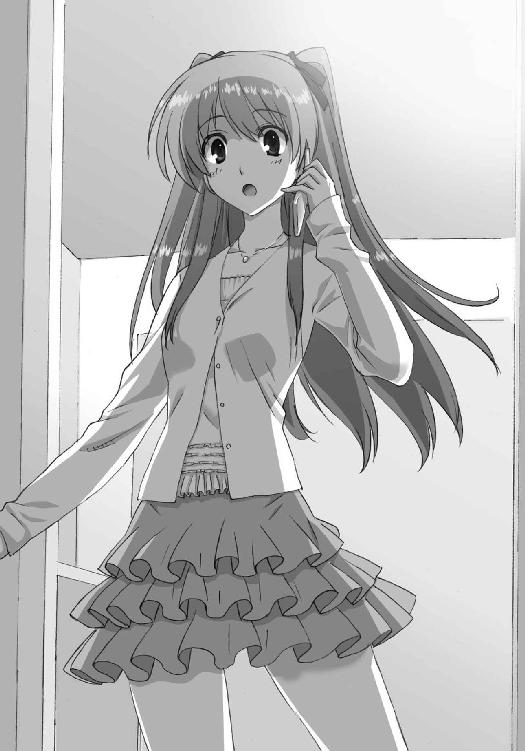

| ＷＨＩＴＥ ＡＬＢＵＭ２ 雪が紡ぐ旋律１ (GA文庫) | |
| 月島 雅也 | |
| (2013) | |

ＷＨＩＴＥ ＡＬＢＵＭ２
雪が紡ぐ旋律１
月島雅也

本書に掲載されているコンテンツの著作権等の知的財産権およびその他すべての権利は、ソフトバンク クリエイティブ株式会社または正当な権利を有する第三者に帰属します。
本書の内容を権利者の許諾なく複製・複写・翻案・放送・出版・データ配信（送信可能化を含む）などすることはできません。
カバーイラスト
なかむらたけし
口絵 本文イラスト
桂 憲一郎
どうして、こうなるんだろう。
初めて、好きな人ができた。
心から一緒にいたいと思える、親友ができた。
仲間が──できた。
掛け替えのない、夢のような時間を手に入れた。
両手に抱えきれないほどの幸せを、手に入れた。
そのはず──だったのに。
どうして......こうなっちゃうんだろう......。
Piece of：雪菜
「ふーっ......」
屋上へのドアを開けると、眩しい夕日が見えた。
目を細めながらフェンスまで歩き、グラウンドに目を向ける。
部活に励むたくさんの生徒たち。その誰もが懸命に、やりたいことに取り組んでいるように見えた。
──わたしも、あんな風にできたらな。
そう思い、雪菜は小さくため息をつく。
顔を上げ、赤く染まる空を視界いっぱいに収める。
このままどこまでも飛んでいきたい。
本当の自分でいられる場所まで、飛んでいけたなら......。
「あーあ......」
またため息。
二年半ほど過ごした高校生活は、このまま終わりを告げるのだろうか。
これまで辛いこともなかった代わりに、楽しいこともまた、なかった。
そんな生活を選んだのは自分自身だけれど、卒業が迫るにつれ、雪菜のため息は増える一方だった。
どうして、こうなっちゃったんだろう。
言い様のない寂しさを覚え、雪菜は踵を返しもう帰ろうと──
「あっ......」
どこからか流れてきたメロディに、思わずはっとして立ち止まった。
ギター、だった。
決して上手くはない旋律にやがて、そっとピアノが寄り添うように重なり、響いてくる。
「わあっ......」
沈んでいた気持ちが、消え去っていた。この曲が聞こえた瞬間から、頭も身体も、五感全てがただただこのメロディに奪われていた。
だってこの曲は、静かに絡み合って奏でられているその音は、雪菜の大好きな曲なのだ。
とてもとても、大好きな。
誰が、演奏しているのだろう？
どんな人がこんな丁寧なピアノを弾いていて。
どんな人がこんな懸命なギターを弾いているのだろう。
誰かと誰かが紡いでいるメロディが、とても楽しそうに見えて──もとい、聞こえて。
自分も仲間に入れて欲しいという気持ちが、勝手に溢れ出していた。
「......♪」
次の瞬間、雪菜は口を開いていた。
一瞬誰が声を出しているのかわからなかった。数秒遅れて、自分が歌っているのだと気付く。
勝手に、音に身を任せていた。
風に舞う旋律に自然と歌を重ねていた。
意識せずとも声が流れ続ける。条件反射のように。呼吸のように、自然に。
なんて気持ちがいいんだろう。
一人ではなく、誰かと曲を作り上げることが、こんなに気持ちがいいなんて。
そしてこんなに嬉しいだなんて。
この曲を──
『ＷＨＩＴＥ ＡＬＢＵＭ』を、誰かと絡み合わせることが、こんなにも......。
雪菜は歌い続けた。
本当の自分を隠さず、ただ酔いしれるように。
もうずっと忘れていた、夢のような時間を存分に味わうために。
そしてそれがあまりにも楽しすぎて、気付けなかった。
いつの間にかギターの音が消え、ピアノだけが残っていたことに。
ドアが開き、誰かが屋上に入ってくるまで、気付けなかった。
そう──
「......小木、曽......？」
その人物がそう声をかけてくるまで、何も気付かずに歌い続けていた......。
Piece of：春希
学園祭のためにバンドを組む。これはよくある話だ。
それに向けてギターの練習をする。これもよくある話だ。
しかし、本番を今月末に控えた時期に空中分解してバンド解散、というのはよくある話なのだろうか。
「はあ......」
ため息をつき、抱えたギターをそっと爪弾いた。
俺の心情と同じ、気の抜けたような音が、静かな第一音楽室に響く。
「ため息ばっかりつくなよ春希、こっちまで落ち込んじまう。......はあ」
そう言いながら、我が親友の飯塚武也も盛大なため息をついていた。
男二人、揃ってため息をついているというのは、端から見ると随分と滑稽に見えることだろう。
だけど俺たち──軽音楽同好会は、割と本気で困っていた。週に二回しかない練習日なのにこうしてため息ばかりついているのがいい証拠だ。
「あー、どうしてこうなっちまうかなあ」
武也のその言葉に、元はといえばお前のせいだ、と言ってやりたかったけど止めておく。ここ数日で何度同じことを言ったかわからないからだ。
高校生活最後の秋。
開け放した窓から差し込む夕日は、十一月なのに眩しくて、目を細める。
黙っていると、武也がさらに続けた。
「ほんの何日か前まではバンドだったのにな。それが今じゃ、ギターとギター見習いの二人だけってのはなあ」
「悪かったな見習いで！」
叫んだ拍子に弦が椅子を擦り、ギターがうめき声を上げた。
俺の通う峰城大付属学園は、今月──十一月の末に学園祭を控えている。
そのステージでライブをすべく四月に発足した軽音楽同好会は、半年も練習を重ねてきた今になって、見事バラバラになってしまった。
原因は、有り体に言って女絡み。
途中で参加してきたボーカルの女の子がとんでもないクセモノで、他のメンバー全員を手玉に取ろうとした結果、男の友情と共に軽音は崩壊したのだった。
......まったく、今思い出してもげんなりする。顔はいいけど......っていう典型的な女子だった。しかも下級生だってのがまた泣ける。
そしてそんなトラブルメーカーを連れてきたのが、軽音の部長（会長じゃないのは謎だ）であり基本的に女子を顔で判断する男、他ならぬ武也だったというわけだ。
ともかくそのせいで彼女を含めたほとんどのメンバーが抜けた。残ったのは、そもそも自分が遊び人だからダメージのない武也と、彼女に興味のなかった俺の、二人だけ。
おまけに武也はギターで、俺は補欠のギター......つまり軽音楽同好会には、ギターしかいなくなってしまったのだ。まさに絶望的。
「ていうか武也、新メンバー探しはどうなったんだ？」
一応悪いとは思ったのか、俺が新しくメンバーを探してくる！ と数日前の武也は高らかに宣言していたのだ。
「いやー、それがさあ。めぼしい奴らは皆もう他でバンド組んじまってるんだよ。やっぱこんな時期じゃ、そう都合良く見つかんねえよなあ」
諦めるの早すぎだろ、とちょっと思ったけれど、俺よりよっぽど顔の広い武也がこう言うのだから、本当に難しいのかもしれない。
「はーあ、まずは早いトコ楽器を揃えて、超美少女ボーカリストを迎え入れる準備をするつもりだったんだけどな、チクショウ」
「......真面目にメンバー探したんだよな？」
「あったり前だろ？ ミス峰城大付の有力者を中心にばっちりリサーチ済み。ただ、楽器が足りてないのにボーカルだけ誘うのはなあ」
「ボーカルにばっかり注力すんな！ 楽器もちゃんと探せ！ だいたい後悔って言葉を知らないのかお前は!?」
まったく、と思わず違うため息をつく。ときどき友人の縁を切りたくなるな、こいつは......。
ちなみにミス峰城大付っていうのは、学園祭でやるミスコンの優勝者のことだ。学校非公認ではあるけれど、毎年メインを張るぐらいの盛り上がりを見せるイベント。......さっき言ったトラブルメーカーは、去年の準優勝者だったり。
「だって、失敗をカバーするには成功しかないだろ？ たとえばほら、あの小木曽雪菜とかが入ってくれたら大成功だしさあ」
「ああ、まあ......」
武也が言ったのは、去年も、そして一昨年もミス峰城大付に輝いた女の子の名前だった。
「？ なんだよ？」
「いや......あの子はたぶん、そういう目立つことは嫌いだと思う」
「そうか？ まあ確かにそういう雰囲気あるような気はするけど......ていうか春希、お前あのコのこと何か知ってんのか？」
そのツッコミに、あっ、と失言に気付く。
「あ、そ、そういうわけじゃなくて......何となく、だよ」
「ふーん？ それならそれでいいけどな。彼女以外にも候補のコは何人もいるし。歌が上手いかは知らないけど」
「武也......そこ調べとけよお前」
「ま、どっちにしろ他の楽器が見つからないことには意味ないんだけどなー......」
はああ、と武也はまた一つ大きなため息をつく。
「なあ春希、やっぱ無理かもな」
「......ずいぶん弱気だな、部長」
「さすがにな。そもそもお前を軽音に誘ったのは俺だし、悪いとは思ってるけど。......エントリーの締め切り、明日までだったよな？」
「ああ」
学園祭当日、ライブは体育館で行う。すでに出場エントリーは終えているけれど、最終締め切りは明日だ。明日中に取り消せば、当日のステージに穴を開けるような真似はせずに済む。
「素直に諦めた方がいいかもな。一応、明日まであちこち当たってみるけど、望み薄だぜ」
よっ、と荷物を抱え上げる武也。
「だからまあ......悪かったな春希。いろいろと」
「武也......」
「じゃ、もうちょっと探してくるわ。またな」
そう言って、武也は去っていった。
「はあ......」
一人になった俺は、何度も繰り返したため息を、もう一度ついた。
やっぱりもうダメか。
それまでギターになんて触ったこともなかった俺だけど、四月から今日まで一生懸命練習してきた。今年は三年生、高校最後の年だ。その思い出にと懸命にやってきたつもりだ。
もちろん補欠なんだから、どっちみち本番のステージに立つことはなかっただろう。それでも──まさかこんな形で軽音のライブ参加が水泡に帰すとは、思ってもみなかった。
なぜなら俺には、別の目的があったからだ。たとえ自分が演奏しなくても、軽音がステージに立てば達成できていたはずの、ある目的が。
女性ボーカルさえいれば達成できていたはずの目的が......。
それが叶わないという現実に、俺のため息がまた増える。
「......仕方ない、か」
武也に言われるまでもなく、状況は最悪だった。
曲がりなりにも『バンド』だ。
ベースは？ ドラムは？ キーボードは？ そして──ボーカルは？
今からそれだけ揃えるのは、さすがに無理だろう。
不運な結末とはいえどうしようもない。
「ここも、今日で最後かな」
無人の室内を改めて見回す。
軽音楽同好会がこの第一音楽室で練習できるのは、週に二日、火曜と木曜の放課後だ。本番は今月末、使える回数はあと十回もないが、どうせもう使う必要もなくなるだろう。
本当にこれが、最後。
「よっ......と」
ギターを抱え直す。
今日が最後だって言うんなら、これが──この演奏が、俺のラストステージだな。
大きく息を吸ってネックを握り締め、指を滑らせた。最初の一音。そして続くメロディラインを着実に刻んでいく。
出だしは上手くいった。まだまだ下手かもしれないが、この曲を弾いているときが一番幸せだ。大好きな、曲だから。
だからできるだけミスらないよう、何度も指先に叩き込んだ旋律を懸命に再現していく。
一番最初に練習して、一番最初にトチらずに弾けるようになった、その曲を。
──『ＷＨＩＴＥ ＡＬＢＵＭ』
この曲がリリースされたのは十年近く前だ。
当時はもちろん、今でも「冬の懐メロ」といえば結構な率で名前が挙がる、いわゆる定番ソング。
曲調も、歌詞も、そして女性アーティストが紡ぐ透明感のある歌声も。
小さい頃に聴いて以来、そのどれもが好きだった。
ギターを弾くと決まったときに真っ先に思い浮かんだのは、やっぱりこの曲で。
何よりもまずこのメロディラインが弾けるようになりたいと、強く思ったものだ。
「さて......どうだ？」
指さばきを維持しながら、じっと待つ。
何をかって？
この演奏に......俺の、軽音楽同好会の最後の演奏に、『お隣さん』が付き合ってくれることを、だ。
そして──
「......よし！」
頼りなくも何とか作り上げている俺のメロディに、そっと重なってくる音があった。
最初は気付かないほど軽く、自然なタッチで。
やがてその音は、先に走っていた俺の隣にそっと寄り添い、時には優しく導き、時には踊るように跳ね回っていく。音楽素人の俺にもわかるほどの圧倒的な技量が、拙いギターに合わせて『ＷＨＩＴＥ ＡＬＢＵＭ』をセッションしてくれていた。
待っていたのはこれだった。隣室の窓から流れてくる、ピアノだ。
「ありがと、今日も──」言いかけて、言い直す。「......今日まで、付き合ってくれてっ」
呟いても聞こえるはずはない。だから神経を集中させ、ひたすらに指を動かし続ける。本来なら決して釣り合わないレベル、明らかに格上の演奏が、こうして自分と共にこの曲を奏でてくれる嬉しさを、精一杯嚙み締めながら。
顔も知らない隣人に、精一杯感謝しながら。
「ははっ......」
いいぞ、上手く弾けてる。
隣人の存在に最初に気付いたのは、二ヶ月ほど前のことだった。
そもそも補欠のギターだった俺は、実力的に全体練習にはいつも参加できず、皆が帰った後に一人で特訓していた。参加しようにも、足を引っ張るだけなのが明らかだったから。
それでも、地道な練習を重ねていき、少しずつではあるけれど上達していき、多少なりとも形になり始めたような気がしていた、ある日。
いつものように演奏していた俺のギターに、いつのまにかピアノが重ねられていた。
最初は何事かと思ったが、どうやら隣の第二音楽室にいる誰かがセッションしてくれているらしかった。
そのピアノは、まるで指導でもするかのように、ミスの目立つギターのメロディを正しい音程やリズムで整えていた。俺が疲れ果てて練習を終えるまで、ずっと。
おまけによほど暇しているのか、それ以来、俺が一人で練習する際にはいつもちょっかいを出してくれるようになった。向こうの考えはわからないが、俺にとっちゃ願ったり叶ったりだった。言葉ではなく、音楽で音楽を教えてくれているような気持ちがしていたから。
隣人は、物事の多くをピアノで語っていたが、時にはベースやら、ドラムやら、サックスやらと、様々な楽器で俺のギターに被せてくることもあった。そしてその演奏のどれもが、明らかに俺とはレベルが違った。
もしや向こうは一人ではないのだろうか、と思ったりもしたが、どうもそういう訳でもないらしい──複数の楽器が同時に演奏されることはなかったから。驚くことに、お隣さんは非常に多芸な人物のようだった。
いつもドアに鍵をかけ、窓のカーテンを閉めている隣人の正体は、未だにわからない。ウチの高校には、俺たちの通う普通科の他に音楽科があるので、そこの生徒だってことだけは予想が付いたけど。
二人で紡ぐメロディは、空気を含んでふくらみ続ける。いつか世界中に響き渡るのではないかと錯覚するほどの陶酔感。それをつまらないミスで終わらせまいと、必死に弾き続ける。
どうしたのだろう。今日は自分でもわかるぐらい、よく指が動いている。
こんな最後の最後に──いや、最後だからこそか。
ギターが辿る道筋を、ピアノが鮮やかに彩っていく。
ピアノが踊る舞台を、ギターが照らすようにして追いかけていく。
腕前の差はともかく、気分的には最高だった。俺にとっては夢のような時間。
お互いがお互いをわかり合い、励まし合い、肩を組んで歩くような、そんなひととき。
だからこそ、つい思ってしまう。
このお隣さんが俺たちの軽音楽同好会に入ってくれたら、どんなにいいだろうか、って。
けどそれは、きっと叶うはずもない願望で。
「............」
だから、これが最後。
このセッションが、軽音楽同好会最後の演奏。
明日エントリーを取り消せば、それで全てが終わる。
「おしまい......か」
呟いた自分の言葉に、改めて気が滅入る。
贅沢なのはわかっている。最後の演奏を、独りではなく最高のピアノと一緒に締めくくれるだけでも充分に幸運だろう。
だけど実現させたかった。軽音のライブ演奏を。自分の本当の目的を。
そのために俺はこの半年の間、一生懸命......。
「っ......」
何とも言えない気持ちを抱えたまま。
ギターとピアノの、他には何もない、足りないものだらけなようで満ち足りているような、そんな不思議なメロディに指を委ね──
「......え？」
ギターと、ピアノと。
そしてそこに重ねられていたもう一つの要素に気付いた瞬間、俺の指は止まっていた。
歌、だ。
誰かが......『ＷＨＩＴＥ ＡＬＢＵＭ』を歌っている。
「──っ！」
次の瞬間、俺は音楽室を飛び出していた。
どこから声が聞こえているのか、はっきりわかったわけじゃない。ただ何となく、そう遠くない、かなり近いところで歌っている気がした。
そしてここは三階、近いところといえば......。
「屋上っ......」
どこかの教室、という可能性も充分にあった。
それでも俺は、ただただ走った。確信にも似た何かに突き動かされて。
階段を駆け上がり、ドアを開け、転がり込むようにして辿り着いた屋上には。
『彼女』が──声の主が、いた。
「......小木、曽......？」
思わず、呟いていた。
そこにいたのは、二年連続ミス峰城大付の少女に他ならなくて。
そしてその歌声は、消滅間近の軽音楽同好会にとって、どうしようもないほど理想的な、例えようもないほど魅力的な女性ボーカルのそれに、他ならなかった。
Piece of：雪菜
「えっ......？」
突然現れた闖入者に、雪菜は歌うのを止め、驚きに目を見開く。
「え、あなた......えっえっ、い、今の、聞いて......!?」
ついうっかり歌ってしまったけれど、よく考えたら誰かに聞かれる可能性は充分あった。
慌てだした雪菜に、「ちょ、ちょっと待って！」と闖入者──その男子生徒は必死になって声をかけてくる。
「あの、いきなり押しかけてごめん。俺Ｅ組の北原春希っていうんだけど、別にやましいことしてたわけじゃなくて......そう、歌が聞こえたから、それで」
「や、やっぱり聞いてたの......!?」
「か、勝手に聞いててごめん！ 俺、『ＷＨＩＴＥ ＡＬＢＵＭ』すっごく好きでさ、それで、自分のギターと一緒に誰かが歌ってくれることなんて初めてで......つい」
自分のギター？
「じゃあ今のギター......あなたが弾いてたの？」
「うん、下手だけど、一応。あっ、でも小木曽の歌はすごかったよ！ 俺ホント驚いたんだ、今までいろんな奴がこの曲歌うの聞いてきたけど、一番上手かった！ ちょっと感動しちゃって、だから俺、急いでここに──小木曽？」
「あっ......え、ええと、その、わたし......」
彼の熱弁に、雪菜はどう反応していいのかわからず、あちこちに視線を動かす。
どうにも恥ずかしくなって、その場を後にしようとしたのだけれど。
「ま、待って！」
それを察したらしい彼が、慌てたように雪菜を呼び止めた。
「あのさ小木曽、ウチのバンドの......ボーカルやってくれないかなっ？」
「えっ？ ボ、ボーカル......？」
単語の意味が一瞬理解できなかった。......バンド？
「俺、軽音楽同好会に入ってて、学園祭のライブに出るんだけど、軽音、今ボーカルがいないんだ。だからもし小木曽がやってくれたら、すごくありがたくて......小木曽の声ならすごいステージにできると思う」
ライブ？ ステージ？
つまり人前で......大勢の前で、歌うってこと？
「あんなに上手いんだから、誰に聞かせてもすごく──」
「わ、わたし......あのっ、ごっ、ごめんなさいっ！」
「盛り上が......え？」
顔を伏せ、雪菜はそのまま走り出した。ドアを開け階段を駆け下りる。
追ってこないところを見ると、彼は今ごろぽかんとしているに違いない。
話の途中で逃げ出すというのは失礼だが、仕方なかった。雪菜の頭は今、こんがらがっていたから。
つい、我慢できずに歌ってしまったこと。
それを聞かれ、あんなにも褒められたこと。
そして──雪菜は彼のことを知っていた、ということ。
そんなあれこれで、頭がいっぱいだったから......。
Piece of：春希
翌日。
「──って感じでな、やっぱキツいかもしんねー」
「はあ......」
「いや一応さ、もうちょっとでベース弾ける女の子を他のバンドから引っ張ってこれそうだったんだよ。なのに彼女の親友ってのが、運悪く俺が前に遊んだ子でさあ」
「............」
「んで、あることないこと吹き込まれちまってな。結局ウチへの移籍はボツになっちまったんだよ。まったく、なんでそうなるかなあ」
「はああ......」
「春希？ おい、聞いてんのかよ？」
「......え？」
「普段ならすぐ『身から出た錆だろうが！』とか言うくせに。寝ぼけてんのか？」
怪訝そうな武也の顔が視界に入り、はっと我に返り「あ、いや別に」と首を振る。
「どうせあんまり寝てないんだろ？ クラスの用事あれこれ抱え込みすぎなんだよ、お前」
「し、仕方ないだろ。文化祭近いし」
昨日寝られなかったのは事実だけど、理由は別だ。
でもそれを武也に言うのはどうにも憚られた。
小木曽雪菜にボーカル頼んだら逃げられた──なんて言えないよな、やっぱり。
冷静に思い返してみると、あんな言い方じゃ断られるに決まってるよなあ。
いや、どんな言い方したってあの小木曽雪菜がバンドなんかやってくれるわけないか。
馬鹿だな俺って、あはは......はあ。
「いくらクラス委員だからって、責任感持ちすぎなんだよ」
「お前はもう少し責任感を持ったらどうなんだよ......色んなトコに」
「もうちょっと気楽に行こうぜ。そんなんだからお前モテないんだよ。Ｅ組って意外といいコいるし、もうちょっと女子に目を向けるとかしてさあ」
「だからお前はそれしかないのかよ！」
ちなみに、当たり前のような顔をしてここにいるけど武也はＧ組である。
「いやいや、マジでレベル高いと思うぜ？ そりゃ小木曽雪菜ほどの逸材はいないとしても......おっと、顔だけなら張り合える奴が一人いたな」
そう言って、武也はちらりと俺の隣に目をやった。主不在の、その席。
「この調子じゃ今日も遅刻か。ま、俺にとっちゃその方がありがたいけど。俺がいるとすげー睨んでくるんだよなあ、あいつ。ホントこえーよ」
「......やっぱり言ってやるよ武也。それは身から出た錆だろうが」
遅刻常習犯である隣席の女子──彼女はちょっと変わっている奴だ。四月からかれこれ半年ぐらいお隣さんやってるけど、未だに何を考えてるのかよくわからないし。
容姿に釣られて武也がホイホイと口説いたところ、返事の代わりにいきなり蹴り飛ばされたとか何とか。......まあ個人的には正直いい気味だと思ったり。
ともかく、それ以来武也は割と本気で彼女に怯えていたりする。
「俺の魅力がわかってもらえないっていうのは寂しいもんだよなあ。ま、小木曽雪菜がいるからいいけど」
「小木曽だってお前の魅力なんかわかりゃしないっての」
それにしても、昨日の小木曽......歌、上手かったなあ。
あの『ＷＨＩＴＥ ＡＬＢＵＭ』は本当に最高だった。もし彼女がボーカルをやってくれたら、どんなにいいか──やってくれるわけ、ないけど。
と、そのとき。
「おーい、春希ー！」
かけられた声に振り向くと、予想通りの人物がこっちに歩いてきていた。
「ちょっと春希春希、すっごいんだよー！ なんと......ってあれ、武也もいたの？」
「なんだよ、いちゃ悪いのかよ依緖」
ふー、とため息と共にそう言う武也。
やって来たのは水沢依緖。
ショートカットで、女子バスケ部元キャプテンの体育会系で、そして武也の......。
「別に悪いなんて言ってないけど？ 暇なんだなって思っただけで」
「今のお前にそんなこと言われる筋合いあんのかよ？」
「あたしは春希に用があって来たんだから、あんたとは違うの」
「俺だって用があったんだよ」
「はいはい、どうせ武也の用なんて大したことじゃないんでしょ？」
「ちょっと待て、そもそも暇とか何とか先に言い出したのは依緖の方だろーが」
「お前ら、他人の席の前で喧嘩しないでくれるか......」
武也の、腐れ縁的な存在。
「人聞きの悪いこと言わないでよ春希、誰も喧嘩なんてしてないじゃない」
何でもないような顔でそう言う依緖に、俺もついため息。
依緖と知り合ったのは、もちろん武也繫がりだ。一年のときに紹介されて以来、貴重な友人として付き合っている。......まあ今みたいに、ときどき面倒くさかったりもするけど。
「で、俺に用じゃなかったのか？」
「あっそうだった！ もう武也、余計なこと言わないでよ」
「俺が何したってんだ......」
ジト目で睨む武也を無視して依緖が言う。
「あのね春希、あんたにお客さん！ 感謝してよー、たまたまあたしがあんたのこと知ってたから、こうしてちゃんとナビしてきたんだからね」
「え？」
「ていうかいつの間に知り合ったのよ、あんたたち。まあ事情は知らないけどさ、後でちゃんと教えて......っと忘れてた。ごめーんお待たせ！ こっちこっち！」
振り向いて、依緖が誰かを手招きする。
言ってなかったけど、依緖もＥ組の生徒じゃない。依緖は、三年Ａ組。
俺とも武也とも違うクラスだけれど、Ａ組は──
「あ、あの......おはよう。北原くん」
Ａ組は、小木曽雪菜がいるクラス。
◇
小木曽雪菜の話をしよう。
品行方正、才色兼備、そしてもちろん容姿端麗。その雰囲気は、育ちの良い箱入りお嬢様、というイメージがピッタリ。
学年の──いや、学校の生徒ほぼ誰もが知っているであろう存在だ。
前にも言ったけれど、学園祭の裏メインイベント『ミス峰城大付コンテスト』において一年生のときから優勝を飾り、二年生でもまた優勝。
今年は前代未聞の三連覇がかかる、我が校の超有名人。
そしてあらゆる男子生徒にとっての、高嶺の花。
「え、ええとね......」
「あ、うん......」
そんな有名人とこうして廊下で顔を突き合わせているのだ、感じるのは何とも言えないギクシャクさと、周囲から突き刺さる無遠慮な視線。中にはマジで痛いぐらいの視線もあるような気が......。
「あの、昨日のこと......話したくて」
先に切り出したのは小木曽の方だった。
「昨日はごめんなさい。いきなり逃げたりなんかしちゃって」
「いや、俺の方こそ......突然あんなこと言われても困るよな。逃げるの、当たり前だと思う。ごめん」
「ううん、違うの。あれは......」
そう言って小木曽はわずかに俯き、黙り込んでしまった。
もしかして、昨日のことそんなに気にしてたのかな。それで今日わざわざ謝りに来てくれたのかも。だったら逆に申し訳ない。
「あのさ小木曽、昨日のことは俺が全面的に悪かったから。だからあんまり気にしないでくれるとありがたいんだけど......ほら、ムシのいい話かもしれないけど、俺昨日のこと忘れるからさ。小木曽も昨日の俺のこと、忘れてくれると──」
「ふぇっ？ ち、違うよ北原くんっ」
急に顔を上げ、慌てたようにそう言う小木曽。
「え、違うの？」
「そうじゃなくって......ええと」
そして小木曽は何度か深呼吸した後、小さく「うんっ......」と呟くと、何か意を決したように真っ直ぐ俺を見た。
その視線に、こっちがつい気恥ずかしさを感じてしまう。
「......えっと、わたしもいきなりでごめんなさい。あのね北原くん。ちょっと、お願いが......あるんだけど」
「え？ な、何？」
あっ、ひょっとしてバンドに入ってくれる気になったとか......なんて思った俺の予想は、まったく予期していなかった形で裏切られた。
「よ、予定があったらいいんだけど、でもあの、もし暇だったら──」
恥ずかしそうにしながらも、それでも小木曽は、囁くように言った。
他の誰にも、聞かれない声で。
「今夜、わたしに......付き合ってくれないかな？ 本当の、わたしに」
◇
教室に戻ると、武也と依緖が目を輝かせて俺を待ち構えていた。
「おい春希、お前いつの間に小木曽雪菜に粉かけてたんだよ!?」
「ちょっと春希、今の何だったの!? なんか気まずそうだったけど、ひょっとして......！」
「あー、予鈴鳴ってるぞお前ら。教室帰れよ」
「「春希！」」
う......。
「いや、えっとだな......」
「お前、俺には『女を顔で選ぶな』とか散々説教しといて、自分はミス峰城大付にアタックしてたのかよ？ そりゃずいぶんな話だろ」
「武也と違ってあんたはすれてない分いいかもしれないけど、さすがに雪菜はハードル高すぎでしょ」
「ちょっと待て依緖、誰がすれてるって？ 経験値が高いって言ってくれ」
「日本語じゃ普通、経験積み過ぎてる奴のことをすれてるって言うんだけど？」
だからここで喧嘩するなって。
「って、それよりおい、春希！」
「そうよ春希！ あんた前に告白してたんでしょ？ いつ？ 昨日？ それで雪菜、なんて言って断ってきた!?」
「ち、違うって！ 告白とかそういうんじゃなくて！」慌てて首を振った。「軽音のボーカルにだな、彼女を......」
「何？ 春希お前、マジであのコ勧誘したのか？」
「ああ、あんたたちの同好会かあ。そういえば解散の危機とか言ってたっけ」
「ならその返事か。で、どうだったんだよおい？ ......まさか我らが軽音楽同好会に、ボーカリスト小木曽雪菜が誕生!?」
「あ、いや......ごめんなさい、って、彼女」
「ちぇ、やっぱそうか」
わかっちゃいたけどな、とため息をつく武也。
「バンドのボーカルねえ。それこそ雪菜に頼むのは無理でしょ。雪菜ってそういうのに興味なさそうだし。そもそもあのコ、普段から誰とも付き合い悪いのよね。放課後も、いつも一人でさっさと帰っちゃうし」
「そういや春希、お前も『目立つのが苦手そう』とか言ってたよな。なのに誘ったのかよ？」
「まあ、その......」
何と言ったものか、と困っていたところでちょうどチャイムが鳴り、二人は慌てて自分たちの教室へ戻っていった。
皆もガタガタと席に着く。
やれやれ、とため息を一つ。
小木曽をバンドに誘ったこと、結局言っちゃったな。
だけど、今となってはそんなことより──
「今夜......？」
ぽつりと呟く。
さっき小木曽に言われたことが、頭の中をぐるぐると回っていた。
何なのかよくわからないけれど。
あの小木曽雪菜が。
今夜。
俺を。
......俺を？
「............」
あまりにもそのことばかり考えすぎて、思考に余裕がなくなっていた。この後の授業がほとんど耳に入らなかったほど。ついでに、ライブの出場取り消しを申請することなんて、すっかり忘れてしまったくらいに。
そして隣の席は、一時間目が始まっても主不在のままだったけど──
「......おい」
昼休み、ふとかけられた声に振り向くと、そこには。
「え？ と、冬馬っ？」
静かに俺を睨むその隣人、冬馬かずさが、腕を組んで立っていた。
◇
遅刻、サボりの常習犯。
常に無口で無気力、無愛想という俺の隣人は、武也も認めるほど精緻な顔立ちをしている。どう控え目に見ても、美人という評価は揺るがないだろう。
それだけに、そんな彼女の瞳は（無表情ということもあって）いつも冷たい印象を相手に与えがちだった。
しかし、今日はなぜか冷たいというより......。
「あの......冬馬？」
「............」
なんだか怒っているような印象を受けるのは、気のせいだろうか。
そもそも、こっちから声をかけても反応ないのが常なのに、今日に限ってどうして向こうから話しかけてきたのだろう。
「ええと、今日は遅かったな？ いつも一時間目の途中には来るのにさ」
「............」
とりあえず普通に会話を試みてみたのだが、やはり反応が悪い。きっと何か用事があるはずだと思うんだけど。
「ずいぶんな寝坊でもしたのか？ ......あれ、でも目の下にクマがあるな。ひょっとしてあんまり寝てないのか？」
俺も人の事は言えないけど、と思った瞬間。
「誰のせいで寝られなかったと......」
「え？」
小さく何かを呟いた冬馬の目が、微妙に険しさを増したように見えた。
「ご、ごめん、何だって？」
訊き返した俺に、冬馬はしばらく黙っていたけれど、やがて。
「..................昨日──」
何か言いかけた冬馬の唇はしかし、「ねえねえちょっと委員長ー、文化祭の予算で......」と別の女子生徒が話しかけてきたおかげで、それ以上開かれることはなかった。
代わりにキッと俺を睨むと、そのまま踵を返し教室を出て行ってしまう。
「あ......」
長い黒髪を揺らして去る背中を、何もできずに見送った。
せっかく珍しいことが起こったのに。
「ちょっとオーバーしそうなんだけどさ、これ申請したら何とかなる？」
「ああ、それは......」
もちろん冬馬だけがクラスメイトってわけじゃない。
ちゃんとクラス委員としての責務を果たしつつも、冬馬のこと怒らせちゃったかなあ、なんてことはやっぱり気になったままだった。
──結局、後で戻ってきた冬馬に話しかけても、「うるさい」としか言ってくれなかった。
◇
「............」
一体何が起ころうとしているのか。
時刻は午後十時。
小木曽が待ち合わせ場所に指定したのは、南末次の駅前だった。
この辺りは大きな歓楽街になっていて、酔った顔のサラリーマンや賑やかに騒ぎながら歩く男女の集団やらが、さっきからひっきりなしに俺の前を通り過ぎていく。
そんな朝まで眠らない町に、俺は今、どういう顔をして立っているのだろう。
もうすぐここに、『あの』小木曽雪菜が来るのだ。しかも向こうからのお誘いで。
一体何が起ころうとしてるんだ......？
「──北原くん」
「っ!?」
いきなり声をかけられ驚きながらも、平静を装って振り向く。
「あ、ああ、小木曽......」
薄ピンクのワンピースに、白いカーディガン。
小さく控え目に光るネックレス。
シンプルだけど上品さが窺える私服に身を包んだ小木曽が、小さく息をついて立っていた。さすがミス峰城大付、よく似合ってる。
「ごめんね。わたしの方からお願いしたのに、遅れちゃって」
「あ、いや全然......」
「ウチ門限うるさくって。だから、これぐらいの時間にならないと......抜け出せないの」
「えっ......」
家を抜け出してまで、ここに？
「じゃあ、さっそくだけど......行こっか？」
わずかに俯いた顔を赤らめ、恥ずかしそうに呟く小木曽。
行くって......一体どこに──
◇
そして、約一時間後。
「ふうう～っ......」
連れ立って入ったとある建物の中──うっとりと、小木曽が満足げに吐息を漏らす。
「あー、気持ちよかったあ......喉渇いちゃったね」
ちょっと声出し過ぎちゃったかな、とはにかむ小木曽。
「............」
俺はというと、全身の脱力感ですっかり座り込んでいた。なぜなら部屋に入っていきなり、そして今まで、完全ノンストップだったからだ。
「ね、北原くん。わたし......どうだった？」
「いや、ええと......」
「正直に言って欲しいなあ。やっぱり、引いた？」
「そ、そんなことないけど、ただ俺、初めてだったから......こんな......」
「こんな？」
「こんなに......歌いまくる女の子は......あ、あはは......」
南末次駅から徒歩三分。
ダイマチビル五階。
カラオケハウスメイフラワー、１５号室。
十数曲連続で熱唱し続けていた小木曽は、ようやくそこで小休止してくれた。
......なんて言うかもう、笑うしかない感じ。
「あ、ドリンク頼もっと。北原くん何にする？」
「俺は......いや、いいよ」
別の意味でお腹いっぱいだし。
そんな俺とは対照的に、小木曽はウーロン茶を注文する声すらどことなく楽しそうだった。
ソファーに座った後も、その表情は生き生きと輝いている。
「さてと、とりあえず新曲一通り歌ったから、次は定番流していこうかな～」
「............」
なるほど、どうやら休憩する気も必要もないらしい。
──マジかよ。
「北原くん、やっぱり引いてる？」
「いや別にそんなことは......」
あるけど。
あの小木曽雪菜が、ミス峰城大付が、まさかこんなにカラオケ大好きだったとは......思いもよらなかった。
「変だって思うかもしれないけど、わたし、週に一度はここでヒトカラやってるんだ。九時以降だと半額なの」
「そ、そうなんだ。まあこんな時間からじゃ付き合ってくれる友達もなかなかいないもんな、あははは......」
「あ、ううん。そうじゃないの。わたしね、カラオケは一人で来たいんだ」
「へ？ そうなの？」
「だって、誰かと一緒だったらその分わたしの歌える時間が減っちゃうでしょ？ それが我慢できないんだ、わたし。すぐイライラしちゃって」
「イライラ......」
「一気に五曲ぐらい入れるとブーイングされちゃうし。だから一人の方がいいの」
「五曲か......そりゃなあ」
たまーにいるよな、こういう空気読めない人......。
「北原くん、今空気読めない奴だなって思ったでしょ？ 顔に出てたよ」
「うえっ!? ご、ごめん！ つい......」
「あはは、いいの。自分でもわかってるから。だけどね......」
小木曽はわずかに真面目な表情を見せて、言う。
「だけど、歌うことに関してだけは、空気なんか読みたくないんだ。それだけはね、絶対に、譲れないの」
「小木曽......」
「だから昨日もそう。たとえ学校の屋上だろうと、自分の持ち歌......それも一番のお気に入りが聞こえてきたりしたら、我慢なんかしていられるわけないの」
「......『ＷＨＩＴＥ ＡＬＢＵＭ』？」
「うん。ちょっと古いかもしれないけど、大好きなんだ、わたし」
「俺も......生まれて初めて、自分で買ったＣＤが、あれ」
「そうなんだ？ なんだか嬉しいな」
気が合うね、と小さく微笑む小木曽。
「あのとき、すごく楽しかった。すごく嬉しくて、すっごく気持ちよかった。あんな気持ちになれたの、何年ぶりだろう。だから......北原くんが来たときには、本当にびっくりしたよ」
「あー......ごめん、せっかくのいい気分のところ邪魔しちゃって」
「ううん、それもあるけど......」
そこで小さく深呼吸してから、小木曽は言った。
「ね、北原くんってさ──前からわたしのこと、知ってたよね？」
一瞬、言葉の意味がわからなかった。
「知ってた......って、そ、そりゃ知ってたよ。有名人だし、去年も一昨年もミス峰城大付だったし──」
そうじゃなくて、と俺の言葉を遮った小木曽は、自分の鞄から何かを取り出す。
「これのことも......このわたしのことも、知ってたんだよね？」
「あっ......」
テーブルの上に広げられたのは、『スーパーごんだ』と書かれた、いかにもダサいオレンジ色のエプロン。
それは、俺だけが知っているはずの、小木曽雪菜のもう一つの秘密だった。
◇
最初に見たのは、去年の夏頃だったと思う。
武也に連れられて行った楽器店。その道中にある商店街で、同級生ぐらいの女子が小さなスーパーで働いていた。
そのときは、ただふうんと思っただけだった。三つ編みに黒縁メガネという出で立ちの彼女は、別に知ってる子でも何でもなかったからだ。
だが今年になり、自分でもギターを弾くようになってから、弦や楽譜を買いに何度も楽器店を訪れているうちに、ふと気付いたことがあった。スーパーの彼女は、いつも妙に地味なのだ。
単に地味なだけなら普通なのだが、何というか不自然なほど記憶に残らない、わざと目立たないようにしているかのような、そんな奇妙な違和感を覚えたのだった。
だから、だと思う。
そんなふうに彼女のことを気に留めていたせいで、ある日学校の廊下で小木曽とすれ違ったとき、はっとした。違和感の正体が、まったく思わぬところで判明したからだ。
あのときのことは今でも覚えている、廊下中に響き渡る声で「ああああっ!?」と反射的に叫んでしまったから。
それぐらいの衝撃だった。
あの小木曽雪菜が、学校一の有名人が、箱入りのお嬢様が。
あんな地味な格好でスーパーでバイトしてるだなんて、誰が思うだろうか。
「わたしも覚えてるよ。いきなり廊下で叫んでたもんね、北原くん」
「あー、うん......ごめん」
さすがに恥ずかしい。
「だ、だけど、小木曽はなんで......『俺が小木曽の正体に気付いてた』ってこと、どうしてわかったんだ？」
「それは簡単。北原くんがわたしのこと気にしてたみたいに、わたしも北原くんのこと気にしてたからだよ」
「へ？」
「わたし、あんな地味な格好までして、バレないようにこっそりバイトしてたんだよ？ ウチの制服着てる生徒が店の前を通るときは、ちゃんと注意してたんだ。あの辺って学生が遊ぶところとかないから、そうそういなかったけどね──北原くん以外は」
「............」
「これでも他人の視線には敏感な方なんだ、わたし」
全然知らなかった......まさか、気付かれてたなんて。
「もちろん北原くんのことを調べたりはしなかったよ。顔と、同じ三年生だっていうことしか知らなかった。下手に調べたりしたら感づかれると思って。だけど、北原くんが廊下で叫んだとき、バレたんだって思った。あのとき、わたしの方見てたから」
「そこまで見破られてたのか......」
「それはわたしの台詞だよ。気にはしてたけど、まさか本当にバレちゃうなんて。もうバイト辞めなくちゃダメかな、って思ったけど......」
ふう、と小木曽が息をつく。
「でもね、それからも何も変わらなかった。誰かが見に来たり、声をかけてきたりすることもなかった。相変わらずときどき北原くんが通っていくぐらいで。......黙っててくれて嬉しかった。北原くんが悪い人じゃないっていうのは、後で依緖からも聞いたし」
「いや......でもそっか、それで俺のこと知ってたのか」
「うん。だから屋上のとき、余計に驚いたんだ。しかも、突然バンドのボーカルに誘われちゃうし」
「ごめん、今思えば無神経だったよな。小木曽がバイトで忙しいの知ってて、軽音にスカウトしたりなんかして。小木曽にだってきっと事情があるのにさ」
「それはええと、あんまり大したことじゃないんだけど」
「だって、小木曽の家って、お嬢様とかそういう......」
「まずそこに誤解があってね」
困ったような顔の小木曽。
「あのね、わたしの家、別にお金持ちでも何でもないの。普通の家庭なんだ」
「そうなの？」
「うん。だけどね、一年生のときミスコンで優勝しちゃってから、勝手に『お嬢様』っていうイメージが定着しちゃったみたいで......最初のうちはそれもちょっと楽しくて、適当にニコニコしてたんだけど、そうしたら皆がどんどん信じていっちゃって、そのうち本当に引っ込みが付かなくなっちゃって......」
「え......」
「今度はそのイメージを守るために、友達と遊ぶときはいつも新しい服を着なくちゃいけなくなって。それでバイトを始めたんだけど、そうするとそもそも遊ぶ時間が減って、皆との付き合いも悪くなっていっちゃって。本末転倒なんだけど、それが逆に『お嬢様っぽい』とか思われるようになっちゃって」
「そ......そうなんだ」
なんだこの微妙すぎる事情......本当に大したことなかった。もちろん小木曽なりに考えるところはあるんだろうけど。
「ただそれだけの、話。皆が持ってるイメージとは違うんだよ、わたしって」
「......けど、なんで俺にそんなことを？」
「あ、うん。長くなっちゃったけど、それが今日の本題」
全部すっきりさせてから言いたかったの、と小木曽は深呼吸し。
「北原くん。昨日、逃げちゃってごめんなさい。なんだか恥ずかしくって」
「いや、それは別に──」
「あのときね、わたし嬉しかった。自分の歌声、あんなに褒めてもらったの......初めてだったから。それも、あんなに一生懸命に」
「小木曽......」
「『ＷＨＩＴＥ ＡＬＢＵＭ』を歌ったことも、すごく楽しくて。今まではずっと一人で歌ってたけど、誰かと一緒に音楽を作り上げるのって、あんなに楽しかったんだって、教えてもらった気がした」
だからね、とその瞳が俺を真っ直ぐに見つめる。
「だから、ちゃんと知ってもらいたかったの。お嬢様とかそんなのじゃ全然ない、このわたしを。歌うのが大好きな......わたしを」
確かに、知ることができた。
家庭のことも。
バイトの理由も。
歌が大好きなことも。
学校の誰もが知ってるミス峰城大付じゃなくて、庶民派の一少女・小木曽雪菜を──俺は今日知ってしまった。
「その上で、言うね。もしよかったら......もしわたしでよければ、軽音楽同好会、参加させてください！」
「えっ......」
「やっぱりわたし、歌うことが大好き。大好きなことができる機会があるなら......わたしなんかでも必要とされてるなら......やってみたい」
それは、昨日あの歌声に出会ったときから、ずっと望んでいた言葉。
「まだ実力不足かもしれません。本番までどんなに練習しても、皆に笑われるだけかもしれない。それでも、最後の最後まで、絶対投げ出さずに頑張ります。だから......わたしに、歌わせてください！ お願いします！」
「そんな、こっちこそ......よろしく！」
やった......本当に、あの歌声の持ち主と一緒に、ライブができるんだ。
降って湧いたような話だけれど、でも、たとえこれが天使のミスだろうと悪魔の罠だろうと構やしない。
諦めかけていたすべてがまだ終わっていないということを、彼女がたった一晩で教えてくれたから。
「ね、北原くん」
ちょうどやってきた店員が、ウーロン茶を置いて去っていく。
「これで......小木曽雪菜の秘密は、なくなってしまいました。全部、あなたに知られてしまったから」
その小さな微笑みを正面から受け止められず、つい視線を逸らしてしまう。効き過ぎた暖房のせいで顔が赤くなってなければいいけど、と心から思った。
「ま、まあライブやったら、歌が好きなことだけは皆にバレちゃうけどな」
「あ、そうだね。じゃあ、それまでは二人の秘密だね」
ふふ、と笑みを零すと、小木曽は机の上の端末を手に取った。慣れた手つきで、暗記しているらしいコードを入力していく。
「それじゃあ、聞いてください。わたしたちが出会った曲です」
ウーロン茶を一気に空にすると、小木曽はマイクを握って立ち上がった。
これまで数え切れないほど聞いたイントロが、俺たちを柔らかく包み込む。
小木曽の唇が、融けるような白い歌声を紡ぎ始める。
そうして広がる世界の中で、俺の指は透明な弦を押さえ、爪弾き始めた。
『ＷＨＩＴＥ ＡＬＢＵＭ』──
夜はまだ、終わらない。
◇
振り返ってみると、この日は本当に驚くことの連続だった。
疲れたことは疲れたものの、でも最後の最後に残ったのは心地いい疲労感と、もう一つ──女子といえば依緖ぐらいだった携帯のアドレス帳に増えた、新しい名前。
とんでもないラッキーに、身体中が充実感でいっぱいで。
だから、他のことに気を回す余裕なんかなかった。
たとえば、夜の繁華街を小木曽と二人で歩いているところを誰かに見られたかも、なんてことは、想像すらしていなかったし──
『......北原くん、ごめんね、こんな夜中に......』
家に帰った後、知ったばかりの番号から電話がかかってきて。
『実は......ウチのお父さんが、軽音のこと......』
そこから小木曽の暗い声が聞こえることだって、予想できるはずがなかった。
Piece of：春希
「おい春希、お前昨日の夜、小木曽雪菜と一緒にいただろ!?」
「ぶっ」
翌朝、登校した早々に武也が詰め寄ってきた。
「その反応......やっぱりそうか、俺の見間違いじゃなかったんだな」
「ちょ、ちょっと待て！ ......とりあえず声のボリューム下げろっ」
慌てて廊下まで武也を引っ張っていく。
「ああ、すまん。ちょっと興奮しちまってな......それで」
周囲の様子を気にしながらも、武也がギラついた目で俺を見る。
「どういうことなんだよ、なんであんな時間にお前とミス峰城大付が二人で......！」
「いや、あのな」
くそ、まさか見られてたなんて。
「......あー待った。やっぱ言うな。男女が夜の繁華街にいる理由なんて他にないよな、そんな当たり前のこと訊くのは無粋ってモンだよな、うん」
「は？ おい違うぞ、お前勘違い──」
「でも一体どうやったんだよ？ まさかお前みたいな恋愛ド素人が小木曽雪菜を落とすなんてなあ。いつの間にか俺のテクを盗んでたのか？」
「待て待て待て！」
「謙遜するなって。そりゃ確かに出し抜かれた悔しさがないわけじゃない。でもな、弟子はいつか師匠を超えるっつーか、娘を嫁に出す親の心境っつーか......」
「だから違うって言ってるだろーが！ あれは軽音のボーカルの件で話してただけだ」
「あんな時間に？ あんな場所でか？」
「それは......色々あって」
さすがに小木曽の秘密を勝手にしゃべるわけにはいかない。
「ていうか武也、昨日見たこと誰にもしゃべらないでくれよ。俺はともかく、小木曽に迷惑かかるから」
「心配しなくても、誰も信じやしねーよ。つーか断られたんじゃなかったのか？ ボーカル」
「それなんだけど、実は──」
と俺が言いかけたそのとき。
「あ、おはよう。北原くん」
かけられた声は、今しがた登校してきたらしい小木曽のものだった。
「おはよう小木曽。ああ、ちょうどいいから紹介しとくよ。こいつが一応軽音の部長、飯塚武也」
「あなたが飯塚くん？ ええと、わたし、小木曽雪菜です。今日から軽音楽同好会に参加させていただきますので、よろしくお願いします──なんて、ちょっと堅かったかな？」
「............」
しばしの間、武也はぽかんとした顔で目をパチパチさせていたけれど。
「俺、Ｇ組の飯塚武也。軽音の部長で、春希と同じギター担当。よろしく、雪菜ちゃん」
急にキリッとした顔で微笑むと、ごくごく自然に右手を差し出した。
「あ、はい、よろしくお願いします」
武也につられるように、小木曽も手を差し出し握手。
......ってさりげなく何してやがんだ武也の奴。あと下の名前で呼ぶな。
「今日は練習あるから、放課後第一音楽室に来て......いや、俺が雪菜ちゃんを迎えに行くよ」
「行かなくていい！ あ、でもそうだ小木曽、練習の話なんだけど......」
昨日の電話の内容を思い出し、そう言う。
「うん......とりあえず、遅くまで練習するのはダメだって言われちゃった。どうしてもって言うなら、他のメンバーからちゃんと話が聞きたいって」
「ああ、雪菜ちゃんの家って何となくそういうの厳しそうだもんなあ」
小木曽の言葉に、武也がそう呟く。
「だから、ホントに申し訳ないんだけど、もし軽音が夜まで練習するなら、どこかで一度ウチに来てくれないかな？ 迷惑かけちゃうけど......ごめんね」
「いやーそりゃ喜んで行くって。雪菜ちゃんの家か、楽しみだな、はは。なあ春希？」
「お前が行ったらできる説得もできなくなりそうだけどな」
「そう邪険にすんなよ。じゃあどうする、お前一人で行くのか？」
「それは......」
俺一人で小木曽の家族と会う？ いやちょっとキツいよなあ（特にお父さんとか）。
けど考えてみたら、男二人で行ったって余計な心配を与えるだけのような......どうしよう。
「真面目にバンドをやる、ってことがわかれば大丈夫だよ。ウチの親、ちょっと心配性なトコがあるだけだから」
「そうなるとやっぱり武也がネックなんだけど──」
「なんだとおい」
「あはは」俺たちのやり取りに小木曽が笑う。「あ、それに......」
「どうかした？」
「そういえば二人だけじゃなくて、ピアノの人もいるんだよね。どんな人なの？」
......え？
◇
昼休み。
「はあ......」
深くため息。
「落ち込んでもしょーがねーだろ、春希」
「だって、このままじゃボーカルが......小木曽が......」
すっかり忘れてたんだけど、一昨日、あの屋上で小木曽に『ＷＨＩＴＥ ＡＬＢＵＭ』を聞かせていたのは、俺のギターだけじゃなかった。
あれは第二音楽室にいる『お隣さん』の優美なピアノがあってこその演奏だったのだ。小木曽だって、まさかあのピアノが軽音と無関係なものだなんて、思ってもいないだろう。
小木曽をがっかりさせたくなくて、あいつにはまた後で会ってもらうよハハハ、とか言ってついごまかしちゃったけど......どうしよう。
「早めに謝っといた方がいいんじゃないか？ どっちみち今日の練習のときにはバレるわけだし」
「それはそうなんだけど......」
今の軽音にはギターしかいない、なんて知ったら、小木曽はどう思うだろう。
「それとも説得してみるか？ 音楽科のピアニスト様を、さ」
肩をすくめて武也が言う。
そう、『お隣さん』が軽音に入ってくれたら、それが一番いいに決まっている。けど今までそうしようともしなかったのは......普通科と音楽科の仲が悪いからだ。
そもそも校舎からして違う。七クラスある普通科は本校舎に詰め込まれているが、一クラスしかない音楽科は、キレイな新校舎を独占している。
音楽室もそうだ。普通科が使えるのは第一音楽室のみで、隣の第二音楽室も、新校舎にある第三音楽室も、音楽科の専用。
その辺りのことを音楽科の生徒は当たり前だと思っていて、それも含めて普通科の生徒にとっては面白くないのだった。
音楽科は意識とプライドが高いゆえに普通科を見下しがちで、普通科がやるバンドなどただのお遊びとしか思っていない節がある。
だからこそ、俺は今までお隣さんを軽音楽同好会に誘うのは諦めていた。
お互い顔も知らないからこそ、音楽だけで会話しているからこそ、あの関係が保てていたわけで、そこへ下手に言葉を介入させて嫌な終わり方をしたくはなかったから。
......けど。
「やるだけやってみても......いいかもしれない」
俺がそう言うと、武也が驚いたように目を見開く。
「マジか？ 音楽科の奴に頭下げる気なのかよ？」
「せっかく小木曽が入ってくれたんだ。諦めたくなんかない」
小木曽を騙したくはないけれど、失望させるのも嫌だ。見栄ばかり張ったって仕方ない。でも第二音楽室に突撃して、音楽科の誰かさんに頭下げることぐらいはできる。もちろん無理を承知で、だけど。
「......ま、気持ちはわからんでもないけどな。あの小木曽雪菜が参加してくれたわけだし」
武也が呟く。
「ていうか春希、お前マジでどうやったんだよ。断られたと思ったらオッケーもらってくるし。あのコやっぱ脈アリなんじゃないのか......？」
「だからそういうんじゃないっての」
実は歌うことが大好きだっていう、小木曽の趣味のおかげだ。
「だけどまあ、雪菜ちゃんが入ってくれたのだって奇跡なわけだし、もう一つぐらい奇跡が起こってもおかしくないかもな......っと、そういえば二年のコと約束があったんだ。んじゃ放課後な」
そそくさと去っていく背中に、はあ、とため息。
「奇跡......か」
武也は武也で、音楽科で何人か（の女の子）を軽音に誘ってみたらしいけど、当然のごとくダメだったらしい。やっぱりそう簡単にはいかないだろうけど、やってみるしか──
「っ......！」
「わっ!?」
ぼーっとしながら立ち上がったせいで、誰かにぶつかってしまう。
よく見ると、お隣さんが──これは「クラスのお隣さん」だから冬馬のこと──俺を睨んで立っていた。
「と、冬馬っ？ ご、ごめん、大丈夫か？」
「............」
さっきまで机に突っ伏して寝てたのに、いつから起きて、っていうか立ってたんだろう。
「悪い、ぼーっとしてて」
長い黒髪を揺らすその人物に謝る。鋭く綺麗な瞳が、じっと俺を見ていた。
「あ、そうだ。ついでって言っちゃ何だけど、昨日のことも、ごめんな。せっかく話しかけてきてくれたのに」
冬馬はそれには答えず「......ずいぶんと順調みたいだな、バンド」とぽつりと呟く。
いかにも皮肉を込めたその言い方。
「ギターとボーカルだけ、か。学園祭じゃフォークソングでも歌う気？」
「え？」
俺がバンドやってることは知ってるはずだけど、なんでそこまで......？
「お前もしかして、今の話、聞いてたのか？」
「隣であれだけ騒いでおいて何を今さら」
それもそうか。
「い、今はギターとボーカルだけでも、これからメンバーをだな......」
「へえ。こんな時期にお前たちのバンドに入る物好きなんか、いないと思うけど」
「な、なんだよ、別に冬馬には関係ないだろっ」
馬鹿にしたような冬馬の言い草に、つい語気が荒くなってしまう。
しまった、と我に返ったときにはもう遅かった。
「......あーそうだな、あたしには全然関係ない。勝手にやってろ」
わずかにムッとした顔を見せると、冬馬はさっさと教室を出て行ってしまった。
「くそ、やっちまった......」
馬鹿だな俺、とうな垂れる。
冬馬は相変わらずだな、といった顔をクラスメイトたちがしているのが、何とも言えなかった。
小木曽とはたった一日であんなに会話できるようになったのに、四月から隣の席にいる冬馬とは、どうして上手くコミュニケーションが取れないのだろう。
「......んなこと考えたって仕方ないか」
よし、と気合いを入れ直した。
やれることを全部やるのが大切なんだ。そして今はまだ、やれることが残っている。
やってやろうじゃないか。
まずはクラスのお隣さんを見返すために、音楽室のお隣さんを何としても勧誘してやる。
見てろよ冬馬。
◇
「おい春希......マジでやんのか？」
「やるさ。こっちだって必死なんだ」
放課後の第一音楽室。
不安げに呟く武也を前に、俺は腹をくくっていた。
「確かに必死なのはわかるけどな......その格好だけで」
「う、うるさいな......」
そして実際、文字通り腹をくくっていた──ロープで。
「でもいくらなんでも無茶じゃないのか、窓から隣の部屋に侵入するなんて......」
「無茶でも何でも仕方ないだろ。正面から行っても開けてくれないんだから」
そう。初めは真正面から第二音楽室へ訪ねていったのだが、やっぱりドアに鍵がかけられていた。どれだけノックしても反応なし。ピアノが聞こえたのを確認してから行ったので、留守ってことはないはずだ。単純に俺と話したくないってことだろう。
その思いはわからなくもなかった。俺だって一昨日までは「お互い会わない方がいい」なんて思ってたんだから。
でも今は事情が違う。こっちの身勝手で申し訳ないけど、軽音の一員になってくれるよう、なんとか頼み込まなくてはいけないのだ。
そのためにはまずお隣さんに会わなくちゃ始まらない。そして、鍵がかけられている第二音楽室も、窓だけは開いていることが確認できたので──こういう手段を考えたというわけ。
「てかしばらくドアの前で待ってればいいんじゃね？」
「そんなの何時までかかるかわからないだろ。俺たちがいたら出て来ないかもしれないし。とにかく俺たちには時間がないんだ」
「いや、だからって別にそんな危険を冒すような話じゃないだろ。やめといた方が......」
「時間がないんだ！」
「......どーしちまったんだお前」
珍しい武也のツッコミも、今回ばかりはスルー。
バンドのためにできることがあるのだ、ならそれをやるだけ。足踏みなんかしていられないのだ。自分でもアホな行動だとは思うが、もうこの勢いを止めたくなかった。
ちなみに小木曽には「今日は音楽室が使えなくなった」と謝っておいた。
「じゃあ行ってくる。絶対に説得してみせるからな」
体育倉庫から失敬してきた黒と黄色のカラーロープ（立ち入り禁止場所とかに張るやつ）で自分と教室の柱を結ぶ。これが俺の命綱だ。
「頑張ってな......怪我だけはすんなよ、こんなことで怪我してライブ出られなくなったら失笑モンだぞ」
「わかってるよほっとけ！」
各教室の外側には、窓の一メートルほど下に壁がせり出している部分がある。
そこを足場にして、窓から外へと出る。
そして隣へと移動し......ようとしたのだが。
「こっ......怖っ！」
足場に立ったはいいが、ここは三階。
見てたときはいけると思ったのだけれど、実際に壁に貼り付いてみるとそんな自信は吹っ飛んだ。おまけに吹き付ける風が強くて、本気で怖い。
「お、おい春希、大丈夫かよ......」
「ぐっ......や、やるさ」
必死で窓枠にしがみつきながら、おそるおそるお隣さんの元へと進んでいく。
......ていうか、いきなり窓から現れた奴の話なんか、聞いてくれるだろうか？ いや、今さらそんな後悔してる場合じゃない、行くしかない......っ。
ピアノの旋律が流れ続けている中、一歩一歩慎重に足を進め、とうとう隣の窓まで辿り着く。
侵入する前に、まずは開いているその窓から中を覗き込み──
「......えっ？」
見えたのは、椅子に座ってピアノを弾く『お隣さん』の後ろ姿だけだった。
けど俺は思わず声を上げていた。
長く艶やかな黒髪。
背中だけでわかる、男のそれではない輪郭。
鍵盤の上を跳ね回る、白く細い指。
そのどれもに、見覚えがあったから。
「っ!?」
俺の声に、その人物がはっとしたようにこちらを振り向く。
目を丸くしているその顔は、やはり──
「......北原？」
そう呟いたのは、こともあろうに......冬馬かずさ、だった。
なんで、こいつが？
しばらくお互いぽかんとした後。
「っ......！」
先に我に返ったのは冬馬だった。
まだ呆然としている俺を余所に、椅子から立ち上がるとドアの方へ──って、逃げる気だ！
「ま、待ってくれ！」
必死の思いで窓枠をよじ登り、教室へ転がり込む。大慌てで命綱を取ろうとするが、なかなか外れない。冬馬は冬馬で慌てているのか、内側なのになかなかドアの鍵が開かない。
ロープから身体を外したのと同時に、ドアがガラッと開いた。
飛び出した冬馬を追って、俺も廊下へ躍り出る。
「冬馬っ！」
すぐそこを走る背中を必死に追いかける。
さすがに俺の方が足が速い、もうすぐ肩に手が届く──とそのとき。
「う、わあああっ！」
ものの見事に足がもつれ。
「──っ!?」
俺の叫び声に振り返った冬馬と衝突、その場に倒れ込む。
「いっ、てえ......あれ？」
痛みを感じながら、ふと床が妙に柔らかいことに気が付いた。
目をやると、仰向けに倒れている俺の下の床は、床ではなく──
「ぐ......お、もい......」
苦しそうな声を上げる冬馬が、そこにいた。
「へ？ う、うわっ!?」
慌てて跳ね起きる。転んだ拍子に上に乗ってしまったらしい。
「ご、ごめん！ わざとじゃなくて、ええと、その......」
「............」
冬馬は不機嫌そうな顔でむくりと起き上がった。
立ち上がってスカートの裾をはたいた彼女は、静かに口を開く。
「......なあ北原」
「な、何だよ？」
「あのな......」
「あ、ああ......」
何を言われるんだろう、とドキドキした、次の瞬間。
「......痛いんだよこの野郎！」
「いってえええ!?」
怒りの声と共に近距離から鋭い回し蹴りを放たれ、激痛に思わず悶絶する。
涙で滲む視界の中で、冬馬の後ろ姿は見る間に遠ざかっていった。
◇
冬馬かずさの話をしよう。
俺のクラスのお隣さんで、前にも言ったように、無口無気力無愛想、遅刻・サボりの常習犯。
いつも気だるげにしていて、人当たりが結構キツい。もっとも自分から他人に関わろうとすることはほとんどなく、周囲も「触らぬ神に祟りなし」とばかりに誰もコミュニケーションを取ろうとしない。常に教師陣から小言を言われているが、気にしている様子もまるでない。
彼女に話しかけようとするのは、その性格を知らないいつぞやの武也みたいな奴か、クラス委員である俺ぐらいなものだ──つまり、今や俺だけ。
皆にちやほやされる小木曽とは正反対の、メチャクチャ取っ付きにくい孤高な奴だ。
ただ、武也がほいほい釣られたのは伊達じゃなく、愛想のなさは折り紙付きだけど、確かに顔だけはミス峰城大付に引けを取らない美人だと思......わなくもない。
それに......そっけないけど本当はいい奴だってこと、俺は知っている。
そう信じている。
だけど、まさか──
「まさかあのピアノ、冬馬が弾いてたなんてなあ......」
『おい春希、お前さっきから同じことばっかり言ってるぞ』
惚けたように呟くと、電話の向こうから武也の呆れ声が返ってきた。
「え......そうか？」
『そうだよ。ったくいつまで驚いてんだよ。それとも相手が冬馬だったのがそんなに嬉しかったのか？』
「う、嬉しいとかそんなこと言ってないだろ別にっ!?」
『......お前、雪菜ちゃんを口説いてるんじゃなかったっけ？ 恋愛初心者が最初から二股とかどうなんだよ』
「口説いてない二股じゃないそういう話じゃない！」
『あーわかったわかった』
ホントにわかってんのかよ......すぐそっち方面の話に持ってくんだからな、こいつ。
『んじゃ、俺があちこち電話かけまくって調べた冬馬の情報は言わなくてもいいな』
「教えてください武也先生」
『現金な奴だなおい。やっぱ気にしてんじゃねーか』
「だからそうじゃなくて、隣の席だし、音楽室でも隣だったし、あと俺クラス委員だし、そういう意味で冬馬のことを多少なりとも知っとかなくちゃいけないし......」
『はいはい、そんな必死にならなくても教えてやるよ』
だから違う、と叫びかけたが、話が進まないのでとりあえず黙って聞くことにする。
『春希さあ、今年同じクラスになるまで、冬馬のこと知らなかったよな？ 去年も一昨年も、廊下ですれ違った記憶もないだろ？』
「ああ」
冬馬の存在を知ったのは、今年の春からだ。
『だけどな、そりゃ当たり前なんだよ。一、二年のとき、冬馬は新校舎に通ってたんだからな』
「そっか......やっぱり音楽科だったんだ、アイツ......」
数時間前に冬馬に蹴られてから、帰宅して武也からの電話が来るまでの間、その可能性は何度も考えていた。そうじゃなきゃあんな演奏できないよなあ。
『で、話はここからだ。去年も一昨年も、冬馬はほとんど欠席してたんだとさ。それも単なるサボりで』
「そんなにサボってたのか......でも今年は結構普通に学校来てないか？ そりゃときどきはサボるけどさ」
それに遅刻はしょっちゅうだけど。
『そのおかげでお前は、話しかけては無視される、っていうマゾ気分を毎日味わえるわけだしな』
「好きで無視されてんじゃねえよ！ それに、普通に話してくれるときだってあるんだからな──月に一回ぐらいは」
『ははは。......でもな、去年まではクラスの誰とも全く口を利かなかったらしい』
「え？」
『冬馬はな、入学した頃からすでに音楽科史上最高のピアニストだった。コンクールは軒並み優勝かっさらうわ、地元新聞に記事が載るわ、音楽雑誌で評論されるわ。そんな優等生を、教師はこぞって持ち上げ、褒め称えた。気持ち悪いぐらいにな』
あの冬馬かずさが、優等生？
『だけどピアノの腕以外は少しも優等生じゃなかった。授業はサボるわ、話しかけてくる奴には誰彼構わず嚙み付くわ、ってな。でも教師はそんな生徒をえこひいきする。......他のクラスメイトたちがどう思うか、わかるだろ？ 冬馬は完全に孤立。教室の腫れ物的な存在になった。今のＥ組なんかより、ずっとピリピリした雰囲気だったってよ。春希みたいなおせっかい委員長もいるわけなかったしな』
「そんな......」
『それでも相変わらず学校側は冬馬をちやほやし続けた。本人はそれが嫌だったんだろうな、今年から普通科に移ってきた、ってわけだ』
確かに冬馬の性格上、他人に歩み寄るようなことはしなさそうだけど......だからってそんな状況になっていいとも思えなかった。
「皆がもっと普通に接していれば、冬馬だって多少は......」
『でもな、それはやっぱり難しかったんだよ。お前さ、冬馬曜子ってピアニスト知ってるか？』
「ピアニスト？ 冬馬曜子って、冬馬の母さんだよな」その名前はクラス名簿で見たから覚えてる。「冬馬、母さんもピアニストだったのか......あれ？」
何かがふと引っかかった。
冬馬曜子。ピアニスト。
そういえば前にもどこかで聞いたことがあるような。
『俺たちが小学生ぐらいの頃かな......缶コーヒーのＣＭでさ。違いのわかる女、冬馬曜子......』
「あっ？ ......あーっ!?」
すっかり忘れていた記憶が、数年ぶりに鮮やかに蘇った。
「え、噓、あの人がっ？ だって、すごい有名人だったじゃないか」
ピアノを弾くだけのあのＣＭは、商品よりもむしろ演奏者の方に興味が集中した。しばらくの間、彼女はメディアへの露出が増え、ＣＤ売り上げはクラシック界の記録を更新。子供心にすごい人だと思ったのを覚えている。
『そりゃー普段クラシックなんか聴かないウチの両親でさえ、あんときはＣＤ買ってたからな』
「全然気が付かなかった......最近は見かけないから、名前見ただけじゃ思い出せなかったな......」
『今はヨーロッパを拠点に活動してるんだと。世界的に有名なピアニストだけに、下世話な話だけどそれ相応な金持ちなんだってさ。ウチの学校にも楽器や何かをかなり寄付してる。そういう意味でも、学校が冬馬を特別扱いするのは当たり前だったのさ。あの第二音楽室もな、一年の頃から冬馬専用と化してたらしい。そこまで差別されちゃ、クラスメイトも面白くないに決まってる』
「そういうことか......」
『こんなトコかな、俺が聞いたのは。色んなコを経由したけど、なかなか音楽科の情報ってのは調べにくかったぜ』
「サンキュー武也、今回ばかりはマジで恩に着る」
『ま、せいぜい感謝してくれ。......それで、どうするんだ？ 元々の目的はキーボード担当を確保することだろ？』
「............」
今の話を聞いた上で、冬馬を誘うか否か。
『去年も一昨年もそんな風に過ごしてきたんだ。今でもあんな感じだし、今さら誰かと一緒に何かを始めるのは拒否感があるかもしれない。それでも軽音に誘う気か？』
ちょっとだけ、考えたけれど。
「......誘うさ」
そう、呟いた。
「色々知ったからって、だから誘わないってのは何か違う気がする。冬馬は冬馬なんだし。俺にとってはピアノが上手いお隣さんだ。それに、やっぱり諦められない。小木曽のボーカルも、冬馬のピアノも、どっちも必要なんだよ」
あの日。
第一音楽室にいた俺のギターと。
第二音楽室にいた冬馬のピアノと。
屋上にいた小木曽の歌声とが合わさったあのセッションを、もう一度実現したい。
あれを、ライブ本番でやれたら。
『お前、今さらりと二股発言したのわかってる？』
「だからそういう意味じゃねえっつーの。とにかく、俺はやるよ」
『そっか、わかった。なら好きにすればいいさ。......残念ながら俺は手伝えないけど』
あ、こいつ冬馬が苦手なんだった。
「なあ武也、もし冬馬が軽音に入ってくれたら、お前ちゃんとやっていける？」
『......とりあえず仮定の話は置いとこうぜ、はは......ああそうだ、お前が冬馬をちゃんと乗りこなしてくれりゃそれでいいんだよ。その間、俺は雪菜ちゃんと仲良くやっとくから』
「少しは懲りろお前は！ ......あっ」
『はは、冗談......あっ』
どうやら俺と武也は同時に気付いたらしい。
『春希......そういや雪菜ちゃんには、結局何て説明するんだ？』
Piece of：春希
翌朝、金曜日。
「うーん......」
小木曽に何て説明すべきか思いあぐねたまま登校しているうちに、もう学校まで来てしまった。
まあ次の練習は来週の火曜だから、それまでごまかせなくもない。
できればそれまでに冬馬が軽音に入ってくれたら一番いいんだけど......。
ぼんやりそんなことを考えていたら、廊下で誰かとぶつかってしまった。
「うおっ、と」
「っ......」
「いてて、ごめん......ああ冬馬か。悪い、ぼーっとしてて......冬馬ぁっ!?」
いきなりの遭遇に、つい声を上げる。なんか昨日から冬馬とぶつかってばっかりだ。
「......うるさい」
「あ、すまん......だ、だけどどうしたんだ？ まだチャイムが鳴るまで十五分はあるぞ？」
こんな早い時間に学校で冬馬を見るのは初めてだった。
「それは......昨日......」
「昨日？」
「だから昨日、あたしがお前を蹴って......」
「ああ、うん......？」
何が言いたいのかさっぱりわからない。
「それで──っ!?」
よくわからないことを言い続けていた冬馬が、突然言葉を切る。
視線が俺の後方に向けられた後、なぜか明後日の方へと逸らされる。
でもそれを不思議に思う暇はなかった。
「おはよう、北原くんっ」
声に振り返ると、タタタッと小さく駆け寄ってきたらしき小木曽がそこにいた。
「って小木曽ぉ!?」
「え？ うん、わたしだよ？」
「あ、そ、そうだよな。おはよう小木曽、はは......」
いかんまた叫んでしまった。
「昨日は残念だったね。初練習になるかと思ったのに。第一音楽室、先生たちが使ったんだっけ。突然だよね、何だったんだろう？」
「な、何だったんだろうな、ホント」
そういえばそんな噓ついたんだった。
「来週まで練習できないのって、何だか寂しいね。学園祭までもう一ヶ月切ってるし」
「そ、そうだよな。せっかく小木曽も入ってくれたし、早く練習したいな、はは......」
「うん。一緒に頑張ろうね、北原くん」
にこにこしてそう言う小木曽。やたらと機嫌よさそうに見えるのは気のせいだろうか。
「っ......じゃあな」
対して何とも微妙な表情をしていた冬馬は、そのまま去ろうとする。
「あっ冬馬、ちょっと待ってくれよっ」
「えっと。お友達？」
小首を傾げながら小木曽が言う。
「あー、コイツは......」
しまった、何て説明しよう？
ていうかこんなに早く小木曽と会ってしまうとは。冬馬もそうだし、しかもこれ二人同時だし、俺ってツイてるのかツイてないのか......ともかく一体どうすりゃいいんだ。
瞬時に思考がぐるぐる回転した後、俺が言った台詞は。
「......紹介するよ小木曽。コイツ、冬馬かずさ。俺たち軽音楽同好会の、キーボード担当」
去りかけていた冬馬が、バッとこちらを振り向く。
「キーボード......」
小さく呟いた小木曽のことを、しかし冬馬は見ていないようだった。
なぜかと言うと、つかつかと俺の元へ一直線に歩み寄ってきて──
「ふっざけるなこの馬鹿！」
「いってええええ!?」
昨日と同じところだった。痛い。
「あ、あは......？」
困ったような笑いを浮かべる小木曽。
しっかし武也の台詞じゃないけど、見る人が見たら誤解されるかもしれないな、この状況。
ホント俺って運がいいんだか悪いんだか......。
◇
「小木曽！」
放課後。校門の前に突っ立っていた俺は、早足で歩く小木曽を見つけて声をかけた。
「北原くん？ どうしたの？」
「ちょっと、小木曽に用があって......今からバイト？」
「うん。って言っても、今日が最後なんだけどね」
「あ......そっか」
小木曽は軽音の練習に専念したいからと、わざわざバイトを辞めてまでボーカルを務めることに決めていたのだ。
「ごめんな、俺のわがままのせいで」
「違うよ、頼んだのはわたしの方から。だから北原くんは気にしなくて大丈夫。お店もね、高校生だしいつ忙しくなるかわからない、ってことで元々雑用だけやらせてもらってたんだ。お父さんの知り合いがやってるスーパーだから、ちょっと融通利かせてもらって」
「そうなんだ」
「結構楽しかったから、少し寂しい気はするけどね。だけど......これからの一ヶ月は、絶対にもっと楽しいよね？」
そう小さく微笑んだ小木曽の顔は、なんだかいつも以上に魅力的に見えた。
思わず、息を呑むほどに。
だからこそ、やはりこれ以上噓をついてはいられないという思いがより強くなる。
「あ、それで用って？」
「......ちょっと、話があってさ。歩きながらでもいい？」
「？ うん、いいけど」
小木曽と並んで歩き始めたものの、他愛もない話を振ってしまうばかりで、なかなか本題を切り出せない。メールや電話で伝えるのは卑怯だろうと、わざわざ直接言いに来たのに。
......いやまあ、メールも電話もちょっと恥ずかしくてできなかった、っていうのもなくはないんだけど。
傍目には不釣り合いなカップルとか思われてるのかな......なんてことをのんびり思う余裕もなく、そのうちにどんどん学生の姿が見えなくなっていく。
「北原くん、もしよかったらバイトの後で時間作ろうか？」
そう小木曽が気を遣ってくれるが、しかし後回しにすればするほど言いにくくなるのは目に見えていた。
「いや、大丈夫。そこまで迷惑かけられないし」
「そう？ ............別に迷惑じゃないんだけどなあ............」
「え？」
「ううん、何でも。えっと、じゃあ聞くよ？」
「ああ。その、実は......」
大きく息を吸い込み。
「実は俺、どうしても小木曽に言わなくちゃいけないことがあるんだ」
「えっ？」
「こんなこと言ったら俺、小木曽にどう思われるかわからないけど......でもやっぱりちゃんと言っておかなくちゃダメなんだ。もうこれ以上、自分の気持ちを隠しておけないから」
「え......ええっ!?」
目に見えて慌て始める小木曽。
今朝のことがあったから、俺が何を言い出す気なのかは想像付いてるかもしれないけど、実際に聞かされるとなれば、やはり慌てざるを得ないんだろう。
「小木曽にとっては聞きたくないことだと思うし、自分勝手だって幻滅されるかもしれないけど、正直に言いたいんだ」
「ちょ、ちょっと待って北原くんっ......き、聞きたくないわけないけど、あの、わたし、こんないきなりじゃ心の準備がっ......」
「わかってる、でもこれ以上引き延ばしたくないから......」
「で、でも......は、はうう......」
立ち止まり、小木曽の方を向いて。
「ごめん小木曽！ 今朝のアイツ、ホントは軽音の人間じゃないんだ！ 実は、軽音にはまだ──キーボード担当、いないんだ！」
「............え？」
ぽかんとした顔で呟く小木曽。
わかってはいただろうけど、やっぱりショックで呆然としてしまったらしい。
「本当に申し訳ない！ 騙すような真似してごめん、全部俺が悪いんだ」
「............」
「ええと、実は──」
事情を説明する間、小木曽はほとんど無表情のままで聞いていた。
だけどそれが逆に無言で怒っているように思えて仕方なかった。そりゃ怒るよなあ。
「......っていうわけで、俺の練習にちょっかいかけてただけの奴でさ。軽音とは無関係だったんだ」
「ふぅん」
「えと、正体が誰なのかも、この間まで知らなかったし」
「ふぅぅん」
「あの......まさかクラスメイトだとは......」
「............」
「お、怒ってる？」
恐る恐る尋ねる。
「......別に、怒ってないよ？」
と言いつつも、ぷく、とちょっと頰を膨らませる小木曽。
う、何か可愛い......ってそんなこと思ってる場合じゃないな。
「ごめん！ ほんっとーにごめん！ 最初から素直に言っとけばよかったんだけど......」
「............そんなことで怒ってるんじゃないんだけどなー............」
ため息と共に、小さく何か呟いている小木曽。
「とにかく俺が悪いんだ、ごめん。だけど絶対にアイツを説得してみせるから」
「でも今朝の様子からすると、難しいんじゃない？」
「うん、まあ......俺ちょっと嫌われてるし。でも、諦めたくないんだ」
「......どうしても彼女がいいんだ？ 他の人じゃ、ダメなんだ？」
「もう学園祭まで時間ないし、他を探すのにも限界があるしさ」
「それだけ？」
小木曽が何か意味ありげな目で尋ねてくる。
「ええと、いつもセッションしてたから、ピアノの腕が最高なのはわかってるし......お、小木曽だってアイツのピアノよかったって思うだろ？」
あの日の、あの屋上。
三つの音が重なった『ＷＨＩＴＥ ＡＬＢＵＭ』。
あのとき、もし俺の下手くそなギターだけが聞こえていたら、きっと小木曽は乗って来なかっただろう。
冬馬の流れるような演奏があってこそ、だ。
「軽音にはあのピアノがあるって、小木曽は思ってたんだよな。一緒にやりたいって、思ってくれてただろ？」
「それはそうだけど......うー、女の子かもとは思ってたけど、まさかあそこまでだなんて......」
「え？」
「ううん、何でもない。でも北原くん、本当に説得できそうなの？ 嫌われてるって言ってたけど、見込みある？」
「ええと、それなんだけどさ」わずかに咳払いして。「冬馬に小木曽のことを話してみても、いいかな」
「わたし？」
「もちろんあれこれ話す気はなくて、ミス峰城大付だけど実は一人カラオケ大好き、みたいなことを言いたいんだ」
「えっ......えーっ!? そ、そんなのヤだよっ、それと説得がどう関係あるの!?」
「頼む小木曽！ たぶん普通に説得しても無理なんだ。けど小木曽の存在をアピールすれば......小木曽がどれだけ歌が好きか、っていうのをわかってもらえたら、冬馬も何かシンパシーみたいなものを感じてくれるかもしれないだろ？」
「そ、そうかなあ......だけど北原くん以外の人にも秘密知られちゃうのは......」
「大丈夫、冬馬は絶対他人に言ったりしない。まあ周りに言う人間がいないっていうのもあるけど、あいつ、本当はいい奴だからさ」
俺がそう言うと、なぜか小木曽がわずかに眉を寄せた。
「......いい奴、なんだ？ 仲いいんだね？」
「え？ いやまあ、ロクに会話もできないことが多々あるレベルだけどさ......」
「それでもいい奴？ ずっとセッションしてくれたから？」
「まあそれもあるけど......」どうしようか、とちょっと迷ったけれど。「......笑わないで聞いてくれる？」
「うん、わかった。笑わないよ」
「ありがと。......俺さ、アイツにギター教えてもらったことがあるんだ」
「ギター？ ピアノじゃなくて？」
「そうギター。一回だけ......夏休みに」
◇
あの頃──まだフルメンバーが揃っていた軽音楽同好会は、夏休みにも週二日の練習を続けていた。
補欠の俺は相変わらず皆が帰った後に練習していて、そして相変わらず隣のピアノもそれに付き合ってくれていた。
要するにいつも通りだったんだけど、たった一日だけ、特別な日があった。
その日、居残り練習を開始した俺の元に、いきなりふらりと冬馬が現れたのだ。
『何やってんの北原？』なんて興味なさそうな口調で──だけどとにかく俺は驚いていた。まさか夏休みに学校で会うなんて思っていなかったことが一つと、もう一つ。
向こうから話しかけてきたのが初めてだったからだ。
驚きながらも、バンドに所属していて、補欠ではあるもののこうしてギターの練習をしていることを伝えた。
すると、ちょっと貸して、と冬馬が俺のギターを抱えた。
次の瞬間、音楽室を支配したのは、素早く丁寧に弦を搔きむしる、という矛盾にも似た指の動きから生まれた、音の奔流。その咆哮に対して、俺はただぽかんとマヌケな顔をしていたに違いなかった。
明らかにレベルの違う腕前に呆然としていると、『ちょっと弾いてみろ』とギターを突き返された。
少しぐらいなら助言してやってもいい、という冬馬の言葉に我に返った俺は、もちろん大喜びで頼み込んだ。
そうして──冬馬は二時間ほど俺の拙いギターに付き合ってくれた。
そんな、そのたった二時間が、俺が冬馬を「いい奴」だと断定してしまう、理由。
「冬馬にとってはさ、ただの気紛れだったんだと思う。あんなに長い時間話したの、後にも先にもあれっきりだし。だけど俺、嬉しかったんだ。気紛れでも暇潰しでも、俺のギターと向き合ってくれて」
「............」
「他には『お隣さん』のピアノぐらいしか、俺のギターと付き合ってくれなかったから。そのお隣さんも、結局は冬馬だったんだけど。よく考えたらあいつあのとき、俺のギターが下手すぎて文句言いに来たとかだったりして」
「............」
「そうだよ、何で気付かなかったんだろ。そういえば冬馬と練習してる間、隣からピアノは聞こえてなかったのに。それにお隣さん、ドラムとかベースとかも弾いてたんだから、ギターだって弾けても不思議じゃない。うわ、にっぶいなあ、俺って」
「......それはホントだね」
「え、何小木曽？」
「北原くんってさ。そんなに冬馬さんのことばっかり考えてるんだね」
「うんそりゃあ......って、何か勘違いしてないか小木曽っ!? 俺は純粋に軽音のことを考えてだな、だからっ」
「そうだね。わかってるよ？」
微笑む小木曽の表情に、どことなく圧迫感を感じるのは気のせいだろうか。
「わかってるから──ね、北原くん。わたしのこと、冬馬さんに話してみてもいいよ」
「へっ？ い、いいのか？」
「うん。確かに北原くんの言う通り、あの屋上でのピアノにもう一度会いたいし。軽音楽同好会のために協力します」
「そっか、ありがと小木曽、恩に着るっ」
よかった、やっぱり小木曽も同じように感じてくれてたんだな。
後は俺次第。
そうだ、せっかく入ってくれた小木曽のためにも成功させないと。
「だけどわたしなんかの話をして、本当に役に立つかな？」
「いや大丈夫。ちゃんと説明するよ、小木曽の歌の良さとか、一生懸命さとか。言い方悪いかもしれないけど、小木曽をしっかり売り込んでくる」
「......うん。それじゃあよろしくね？」
このとき小木曽が妙に意味深な笑顔を見せていたことを、俺は何となく気付いていたのかもしれない。でもそれを訊くことはしなかった。なぜならふと、別のあることに気付いてしまったからだ。
「ああ、任せ......あれ？ えっとごめん、つい長々話し込んじゃったけど、バイトの時間まだ大丈夫？」
「うん。もう遅刻してるから大丈夫」
「......うあああっごめん！」
平謝りする俺に、その分明日頑張ってね、と小木曽。
「あ、それから。寒い中わたしを待たなくても、携帯、遠慮しないで連絡してね？」
それって、と言う暇もなく、小さく手を振り小木曽は去っていった。
「......見抜かれてた？」
俺が気を遣ってる、とか思ったのだろうか。
冬馬もいい奴だけど、小木曽もやっぱ本当にいい奴だなあ。
「よしっ」
小木曽の許可も得たし、必ず冬馬を軽音へ引き入れてみせる。
仲間に、してみせる。
ライブのために、必ず。
夕日に染まる空を見上げて、俺は一人 を握り締めた。
を握り締めた。
Piece of：春希
「......勝手に入ってくるな」
防音になっているドアを開けると、わずかに漏れ聞こえていた旋律が廊下へと流れ出す。
サッと室内に入り、後ろ手にドアを閉めると、ピアノを弾いていた先客が不機嫌そうに文句を言ってきた。その手を止めないままで。
「いいじゃないか。学校の音楽室は皆の音楽室だろ、冬馬？」
「違う。ここはあたしのだ」
その唇が、面白くなさそうに動く。
「練習の邪魔だからさっさと出てけ。貴重な土曜日の午後が目減りする」
「貴重ってお前、サボりたいときは授業だってサボって......」
「......（ギロッ）」
「あ、いや、何でもない。ええと、別に練習の邪魔したいわけじゃないんだ。ちょっと話があって」
「あたしはお前に話なんてない」
「う......」いきなりは無理かな。「あ、じゃあとりあえずここで飯食わせてもらうな」
「っ、勝手な真似するな」
「別に邪魔しないからいいだろ？ それにそっちも勝手にここを占有してるわけだから、お互い様だ。あ、冬馬もパンいるか？ 飯まだだろ？ 余分に買っておいたんだ」
コンビニで買っておいたパンを袋から出すと、不機嫌そうな顔で冬馬が呟く。
「......鬱陶しい奴」
黙ってピアノを弾き続ける姿を、俺はパンをかじりながら見つめる。
土曜日の昼下がり。
昨日に続いて入った第二音楽室には、第一と違って各種楽器が取りそろえられていた。ギター、ベース、ドラム、サックスまである。冬馬はこれらを一通り扱えるわけだ。まったくもって恐れ入る。
とはいえ、もちろん専門は今まさに音を奏でているピアノに決まっている。生演奏付きの豪華なランチが数百円で食べられるなんて、たとえ料理がパンでも満足だ。
弾いているのはあの冬馬かずさだし。
「......食べ終わったんならさっさと出てけ」
二、三十分弾き続けていた細い指が、静かに曲を紡ぎ終えた。
「小休止か？ やっぱパン食べる？」
「ホント他人の話聞かないな北原......」
呆れ顔の冬馬がやっとこっちを向いてくれる。
「だいたいこんなところで油売ってる暇あるのかお前」
「ああ、それなら大丈夫。余裕かましにここへ来たわけじゃなくて、ちゃんと新メンバーの勧誘をしてる最中だから」
「へえ。今さらお前たちのバンドに入る物好きなんていないと思ってたけど、当てがあるんだ」
昨日と同じ台詞をからかうように繰り返す冬馬。
「ああ、すごいぞ。なんと元──」
音楽科のエース、と言いかけてやめる。
去年までのことは、言われたら嫌かもしれないしな。
「なんとピアノの腕は超一流。ずっと一緒に演奏してきた俺が保証する」
「北原みたいな音楽センスのない奴に言われても、そいつは嬉しくないだろうな」
「うっ......」
「で、ついでに言っとくけどあたしは物好きじゃない。諦めてどっか行け」
ばっさり切り捨ててくる冬馬。
せっかくこんなに近くにいるのに。
第一音楽室と第二音楽室を隔てていた境が、やっと取り払われたのに。
どうしてだろう。『お隣さん』の存在が、ますます遠くに行ってしまう気がするのは。
どうしてだろう。感動すら覚えそうな冬馬のこの流麗な演奏に、言いようのない寂しさを感じ取ってしまうのは。
けどこっちだって引いてはいられない。こうなると思ってたから、雪菜に許しをもらっておいたのだ。
「俺だって一度は諦めようとしたよ。だけど辛かった。たとえ俺が出られないにしても、軽音楽同好会のライブを成功させたかったから」
ぴくっ、と冬馬がわずかに反応し、それを見て俺はさらに続ける。
「補欠とはいえ、俺だって一生懸命やってきて、関わってきたんだからさ。それがなくなるのはやっぱり嫌で」
「............」
「けど、小木曽が来てくれた。昨日会っただろ、小木曽雪菜。お前は知らないかもしれないけど、ミス峰城大付のすごいコなんだよ」
そこまで聞いた冬馬は、黙ったままピアノを弾き始めてしまった。もう聞きたくない、とでも言うように。でも俺はとにかく先を続けた。
小木曽が屋上で『ＷＨＩＴＥ ＡＬＢＵＭ』を歌っていたこと。
ミス峰城大付とかお嬢様とかいうのはイメージに過ぎず、本当は庶民派だってこと。
そして、歌うことが大好きだってこと。
なんとか小木曽のことをわかってもらおうと、懸命に話した。
「それでカラオケ行ったら、もう十曲二十曲余裕で歌いっぱなしでさ。またそれが全部上手いんだよ。ホントびっくりした、箱入りお嬢様のミス峰城大付が、実は一人カラオケのお姫様だったなんて」
「............」
「意外な一面ってやつかもしれないけど、とにかく小木曽は歌うことが大好きなんだ。一生懸命だし、真面目だし、ホントにいい奴なんだよ」
「............」
「なにせ『あの』小木曽雪菜だから、もしかしたら冬馬もちょっと気負うかもしれないけど、全然そんな必要なくてさ。すごく取っ付きやすいコだから心配いらない。俺は自信持って軽音随一のメンバーだって言えるよ、いろんな意味で」
「............」
いつの間にか、またピアノの演奏が止まっていた。
「あ、ごめん、つい長々しゃべっちゃって。俺昨日も小木曽に同じことしちゃったんだよな、気を付けないと」
「............」
「えっと、そんなわけで冬馬。軽音......俺や武也のことは嫌でも、小木曽のためにやってみてくれないか？」
「..................お前の言いたいことはわかったよ、北原」
冬馬が立ち上がって、こちらを向いた。
「そうかっ？ じゃあ、入部してく──」
「だ......れが入るかああああっ！」
「うわあああああっ!?」
◇
三十分後。
「それで......机ごと蹴り飛ばされそうになって、音楽室から逃げてきました......」
『そっかあ。残念だったね』
昼下がりの太陽光が差し込む自室のベッドの上で、電話口から電波に乗って小木曽の綺麗な声が流れ出る。
あのミス峰城大付に電話してるというのに、内容が情けなさすぎて泣きそうだった。
「どうしてあんな怒ってたんだろ、冬馬の奴......ごめん、せっかく小木曽の秘密まで使わせてもらったのに」
『ううん、仕方ないよ。気にしないで』
少しも俺を責めていない口調で小木曽が言う。
ああ、やっぱりいい奴だなあ......なんだけど、声のトーンがどことなく楽しげに聞こえるのは気のせいだろうか。
「なんとかもう一回説得してみるよ。今日はもう無理だと思うから、週明けにだけど」
『ねえ、冬馬さん、怒って帰っちゃったのかな？』
「どうだろ......あ、でも俺が逃げた後、物凄い剣幕のピアノが漏れ聞こえてたから、この時間ならまだ弾いてるかも」
あの勢いなら昼飯なんて食べもしなさそうだし。それにしても、楽器演奏で怒りを感じさせるなんて、いろいろな意味でよっぽどだよなあ。
「とにかく、まだ諦めずに頑張るよ」
......と言いつつも、頼みの『小木曽の話題』がダメだった今、何の話をしたらいいんだろうか。
『やっぱり諦められないんだね？ 冬馬さんのこと』
「へ？ いやそういう言い方は誤解を招くってば......俺はただ軽音のためにさ。それがひいては小木曽のためにもなるわけだし」
そう、小木曽がせっかく参加を決めてくれたからには、何とかしたいところだ。
『うーん......そっか。そうだね』
よくわからないけど一人納得する小木曽。
とにかくあんまり気負いすぎないでね、とねぎらいの言葉をもらい電話を切った後、俺はそっとため息をついた。
「......腹減ったな」
さっきパンは食べたけれど、疲労感からか空腹を覚える。
外に出るのも面倒なので、買い置きのカップ麵でも探すべく、ベッドから立ち上がる。冬馬勧誘の次の手をぼんやりと考えながら。
早く練習始められる体制を作らなきゃいけないんだけどなあ。
「あっ」
練習といえば、そうだ、小木曽の家族のところへバンドの説明に行かなきゃいけないんだった。いつにしよう......ていうか、どうしよう？
Piece of：雪菜
一度家に帰っていた雪菜は、彼との電話の後、制服に着替えて再び学校へと向かった。
目的地は第二音楽室。
その前まで来ると、ドアは意外にも向こうから開けられた。
憮然とした顔で出て来た『彼女』は、こちらに気付くとはっとしたような表情を見せる。
「こんにちは、冬馬さん」
雪菜が微笑んで声をかけると、瞳に警戒の色が浮かんだ。
「いきなりごめんね。えっと、昨日の朝ちょっと会ったと思うんだけど、わたし──」
「......小木曽雪菜」
「あ、名前知っててくれたんだ？ 嬉しいなあ」
「............」
「もう帰るところ？ よかった、すごいタイミングで会えたなあ、わたし」
「......何か用？」
「うん。あのね、冬馬さんとお話ししたくて来ちゃいました」
ニコニコしながらそう言うと、明らかに彼女が狼狽え始める。それに気付きながらも、雪菜は先を続けた。
「お昼ご飯、まだだよね？ よかったら一緒に食べに行かない？」
「え、いや、あたしは......」
「もしかして何か用事ある？ だったら出直すよ？」
「ま、また来るのか......」
困ったように視線をさまよわせる彼女。こんな顔を見ることができるのは、きっと今の自分ぐらいだろう。
「そんなにお店知ってるわけじゃないけど、えっとね、美味しいパスタ屋さんと、中華料理と、あと定食屋さん......ラーメンはお話しするのには向いてないもんね。あっそうだ、カレー屋さんもあるよ。すごく辛いけど美味しいんだ～。冬馬さん、何食べたい？」
「............」
「都合、悪い？ ならまた今度......あ、北原くんと一緒に来た方がいいかな？」
「っ......」
しばらく黙っていた彼女だったけれど。
「あたしは......」
「ん？」
「辛いのは、嫌いだ」
言いにくそうに呟いたその台詞に、雪菜は顔を綻ばせた。
「......えへ、了解。それじゃ、とりあえず歩こっか。わたし実はお腹ぺこぺこなんだー」
歩き出した雪菜の後ろを、黙って彼女がついてくる。
速度を変えてわざと隣に並ぶと、嫌がってか今度はスタスタと先を歩き出す彼女。
その様子に苦笑しながら、ホント格好いい人だなあ、と雪菜は目の前の人物を見て改めてそう思った。
長い黒髪。白く細い指先。精緻に造られた顔、きゅっと結ばれた薄い唇、そして──他人を寄せ付けないほど冷たく、惹き付けてやまないほど美しい、その瞳。
彼女の名は冬馬かずさ。
雪菜がどうしても会わなくてはならない、特別な存在。
◇
「えーっと......冬馬さん、ホントにそれだけでいいの？」
結局ファミレスにやってきたのだが、雪菜の前に置かれたサンドイッチのプレートに対して、かずさの前に置かれているのはプリン一つだけ。
「いい」
「......ホントに？ 足りる？」
「足りなきゃもう一つ食べるから」
「そ、そうなんだ......」
どうやら超甘党であるらしい。
「それじゃ、いただきます」
「............」
しばらくお互い黙々と食べ進めた後、雪菜は話を切り出すことにした。
「あのね、実はわたし、軽音楽同好会に入ったんだ」
「......ふうん」
「学園祭でライブやるのが目的の同好会なの。だから、活動できるのはあと一ヶ月もないんだけどね。もちろん短い期間でも一生懸命練習するつもりだよ」
「へえ。せいぜい頑張って」
「うん、頑張る。わたしボーカルやらせてもらうから、皆の足を引っ張らないようにしないと」
「......一番引っ張るヘタクソが他にいるだろ」
「あはは。だけど彼、ライブを成功させるために一番頑張ってるよ。頑張ってるから、きっと何とかすると思うなあ」
「そんなのあたしが知るか」
「そう？ 隣の席の冬馬さんが、一番よく知ってると思うんだけど」
「っ、知らないっての」
苦々しげに言うかずさ。
「......頑張ってるけどね、結構大変なんだ。まずメンバーからして足りてなくて。わたしもまだ練習に参加したことないぐらいの状況なのに」
「この時期にメンバーも揃ってないとか無謀だろ。諦めたら？」
「ところが諦めずに済む方法があるの。即戦力のメンバー候補が一人いるんだ、ピアノがすごく上手い人なの」
わざとらしい雪菜の言い方に、かずさもわざとらしく応える。
「ふうん。あたしがそいつだったら、そんなガタガタのバンドになんて絶対入らないけど」
「そうかなあ。ガタガタしてるのをしっかり直してくれると思わない？」
「そんなことをやる物好きがどこにいるんだ。よっぽどの馬鹿だよそんな奴」
「わたしは馬鹿だなんて思わないよ。きっと入ってくれるって信じてる」
「入らない。入るもんか」
「そうなの？ 北原くん、どうしてもあなたに入ってもらいたがってるよ？」
「知るか。アイツが何を言おうが知ったことじゃない」
「セッションしてたからピアノの腕は保証できるんだって」
「してもらわなくていい」
「他の人じゃダメなんだって」
上目遣いに見上げ、雪菜は言った。
「冬馬さんじゃなきゃ、ダメみたいだよ？」
「............」
「それでも気が乗らない？」
雪菜の言葉に、かずさはわずかに視線を切る。
「......小木曽は北原に頼まれて来たのか？ ホント調子に乗ってるなアイツ」
「ううん、来たのはわたしの勝手。北原くん、わたしにそんなこと頼もうなんて思ってもいないみたいだった。冬馬さんのことは自分で何とかしたいって思ってるんじゃないかな」
「だから知らないって。誰があんな奴に唆されるもんか。鬱陶しい」
「わたしは唆されちゃったけど？」
「ご愁傷様。詐欺に遭いやすいんじゃない？ あんな奴がやることに付き合うなんてどうかしてるよ」
「......最初に誘われたときはね、びっくりした。バンドでボーカルやるなんて無理って思ったけど、でもやってみたい気持ちの方が強かった。自分に素直になって考えてみたら、結論はすぐに出た。それに、一生懸命な北原くんを見てたら、わたしも一緒に頑張ってみたいな、って思うようになったんだ。高校生活の最後に、楽しい思い出作ってみたいな、って」
「......あっそう。あんた男の趣味が悪いね」
「ってことは」雪菜は小さく微笑んで、言う。「冬馬さんも趣味悪いんだ？」
「はあ？」
「だって北原くんのギターにずっと付き合ってたんだよね。下手なギターなのに、ずっと。弾いてるのが北原くんだって知ってたのに、付き合ってたんでしょ？ 本当に鬱陶しかったらセッションなんてしないよねえ」
「っ......あの馬鹿余計なことを」
「北原くん自身はそういうところ全然気付いてないみたいだけどね。自分でも鈍いって言ってたし、あはは。それどころか、俺は冬馬に嫌われてる、なんてことまで言ってたよ」
「っ............！」
「ね、冬馬さん。趣味が悪い者同士、一緒にバンドやってみない？」
「............」
かずさは何か言い返そうとしたのか、口を開きかけたけれど、そのまま何も言わずに立ち上がった。
「プリンのおかわりなら、呼び出しボタンあるよ？」
「......帰る」
「そっか」
会計を済ませて外に出ると、乾いた冷たい風が頰に当たった。
「わっ、寒いね～。それもそうか、もう十一月に入ってるんだもんね」
「......なら学園祭まで時間ないってことだろ。こんなところで油売ってる場合かよ」
「心配してくれるんだ？」
「誰がっ......お前らのことなんか知るか」
「ふふ、素直じゃないなあ。あ、もしかしてわたしの歌が不安材料？ 今からカラオケでテストしてみない？」
「断る。何時間も歌い込まれてたまるか」
「あはは、もうバレてるんだ......」
「訊きもしないのに北原が散々しゃべっていったからな」
「うん、知ってる。わたしが話していいよって北原くんに言ったんだし」
「は？」
「北原くん、小木曽雪菜のことを一生懸命あなたに話してたんだよね？ それは半分わたしのせい。怒らせちゃったよね、ごめんなさい」
「お前......」
「だってね、北原くん、わたしに冬馬さんの話ばっかりするんだよ？ ホントはすごくいい奴だーとか、どうしても誘うんだーとか。ずーっと聞かされてたら、ちょっとむかむかしちゃって。それでついいじわるしたくなったんだ。ごめんね」
彼と彼女に対しての、ちょっとしたイタズラ。
「......これがミス峰城大付のお嬢様かよ。学校全員騙されてるじゃないか」
「お嬢様っていうの、実はただのイメージなんだ。学校の中で今のわたしを知ってるのは、北原くんとあなただけ」
「あっそう」
「というわけで、秘密を知ったからには、軽音楽同好会に入ってくれるよね？」
「お前が自分から言ったんじゃないかっ」
「もう、一体どうしたら入ってくれるの？」
「そっちはどうしたら諦めてくれるんだ......」
げんなりした顔のかずさに、雪菜は告げる。
「諦めないよ。北原くんが頑張る限り、わたしも頑張る」
「意味わかんない......ホントに何がしたいわけ？」
「決まってるじゃない。バンドだよ」にっこり笑って。「あとは、冬馬さんと友達になりたいな」
「......やっぱ趣味悪いね小木曽」
そう呟くと、かずさは黒髪をなびかせて歩き出した。
「じゃあまたね、冬馬さん」
「嫌だ」
振り返りもせず去っていく背中に、雪菜は微笑んだまま小さくため息をついた。
素直じゃない。
雪菜が彼女に抱いた印象はまずそれだった。
勝手な想像かもしれないが、おそらく雪菜に対して嫌悪のような感情を持ってはいない。これだけ付き合ってくれたのだから、いろいろな意味でこちらに興味を持ってくれているはずだ。
だけどとにかく素直じゃない。あれでは言葉で説得を試みるのはかなり難しそうだ。
「どうしようかなあ」
歩きながらあれこれ考えた後、雪菜は携帯を取り出した。
ちょっとドキドキしながら電話帳をめくり、ボタンを押す。
「っ......」
『も、もしもし？ 小木曽っ？』
「うん、こんにちは......って、どうかした？ 何か声が裏返ってない？」
『ごっごめん、依緖以外の女子から電話もらうことなんて、滅多になくて』
「えっ？」
『水曜日に電話もらったときも驚いたけど、やっぱりまだ慣れなくて、つい......』
それはつまり、雪菜からの着信に緊張した、ということ？
「......ふふっ」
『わ、笑わないでくれよ』
「あ、ごめんね。笑ったわけじゃないんだけど」
彼を笑ったのではない。ただ笑みが零れただけだ。
「それより北原くん。あのね、わたし冬馬さんに会ったんだ」
『はっ？ ど、どういうこと？』
「さっきまでちょっとお話ししてたんだ。冬馬さんて面白い人だね～」
『お......面白い？』
「うん。楽しかったよ」
『......マジで？ アイツと居て、小木曽、楽しかったの？ 噓......』
「それはわたしにも冬馬さんにもヒドいと思うなあ」
『いやその、冬馬にそんな印象持ってくれる人なんて、今までいなかったから......』
「だってわたしは北原くんからたっぷり聞かされてたからね、冬馬さんのいい人ぶり」
『だからって......ていうか別にたっぷり語ったりしてないけど!?』
「............」
『えっ、ちょっと小木曽？ 語ってないよね俺？』
「──それは置いておくとして」
『待ってくれっ』
「置 い て お く と し て」
『......はい』
「えっとね、実は軽音の件、わたしも断られちゃった。でも北原くん、やっぱりまだ諦めるつもりないよね？」
『それは、まあ』
「というわけで、作戦会議。この前のカラオケに、そうだなあ、三十分後に集合ね」
『はい？ ......お、小木曽さん、カラオケはちょっと......話なら、ファミレスとかでも』
「さっき行ってきたからダメ。それじゃ、待ってるからね」
『決定!?』
「決定！ ......来て、くれないの？」
『え、いや............わかった。行くよ』
「はい、よろしい。じゃあ、また後で」
『ああ。あっそうだ、小木曽』
「何？」
『えっと、とりあえず先に礼言っとく。ありがとな、冬馬のトコ行ってくれて。冬馬を誘うっていうのも俺のワガママなのに、手伝ってくれて素直に嬉しかった』
「北原くん......」
『そんだけ。それじゃ、後で』
............。
通話を終えた雪菜は、耳に残る彼の言葉を何度も思い返す。
彼にとっては単なる感謝の意を示しただけのその言葉を、何度も。
「ふふ......」
お礼、言われちゃった。
同じ目標に向かって、誰かと一緒に頑張っているという事実。それが実感できて、思わず頰が緩む。
「──さ、頑張ろっ」
歩き出した雪菜の足は、どこかこれまでにない軽さを備えていた。
Piece of：春希
「ひっ、く......もおっ、聞いてるのー？」
「あ、はい......」
いつぞやと同じカラオケ店にて。
「そーゆートコをね、ちゃんとしなきゃダメだよ北原くんは......」
「............」
俺は酔っぱらいに絡まれていた。小木曽雪菜という名の酔っぱらいに。
......どうしてこうなった？
「だいたいねぇ......冬馬さんを入れるって決めたのはぁ、北原くんでしょっ」
「うん、まあ......」
「ならもっとガンガン誘っていかないとぉ......ダメじゃない......ひっく」
赤い頰、据わった目、傾げた小首。
小木曽が手に持つグラスの氷が、カラン、と音を立てる。
中身はウーロン茶のはずなんだけど。ていうかウーロン茶を頼んだはずなんだけど。
それを飲むうち、どういうわけか小木曽の口調が段々と変化していき、いつの間にかこんな有様に。どうやら間違ってウーロンハイが来たらしい......おいおい。ていうか飲んでて気付かないものなのか？
「わたしだって、このバンドのこと、いろいろ考えてぇ......北原くんがそんなんだから、冬馬さんもあんな......」
そしてどういうわけか、俺は責められ続けているのだった。冬馬が何だって？
「......とぉにかくっ！」
ガン、とグラスを机に起き、小木曽が俺の目を覗き込む。顔近いんですけど......。
「いっしょーけんめぇ、冬馬さんを説得しなくちゃ、ダメなんだからねっ」
「うん......」
そこは小木曽の言う通りだ。酔ってるけど......いや、酔っているからこそ、小木曽は本心をしゃべってくれているのかもしれない。
「けど、話聞いてくれるかな、あいつ......」
なんか知らないけど、冬馬の奴すごい怒ってたみたいだったしなあ。
「だからぁ......そんな弱気じゃダメなのっ！」
「そう言われても......」
「あのねぇ、話を聞いてくれなくてもぉ......聴いてくれること、他にあるでしょぉ？」
「へ？」
赤い顔のまま、小木曽は小さく微笑む。
「わたしにねぇ、いいアイディアがぁ、あるんだけどなあ......うふふっ」
「......アイディア？」
「言ったでしょぉ、今日はぁ......作戦会議だって」
そうして、酔っぱらった小木曽は一方的に『作戦』を語った後、「......ふにゃ」と突然ソファーに倒れ込んだ。
「わっ、お、小木曽っ!?」
「......すぅ......すぅ」
寝ちゃった......っておい、ちょっとマズイんじゃないのかこれ？
「お、おい起きてくれよっ」
「......ううん......」
俺の目の前で、あの小木曽雪菜が無防備な寝顔を晒している──って何考えてんだ俺は。
まいったな、とできるだけ離れた場所に座り直し、ため息をついた。
「にしても......いろいろ考えてくれてたんだな」
冬馬に秘密を話すことを許してくれたし、自分でも冬馬に会いに行き、作戦まで考えてくれた。
どうしてここまでしてくれるんだろう、とふと思ったけれど。
きっと、ライブを実現させたいと小木曽も本気で思ってるんだ。歌いたいって、本気で思ってくれてるんだ。それに応えるために、俺も頑張らないとな。
そこから小木曽が目覚めるまでの二時間ほど、俺は部屋を出るわけにも歌を歌うわけにもいかず、何とも言えない気持ちを抱えたままじっとして過ごした。......精神衛生上、非常によろしくない時間を。
やがて気が付いた小木曽は、酔いはすっかり醒めていたのだが、自分の失態にも気が付いたらしく、違う理由で顔を真っ赤にして手をバタバタさせていた。
ちなみに俺は俺で「ホントに何にもしてない」と必死になって弁明していた。
......ああ恥ずかしい。
Piece of：春希
さて、話すときに酔っぱらっていたとはいえ、小木曽の考えた作戦自体はちゃんとしたものだったため、さっそく火曜日に決行することに決めた。時間に余裕もないし、少しでも早い方がいい。
「上手くいくかな......」
当日、放課後の第一音楽室でぽつりと呟く。
「きっと大丈夫だよ。言葉よりも伝わることってあると思うから。冬馬さんも何か感じてくれるか、それとも──本当の本当に怒らせちゃうかだね」
「さらっと重大なこと言わないでくれよ......」
「だけどこれ以上延ばせないでしょ？ 練習時間、本当になくなっちゃう」
そう、もう学園祭まで三週間を切っている。
「とにかくやってみようよ。わたしも一生懸命頑張るから」
「小木曽は問題ないと思うけど、俺の方はなあ」
予行練習は繰り返してきたが、正直自信はない。色んな意味で。
「自信持とうよ。わたしも不安はあるけど、いっぱい練習してきたから」
「それはよく知ってる」
土曜日も散々歌ってたもんな。......酔っぱらう前に。
「ま、小木曽の言う通りだよな。やってみるしかないか」
「うんっ。あ、そういえば忘れてたけど、どうしよう、一回ぐらい合わせておく？」
「そうだったな、じゃあ──」
とそのとき。
窓から静かな旋律が流れ込んできて、俺と小木曽は顔を見合わせた。
「そんな時間はないみたいだな」
「だね」
何度か深呼吸してギターを抱えた。
大丈夫、できる。あの日のことを思い出せば、いける。
「上手くいったら、後はわたしに任せてね」
「よろしく。任せっぱなしで悪いけど......」
「いいの、わたしがやりたいだけだから」
本当に申し訳ない。
でも......小木曽が入ってくれて、本当によかったな。
もう一度目を合わせてから、指先で弦を爪弾き始めた。
◇
弦を弾いた瞬間から、指揮系統が脳から指へと移る。
指先の感覚が柔らかなイントロをふわりと作り上げていく。聞く者の耳をゆっくりと撫でる風のようなメロディ。とろけるような導入の二小節から、物語の始まりを知らせる階段のようなラインが立ち上がる。
余計なオカズなど付けられず、シンプルに弦を響かせることしかできない。それがかえって潔い音の震えを生み出している気がした。
覚束なくもバランスを保ったまま進むギター。イントロ最後のぐっと下がった一音の後、透明な歌声がそっと重ねられる。
俺の隣で、小木曽の唇が優しい戦闘を開始した。
『冬馬さんにぃ......聴かせるの』
土曜日、酔ってふにゃふにゃしながら、小木曽は笑顔でそう言った。
『話、聞いてくれなくてもぉ、音楽なら......いけるかも、でしょ？ ひっく......だからね、わたしたち三人が最初に出会った曲、聴かせよーよ......うふふっ』
確かにあのとき、ほんの一瞬だったけれど、俺たち三人は旋律を共にしていた。
慌てていて気付かなかったけれど、今思い返せばあれほど幸せだった時間はない。
俺の弾くギターに、お隣さんの優美なピアノ、そしてミス峰城大付の可憐な歌声が重なり、あの『ＷＨＩＴＥ ＡＬＢＵＭ』を奏でていたのだから。
あれをもう一度現実のものとするために、俺は必死に六本の弦を操り続ける。
小木曽も目を閉じ、高らかに歌い上げる。
冬馬へ向けての叫び。
世界が白く色づいていく。
最初からわかってはいたけれど、こうして合わせてみると一層はっきりする。
小木曽のボーカルは、俺のギターとは違って間違いなくメインだ。
それを引き立てるために自分がいるのだと、この歌声を最高の形で届けるためにバンドが必要なのだと、曲が進むにつれ理解していく。
そして、もしここに冬馬のピアノも加わってくれたなら、この演奏は最高に楽しいものになるはずだ。
なあ冬馬。絶対に楽しいものに、なるんだぞ？
俺たち三人が集まれば、すごいことがやれそうなんだからさ。
だから──一緒にバンド、やろうぜ。
～～～～～～♪
サビの高音を、小木曽は圧倒的な声量で歌い上げる。
カラオケで聞かされたときよりずっと、ぞくぞく感じるのは何故だろう。
五感が異様に研ぎ澄まされ、指が生む響きと自分の意識が混ざり合う。音と共に浮遊し、音楽室でもどこでもない場所に自分がいるような気になる。
そして──
「っ............」
小木曽の歌が終わり......俺も後奏までを、弾き終えた。
その間、冬馬は──お隣さんのピアノは、結局最後まで付き合ってくれなかった。
「「............」」
熱気と余韻の中、俺と小木曽は顔を見合わせる。
「いい感じ......だったよね？」
「ああ。だと思う」
なのにやっぱりダメだったのかと落胆──することはなく。
「それじゃ、もう一回いこっか？」
「よっし」
大きく息を吸ってから、もう一度最初の一音を指で弾く。
流れ出すイントロ。やがて重なる小木曽の声。
繰り返すのは、もちろん『ＷＨＩＴＥ ＡＬＢＵＭ』。
届くまで、何回でも演ろうと決めていたから。
◇
二回。三回。四回、五回。
ほとんど耐久レースのようにして、『ＷＨＩＴＥ ＡＬＢＵＭ』は響き続けた。
鍛え方の違う小木曽はともかく、俺のギターには次第にミスが目立つようになっていった。原因は体力というより、集中力のせいだろう。
「北原くん、大丈夫？」
二桁を数えた頃、小木曽が心配そうに言う。
これまで何度も特訓してきた曲なのに、情けない。
「ああ......平気だよ」
笑ってそう応える。
だけど今まで知らなかった。
練習とは違い、誰かに届けるための演奏は、こんなにも疲弊することを。
そして、小木曽の歌声にきちんと合わせて弾かなくてはならない、その難しさを。
そもそも練習不足であることもまた、改めて思い知らされる。
──それでも。
「小木曽、もう一回頼む。冬馬は絶対に聴いてくれてる。まだ終われない」
「やっぱり、そう思うんだ？」
「思うよ。小木曽だってそう思うだろ？」
「......うん。そうだね」
じゃあいこう、と小木曽が呟き、俺は再度ギターと向き合う。
気合いを入れ直し、落ち着いてイントロのメロディラインをなぞり始めて──
バァンッ！ と壊れそうなほど勢いよくドアが開いた。
「「え？」」
二人同時に振り返った先には。
「......何回やる気なんだお前ら！」
苦虫を嚙み潰したような顔の冬馬が立っていた。
「冬馬っ」
「いい加減にしろ、人にヘタクソな演奏死ぬほど聴かせて」
死んでないだろ......というツッコミはさすがに控えた。
「よかったあ。冬馬さん、聴いてくれてたんだね」
嬉しそうに小木曽が笑いかける。
「聴いてたんじゃなくて嫌でも響いてきたんだ、都合のいいように言うな」
「だけど帰らずにずっと隣にいてくれたんだよね？」
「あたしがどこにいようとあたしの勝手だろ」
「でも」微笑む小木曽が真っ直ぐに冬馬の目を見た。「今はここにいてくれてる」
「あのねえ」
「北原くんとね、決めてたんだ。もし冬馬さんがセッションに付き合ってくれたら、わたしたちが第二音楽室へ行く。そうじゃなかったら......冬馬さんがこっちに来てくれるまで、ずっと繰り返そうって」
「え......」
「だから、よかった」
そう。
言葉がダメでも、音楽ならきっと冬馬の耳に届く──それが小木曽の考えた作戦。
そしてその作戦はどうやら一応の成功を見たようだ。小木曽の思い通りに、冬馬は動いた。
俺は不安だったけど、小木曽は信じて疑わなかったのだ。
冬馬が俺たちを無視して帰ることはあり得ない、と。
「冬馬さんが来てくれなかったら、わたしも北原くんも本当にへろへろになるまで演るはめになってたよ。おかげで助かりました、ありがとう」
「か、勝手なこと言うな、あたしはただ文句言いに来ただけで......」
「文句を言いに、わざわざ来てくれた。わたしたちの曲、こんなに何回も聴いてくれた」
目を閉じ、何か逡巡するようにした後、小木曽は言った。
「お願い、冬馬さん。ちょっとでも気にかけてくれてるのなら、軽音に力を貸してください。一人じゃできない音楽、一緒に作ろうよ」
「......嫌だ」
俯いた冬馬の返答は、弱々しくて。
「助けると思って。ね？」
「なんであたしを入れる？ ......入れないだろ、普通」
いや冬馬のピアノは──と口を挟もうとした俺に、黙れと言わんばかりに冬馬の視線が突き刺さる。
それを見て苦笑しながら、小木曽が続けた。
「そんなことないよ。ただ、冬馬さんは素直じゃなくて、わたしは素直っていうだけかな」
「何に？」
「自分に」
「......何それ。全然意味わかんない」
「軽音に入ってくれたら、わかるかもしれないよ」
二人の会話は、俺にはいまいち内容がわからなかった。説得を任せて欲しいと小木曽が言ったのは、俺の知らない何かを二人が共有しているから、なのだろうか。
「............」しばらくして、不意に冬馬が俺を見た。「おい北原」
「な、何だ？」
「お前、あたしをバンドに入れてどうするんだ？」
「え......っと、どうするも何も、そりゃもちろんキーボードをやってもらいたいけど」
「なら、ギター二人にキーボード一人、楽器なしのボーカルが一人だな。ベースは？ ドラムはどうする？」
「それは──探すさ」
「ライブまで三週間ないのに、今から探していつ見つかる？ そもそも散々探して見つからなかったくせに、どうしたらこのタイミングで都合よく見つかるんだ」
「あの、わたしも何か楽器やった方がいいとか......？」
「未経験者を三週間でモノにする方が無理。トライアングルなら止めないけど」
「うー......」
ちょっと寂しそうな小木曽。すまん、キミは悪くない。
「わかっただろ？ お前たちの見通しは甘すぎるんだよ。泥舟に乗る馬鹿がどこにいる」
悪かったな泥舟で。
「ここにいるよ？」
ごめん小木曽、嬉しいけど泥舟を否定して。
「......俺は沈む気なんかないぞ。ライブ成功のために突っ走る」
「それはただの願望だろ？ やればできるとか、そういう根性論は無駄。今さらあたしが入ったところでどうにもならないことぐらい、わかるだろ」
冬馬の言っていることは正論かもしれない。でも、わかれと言われても首を縦に振る気はやっぱりなかった。
だって、俺は。
「別にやればできるって信じてるわけじゃない。でも、やる前から諦めるのが正しいことなのか？ やるだけやってみた結果が失敗することだってあるかもしれない。でもそれ前提でやってたら、どんなことでも前になんて進めない」
「無謀で終わる典型的なパターンだな、北原」
「わかってるよ、無謀なことぐらい。俺だって......一度は辞退することを考えた。今から新メンバー集めるのなんて、無理だって思ってたから。でも、小木曽のボーカルに出会えた。出会っちゃったんだよ。まだ俺は前に進めるってこと、知っちゃったんだよ」
「北原くん......」
「できることが本当に何もないのなら仕方ない。だけど冬馬が仲間になってくれたら、それはもう一歩前に進めたってことになる。それを繰り返せば、きっとゴールまで行ける」
俺の言葉を聞く冬馬の顔は、どういう感情を表しているのかよくわからない。
「......そこまでしてライブしたいの？ なんで？」
「そりゃ、高校最後の年だからな。何か一つデカい思い出があっても悪くないだろ？ そのチャンスが手の届くところにあるんだから、追わない理由もない。ただ腐ってるだけよりは、ずっといい」
「............」
「それに、結局ダメだったとしても、失うものなんて何もないし。せいぜい練習した時間ぐらいか？ それだって誰かと一緒に頑張った時間なら、無駄じゃないって思える」
俺の台詞に、冬馬は視線を落とした。
何を思っているのか定かじゃないけれど、何となく想像が付かないわけでもなかった。
去年まで音楽科だった冬馬が、何故今年から普通科に来たのか、その理由を俺は知らない。
類い希なるピアノの腕を、コンクールではなく俺とのセッションに費やしていた理由も。
きっとそれは、他人には測り知れない何かなのだろう。
けどそんな冬馬だからこそ、きっと俺たちに力を貸してくれるとも思えた。
「だから、一緒にやろうぜ、冬馬」
そして、俺の言葉に、冬馬は──
「......嫌だって言ってるだろっ！」
一喝し、そのまま部屋のドアへと歩いて行く。
「へ？ と、冬馬っ？」
そして、本当に音楽室から出て行ってしまった......え？
結局......ダメってこと？
消えた背中を追いかけようか迷っていたら、小木曽が「わたしが行くね」と小走りに走っていく。
「......はあ」
一人残され、ため息をついた。
やっぱり上手くいかないのかな......くそう。
Piece of：雪菜
「冬馬さん、待って」
「......嫌だ」
早足で歩き続けるかずさに追いつくと、雪菜は横に並んだ。
「やっぱり怒らせちゃった？ ごめんね」
「小木曽にどうこう言われる筋合いはない。第一、ウザいのは北原だ」
「ううん、今日のこと、わたしが考えたの。だから冬馬さんが怒ったのならわたしのせいでもあるんだ」
「......何でもいいからどっか行け」
ふん、と不機嫌そうに言うかずさ。
どうにも素直じゃないなあ、と雪菜は苦笑する。
「ね、前にわたしが言った通りだったでしょ？ 北原くん、冬馬さんと一緒にやりたいって本気で思ってるよ」
「知ったことか」
「冬馬さんもホントは一緒にやりたいけど、面と向かって北原くんには言えないとか......だったりしない？」
「あのなあ......」
はあ、とかずさが白いため息をつく。
「さっきも言っただろ。お前たちの見通しは甘すぎる。結果が出せなきゃ努力なんて無駄だ」
「なら結果を出せるように努力しようよ。冬馬さんが正しいって思える方法で、軽音を引っ張っていくっていうのはどうかな？」
「何だそれ、最初からあたしをアテにしてるじゃないか。前提がおかしいんだよ」
「そうだね、確かに冬馬さんありき、だよ。......正直ちょっと悔しいけどね」
そう言うと、かずさが複雑そうな顔をする。
「とにかくね、わたしも北原くんも、上手くいくって信じてる。それにはやっぱり冬馬さんが必要なの」
「だから、勝手なこと......」
「それに実は今、わたしのせいで軽音の足引っ張っちゃってるんだ。ウチの親にね、これから毎日練習で遅くなるってこと、ちゃんと説明しなくちゃいけないの。そこでも、女の子のメンバーがいてくれた方が、説得しやすいと思うんだ」
「......それこそあたしの知ったことか」
「どうしても手伝ってくれない？」
「嫌だね」
はあ、と今度は雪菜がため息をつく。仕方ない。
「......この切り札は使いたくなかったけど、仕方ないね」
そう言って、いたずらっ子のように微笑みを浮かべ。
「もし冬馬さんが入ってくれなかったら──土曜日のやりとり、洗いざらい北原くんに話しちゃうよ？」
「なっ......」
憮然として歩いていたかずさが、立ち止まり瞬時に表情を変えた。面食らったようなその顔。
「......小木曽っ！」
そして次の瞬間には、鋭い眼光で睨み付けてくる。
しかし雪菜はにこにこしたまま、呟く。
「それじゃあ、決まりでいいかな？」
「............」
まるで大人と子供の喧嘩。かずさは反論したそうだったが、何も言えないようで。
「冬馬さん？」
「ああもう、勝手にしろっ......」
ため息をついたかずさは、諦めたようにそう言い捨てた。
「よかったあ、これからよろしくね冬馬さんっ」
「だれがよろしくするか......だいたい、ホントにどういうつもりであたしを誘うわけ？」
かずさが──目に浮かぶ色を少し変えて、尋ねる。
「......どうだろうね？ 自分でもちょっとわかんないかも」
「変な奴......」
呆れるかずさ。でも、事実だからしょうがない。
「あ、とりあえず北原くんに......」
連絡しようと携帯を取り出したところで、ふと雪菜は動きを止めた。
一つの思い付きによって。
「？ 何してんの？」
「えっとね。冬馬さんて......明日の放課後、暇？」
Piece of：春希
「......はあ～っ」
冬馬説得作戦が失敗した翌日。つまり水曜日の放課後。
一旦家に帰った後の午後六時──俺は小木曽宅の玄関前にいた。
『突然で悪いんだけど、今日の夕方、北原くんウチに来てくれないかな？』
今朝学校で小木曽にそう言われたせいで、だ。
「まいったなあ......」
なんでも小木曽家の方々からの要望で、今日あたりバンドの説明に......ということになってしまったらしい。
もちろん嫌とは言えず了解したのだが、冬馬も仲間にできていない状況なのに大丈夫だろうか。
おまけに武也は武也で「いやーどうしても他のコとの用事が......」とか言って逃げちまったし。つまり俺一人で説得に当たらなくてはならない。......これホントに大丈夫か？
メールで送ってもらった道順を辿りながら、不安ばかりが募っていた。
心の準備がしたかったから、駅へ迎えに行こうかという小木曽の申し出を断ったのだけれど、よく考えたら家族の様子とかを聞いておけばよかった。
「......ま、しょうがないか」
できるだけ一生懸命に話をしてみるしかない。......俺一人でどこまで説得力を持たせられるか、わからないけど。
「いらっしゃい、北原くん」
インターフォンを鳴らすと、待ちかねていたように小木曽が顔を出した。
「ごめんね、わざわざ来てもらっちゃって」
「いや、大丈夫。......お邪魔します」
入って入って、と促され、家の中へ。
さあ、やるだけやってみるぞ、と意気込みながらリビングへと案内された俺を待っていたのは──
「へ？ ......冬馬ぁっ!?」
「............」
そこには、何とも複雑そうな表情で座っている冬馬かずさの姿があった。
......なんで？
◇
「ふー、結構疲れたな......」
小木曽の家を出たのは午後八時。何となく見上げた星が、どうしようもなく綺麗に見えた。
「まったく......なんであたしまでこんな目に......」
隣を歩く冬馬はぶつぶつと文句ばかりだ。
「まあそう言わずにさ......何とかなったんだし」
そう、結論から言えば、説得は成功した。
幸い軽音のことはこれまでも雪菜が話をしていたため、きちんと活動内容を伝えると、割と好意的に受け止めてもらうことができたのだ。
小木曽の家族は、何ていうか想像通りの家庭だった。ちょっと厳しそうだけど落ち着きのある父親、優しくて人のいい母親、元気でお調子者の弟。良くも悪くも昔のホームドラマみたいで、文句の付けようがないほど真っ当な家族だった。そしてそういう人たちを相手にするときは、正直に話した方がいい。真摯な態度で臨めば、「そこまできちんと考えているのなら」と理解してくれるはずだから。
だって、よく考えたら小木曽の家族なのだ、いい人たちに決まっている。
始まる前はあれこれ心配していたけれど、それらは小木曽自身の援護射撃もあって杞憂に終わり、見事に説得成功と相成った、というわけ。
ついでに何だか気に入られてしまい、和やかに夕飯までご馳走になってしまった。
「......それにしても、何なんだあの家族は」
「そう言うなよ。いい人たちだったろ？ まあちょっと、アットホームし過ぎてる気がしなくもないけど」
「予想を上回る気持ち悪さだ......」
苦々しげな顔で冬馬が言い捨てる。俺が説得している間、こいつは横で「はあ」とか「まあ」とか振られるたびに返事していた。すごく困った顔で。
「お互いに干渉し合って、気にし合って、口を出し合うことが普通だと思ってる......あたしには理解できない」
そんなこと言うなよ......と口にしかけて、やめる。家族に関しては、俺も他人のことはあまり言えないからなあ。
「けどバンドだって同じだろ？ お互いがお互いを気にかける関係じゃなきゃ」
「さあね......」
「......なあ冬馬、ホントに軽音、入ってくれるのか？」
わからないのはそこだった。
昨日は怒って帰っちゃったのに、どうして心変わりしてくれたのか。追いかけた小木曽が何か言ってくれたのかもしれないけど、その辺りは小木曽も何も教えてくれなかったし。
「......ならやっぱりやめた」
「待ってくれ頼むよろしくお願いします！」
「うるさいな。ウザいんだよお前は」
はああ、と冬馬がついたため息が夜風に乗って消えていく。
「わ、わかった、もう余計なことは訊かないから」
「......だいたいこっちはやめようにも......」
「へ？」
「......いいか北原！」
突然、冬馬がキッと俺を睨む。
「軽音がどうなろうとあたしの知ったことじゃない。失敗するような部活を手伝ってやるつもりもない。どう考えても無理だと思ったら、あたしはいつでもやめるからな」
だけど......と冬馬が続ける。
「引き受けた以上は──ともかくやってやるよ。とりあえず、な」
心底面倒くさそうに、けれど口調はどこか気楽な様子で、冬馬はそう言った。
「冬馬っ......！」
本当に冬馬が仲間になってくれた。
理由はよくわからないままだけど、とにかくあの『お隣さん』が、軽音楽同好会に。
一緒に......バンドやってくれるんだ。
こんなこと一週間前の俺に想像できただろうか。
「ありがとう冬馬っ......ありがと、ホントにありがとっ」
「ウザい北原。死んで」
鬱陶しそうに言う冬馬。何とでも言え、俺は今、お前のおかげで最高に嬉しいんだからな。
「言っとくけど、これから本番までは全面的にあたしの言うことを聞いてもらう。最低限、人前で演奏しても恥ずかしくないぐらいには、なってもらうからな」
「ああ、頼りにしてる」
駅への道を歩きながら、ぐっとを握り締める。
この日、俺はたくさんのものを一気に手に入れることができた。
実力派の新メンバー。小木曽の家族からの練習許可。第二音楽室という名の毎日使える練習場所。ライブ実現に向けて進んでいるという実感。
そして──
「あ......な、なあ冬馬。ええと、同じ部活に入ったわけだしさ。何かで必要になるかもしれないから、よかったら携帯の番号とか......」
「............」冬馬が一瞬顔をしかめたので、ダメかと思ったのだが。「......お前がやれ」
自分の携帯を俺に差し出して、そう言う。
「え、俺が？」
「......嫌ならいい」
「わ、わかったすぐやるからっ」
慌てて赤外線でアドレス交換。
できたぞ、と返すと、冬馬は素っ気なく受け取った。
もしかしたらコイツ、アドレス交換のやり方とかわからなかったんじゃ......？
「......何だ」
「あ、いや、何でも」
というわけで、俺が手に入れたもう一つのもの。
冬馬かずさの、連絡先。
Piece of：春希
「っていうわけで」
翌日、木曜日の放課後。
軽音楽同好会は第二音楽室に集合していた。
「新メンバーの冬馬かずさ。まあ知ってると思うけど」
「......マジか」
半ば呆然とした感じで武也が言う。
「春希......お前ホントに俺を超えちまったんだな......」
「だからそういうんじゃないっつーの」
お前の頭の中はそれだけか。......それだけかもしれないな。昨日、小木曽宅に来なかった理由も理由だったし。
「ええと冬馬、こっちが部長の飯塚武也。まあ知ってると思うけど」
「............」
無表情の冬馬。
「や、やあ。よろしく」
「......（ギロッ）」
「ひぃっ」
ズズ、と後ずさりする武也。相変わらず苦手なのは変わらないらしい。......こんなんで大丈夫かなあ。
「まあとにかく、こうしてメンバーも揃ったわけだしさ、頑張っていこう」
「揃った？ 北原......あんた昨日の話、聞いてた？」
冬馬が俺を睨む。武也がまた怯えるから怖い顔しないでくれよ。
「いや、だから、揃ったっていうか、まあメンバーが順調に増えたわけで。それを喜ぼうと」
「へえ。喜んでる余裕はあるんだ？ じゃあベースとドラムも順調に見つかるアテがあるんだな？」
「それは......」
あるわけない。
そもそもアテにしていた冬馬でさえ、説得するのに一週間かかったのだ。
残り二週間ちょいでこの状況、というのはあまりにもキツい。
「冬馬さん、その話は前もしたじゃない」
「わかってる。現状を認識しただけ。学園祭でライブやるつもりなら、とにかく切羽詰まってるってこと。......もう一度訊くけど、目的は『ライブを成功させること』でいいんだな？」
「ああ」「そうだね」「......（ビクビク）」
武也しっかりしろ。
「ＯＫ。なら言うけど、新メンバーが期待できない以上、今の構成でライブやるのは無理。成功しないライブならできるかもしれないけど、それは目的外だろ？」
「無理......なのか？ やっぱり」
「四人いればどうにかなりそうなのにね......」
小木曽の言う通りだ。せっかく、ここまで集まったのに。
「北原も小木曽も半分正解」
「へ？ 半分？」
「今の構成でライブは無理。でも、今のメンバーでライブをやるのは無理じゃないかもしれない」
「どういうこと？ あっ、もしかしてわたしがトライアングルを？」
「それはいらない......けどそういう話。部長、ちょっと」
「ひっ、な、何でしょうか......」
落ち着け武也、敬語になってるぞ。
「あんたベース弾ける？」
その言葉に、冬馬を除く全員が一瞬「？」と思っただろう。
「ベース？ あ、まあ、ギターの前は少し囓ってたけど......」
「ならあんたは今日からベースやって。昔の感覚、一刻も早く取り戻して（ギロッ）」
「ひいいぃっ」
「ちょ、ちょっと待て冬馬、ここに来て楽器変えるのかよ!?」
「本気でやるならそれしかない。経験あるなら問題ないし。もちろんあんたと小木曽はそのままでいい。で──あたしはドラムをやる」
「え......」冬馬のその申し出は、かなり青天の霹靂だった。「な、なんでっ」
「ギター、ベース、ドラム。曲にもよるけど、マトモにバンドやろうと思ったらこの三つは絶対に外せない。確かにギター二本あれば音の重厚さが違う──っていうかいろんな意味でごまかしやすいけど、ベースなしじゃリズムが取れない」
まあそうだよな......と武也が小声で漏らす。
「キーボードは演奏の幅が広がるし、旋律の膨らみがぐっと増す。だけどそれはあくまで必須項目が満たされた後のプラス要素。ドラムは全般の土台だから、ないと不安定になって気持ち悪い。ステージの上だとそれが余計によくわかる」
「............」
「北原、何か反論は？ ずいぶん不満そうだけど」
「不満っていうか......確かに冬馬の言う通りかもしれないけど、ただ......やっぱり冬馬には、キーボードをやってもらいたかったな、と思って」
「北原くん、冬馬さんのピアノの大ファンだもんね」
「まあ確かにな」
「......否定しろ気持ち悪い」
ぷいっとそっぽを向く冬馬。褒めてるんだからいいじゃないか......やっぱ嫌われてんなあ俺。
「とにかくこれは決定。あたしの言うこと聞くんだろ？」
「......ああ。約束だからな」
仕方ない、かもしれない。
ライブは成功させたいし、そのために冬馬の意向は絶対だし、ベースもドラムも必須だし。
でも......個人的な感情だけど、冬馬にはキーボードをやって欲しかった。
だって俺がいつもいつも聞いていたのは、冬馬の奏でるピアノの音だったから。
壁を挟んでセッションしながら、このピアノと一緒にステージに立てたら、と何度夢想したか......。
「まあ他にドラムが見つかれば、あたしはキーボードやるけど」
俺の様子をどう見たのか、冬馬が呟く。
「ホントかっ!?」
「いちいち大声出すなうるさい。見つかるアテがないってこと、何回忘れたら気が済むんだ？」
「うっ......」
まあそうなんだけど。
しかし、ドラム──か。まさか小木曽に練習させるわけにはいかないし。
「とにかく時間ないんだから、さっさと行動に移る。部長、そこにベースあるから勝手に使って」
「あ、ああ。......なあ冬馬」
「何？」
武也が相変わらずびくびくしながらも、口を開く。
「あのさ......シンセ使うのって、アリか？」
「......しんせ？」首を傾げる小木曽。
「「......あ」」
そういえば、と言わんばかりに呟いたのは俺と冬馬だった。
シンセサイザーか、そうか......その手があった。
「俺、打ち込みやったことあるんだけど。パソコンにソフトも入ってるし」
「シンセ......そうか......」
冬馬もはっとした顔で何か考え始める。
「え、何？ どういうこと？」
疑問符を浮かべたままの小木曽に、俺が答える。
「ええと、簡単に言えば、演奏を予め録音しておくってこと。本番ではそれを再生すればいいんだ。それぞれの楽器ごとに録音できるから、足りないパートだけ補える......！」
「録音......それもアリなんだ」
「ホントにそのまま録音するんじゃなくて、厳密には生演奏だからね、一応。人間の代わりに機械が譜面読んで演奏するってだけで」
いわゆる自動演奏だ。
ちょっと反則気味ではあるものの、いいアイディア......ただ、一つだけ問題がある。
「けどさ武也、間に合うのか？」
打ち込みにはかなり時間がかかるのだ。夏休みとかならともかく、今は学校もあるし......そもそもそっちに時間を取られすぎたら、演奏の練習をする暇もないかもしれない。
「それなんだけどさ。俺、今回のライブは裏方に回ろうかと思って」
「え......ステージ出ないってことか？」
目立ちたがり屋のコイツが、何でまた。
「ホントはさ、春希が雪菜ちゃんを連れてきたときからちょっと考えてはいたんだよ。ライブやるための手段として、何かできることないかな、って」
そもそも最初の解散は俺のせいだしな、と自嘲するように笑う武也。
「だから俺、シンセ担当になろうかと思ってな。......どうだ、冬馬？」
「まあ、部長がそれでいいならいいけど」
それなら形になるし、と呟くように冬馬が言う。
「けど武也......ホントにいいのかよ？ お前の方がギター上手いんだから、俺が裏方に回った方が──」
「っ！」「っ!?」
そのときなぜか、冬馬と小木曽がこちらをバッと振り返った。なんだ、どうした？
「いーんだよ」やれやれ、といった感じで武也。「だいたい、春希に打ち込みやらせたらいつまでかかるかわかんねーし。地味で面倒くさい作業は趣味じゃないけど、軽音のためにそれが一番だって言うなら、やるさ」
「武也っ......今日のお前、ちょっと格好いいぜっ......」
「甘いな春希、俺はいつでも格好いい。それに、これで冬馬はキーボード弾けるわけだろ」
ふっ、と笑みを浮かべる武也。そういえばそうだ。ドラムは打ち込みで補えばいい。つまり冬馬は、本来の専門分野で存分に戦える。
ぐっとを握り締めた。
やった、やったぞ。
これで本当に、いける。
冬馬のピアノと一緒に......何度もセッションした『お隣さん』と一緒に、ライブができるんだ。
しかもそこに、小木曽の──最高の歌声も加えて。
確かにライブ本番まで時間はない。
けど、絶対にいける。高校最後の思い出作りは、これで絶対に実現できる。
ここまで奇跡みたいなことばかり起きたんだ。この勢いで、最後まで突っ走れるはずだ。
叫び出しそうな気持ちを抑えていたら、代わりに雪菜が「これでいけるねっ」と嬉しそうに俺に微笑んでくれた。
「......ああ、そうだな！」
叫びはしないまでも、そう言って俺は笑い返す。
小木曽が俺を信じてくれたからだ、頑張ってくれたからだ。
全部、小木曽のおかげなんだ──と素直に言うのは恥ずかしかったから、ただ笑いかけておいた。心からの感謝と共に。
◇
「じゃ、あとは何の曲やるか決めないと」
冬馬の言葉で、そういえば、と次なる課題に気付く。
「北原、ライブの持ち時間は？」
「二十分。機材搬入とかチューニングも込みで」
「なら二曲が妥当かな......欲張る余裕もないし」
「二曲かあ。ね、それじゃあ一曲はもう決まりだよね？」
小木曽がそう言って微笑む。決まり？ と一瞬首を傾げたのだけれど──
「冬馬さん、結局昨日は付き合ってくれなかったし」
その一言で気付く。
「「......ああ」」
冬馬と俺が同時に呟き、小木曽がそれにまた笑う。
言われてみれば、やらない理由は何もない。
俺たち三人を繫ぐ、大事な曲を。
「え、何なに？ 何このアウェー感？」
武也が一人ぽかんとしている顔に、思わず三人が笑いを漏らす。冬馬でさえ「ふっ」と楽しそうに。
──『ＷＨＩＴＥ ＡＬＢＵＭ』
「......ああ」曲名を聞いた武也は、なるほどね、という顔をした。「ま、春希が唯一マトモに弾ける曲だもんな。ギリギリとはいえ」
「悪かったなギリギリで」
否定できないのが悔しい。
「飯塚くんも、いいかな？」
「そりゃもちろん。雪菜ちゃんがやりたいって言ってるのに、俺が断るわけないだろ？ キミのためなら俺は何だって打ち込......」
「............（ギロッ）」
「い、いいと思います......はい......」
さっきは格好良かった武也がまたビクビクし始める。
「......けど、確かにいい選曲かもな。雪菜ちゃんの声とか雰囲気に合ってるし。古いけど定番ソングだから、観客も皆知ってるだろうしな」
「よかったあ。これで一曲目は決まりだね」
「ん、ＯＫ。それじゃ『ＷＨＩＴＥ ＡＬＢＵＭ』でいく。弾けるようになってから二曲目を考えるから。......小木曽」
冬馬が小木曽の方をくるりと向く。
「この前も飽きるほど聞いたけど、とりあえずあんたの歌をちゃんと聞きたい。ピアノで弾くから一回合わせるよ」
「うん、わかった」
小木曽が頷くと、冬馬はさっとピアノの前に座る。
「あ、ちょっと待ってくれ、今準備するから」
俺も慌てて自分のギターを取り出す。
「あんたは合わせなくていい。邪魔」
目線をこっちに向けないまま、冬馬が言う。
「え？」
「ヘタクソだからまだ合わせる段階じゃない。隣、今日は使えるんだろ？ 自主練しろ」
「い、いきなりバラバラかよ、練習......」
せっかくメンバーが集まったのになあ。
俺の心を読み取ったのか、冬馬が小さく首を振る。
「メンバーの中でギターが一番下手なバンド、か」
う、ぐぐぐ......。
「わかったよっ、見てろ、一日十時間弾いてやるからなっ」
「当たり前だろ？」
「............」
泣いていいかな俺。
「......さ、俺は帰って押し入れのシンセ引っ張り出すかな」
武也が俺の肩にぽんと手を置いて呟く。
「シンセ、あたしの家に使いやすいのあるけど。使うならそっちに機材送ってもいい」
「あ、なら頼んでいいか？ 俺のやつボロくてさ」
「............」
改めて、メンバーを見回した。
早くも発声練習をしている小木曽。
コツコツと鍵盤を爪で叩いている冬馬、その冬馬とシンセの話をしている武也。
一度は終わりかけた軽音楽同好会が、今またこうして始動している。
「......よし」
頑張ろう、と心に誓った。
奇跡が起こるのは、やることを全てやったその後だ。
「北原くん？」「なんだ北原」「春希？」
何か変な顔でもしていたのか、三人が一斉に俺を見る。
「いや別に、何でもないよ。......皆、頑張ろうぜ！」
柄にもないことを言ってみたら、冬馬には鼻で笑われ、武也には「お前が一番頑張れ」と突っ込まれた。
けど、小木曽だけは「おー！」と声を上げてくれたので、それを励みに俺はギターを抱え、隣室へと歩き出した。
Piece of：雪菜
「～～～～～～......♪」
「ん、オッケー」
歌い終えると、ピアノを止めたかずさが小さく頷いた。
「ふうっ......やっぱり冬馬さんのピアノ、すごいね」
「......別に、これぐらい普通」
ぼそっとそう言うかずさに、雪菜はつい微笑みを零した。
「それを普通って言うと、かなりの人が落ち込んじゃうと思うよ？」
「そっちこそ、どういう鍛え方してんの？ ボイトレなしでよくそれだけ声が出る......」
「冬馬さんもご存じの通り、カラオケ大好きだからね」
「ヒトカラ行き過ぎ。ま、この場合は渡りに船だけど」
「......ね、正直どうかな、わたしのボーカル」
不安に思いつつも、尋ねる。
「まあ、素人にしては上出来。いくつか教えることはあるけど、二週間あれば充分。問題なくステージに立てるよ」
「ホント？ わあっ、よかったっ」
お墨付きをもらえて、雪菜は素直に喜んだ。
自分の声を褒められるのが嬉しいことは知っている。初めて褒めてくれた人が、いるから。
けれどこうして指導教官に保証してもらえると、嬉しさに加えて安堵が広がる。
頑張れば、自分のこの歌声で、ちゃんと『彼』の役に立てるんだ、と。
「冬馬さん、キーボード弾くことにしてくれてありがとね。すごく嬉しそうだったじゃない、北原くん」
「別に、バンドのためだ。だいたいドラム叩いたって、そこらの奴よりあたしの方がよっぽど上手い」
「だからそういうことじゃなくて」
「......ふん、あいつの意見なんか知るかっ」
わざと不機嫌そうに顔を背けたかずさの姿に、雪菜はまた一つため息をついた。
本当に、素直じゃないなあ。
「だけど、打ち込みなんて方法があるんだねー」
「反則と言えば反則だけど。けど仕方ない。真っ当に演奏するんじゃ、楽器のメンツが偏りすぎなんだよ。おまけにやるのが『ＷＨＩＴＥ ＡＬＢＵＭ』じゃ、ベースもドラムも必須、サックスだっているし」
言われて雪菜も気付いた。『ＷＨＩＴＥ ＡＬＢＵＭ』には間奏や後奏にサックスの演奏がメインと言っていい形で存在する。主旋律から飛び出すその音は、高らかに膨らんで曲全体を彩るのだ。
「確かに格好いいもんねー、あのサックス」
「あれがないと締まらない。ま、それもシンセでカバーできるから」
「へえ......」
「上手くいくかどうかは、部長の打ち込み精度と速度によるけどね。まあ最悪......前みたいに、ギターとボーカルだけでフォークソングみたいにして歌ってもいいんじゃない。あたしは参加しないけど」
「あはは。......ところで冬馬さん、北原くんとはいつ一緒に練習できるの？」
「まあ、そうだな......」
かずさが窓を開けると、彼のギターが風に乗って流れてくる。
「......まだ当分先」
「そ、そっか」
苦笑しながら、雪菜は少々不安を覚える。
もうあまり時間がないのに......間に合うのだろうか？
「............」
いや、と雪菜は首を振った。
彼なら、きっとやれる。やってくれる。
雪菜はそう信じているのだから。
Piece of：春希
「..................っあーくそ、もうちょっとでノーミスだったのに」
隣で女性陣がマンツーマンだというのに、俺は一人、ギターの練習に励んでいる。
とりあえず、早く俺も一緒に合わせられるぐらいにならないと。......ていうか間に合うのかな、俺。
「いや......弱気になってる場合じゃない」
不安になってる暇なんてないのだ、ピックと共に、ただ前へ。
弦と向き合ってる間に、いつの間にか外は真っ暗になっていた。十一月の日は短い。そろそろ帰ろっか、と小木曽が顔を出してくれたのは午後八時すぎだった。
見回りの先生に「いつまでやってるんだ」と怒られながら、三人で学校を出る。
あれこれ楽しそうにしゃべる小木曽（喉大丈夫なのか？）に相槌を打ちながら、ふと自分の置かれた状況に気が付く。あのミス峰城大付・小木曽雪菜と、あの孤高なる美女・冬馬かずさと一緒に下校しているのだ。他の生徒に見られたら、なんであんな男が、みたいに思われるかもしれないな。......ただの役得なんだけど。
徒歩通学の小木曽と駅で別れ、そこからは冬馬と二人きり。
「............」
さっきまでの会話はどこへやら。聞こえるのは電車から響く鈍い駆動音と、乗客のざわめきだけ。ええと......何で俺緊張してるんだろ。二人きりで話すの、土曜日以来だから？ 今さらながら、小木曽がほとんど話題を振ってきていたことに気付く。
「あ、あのさ。小木曽のボーカル、どう？」
結局、その小木曽自身の話題に助けてもらうことにした。そういえば冬馬の感想をちゃんと聞いてなかったし。
「......素人にしちゃ充分上手い。学園祭に来る客ぐらいにならハッタリかませる」
「っ、だよな？」
よかった、やっぱり小木曽を誘ったのは間違いじゃなかったんだ。
「いや、俺もすごいと思ってたんだよ──前にも言ったっけ。バンドの顔はやっぱりボーカルだからさ、頼もしいよ」
「......北原。あんた他人のこと気にしてる暇あるの？」
冷たく冬馬が言い放つ。ギターもバンドの顔じゃないのか、と言わんばかりの冬馬に、あえなく縮こまる俺。
「とにかく練習しろ。通して弾いて、つまったフレーズ全部おさらいして、また通して弾く。休憩するときはスケール練習繰り返せ。北原の実力じゃ、本当なら学校来ずに二十四時間弾いててもいいぐらいなんだからな」
「あ、うん......」
少しも冗談じゃなさそうなのが悲しい。
「ま、俺が今度音楽室使えるのは火曜日だしさ。それまでは家でヘッドホン被って、ちゃんと十時間弾くよ」
しかしこうなると、火曜と木曜しか第一音楽室使えないってのはやっぱ厳しいなあ。
「ん。......ホントは、お前も早めに合わせておいた方がいいんだけど、な」
「だよなあ。とにかく早めにそっちに混ぜてもらえるように、頑張るから。もし小木曽が早めに何とかなりそうだったらさ、俺の面倒も見てくれると助かる」
夏休みのあの一日だけでも、冬馬の指導力の高さは実感できたし。
「......そうしたいのは山々だけど、声を仕上げるにはマンツーマンが一番だしな。すぐには難しい」
「あー、そっか。ならしょうがないな」
やっぱボーカルが一番目立つし──なんて口では言う俺だったけれど、内心かなりがっかりしていた。
夏休みのとき以来、冬馬に直接指導してもらったことは一度もない。またあんな時間が持てたら、とちょっと期待したんだけどな。
『まもなく～岩津町～岩津町です～......』
そうこうしてるうちに、電車は冬馬の降りる駅へと滑り込む。
「......それじゃ」
「ああ、じゃあな。また明日も頑張っていこうぜ」
タッ、とホームに降りた冬馬は、ふとこちらを振り返った。
「あのさ」
「ん？」
「北原も──一人でやるより誰かとやった方が、早く上達する......んだけどな」
どこか言いにくそうなその様子は、小木曽を優先していることに対して俺に気を遣ってくれているのかもしれない。
だからお返しに、全然気にしてないフリをした。
「かもな。でもまずは小木曽だろ？ ボーカルがすごけりゃ、ギターが多少下手でも誰も気付かないって。だからってもちろん俺はサボったりせずやるけどさ、はは」
「............」
あれ、失敗した？
「な、なあ北原。その......お、お前さ、もしアレなら......しゅっ、しゅうま、つ......」
「え？」
何もごもご言ってるんだろう。『ドアが閉まります......』と警笛の音も鳴り出し、余計に何も聞こえない。
「何だ～っ？ 早く言ってくれ、ドア閉まるぞ～！」
「～～～～っ、い、いいから二十四時間練習しろっ！ このヘタクソ！」
嚙み付くような勢いで叫ぶと、冬馬はさっさと歩いていってしまった。ドアが閉まり、文字通り俺たちの間に隔たりができる。
気を遣ってくれてたと思ったら、むしろ逆だったらしい。
つーか顔真っ赤だったけど、そんなに怒ってたのか、あいつ。
前からあんまり好かれちゃいなかったけど......なかなか仲良くなれないな。
「......はあ」
電車が走り出し、窓の外に目を向ける。
冷たい暗闇の中に、住宅街の明かりがぽつぽつと白く輝いていた。
この景色のどこかで、冬馬の黒髪が夜風に揺れているのだろう。
十一月、中旬。
雪が降るのは、たぶんまだ先のことだ。
Piece of：春希
「なんか、悪かったな武也。こんなことになっちまって」
軽音が始動した翌日、金曜日の放課後。
今日は第一音楽室が使えないため、俺は家で練習すべく、武也と並んで駅へと歩いていた。
「こんなことって、どれのことだ？ 小木曽雪菜を勧誘したことか？ 冬馬かずさがやる気になったってことか？ それとも──俺がシンセ係になったことか？」
「あー......全部」
本当は最後の一つのことを言ったんだけど、確かに諸々全部俺のせいだし。
「まあ気にすんなって。ていうかむしろ誇っていいレベルだろ？ 崩壊した軽音に、二人も超逸材を引っ張ってきたんだからな。未だに信じられねーよ」
「別に俺の手柄ってわけでもないさ。二人ともいい奴だったから、入ってくれただけだって」
「謙遜すんなよ。だけどホントどうなってんだ？ 今までこれっぽっちも女に縁がなかった春希が、一度に二人も超美少女を相手にするなんてなあ」
「だからそういうんじゃないっての。何回言わせるんだよお前は」
「......なあ春希。俺みたいにはなるなよ。いらんお世話だとは思うが、一応言っとく」
「何だよそれ......確かにいらねーよ、そんなアドバイス」
俺が武也みたいになる？ そんなこと心配する必要もない。
あの二人が俺なんかを相手にするわけ、ないんだからさ。
そんなこと、逆立ちしたってあり得ない。
「はーあ、だけど打ち込みは肩凝るわ」
話題を変えた武也に、俺も乗っておく。
「確かに神経使いそうだよな、あれ。まあ俺も思いっきり練習しないと、本番前に冬馬に捨てられそうだけどな......」
「いいじゃねーかよ、自分の好きな曲がやれるんだから」
「まあな」
あの『ＷＨＩＴＥ ＡＬＢＵＭ』を、ライブで演奏できるんだ。嬉しくないわけがない。
「あれー、あんたたち今帰り？」
「お、依緖か」
振り向くと、鞄を肩に引っかけた依緖が立っていた。
「ちょっと聞いたよー、あの冬馬さんも軽音に引っ張り込んだんだって？ 昨日の朝、雪菜が嬉しそうに言ってたよ」
「俺より先に知ってたのかよ......」
武也が複雑そうな顔を見せた。
「春希って意外とやるんだね、冬馬さんみたいな人とは相性悪いかと思ってたけど」
「俺より小木曽の功績だよ。説得してくれたの、ほとんど小木曽だし」
「ふーん......？ ま、とにかくよかったね。武也の功績がないことはもちろんわかってるから安心して」
「あのな依緖、なんで俺を引き合いに出す必要があるんだ？」
「だって事実でしょ？ 冬馬さんにびくびくしてるくせに」
だからすぐ喧嘩するなよお前らは。
「ていうかあんたたち練習しなくていいの？」
「俺と春希は地道な自宅作業なんだよ。これから学園祭まで、忙しくなるぞ」
「ふうん。あーあ、なーんか今から塾行くあたしって間違ってる気がしてきたなあ......」
「依緖、楽器とかは何にもできないよな？」
「生憎ですが、なーんにも。あたしバスケしかしてこなかったから、ちょっと憧れるけどね」
「お前体力だけなら有り余ってるもんな、はは」
「うっさいなもう。武也こそ普段から無駄な体力使いすぎなんじゃないの？」
「っ、何だと！」
「何よ！」
「ああもうケンカすんな！」
やれやれ、とため息。二人とも、自分の駅で降りるまでずっとぶつぶつ言っていた。仲がいいんだか悪いんだか、まったく。
ようやく一人になった後、さあ頑張るか、と気合いを入れ。
電車を降り、改札を通った、そのときだった。
「北原さん？」
後ろからかけられた声に、ビクッとして振り向いた。
「あ～、やっぱり北原さんだあ。久しぶりですねえ」
「......柳原」
そこにあったのは、よく知っている顔だった。いや、本当は振り向く前からわかっていた。だってその声は──小木曽より前にその歌声を何度も聞いた相手、だったから。
二年Ｃ組、柳原朋。
以前の軽音楽同好会を引っかき回し、解散に追い込んだ張本人が、飄々とした笑顔を貼り付けて立っていた。
「偶然ですね～、こんなところで。ああ、お家この辺なんですか」
「そっちこそ......何してるんだよ」
どうやら同じ電車に乗っていたらしい。
「何って言われても、遊びに行く途中ですけどぉ？」
俺がどういう顔をしているのか、柳原はからかうように笑う。
「そういえば聞きましたよ。軽音、あれから結局皆辞めちゃったんですね。残念ですね～」
「少しは責任感じたりしないのかよ。誰のせいで......」
「わたしがですか？ 知らないですよ。どっちかって言うとわたしの方が被害者だと思いますけど？ せっかくのチャンス、棒に振ることになっちゃって」
ダメだ。こいつとは話がかみ合わない。
「そんな怖い顔しないでくださいよお、一時は仲間だったじゃないですかぁ。まあ北原さんは補欠でしたけど」
そう言って笑った柳原は、しかしさっと表情を変えた。
「......結構本気で残念ですけどね。学園祭のライブでボーカルなんてやれば、絶対に目立ったのに。投票数、絶対に変わるのに」
苦々しげに呟く柳原。
そう、こいつはミス峰城大付を狙うためだけに、軽音でボーカルをやろうとしていたのだ。
大学の──本家のミス峰城大を選ぶコンテストは、地元のテレビ局なんかでも取材されるほどのイベントだ。過去にも芸能関係者の目に留まった人物が何人もいる。
噂じゃ柳原は本気で芸能人を目指しているらしく、本家のミスコンに出る前に高校でも自分の実力を知らしめたくて仕方ないんだろう。確かにルックスだけ見れば芸能人でも通用すると思う。だが去年の柳原は、準優勝に留まった。性格どうこうではなく、無敗の女王・小木曽がいたから。
今年はそのリベンジのために、軽音に目を付けて──メンバー全員を手玉に取ろうとし、崩壊へと導いた。
「だいたい、解散した責任は北原さんにあるんじゃないですか？ 他の人たちみたいに、素直に転がされておけばよかったのに」
そう、芸能人レベルのこの女に籠絡されなかったのは、最初から彼女に興味なかった俺だけだった。そうして外から眺めていると、柳原の本性がよく見えてしまい──それをメンバーにうっかり漏らしてしまったのが、今にして思えば火種だったのだろう。
「ていうか、なんでまだギター持ってるんです？ もしかしてまだやるつもりなんですか、ライブ。皆辞めたんでしょ？ 飯塚さんと二人でギターの弾き語りですか？ まあ、それも面白そうですけどぉ」
わざと小馬鹿にしたようにくすくす笑う柳原。
「ねえ北原さん、どーしてもって言うなら戻ってあげてもいいですよ。理由は知りませんけど、あなた、女性ボーカルがよかったんですよね？」
こいつ......俺でさえ忘れかけていたことを。
「まあね。......だけど柳原と組む気はもうない。弾き語りの方がまだマシだ」
そう言うと、柳原は明らかに苛ついた顔をした。
「......あっそ！ ならせいぜい恥かいたらどうですかっ」
吐き捨てるように言い残し、そのままさっさと歩き去っていった。
「くそ......なんで会うんだよ」
ため息をついた後、気分を切り替えるために、空を仰いで深呼吸した。
お前は知らないだろうけど、こっちには新メンバーが二人もいるんだからな。しかもそのうち一人は、お前が嫌いなミス峰城大付だ。
見てろ。絶対にライブ成功させて、小木曽を三連覇させてやる。
そのためにも、俺が足を引っ張るわけにはいかない。
練習あるのみだ、と俺はもう一度気合いを入れ直した。
Piece of：春希
土日はとにかくギター漬けの週末を送った。
朦朧とした頭で授業を受け、休み時間はひたすら眠り、放課後はダッシュで帰宅し部屋に籠もる。
冬馬に言われた通り、何度も『ＷＨＩＴＥ ＡＬＢＵＭ』を繰り返し、詰まる場所をとにかく集中して練習。そしてもちろん、各スケールの基礎練習も幾度となく。
特に土曜の午後から月曜の朝まではほとんど記憶がない。寝ぼけていた、というより、あまりに同じことを繰り返すので、脳が記憶に残すことを拒否したんだろう。代わりに指が動きを覚えていた──少しずつではあるけれど、確実に。
月曜日は授業中寝ないようにするのが大変だった。......いや、半分寝てたかもしれない。朝、通学路の途中で出会った武也が俺を見るなり「やつれてんな」と笑ったぐらいだったし。
そして火曜日。
久々にアンプに繫いで『ＷＨＩＴＥ ＡＬＢＵＭ』を弾けるのが嬉しくて、放課後の第一音楽室、俺の指は踊った。
家で使っているのはアンプ内蔵ヘッドホンだから、そこまで音が違うわけじゃない。
でも耳だけで震える音と、全身を包み込む旋律じゃ、やっぱり後者の方がいい感じだ。
それに、何となく、先週の木曜日に弾いたときより上手くなってる気がした......けど帰る道中、
「全然ダメ」
調子に乗るなヘタクソ、と冬馬に一喝されてしまった。どうやら窓から俺の演奏が聞こえていたらしい。......はあ。
「そんなことないよ、北原くん上手くなってるよね」
と小木曽が一生懸命フォローしてくれたのが、逆に申し訳なかった。
そして、その小木曽と駅前で別れ──また冬馬と二人の電車内。
「......ふわあ」
弾きっぱなしの疲れからか、つい欠伸が出る。
「眠そうだな北原」
「いや大丈夫。ちょっと疲れてるだけだし、今日はまだこれから頑張らないと」
「......どうやら十時間弾いてるっぽいね」
ふっ、と冬馬が小さく笑みを零す。
「ああ、なんとか守ってるぞ。......なあ、俺のギター、そんなにダメか？ 合わせてもいいレベルまではまだ遠いのか？」
「ミスはぼちぼち減ってはきたけど、テンポのズレが多すぎる。ちゃんとリズム取れてない」
「そ、そうか......」
「ま、一人でやってるとそうなりがち。......合わせてみればはっきりする」
「あっ、じゃあ冬馬、明日は俺の練習見てくれないか？」
「............」
そのとき冬馬は、ふいに足元に視線を向けて、黙った。考えていた何かを思い出すかのように。けれどすぐに顔を上げ、口を開く。
「あのな北原......小木曽は今、結構大事なところに来てる。早めにボーカルをいいラインに載せるには、特訓を途切れさせられない」
「......そっか」
まあボーカル最優先だもんな。仕方ない......とはいえ寂しいけど。
「いつぐらいに仕上がりそう？」
「あと二、三日だと思うけど。それまでは北原を構ってられない」
てことは週末まで一人か。
本番までもう二週間切ってるのに......間に合うのか？
「ええと......それでだな、北原。ギター......持ってるよな、今」
「は？ そりゃ、まあ」
背負ってんのギターケースだし。
「練習、見て欲しいって言ったよな」
冬馬が呟くように言う。極めて真面目な顔をして。
「言ったけど......え、やっぱ見てくれるのか？」
「ああ、見てやるよ。──ただし」
今からだ。
「え？」
『まもなく～岩津町～岩津町～......』
訊き返した俺の声と車内アナウンスが被り、やがてプシュー、とドアが開く。
冬馬が俺の目を覗き込んだ。
「降りるぞ」
「え......あ？」
言葉の意味を必死に理解しようとしている俺に、冬馬は言った。
「お前も降りろ。今から......あたしの家に来い」
◇
「......うっそだろ」
「なんだ、マヌケな顔して」
「だ、だってお前......こんなトコに住んでんのかよ!?」
そこは三十畳ほどの部屋。フローリングの床には、ピアノを始め多種多様な楽器があちこちに転がっていた。よくわからないけれど高そうな機材があったりとか、天井からは普通とは形の違うマイクがぶら下がっていたりとか。
まるでどこかのスタジオみたいだ。
「ここは練習部屋だから、ここに住んでるわけじゃない」
「んなことはわかってる......」
駅を出てから十数分。
暗闇に浮かぶ冬馬邸は、正直外観からして普通じゃなかった。主に大きさ的な意味で。
呆然とする俺を連れ、ジョギングできそうな庭やデカすぎる下駄箱の据えられた玄関や笑うしかないぐらい広いリビングを抜けた冬馬は、あろうことか──地下室へと降りていった。
地下室。地下室だぞ？
そしてそこにあったのが、一般家庭にはあり得ないこのスタジオみたいな部屋。そういえば冬馬の母親って、世界的なピアニストなんだった。
「ものすごい家だな、ホント......なんか落ち込んできたよ俺」
「そういう反応されると思ってたから、誰も連れてきたくなかったんだけど」
「だってこれすごすぎるだろ......この部屋、っていうかこの家全部、一人で使えるとかさ」
「......独りで、か」
「え？」
「何でもない。ほら、さっさと始めるぞ」
「あ、うん......」
着替えようともしないまま、冬馬がピアノの前に座る。
慌てて俺もギターを取り出しながら、ふと呟く。
「だけどさ冬馬。この家、お前しかいないんだろ？」
「それが？」
「いや、だって......」
現在、午後九時。
こんな時間に、高校生の男女が二人きりとか......。
「ああ......そういうこと？」わざとらしく冬馬が言う。「言っとくけど、あたし、自分の蹴りは結構気に入ってる」
「え」
......そういえばこいつにはあの蹴りがあったっけ。
「まあ、そもそも北原にそこまで度胸があるとは思ってないし」
うぐ。
「それ以前に、そういえばあんたが男だってこと、今思い出したし」
うぐぐっ。
「あたしそこまで悪趣味じゃないから」
「だあああもうわかったよ！」
わかってたさ、最初からわかってたけど、こうはっきり言われると何か自信なくすなあ......。
「それで？ 練習する？ 帰る？ 襲う？」
「......するよ、練習」
「一人で？」
「すいません冬馬先生一緒にやってください！」
なんかすごいコケにされてないか俺......。
「そこまで言われちゃ仕方ないな。......じゃ、やるぞ」
冬馬の目がスッと鋭くなり。
「......ああ。頼む」
ごちゃごちゃ考えるのはやめ、俺はギターを抱え直した。
◇
「............」
「............」
「......はいまた外した」
「くっ......」
「ほら、テンポもズレてくズレてく。遅い」
「そ、そっちが速くなっていってるんじゃ......」
「あたしは微動だにしてないぞ。メトロノーム使うか？」
やれやれと言った顔で冬馬が呟く。
「いい北原、これが今のあんたの実力。前までは──音楽室でセッションしてたときはこっちが合わせてあげてたけど、これからはそうはいかないから」
「ああ......」
そう、冬馬がズレたりするわけがない。
つまりお手本通り正確な演奏をしている冬馬に対し、俺が付いていけてないだけだ。
「ほらまた外す」
「くそっ......」
冬馬の視線は手元ではなく、ずっと俺に向いている。
それなのにミスは一つもない。
「はいストップ。どうしてもそこのフレーズで手間取るね」
言われると、自分では弾けていると思った箇所に、意外と穴が多いことに気付く。
これまで冬馬がどれほど俺に合わせてくれていたのか、気付く。
「シンセは人間じゃないから、こっちに合わせてくれたりしない。弾いてる人間の方がシンセに合わせられるようにならないと、どうしようもないよ」
ぐうの音も出ない。
「リズム感がちっとも養われないな。前から思ってたけど、やっぱ才能ないね、北原。勉強だけはできるくせに」
「ぐっ......」
「怒った？」
ふふん、とわざとらしく冬馬が俺を嘲る。
......けど、怒る気になんてなるわけなかった。
俺の力不足が悪いんだし、それに冬馬は、俺がこんなことぐらいで音を上げるなんて、思ってるはずがないのだ。
「ごめん冬馬！ もう一回最初から頼む！」
「......ふふっ。よしやるぞ、劣等生」
だから俺は、必死に指を動かし続ける。
耳で聞き続け、目で見続ける。
「こーら、今度は速すぎ。極端だなお前は」
今自分がいる場所の楽しさを、全身に刻み込む。
あくまでバンドの練習だから、とはいえ、あの冬馬が俺の目の前にいるのだ。
冬馬が俺のミスを指摘してくれる。
冬馬が俺の下手さを楽しそうに笑う。
冬馬が......ずっと俺だけを、見てくれている。
そんな幸運を音楽の神に感謝しながら、スチールの弦を震わせ続けた。
音楽を媒介にして、冬馬と何かが繫がっていくような気がしたから。
たとえそれが幻想だとしても、それに浸っていたかったから。
今は、ただ。
◇
「はい外した」
「くそっ」
........................。
「ほらまた詰まった。コードを頭じゃなくて指で理解する」
「おうよっ」
........................。
「ん。そこはそれでいい」
「だよなっ、よーし、大分よくなってきた！ もういっちょっ」
「そういえば夕飯は......まあ、いいか」
........................。
「くっそー、またここかっ。冬馬もう一回」
「いいけど......お前、終電......」
「ここのスライドがなあ......え、ごめん聞こえなかった、何？」
「......いや。じゃ、もう一回な」
◇
「よし。じゃあ十分休憩」
「ふう......よいしょっと。あー疲れた......」
「情けない。あたしより体力ないね北原」
「悪かったな。ふう......けど、ありがとな、冬馬。軽音、入ってくれて」
「......何だ急に。キモい」
「いや、改めてさ。冬馬のおかげでライブの成功がぐっと近付いた気がするし。どうして入ってくれたのかは、まあ気になるけど、訊かないから安心してくれ」
「............」
「あと、いつもセッションしてくれてたことも、ありがとな」
「あれは......別に、ただの暇潰しで......」
「それから夏休みのことも。あの一回だけでも、ギター教えてくれて嬉しかった」
「～～～っ」
「冬馬？」
「......うるさい！ ウザいんだよお前は！ しつこいこと言ってないで練習しろっ！」
「わあああっごめん！ すぐやりま......あ、でもまだ二分ぐらいしか──」
「......何か言った？」
「すぐやりますっ！」
「ったく。......ふん」
Piece of：春希
「......んぅ......んっ？ うおわぁっ!?」
目を覚ますと視界が見知らぬ天井で、思わず跳ね起きる。冬馬の家の地下室だと気付くのに数秒かかった。
「しまった、寝ちまったのか......」
フローリングの床を背にしていたので、ちょっと痛い。
ついさっきまでギター弾いてたのに、うっかり意識を失ったのだろうか。
「おい、ほっとかないで起こしてくれよ冬馬......冬馬？」
蛍光灯に照らされた部屋に、冬馬の姿はなかった。代わりに、俺の身体にかけられている毛布が一つ。
......毛布？ 俺そんなに寝てたのか？ ていうか今何時だ？
「えーと......」
腕時計を見る。針が差していたのは、七時五十分。
なんだ、まだ八時前か。これなら今から家に帰って、いつもみたいに部屋に籠も──
「......あれ？」
確か学校を追い出されたのって、八時すぎだったよな......？
嫌な予感がして、慌てて地下室を飛び出し階段を駆け上がる。
そこはリビングで、窓の外は──実に明るい陽射しが降り注いでいた。
今、朝、八時。
「......うっそぉぉぉっ!?」
瞬間、頭が真っ白になり、とにかく冬馬を捜さなきゃ、とよく知らない家の廊下を走り出す。
しかしさすがは豪邸、広いうえにドアがやたらと多くてどこがどこやらさっぱりだ。
ガタン......。
「──っ？」
あるドアの前を通り抜けるとき、その中から物音が聞こえた。
「ここかっ......!?」
先に言い訳をさせてもらうと、俺はこのとき軽くパニクってた。寝起きだったっていうのも理由の一つ。
だから藁にもすがる思いで、とにかく冬馬の顔が見たくて。
目の前のドアに手をかけると、勢いよく開け放した。
「冬馬っ!?」
「～～～♪ ......へ？」
そこには確かに、探していた人物の姿があった。
「な、なあどうしよう冬馬、もう朝になっ......え？」
「............」
「......えっ!?」
「っ......！」
慌てて冬馬に事態を訴えようとした俺は、しかし途中で気が付いた。
冬馬は確かにそこにいた──ただし。
上は制服のシャツ、下は......今まさにスカート履きかけ、という姿で。
つまりどう見ても、着替え中。
「きっ......きっ、きたはらああああああっ！」
「うわあああああっごめんっ違う違うんだ！」
「いいからこっち見るな馬鹿野郎っ出てけ馬鹿死ね早く馬鹿っ！」
慌てて部屋を飛び出し（同時にドアを閉め）、廊下でゼェゼェと息をつく。ここ冬馬の部屋だったのか？ いや、そんな感じじゃなかったな、洗面所みたいな──あ、そうか風呂か。
「ベタすぎるな俺......」
古来よりありがちのシチュエーションを、まさか自分が体験することになるとは思わなかった。しかも相手が相手だ。
一瞬だったし慌ててたからあんまりよく見えなかったけど......ていうかシャツと見間違えただけかもしれないけど......色は、白──
「......おい」
「うわあああああごめんなさいごめんなさいっ！」
「いちいちうるさいんだよお前は......」
しばらくして現れた冬馬は、ちゃんといつも通りの制服姿だった。
「あ、あの、本当にごめん。俺、慌ててたから......だ、だけどさ、ホントによく見えなかったから！ マジで！」
「......なら少しは見たのかっ！」
「全然見えませんでした本当ですっ！」
噓ですぼんやりと見えました。
「まったく、なんでこんなタイミングで起きるんだ......はあ、もういい。話せば話すほど記憶に残る。北原も見たもの全部忘れろ......いいな」
「は、はい......」
射貫かれそうな視線で睨まれた。......でも一生忘れないだろうな俺。
「で、そんなに慌てて何の用だ」
「あ？ ......ああっそうだった、もう朝の八時なんだけど!?」
「知ってる。あたしはそろそろ学校行くぞ」
「お、俺は!? まだ風呂も着替えも......ていうか昨日家帰ってない......」
「今から帰れば？ ていうかとりあえず家に連絡したら？ 無断外泊だろ」
「......いや、その」
言いよどんでいた俺の様子を察知したらしい冬馬は、「まあ別にどうでもいいけど」とさっさと話を切り上げてくれた。
ま、大した事情でもないんだけどな。
「それであんたどうする気？ 後から学校行くんなら、鍵置いてくけど」
「俺も一緒に行くよ。一応、無遅刻無欠席でここまできてるからな」
「そんなつまんないこと、律儀によくやる......」
「つまるとかつまらないとかじゃないけどな。待っててくれ、鞄取ってくる」
急いで地下室に降り、鞄とギターケースを抱えてまた上に戻り、外へ出る。
水曜日の朝。
およそ十一時間ぶりに吸う外の空気は、冷たく澄んだ匂いがした。
「そうだ、一応ちょっと離れて歩いた方がいいかな？ 一緒に登校してるみたいに見られると嫌だろ？」
「どうでもいい......好きにしたら」
本当にどうでもよさそうに呟いて歩き出した冬馬の後ろを、三歩下がってついていく。
まさか冬馬の家で一晩過ごすことになるなんて、思ってもみなかった。まあギターの練習やってただけなんだけど、それだって冬馬がわざわざ時間を割いて、俺のために特訓してくれたのだ。
やっぱり、冬馬は本当はいい奴だなあ。
俺がそんな冬馬にできる恩返しは、とにかく上手くなることだけだ。
「あ、そうだ冬馬」ちょっと駆け寄り、俺は言った。「ええと、昨日さ、毛布かけてくれて、サンキュな」
「......どうせ馬鹿は風邪引かないだろうけどな」
他にできることは、こうして感謝を伝えることぐらいなのだから。
Piece of：雪菜
「ふー......」
なかなか会えないな。
ここ数日、雪菜はずっとそう思っていた。
軽音が練習を開始して以来、放課後の練習は雪菜とかずさの二人きりで行われ、『彼』は毎日自主練習だったからだ。
そもそもクラスが違うというだけで会える機会は少ないのに、放課後も別ではどうしようもない。ギターも早めに合わせてみては、とかずさに進言してもみたのだが、まだ下手だから、という答えしか返ってこなかった。
早く三人で練習がしたい。
一人でも二人でもなく、三人でバンドなのだから。
けれど、彼が今どんな具合なのかもわからない。話す時間もほとんどない。
それなら、と雪菜は思い立った。
別に誰にどう思われたって構わない。
今までのイメージなんて、どうなってもいい。
そのつもりでやってきた昼休みのＥ組に、かずさの姿はなかった。
それを少しだけ喜んだ自分を恥じながら、雪菜はその隣の席へと歩いていった。
「北原くん」
「ん......んぼぁっ、お、小木曽!?」
半開きの目でぼーっとしていた彼が、はっとした顔になる。
「どうしたの？ わたしの顔、何か付いてる？」
「え、いや......あれっ、冬馬いねえ......え、ええと、どうした小木曽？」
雪菜が突然現れたことにあたふたしている様子の彼。昼休みにこうして尋ねていったのは初めてなので、驚いているのだろう。少々慌てすぎな気もするが。
「うん。あのね、北原くんってお昼いつも学食なんだよね？」
「そうだけど......」
「じゃあ一緒に行こうよ。って言っても、わたしはお弁当だけどね」
「へ？ 一緒にって、いやそれは......」
「せっかく軽音の仲間なんだし。......冬馬さんはいないみたいだけど、練習の話、しようよ。ね？」
雪菜の申し出に、少し困ったようにしながらも、それでも彼は結局ＯＫしてくれた。
彼の「いい人」な部分に付け込むようで、ちょっと悪いとは思うけれど、雪菜は彼のそんなところもお気に入りなのだ。
押しが強かったり、でも相手に押されると弱かったり、他人のことを考えすぎたり、誰かの面倒を見たり──
「......ね、北原くん。三人でステージ、立てるよね？」
並んで廊下を歩きながら尋ねる。
「ちゃんとさ、皆で頑張って......ライブ、できるよね？」
「小木曽......？」ちょっと不思議そうな顔した彼だったけれど。「......ああ、大丈夫。できるよ」
と、小さく頷いてくれた。
「小木曽が頑張ってるのは知ってるし、俺も冬馬も、武也だって頑張ってる。皆が頑張ってるから、大丈夫だ。......小木曽の歌声、全校生徒に知らしめてやらないとな？」
そう言って微笑む彼。
「......うん、そうだね」
つられて雪菜も笑った。
大丈夫。
彼がそう言ってくれるのなら、きっと大丈夫だ。
気ばかり焦っても仕方ない。
「皆で頑張ろうぜ......ふわぁ......あ、ご、ごめんっ」
つい出てしまった、と言った感じの欠伸に慌てる彼。
くすくす笑いながら、雪菜はどこかほっとしている自分を感じていた。
──彼が笑いかけてくれるのなら、わたしは頑張れる。
そう、思って。
Piece of：春希
「それにしても眠そうだね、北原くん」
「ああ......練習してたらいつの間にか意識がなくてさ。気付いたらもう朝。いつ寝たのかも全然わかんなくて」
「うわあ......すごいね」
俺の向かい側に座る小木曽は、感心したように驚く。その前には可愛い弁当箱。
「北原くん、頑張ってるんだね～。えらいえらい。ごほうびにこのミニハンバーグをあげよう。おかずはほとんどお母さんが作ったけど、これだけはわたしが作ったんだ～」
「え、あ......ありがと、小木曽......」
俺の親子丼の上に、にこにこしながら小木曽がハンバーグを置く。
その瞬間......さっきから向けられている無数の視線が、一気に強くなった気がした。ていうか殺気だなこれ......。
ここは昼休みの学食──寝ようかどうしようか迷って教室でぼーっとしていたら、突然やってきた小木曽に「一緒にご飯食べよう」と誘われたのだ。思わず昨日の外泊の件を思い出してしまい、慌てながら隣を見るとすでに冬馬はいなかった。自分だけさっさと逃げ出したらしい......おのれ。
「？ あれ、北原くんあんまりハンバーグ好きじゃない？」
「いや好きだけど......ええとな小木曽、あんまり俺のそばに寄らない方が......」
別に小木曽とご飯食べるのが嫌なわけじゃなく、いやむしろ嬉しいんだけど、こんなにあけすけな態度を取られると少々困る。......恥ずかしくて。
もちろんこういう小木曽を俺は──初めてカラオケ行ったときから──知っていたし、そもそも俺や冬馬といるときはいつもこんな感じなんだけど。
でも他の生徒がいる前では、『誰でも平等に浅く接する』っていう箱入りお嬢様キャラのままだったのになあ。なんでまた急に、こんな......。
「......もしかして、一緒に食べるの、嫌だった？」
「ち、違うって！ 全然そんなことないけど！」
そういう寂しそうな顔で言うのは勘弁してくれ。うう、また周りの視線が強くなる......。
「ええとさ、ほら、皆見てるし......」
「あのね、北原くん。もうわたし気にしないことにしたんだ。イメージよりも、気取らないわたしでいつも過ごそうって、そう決めたの」
「え......いいのか？ 今までずっと守ってきたのに？」
こっそりバイトまでして。
「うん。やっぱりこの方がずっと楽だし、それに......わたしのこと知ってくれる仲間が、ちゃんといるから」
「あ......」
その台詞に一瞬ドキッとする。
もちろん俺と冬馬二人のことを言ってるに決まってるけど、こうして目の前で言われるとちょっと勘違いしそうになる。
だって仕方ないだろ？ 目の前で顔を覗き込まれて、ミス峰城大付にそんなこと言われちゃさ。だってこれ、見方を変えればいちゃいちゃしてる男女みたい......っていうかそのものだ。もちろん小木曽にとっては、軽音の仲間と普通に接してるだけなんだろうけど。そこがちょっと、ほっとするような、残念なような。
「でも、こんなわたしのことを皆が知っちゃったら、ミスコンは負けちゃうかな？ ふふっ」
「どうかな、意外と小木曽の新しい一面が見られて喜ぶ奴らもいそうだし......それに」
「それに？」
「さっきも言ったけど、どっちみちライブが始まれば、皆もっとあり得ない小木曽の一面を見ることになるんだからさ」
小木曽が軽音でボーカルを務めることはまだあまり知られていない。けどこれから先は一気に広まるだろう──こんなことしてちゃ、余計に。
それでも、ライブが始まるまで誰も知らないはずだ。小木曽雪菜の実力を。あの歌声を。
誰もが驚くに違いない。
その瞬間が来るのが、今から楽しみで仕方ない。
「北原くん......うん、そうだね。わたしも北原くんに負けないぐらい、頑張ります」
「ああ、頑張ろう。......えーと、そろそろ視線がキツくなってきたから教室に......」
「あ、リンゴもあげようか。ほら、ウサギさんだよ～」
「ええとさ小木曽......」
俺、この数十分でやたら男子生徒に恨みを買ってる気が......。
そんなこんなで、大変な昼休みは終わった。
短い時間ではあったけれど、小木曽のためにもとにかく前を向いて進まなくちゃいけない、って再認識できた。
もっと頑張れよ、俺。ライブを成功させるために。
そう思い、決意を新たにしたものの。
ただ一つ......結局、昨日の件は小木曽に説明できずじまいだった。
どう言っていいのかもわからず、小木曽の笑顔を見ていたらますます言えなくなったからだけど──
そのことがどんな結果をもたらすのかなんて、このときの俺には予想できるはずもなかった。
Piece of：かずさ
「ん、オッケー。じゃあちょっと休憩し......ふわあ」
放課後の第一音楽室。
雪菜の歌声を仕上げていたかずさは、つい欠伸を零した。
「眠そうだねー、冬馬さん。缶コーヒーでも買ってこようか？」
「......ウチの学校、ブラックしかないから」
「そういえば冬馬さん甘党だったっけ」
可愛いね、と雪菜が愉快げに言うのを、うるさいな、と切って捨てる。昔から苦いものや酸っぱいものは苦手なのだ。子供の頃から味覚が変わっていない、と言えるかもしれないが。
「そうそう、北原くんも眠そうだったよ。二人とも頑張ってるね」
「......ふうん」
雪菜の言葉に、他意はなさそうだった。ということは、昨日のことは知らないのだろう。
──隠したな、北原。
「......ま、言えるわけないか」
「え？」
「いや。弾けない奴は寝なくていいって言ってあるから」
「うわあ......ホント、北原くんにだけは厳しいよね、冬馬さん」
その言われ方は心外だった。それじゃあまるで彼を特別扱いしているみたいだ。
「あいつがやるって言ったからやらせてるだけ」
「わたしもやるって言ったけど、そんなにスパルタされてないよ？」
「小木曽のボーカルと北原のギターじゃ仕上がり具合が全然違う。大体、喉は使いすぎたら逆効果」
「......ふうん」
「何だ？」
「ううん、何でも。ただ、もうちょっと優しくしてあげてもいいんじゃないかな、って」
余計なお世話だ。
「そうすれば北原くんも喜ぶよ。冬馬さんもその方がいいでしょ？」
「小木曽はその勝手な思い込みを何とかしろ」
「思い込みって、どんな？」
「......もういい」
この話題は話すだけ疲れる。
「そっか。ね、冬馬さん。それはともかく、そろそろ北原くんも一緒に練習した方がいいんじゃない？ あと十日だよ、本番まで......このままじゃ皆で練習する時間、なくなっちゃうよ」
「大丈夫。これも予定のうち」
「そうなの？ 今週は土曜も学校お休みだから、ここ使えないし」
「あ、それだけど......小木曽、これ以上遅くまでは練習できないよな」
「う～ん、そうだね、やっぱりこれで限界かなあ。会ってわかったと思うけど、ホントに心配性なんだようちの親」
そう言って苦笑する顔は、しかし決して本気で嫌がっているような素振りではなかった。
きっと、そういう家なのだろう。実際に自分の目で見たからよくわかる。
それぞれがそれぞれに干渉しがちで、でも家族皆の仲が良くて。
ちょっと面倒だけど落ち着く、そんな普通の家庭。
自分のそれとは何もかもが違う、雪菜の生きる世界。
性格が正反対なのも道理だと、かずさは一人で納得した。
「けど、それがどうかした？ もっと遅くまで練習するの？」
「いや別に──」
何でもない、と首を振る。しかしそうなると、どうしたものか。
とそのとき、制服の内ポケットから小さな振動が伝わってきた。
「小木曽、やっぱりちょっと......何か飲み物買ってくる」
「いいよ、わたしの方が元気だから行ってあげる。お茶にしようか？」
「......ミルクティー。甘いやつ」
はーい、と笑いながら雪菜が部屋を出て行く。
それを確認してから、かずさはゆっくりと携帯を取り出した。
そっと、壊れ物でも扱うかのように、届いたメールを確認する。
『八時半頃に岩津町のホームで待ってる』
「............」
たったそれだけの文字を、かずさは何分もかけて、何度も何度も読み返した。別に驚くような内容ではなく、朝にも話していたことだったのだけれど、画面から目を離さなかった。
「まったく......お前がヘタクソなのがいけないんだからな」
かずさは一人そう呟く。
そう、彼を家に呼んだのは、練習させるため。他に適当な場所がないから仕方なく使わせてやっているだけで、呼びたくて呼んでいるわけじゃない。
ギターが下手すぎるから、指導のために仕方なく付き合っているだけ。
それだけのことなのだ。
「小木曽が言ってるのは......ただの妄想だ」
自分に言い聞かせるかのように、また呟く。
これはあくまでライブのためだ。
ライブを成功させるために必要だから。理由はそれだけで、別に相手が彼だからしてやっているわけじゃない。
音楽に対して真摯に向き合ってる奴がいるから、ちょっとぐらい面倒を見てやろうか思っただけだ。
あんな、ダサくてクソ真面目でつまらない男を気にかける理由なんて、それ意外にない。
それ意外の理由なんて、認めるわけにはいかない。
そう思い、かずさは携帯を閉じ......同時に目を閉じた。
暗闇の中で指を鍵盤に置き、気の向くままに指を踊らせる。
自分が薄く笑みを浮かべていることに、気付かないまま。
戻ってきた雪菜に指摘されるまで、弾いていたのが『ＷＨＩＴＥ ＡＬＢＵＭ』だと気付かないまま......。
Piece of：春希
「おう、おかえり冬馬。昨日よりちょっと早いか？」
時刻は午後八時二十分。
ホームのベンチで一人エアギターを弾いていると、いつもの三両目から冬馬が降りてきた。
「......気のせいだろ」
これもまたいつもの憮然とした顔で冬馬が言う。
「とにかく、今日もよろしくな。あ、ちゃんと今日は終電までには帰るから大丈夫。万が一のために家で風呂入ってきたし、一応着替えも持ってはきたけど」
「......どこが万が一だ？ お前それ泊まる気満々って言うんじゃないのか」
呆れたような顔の冬馬。
「備えあれば憂いなしだろ？ まあ何があるかわからないし」
あんまりにも練習がノったりしたら、そこで下手にやめたくない。冬馬がいるといないのとでは練習の質も段違いだし、外泊のリスクより上達のチャンスの方が大切だ。
──ということを思った台詞だったのだが。
「......北原お前っ」
なぜか睨み付けられた。
「へっ？ 何で怒......ああっ!? ち、違うぞ、『何があるかわからない』ってのはそういう意味じゃなくてだな......」
慌てて勘違いを解こうとしたのだけれど。
「うるさいこの馬鹿っ！」
よっぽど怒ったのか、もう知るか、と真っ赤な顔で言い捨て冬馬は歩き出した。
何だよ、この間は蹴りがどうとかって言ってたのに。
「待ってくれよ、ご、ごめんって」
揺れる艶やかな黒髪を、慌てて追いかける。
道すがら何度も謝ったけれど、この寒いのに冬馬の顔色はなかなか元に戻らなかった。
何で余計なこと言っちゃうんだろ......ほんっと馬鹿だな、俺。
「あ、そうだ冬馬。ちょっとコンビニ寄っていいか？ 念のため明日の朝飯を......あ、それに歯ブラシ......ヒゲ剃りなんかも一応......」
「本当に帰る気あるのか......ったく」
Piece of：春希
地下室というのは恐ろしいもので、窓がないから時間の感覚がおかしくなる。
まだ深夜のつもりで弦をかき鳴らしていたら、いつの間にか朝五時だった。慌てて携帯のアラームをセットして眠り、なんとか二時間だけ脳を休める。
「ふわあ......」
朝七時過ぎ、今日は冬馬がいないのを確認してから脱衣所へ入り、洗面台で顔を洗う。結局、二日連続で泊まってしまった。......まあ寝たのは床の上だけど。
買っておいてよかった、とトラベルセットから歯ブラシを取り出そうとしたところで、後ろのドアが開いた。
「あ......起きたか」
「おはよ、冬馬。今から風呂か？ ごめん、歯だけ磨かせて」
「ったく、すっかり馴染んでるな......」
疲れたような、でもどこか楽しげな顔で、冬馬は歯を磨く俺を鏡越しに見ていた。
「......ふう。あースッキリした」
「終わったならさっさと出てけ」
「わかってるって。今日は絶対に覗か......」
「............（ギロッ）」
「さ、さあ朝飯にしよっかな！」
だから余計なこと言うなよ俺の馬鹿。
リビングで昨日買ったパンをかじっていると、制服に身を包んだ冬馬が姿を見せる。
「朝からよく食うな、お前」
「パン一個ぐらい普通だろ？ 冬馬も何か食べろよ。あ、ゼリーあるけど、どうだ？」
そう言うと、「朝は何も食べない」と豪語していた冬馬がピクリと反応した。
「............」
「えーと？ いらない？」
「......し、しょうがないから食べてやるよ」
もったいないからな、うん、などと言いながらゼリーを頰張る顔は、どことなく嬉しそうだった。
さては甘党だな、こいつ。
「な、何がおかしいんだお前！」
じっと見ていたら、冬馬がムッとしたように怒る。
まったく全然素直じゃないな......ま、それは前から知ってたけどさ。
◇
この日は木曜日だったので、いつものように午後八時頃まで第一音楽室でひたすらギターと格闘。
その後、またもや岩津町で電車を降り、冬馬の家へとお邪魔した。
......いや本当は早めに一回家に帰って、また着替えとか持ってくるつもりだったんだけど、つい練習に熱が入ってしまったのだ。
「今日はちゃんと終電で帰るかな......」
すっかりお馴染みとなった地下室でぽつりと呟く。
「だからさっさと練習切り上げろって言ってやったのに」
「わりぃ......」
仕方のない奴だ、と冬馬が首を振る。
当たり前だ終電でも何でも乗って帰れ馬鹿──なんて台詞は、もう言われなくなっていた。
「あ、じゃあ洗濯機だけ使わせてくれな......って、今から干しても乾かないか」
「......乾燥機もあるけど」お、マジ？「でもあたし使い方知らない。......洗濯機も」
こいつ一人暮らしだよな？ 飯は買えるとして、普段生活どうしてるんだ？
聞けば週に二回、月・木に掃除の業者みたいな人が来ているらしい。さすがというか何というか。
「しまったな、俺も洗濯物出しておけば今日洗ってもらえ......待て冗談だ蹴る気満々の顔はやめてくれ」
「まったく......だいたいお前、余裕すぎなんだよ」
冬馬が呆れたようにため息をつく。
「余計なこと気にしないで、自分の腕を上げることだけ気にしてろ。ライブまであと一週間ちょっとしかないんだぞ、わかってるのか？」
「っ......わ、わかってるよ、俺だって一生懸命......」
「前も言っただろ、結果が出せなきゃ意味なんてない」
「それは......」
練習は──練習だけは、ただひたすらやってきた。
きっと間に合うはずだと信じてやってきたけれど......果たして本当に何とかなるのか、冷静に考えようとはしなかった気がする。
小木曽とも約束したのに、もし俺が足を引っ張ったせいでライブができなかったら......。
「冬馬、俺って......上達、してないのか？」
俺の呟きに、「だったら諦めるのか？」と冷たい一言。
返事を返せないでいると、冬馬が黙ってピアノの前に座る。
「とにかく、やってみればわかる」
「......っ」
そうして、俺たちはこれまで数え切れないほどやった『ＷＨＩＴＥ ＡＬＢＵＭ』のセッションを、もう一度繰り返した。
と──
「......あれ？」
「ま、こんなもんかな」
「な、なあ冬馬、今俺......普通に弾けてなかったか......？ あ、いや、勘違いかもしれないけどさ」
「勘違いだ。......と言ってやりたいが、確かにまあ、ミスはしなかったかな」
ふっ、と冬馬が小さく笑う。
「ほっ......本当かっ!?」
「もともと、ヘタクソなりには弾けたわけだし。一日十時間の自主練と、あたしがこれだけ付きっきりで教えてやったんだからな。これで上達してなきゃ詐欺だ」
「じゃ、じゃあっ」
「明日......合わせるぞ。三人でな」
「......いよっしゃああっ！」
思わずガッツポーズ。
ちゃんと上手くなってたんだ、俺......頑張った甲斐、あったんだ！
「ありがとな冬馬っ......ホントにありがとっ」
「だからウザいって」
やれやれ、とこれ見よがしにため息をつく冬馬に対しても、感謝の思いしかなかった。
「とにかく、喜ぶのは早すぎ。まだリズムが悪いトコあるから、明日までに直す」
「わかったっ」
「急にイキイキしやがって......ホントウザい」
肩をすくめながらも、冬馬がピアノの前からいなくなることはない。何だかんだ言いながら、こうして俺に付き合ってくれる。
「......やるぞ」
「おうっ」
地下室に、もう一度『ＷＨＩＴＥ ＡＬＢＵＭ』の旋律が響き始めた。
◇
「なあ冬馬。あのピアノ、ずっと使ってるのか？」
深夜──日付が変わる直前、俺たちはコンビニに向けて歩いていた。
やっぱり泊まることにしたので、下着だけでも買おうと出かけたら、冬馬も付いてきたのだ。
「まあ、物心付いたときからね」隣を歩く冬馬がさらっと言う。「......十年以上も毎日毎日。小学生ぐらいからは、一日十時間以上弾いてた」
「そう......なんだ」
今の俺みたいなことを、そんな頃から......上手いはずだ。
「なのに今はやめちゃったのか......？」
余計なことを訊いたかな、と思ったときにはもう言ってしまった後だった。
だけど冬馬は「関係ないだろ」等と怒るわけでもなく......。
「──見切られたから」
「え？」
小さく一言、何か呟いただけだった。
「......さっさと行くぞ」
「あ、ああごめん......」
明らかに話を打ち切りたいんだってわかったから、それ以上何も聞かずに歩を進めた。
何を言ったかはよくわからなかったけど──そういえば俺は、冬馬が音楽科を辞めた理由を知らないのだとふと思い出す。
あのだだっ広い家に一人で住んでいることと、何か関係あるのだろうか。
「............」
いや、勝手に詮索なんてすべきじゃないな、と考えを振り払った。
とにかく今は、余計なことは忘れよう。
コンビニの灯りが、すぐそこに見えていた。
Piece of：かずさ
「じゃ、買ってくるからちょっと待っててくれ」
「......ん」
彼の会計を待つ間、かずさはコンビニを出て夜空を見上げた。
雲一つない、冷たく澄んだ海に、無数の星が煌めく。
綺麗だな、と素直に思った。これまでの人生、星なんてロクに気にもせずに生きてきたのに、なんだか不思議な気持ちだった。
これも軽音なんかに関わったせいか、と苦笑し──しかしさっきは失敗した、とため息をつく。
うっかり口を突いて出てしまった一言。
彼が相手だと、つい話してしまいそうになる。家族の......母親のことを。そしてかずさ自身のことを。
余計なことを考えるなと彼に言ったのは、他ならぬかずさだというのに。
こんな気持ちの変化もやはり、軽音のせいか。
白く細い息を夜風に流していたそのとき......かずさは誰かの視線に気付いた。
前から歩いてきた三人組の少女。その中の一人と、ふと目が合った。
「............」
「......？」
知り合いだっただろうか、と思ったのも一瞬。彼女は他の二人とともにかずさの横を通り過ぎ、店内へと消えていった。
誰だったのだろう。ただ目が合っただけなのか。音楽科時代のクラスメイトなら顔も覚えていないので、その可能性はあり得るけれど。
まあいいか、とかずさは再び白い息をつく。別にあれが誰だって、関係ないことだ。
だからそんなことはすぐ忘れ、余計なあれこれも頭から振り払い、ただじっと彼が来るのを待っていた。
Piece of：春希
「できた......」
最初に呟いたのは、俺。
「できた、よね......？」
次に、小木曽。
「......ん。できたね」
最後に冬馬が、三人での『ＷＨＩＴＥ ＡＬＢＵＭ』をそう締めた。
「で......できたああああっ！」
思わず叫んでいた。金曜の放課後、全身を包む高揚感は、たまらない心地だった。
雪菜のボーカルは、初めて聴いたときから最高だったけれど、特訓でより磨きの掛かったものになっていた。冬馬のピアノは最初から言うに及ばず。
そして俺のギターも、もちろん二人の完成度には遠く及ばないけれど、なんとか足を引っ張らないぐらいの演奏はできていた──はずだ。
ちゃんと一体感のある響きが、ここに生まれていた。
「やったっ、やったね北原くんっ！」
俺に続いて小木曽も叫んだ。
「すごいよ、ずっと一人で練習してた成果が、こんなに出たんだね！ ホントにすごいよっ！」
ぴょんぴょん跳ねて、まるで自分のことのように喜んでくれる小木曽。きっとそれだけ心配してくれてたんだろうな。
だからこそ、『一人で』というところが、どうしても引っかかってしまう。
言うべきだろうかと迷っていたら、冬馬が先に口を開いた。
「北原がなんとかミスせず弾けたってだけ。運良くなんとかたまたま偶然に、ね」
「う......」
いやわかってるけどさあ......と落ち込みかけたそのとき。
「......ま、この短期間でミスしなくなっただけでも上出来かな」
そう言って、冬馬が小さく笑った。
冬馬が褒めてくれた？ マジで？ ......うわ、なんかすごい嬉しい。
「とりあえず今日はこれでいい。あとはシンセと合わせてみて調整する」
「じゃあ来週からはいよいよ合わせて練習、だね」
「いや、来週じゃ遅い。明日だ。やれる場所、あるから」
そう言って冬馬がちらりと俺を見た。そうか......スタジオ冬馬、いよいよ小木曽にもお目見えか。
「明日の朝十時、岩津町駅前に集合。北原、部長に連絡しといて。で......実は土日泊まり込みでやりたいんだけど。もう時間ないし、練習漬けで」
「それって合宿ってこと？ うわあ、面白そうっ！」
小木曽がまた楽しそうに飛び跳ねる。
「あ、でも小木曽の家......さすがに泊まりはＮＧじゃないのか？」
練習で遅くなるのだって説明が必要だったのに、泊まりとなると......。
「そうかもしれない......けど、わたしやりたい！」
しっかりとした口調で、小木曽がそう言う。
「ここまで来たら、本番までにできること、全部やろうよ！」
「ＯＫ。それじゃ、北原もいいな」
「そりゃ俺はいいけどさ......ええと」
俺たちがどうこうじゃなくて......。
「北原。お前は全力を尽くすつもりがないのか？ それでいいのか？」
冬馬が静かに呟く。
「だ、だからそういう問題じゃなくて、小木曽の家族が......」
「だから」冬馬が肩をすくめた。「説得すればいいだろうが」
「その説得が問題なんだろ......」
「お願い北原くんっ、やろうよ！ わたしも一緒に説得するから」
「というわけで、何とかしろ北原」
なんだなんだ二人とも......。
「ていうか、え、俺が説得すんの!?」
もちろん、と頷く二人。
泊まりの許可なんて、そう簡単にもらえないだろ、普通。しかもそれを男の俺が説得するってどうなんだ？
そんなの無理だろ、と言いかけたものの、じっとこちらを見る二人の視線は本気だった。
そんなに俺を信用してるのかよ、こいつら......ああもう、仕方ないな。これもライブのためだし、やるだけやってみるか。
「ん？ 明日合宿......ってことは、あれ？」
ふと気付いたんだけど、これって。
「そう。だから今日の練習はここでおしまい。その代わり......北原、今から小木曽の家へ行け」
「い、今からっ!?」
「当たり前だろ、今日行かなくていつ行く気だ。前にも説得に行ってるわけだし、別に問題ないだろ」
問題っていうか、心の準備が......。
「じゃ、あたしは帰って寝るから」
そそくさと出て行こうとする冬馬。
「ちょっと待て！ お前も行くんだからな!?」
泊まり云々の話を、男一人でしたら説得力ゼロだろうが......まったく。
いやあたしは、とぶつぶつ言う冬馬を引っ張り、俺たちは三人で小木曽の家へと向かうことになったのだった。
◇
「はー......何とかなったなあ」
「だからなんであたしまでこんな目に......」
いつぞやのように、俺たちは小木曽家から駅へと向かって歩いていた。
小木曽の父親が帰ってくるのを待って行われた説明会では、ライブのためにはどうしても合宿が必要なこと、三人とも必ず連絡が取れる状態にしておくこと、それから俺がいかに人畜無害な男かを（情けなくも）あれこれ心底丁寧に話した。
加えて──これは冬馬に了解を取っておいた──冬馬宅に現在冬馬かずさ一人しか住んでいないことも正直に言ったのは、下手な噓をつくより効果的だと思ったからだ。
最初は渋っていたお父さんも、小木曽自身の強固な姿勢もあって、最後にはなんとか折れてくれた。お母さんが途中からやんわりとこっちの味方をしてくれたのも大きかった。
何はともあれ、信用してもらえた、というのは素直に嬉しかった。
「ていうか小木曽もびっくりしてたな、冬馬の家にスタジオがあること言ったら」
「お前もびっくりしたフリが上手かったよ北原。明日もせいぜい驚いてくれよ。......それにしても、やっぱり苦手だ、あの家族......」
冬馬が白い息をつく。
「ん......そうか？」
「あんなの理解できない。あんなところになんて......いられない」
「冬馬......」
冬馬の気持ちはわかる。でも小木曽の家族のことも、俺は理解できた。
さっき小木曽の家族に、俺の家族のことを聞かれなかったのは幸いだった。そうしたら正直に言えていたかどうか、わからなかったから。
「......俺の家もさ。昔はあんなだった」
「え？」
「門限過ぎると、父親は怒ってて、母親は心配でオロオロしてて。イベント事があると家族全員できっちりやって、楽しんだり悲しんだりして。帰る場所がそれ以外にあるわけないって、当たり前に思える家だった」
しゃべったのは、別に他意があったからじゃない。ただ何となく、口から零れていた。
「でも、そう思ってたのは子供だけだったんだろうな。中学上がる前に、父親はいなくなった。両親の言い争いなんて、聞いてて気持ちのいいもんじゃなかったよ」
「............」
「そのせいかどうか知らないけど......家族なんてもうこりごりだ、って俺も母親も思ったんだろうな。今じゃ父親からの生活費で同じ家に住んでるだけの他人だ。お互い無関心に過ごしてる」
俺が成績優秀だろうが委員長だろうが軽音を始めようが。
夜遅く出かけようが、どこかで外泊してこようが──それを気にすることもない。
「だからさ、もしあのとき家族が壊れてなかったら、ウチも小木曽の家族みたいに生活してたのかな、って思わなくもない」
「......壊れなかったら、か」しばらく黙った後、冬馬が口を開いた。「あたしの家は......何なんだろうな。最初からどっか壊れてたのかも」
あたし父親の顔も知らないし、と呟く冬馬の表情に、感情は読み取れない。
冬馬曜子は、二度結婚して二度離婚した。しかし娘を産んだ時期は、二度目の離婚の一年以上後だったらしい。
恋多き天才ピアニストは、何度かスキャンダルを取り上げられたこともあった。幼い娘を育てる中で、だ。
「別に......それに文句付ける気はない。あの人の人生だから好きにすればいい。だけど......」
そのまま、冬馬はまた黙り込んだ。
それぐらいのことは、きっと調べれば誰でもわかることなんだろう。でも、冬馬本人の口から聞けたことが、なんとなく嬉しかった。
だから俺は、寄り添うようにそっと話題をずらす。
「......仮に、俺たちがひねくれてるとしてもさ。小木曽はホントにいい奴だろ？」
「そうだよ、だからこそあたしはあいつが苦手。何もかも、あたしとは違う世界で生きてる。今までも、これからも」
「そんなことないって。俺たちの間には音楽があるだろ？」
「あるのはライブの日までだ。もしその後も小木曽と一緒に居たら......」
──大親友か永遠の敵かの、どっちかになりそうだ。
「え？」
「............」
スッ、と冬馬が足を速めた。流れる白い息が、俺のすぐ前で散っていく。
しばらくして、寒いな、と呟いた冬馬の顔は、俺には見えなかったけれど。
「これからだよ、寒くなるのは」
その代わり、夜風に舞うその黒髪にそう言ってやった。

Piece of：春希
「ほ、本当にここなの？」
「マジかよ......格差社会もいいところだろこれ......」
迎えた土曜日、家の外観からさっそく小木曽も武也もあんぐりと口を開けっ放しだった。かつての俺とまったく一緒の反応。まあそりゃ驚くよなあ。
玄関から地下室に行くまで、いちいち声を上げる二人に混じって、俺もしっかり驚いておいた。
「なんだよこれ、こんなのが一般家庭にあっていいのか!?」
地下室に転がる楽器を見た武也が叫ぶ。俺と同じだぞその台詞。
「ここが冬馬さんの練習室？ すごいね～」
「作ったのは前の住人。あたしはそれ使ってるだけ」
「おいおい......前の住人ってのもどこかのミュージシャンだったのか？」
「さあ、よく知らない。それより、さっそくセッティング」
「あ、ああ......」
ギターを取り出す俺に、武也がこそこそ囁いた。
「なあ春希......俺たちって、ホント庶民なんだな」
「......だよなあ」
あんまり言うと寂しいから黙ってたけど、やっぱりすごいよなこの家。
「えーと、シンセ繫がないと......あれ、コンセントどこだ？」
「ああ、こっちの棚の下──いってぇ！」
武也にコンセントの場所を教えようとした瞬間、冬馬に足を踏み付けられた。
「おっと悪いな北原」
「い、いや全然......」
「......何してんだお前ら？」
怪訝そうな武也の顔。
あぶねえ、うっかりバレるところだった。気を付けないと。
「あ、わたしコートどうしようかな」
「それならこっちに簡単なハンガーラックがあ──いってええええ!?」
「悪いな北原。......わ・る・い・な？」
......痛い。
◇
「......よし！」
弾ききったところで、グッとを握る。
三人（プラス一人）が作り出した旋律。その残響が、ぐわぁぁん、と部屋の中をひとしきり飛び回った後、「どうだ？」とばかりに武也を見た。
「すげぇ、ちゃんと『ＷＨＩＴＥ ＡＬＢＵＭ』だ......」
「どうだ、驚いたか武也」
「ああ......まさかお前がここまでギター弾けるようになるとは、ギターの神様も意外だったろうな......」
俺は運命レベルの下手さだったのか？
「うんっ、完璧だね！」小木曽が嬉しそうに微笑む。「冬馬さん、シンセもバッチリじゃなかった？」
「ドラムはいいけど、サックスはちょっと直しがいる。まあそれはあたしが調整するけど......ベースもよくできてるし、いい感じじゃない？ お疲れ部長」
そう言って冬馬は小さく頷いた。
「お、マジ？ オッケー？ ......いやーよかった、コツコツやった甲斐があったぜ」
「飯塚くんも頑張ってくれてたんだもんね。ありがとう」
「雪菜ちゃんっ......くぅー、生きててよかった。いろんなコからのデートの誘いを断って頑張ったからな、俺」
何だろうコイツすごく褒めたくない。
「しっかし、俺があの冬馬かずさに褒められる日が来るとはなあ。家にもお邪魔できちゃったし、裏方もやってみるもんだなあ、はは......」
「......何か言った部長？」
「い、いいえ何も......」相変わらずビクビクするのは抜けないらしい。
「これでとりあえず一曲完成した。あとはもう一曲決めて、今日から練習しないと」
冬馬の言葉に、皆が頷く。忘れかけていたけど、これで終わりじゃないのだ。
「残り一週間って制限がなければ、あと二曲ぐらいやりたいのにね」
「あたしもそう思うし、他のバンドは三曲用意してくるだろうね。ま、こっちは結成一ヶ月も経ってないんだから仕方ない」
冬馬の言う通りだ、欲張りすぎてもミスを招きそうだしな。
とにかく、あと一曲。
「で、何やる？ あんたたち何かリクエストは？」
「うーん、そう言われるとパッと出て来ないけど......」
「あんまりギターが難しいやつだと、春希はお手上げだもんな。ははは」
「うるさいぞ武也」
実際その通りなのが悲しい。
「あっ」ふいに小木曽が声を上げる。「ね、一つ思い付いたんだけど......いいかな」
隠れていた宝物を見つけたようなその笑顔。
「一曲目が『ＷＨＩＴＥ ＡＬＢＵＭ』だから......」
そのときふいに、ピンと来た。
「......『ＳＯＵＮＤ ＯＦ ＤＥＳＴＩＮＹ』？」
「北原くん正解！ すごいね、どうしてわかったの？」
「いや......何となく、小木曽ならそう言うかなって」
『ＳＯＵＮＤ ＯＦ ＤＥＳＴＩＮＹ』。
これは『ＷＨＩＴＥ ＡＬＢＵＭ』と同年に発売された大ヒット曲だ。歌っているのは別の女性アーティストだけど、これまた俺の好きな曲だった。
冬の歌である『ＷＨＩＴＥ ＡＬＢＵＭ』のような季節性はないけど、懐メロとしては定番中の定番。老若男女、どの世代の人でも割と知っているはずだ。
「あーでも、何となくとか言っといてアレだけどさ、いいんじゃない？ 格好いいし、俺も好きだよあの曲」
「ホント？ よかったあ」
そう言うと、嬉しそうに笑う小木曽。
対して、残りの二人はというと......。
「──『ＳＯＵＮＤ ＯＦ ＤＥＳＴＩＮＹ』？」
「え、マジで？」
何だか微妙な反応だった。
「？ 何だよ二人とも、嫌なのか？」
「そうじゃないけど......北原、むしろお前こそ、いいのか？」
「いいじゃん、テンポよくてノリもいい曲だし、誰でも聞いたことある曲だし」
ライブで演るにはうってつけだと思う。
「いや、そういうことじゃなくてな春希......お前俺の話聞いてたか？」
どういうこと？ 何言ってんだこの二人。
「えっと、ごめんね、わたし何かダメなこと言った？」
「ダメじゃないけど......ふっ、ふふっ」急に笑い出す冬馬。何なんだ一体？「......いや、そうだな、全然ダメじゃないぞ。北原の言う通り、カッコいいしな。他ならぬボーカルの希望だし......やろうか、『ＳＯＵＮＤ ＯＦ ＤＥＳＴＩＮＹ』......く、くくっ」
「何だよ、変な奴だな......じゃあとにかく決まりってことで」
「春希お前......まあ俺が頑張るわけじゃないけどさあ......」
心配そうな武也。可笑しそうな冬馬。
それを眺めながら、俺と小木曽は首を傾げたのだけれど──
「あっ」次の瞬間、ふと思い出した。「......しまった」
ようやく気付いたのか、と武也が肩をすくめる。
『ＳＯＵＮＤ ＯＦ ＤＥＳＴＩＮＹ』は、曲の最後をギターソロで締めるのだ。それも、速弾きの超格好いい、けど超難しいソロで......。
「無理......いやさすがに無理だな」
いくらなんでも、あんなの弾ける気がしない。
ところが、そうは思っていない人物が、一人。
「ね、やろうよ北原くん。わたし、北原くんがあれ弾いてるところ、見たい！」
「えっ、い、いや待て小木曽......」
「大丈夫だよ。北原くんならきっと上手くいくから」
にこにこしながらも、小木曽が俺を見つめる。......冗談で言ってるんじゃないのか？
「ステージであれが弾けたら、きっとすっごくハマるよ。すごく格好いいよっ」
「期待してくれるのは嬉しいけど、さすがにちょっとさ......本番で笑いものになるのが目に見えてるって」
「いいじゃない、少しくらい失敗したって。ダメだったときは皆で笑われようよ」
「少しくらいじゃ済まなさそうなんだけど......」あとソロだから笑われるの俺だけだし。
「だーめ。わたし、絶対に『ＳＯＵＮＤ ＯＦ ＤＥＳＴＩＮＹ』がいい。北原くんに、ギターソロ弾いてもらうんだ」
楽しげに、しかし有無を言わさぬ口調で言う小木曽。
え、何これ？ 何のスイッチ入っちゃったの？
「......雪菜ちゃんてこんな押し強かったっけ？ ていうかこんなコだったっけ......？」
武也も狼狽えるこのワガママさ。まあこういう小木曽こそが、自分を取り繕わない本当の小木曽なんだけど......いやでもなあ。
「北原くん、さっき決まりって自分でも言ったよね？ はい、けって～い」
「そ、そんな無茶な......おい冬馬、何とか言ってくれよ」
俺の言葉に、笑っていた冬馬は一息ついていつもの表情に戻ると、小木曽に向き直った。
「小木曽。あんた本気で言ってる？」
「うんっ！ 北原くんならやれるって、本気で思ってるよ」
「そう......」小さく頷いた後。「実はあたしも同じ意見だ」
ほらそうだよな、同じ意見......んっ？
「よかった！ これで決まりだねっ」
「ちょ、ちょっと待て冬馬！ お前いつもの厳しさはどうした!? 冷静さは!?」
「どっちもある。その上で言ってるだけ」
「冗談だろ、俺の腕じゃあんなの弾けるわけない......」
「わけがあろうがなかろうが関係ない。やってもらうぞ。お前、あたしを軽音に入れたときに言ったよな？ あたしの言うことは何でも聞くって」
「だ、だけど無理なものは......」
「いいか、言うぞ。──お前の無理を無理じゃなくしろ。絶対に弾けるようになれ。以上」
話は終わった、とばかりに冬馬が手を打ち鳴らす。
「じゃ、さっそく始めよう。なんせ本番まであと一週間だからな」
「いやあの」
「そうだね、頑張ろうね皆っ」
「あの......」
「じゃあとりあえず小木曽、一回あたしと合わせて。歌詞わかるね？」
「もちろん！」
「............」
盛り上がってる女性陣を前に立ちすくむ俺。
いや......マジ？
どう考えても無理だって......こいつら何考えてんの？
ぽん、と武也が俺の肩に手を置き、静かに首を振った。
そのうちに冬馬が演奏を始め、やがて小木曽のボーカルがそれに重なる。それはとても綺麗なハーモニーだったけれど、同時に俺は自分が逃げられないことを悟りつつあった。
◇
「さーって、んじゃ俺は帰って打ち込みやるわ」
「なあ武也......俺本当に弾けると思う？」
玄関で靴を履く背中に問いかける。
「わけねーじゃん。笑いものになる覚悟はしとくんだな」
「だよなあ......」
「いいじゃねーか、羨ましいことに雪菜ちゃんが一緒に笑われてくれるらしいからよ。ま、俺は本番中、舞台袖でシンセいじってるだけだから、笑われずに済むけど」
くそう、コイツめ......部長のくせに。
「ま、どんな風になってもいいと思うけどな、俺は。部長は俺だけど、今の軽音を作ったのは春希なんだからさ。ここまで来たらお前の好きなようにやれよ」
裏方は俺がやるからよ、と武也は笑う。
「なんかさ、今日の演奏聞いて思ったんだよ。すげえライブができそうだなって、本気でさ。自分でギター弾いてたときより面白くなりそうな気がして仕方ないっつーか。だからとにかく突っ走ってくれよ」
「武也......ああ、わかってる」
三年間、特に何もない高校生活だった。
成績優秀で無遅刻無欠席で、今年はクラス委員なんかもやって、真面目な、ごく普通のつまらない日々を過ごしてきた。
だからせめて、卒業前の最後の思い出作りぐらい、全力でやってみたい。
それこそ──誰に笑われたとしても。
「ま、くじけず頑張れよ。これが最初で最後のチャンスだからな......北原春希の人生で」
「人生レベルのチャンスかよ」
「当たり前だろ。こんな......だいたい、雪菜ちゃんを引っ張ってきたときからお前の人生おかしいんだよ。この先一生の幸運を全部、今使ってんだよ。あの冬馬までとかさ......一体どうなってんだ」
「二人が軽音に来てくれたのは、運じゃなくて俺が必死に頼んだおかげだっての。まあ、二人とも音楽大好きだった、ってのは運がよかったけどさ」
「......これだもんなコイツ。二人とも可哀相に、運が悪すぎたんだな......趣味も......」
「え、何？」
「死んでも教えてやらねー。んじゃな......っと、そうだ」
ドアを開けかけた武也が振り返る。
「お前さ......『アレ』、どうする？」
「......何で今頃思い出すんだ、お前」
「打ち込みやってたときに、ふっと思い出して......すまん、正直それまで頭から抜け落ちてた」
まあそんなことだろうとは思ったけど。
「本当に悪ぃ、解散のバタバタですっかり忘れててさ。お前、アレのために朋がボーカルやるのをずっと我慢してたんだろ？」
「......けど今さら仕方ない、あと一週間なんだし。確かに今は柳原じゃなくて小木曽だから、実行できればマジで最高だけど......どっちにしたって時間ないしな」
「そっか。......やっぱりやりたかったんだよな、お前。本当にすまん」
「もういいって。それよりとにかく打ち込み頼むな、部長」
「......わかった。アレも俺が何とかするはずだったのに、悪いな。そんじゃな」
ひらひらと手を振り、武也は去っていった。
「いいんだよ......もう」
誰もいない玄関で一人呟く。
今だって充分贅沢なんだから、これ以上を望むのは求めすぎだ。
そう自分に言い聞かせながら地下室へと戻る。
どこか残念な気持ちを抱えたまま。
◇
当たり前だけど、『ＳＯＵＮＤ ＯＦ ＤＥＳＴＩＮＹ』はラストのソロパート以前にもギターの出番がずっと続く。
なので、冬馬と小木曽が特訓している間、まずはソロまでの部分をひたすら個別練習することにした。二人の邪魔をしないよう、いつものヘッドホンを被り部屋の隅でピックを動かし続ける。
途中からどうしてもソロのことばかり気にかかり、そのたびに挑戦してみるのだが、せいぜい五秒も保てばいい方だった。初っ端から指の動きが並じゃないのだ。そこだけ弾いても、イントロから通して勢い付けて弾いてみても、やっぱり同じ。
夕飯（コンビニ弁当。小木曽が「簡単なものなら作れる」と言ったが冬馬は「練習しろ」と一喝した）が終わった後もひたすら挑み続けたが、一度たりとも七秒の壁すら破れなかった。ミスりながらも無理やり最後まで弾いてみたりもしたが、グダグダになるだけ。どうすりゃいいんだ、ホントに？
ていうか冬馬、そろそろ俺の面倒も見てくれないかなあ......と思って腕時計を見た、深夜の午後十一時半。
「おい北原」
かけられた声に、ヘッドホンを外して応える。
「あ、もしかして俺の練習見てくれるのか？」
ようやくか、と思ったのも束の間、冬馬は意外なことを言った。
「いや。こっち来い、三人で合わせてみる」
「へ？ もう？」
だって『ＷＨＩＴＥ ＡＬＢＵＭ』のときは、合わせるまであんなに練習させられたのに。
「いいから」
「わ、わかったよ」
ピアノの前まで行き、ギターをアンプと繫ぐ。
「あ、ごめんな小木曽。俺まだ全然弾けないから、ボーカルの邪魔するかもしれないけど......」
「えっと......北原くん、ホントにそう思ってる？」
「お、思ってるよ!? なんで？」
ひょっとして俺、傲慢そうな顔してた？
しかし小木曽は何も答えず、代わりに冬馬と意味ありげに視線を交わす。
「だって、冬馬さん」
「ああ。実に北原っぽいな」
「何だよ二人して!?」
わけがわからないまま、「さ、いくよ」という冬馬の声に合わせてネックを握る。
ピアノがイントロ前の導入をって奏で、それをカウント代わりにギターを飛び込ませた。
音の粒がステップを踏むようなテンポを軽快に刻み、曲が始まる。跳ねるようなリズムが一度収束した後、再び弾けるように広がり、同時にボーカルが姿を現す。
何度も聞いた小木曽の歌声。この『ＳＯＵＮＤ ＯＦ ＤＥＳＴＩＮＹ』は、さっきからも、カラオケでも何度も聞かされていた。
なのに、どうしてだろう。
ただそこに自分のギターがあるというだけで、まるで違う響きが耳に届く気がするのは。
『............～♪』
マイクを経てボーカル用のスピーカーから流れ出す歌声。
正確無比のリズムを刻み続けるピアノ。
二つの贅沢な仲間と共に、スチール弦が休むことなく電子の悲鳴を上げ続ける。
そしていよいよボーカルが終わり、最後の山場がやってくる──
◇
──ボロボロでした。
「く、く、くっそお......」
三人揃っての勢いで押し切れるかと思ったけれど、そんなに甘くなかった。
完全につっかえつっかえ、途中からはピックで弾いてるのか指で弾いてるのかわけがわからなくなった。
「えっと......」
小木曽が何か言いたそうに、チラチラ俺と冬馬を見ている。
「ごめん小木曽、言った通りやっぱ全然ダメだったな俺......」
「......えっとね北原くん？」
「きっと歌いにくかったよな、悪い。あー、ホントにいけるのかな、やっぱ無理じゃ......」
「じゃなくて。北原くん、ちゃんと弾けてたよ？ わたしすっごく歌いやすかった」
「そんなに気を遣ってくれなくてもいいって」
「うう、北原くんが卑屈すぎるよ......冬馬さぁん」
小木曽に振られて、冬馬が俺を見た。冬馬ならはっきり言ってくれるだろう、うん。
「......北原。お前ソロパートのところ全然ダメ、めちゃくちゃすぎ」
「ぐっ」さすが冬馬、はっきり言ってくれるなあ。
「ミスしすぎだしついて行けてないし、適当なところで諦めすぎ。これならＣＤ流した方がマシだ。......けど、それ以外はまあ割と弾けてる。少なくとも小木曽の邪魔はしてない」
「へっ？」
予想外の評価につい訊き返した。
「北原くん、ホントに弾けてたんだよっ。すごく上手だったよ？」
小木曽が嬉しそうに微笑む。
「北原お前、ソロのことしか気にしてなかったろ」
「うん、まあ......あれ？」
言われて初めて気付く。俺......ソロ以外のところ、ミスしてないのか？
「ヘッドホンで練習してるときから、ちゃんと弾けてたよ？ 素人のわたしでも、弦の響きを聴くだけでわかったもん。何度か通しで弾いてたでしょ？」
「そういえば......で、でも俺、なんで......」
「ふん。だから一日十時間弾けと言ったんだ」
冬馬が小さく笑って言う。それって......。
「北原くん、上手くなってるんだよっ。簡単な箇所ならすぐ覚えられるようになったんだよ」
「......マジで？」
「スケールを馬鹿にする奴は、絶対に上達しない。わかったか？」
にやりと笑った冬馬。そうか、あの下地があったおかげか。考えてみれば、いつのまにかコードを頭で理解しなくても、指が勝手に押さえるようになっていた。
「す、すげぇ俺......サンキュー冬馬先生！」
「バーカ、喜ぶのは早いだろ」
冬馬が肩をすくめる。
そう、どんなに他がよくても、この曲を完成させるには最大の難関を超えなくちゃいけない。
「とにかくソロ次第ってことだね。頑張って、北原くん」
「自信ないけどな......」
「なくてもやれ。とりあえず見てやる」
「あ、それじゃあわたし、今のうちにお風呂行ってくるね」
うーん、と腕を伸ばしながら小木曽が言う。
「場所はさっき教えたよな。シャンプーとか適当に使っていいから」
「ありがと。よかったら冬馬さん一緒に入る？ せっかくの合宿なんだし」
それって何がせっかくなんだろうか、とか思っていたら。
「やめとけ。どっちかが見張ってないと、北原が覗くから」
「ばっ......何言ってんだ冬馬!?」
「あたしがいなけりゃ、北原は小木曽が入ってる風呂を覗くぞ」
「......するの？」
気のせいか赤い顔でそっと俺を覗き込む小木曽。
「し、しないしない絶対しない誓ってしない！」
「そこまで否定されるんだ、わたしって......」
「どう言えば正解なんだよ!?」
「素直に死んでも覗きたいって言っておけ」
素直な俺の気持ちを勝手に代弁しないでくれ。
◇
「......くそっ」
小木曽が風呂に行ったので、さっそく冬馬にソロの練習を見てもらう。だがやっぱり五、六秒保たせるのがせいぜいだった。このソロ、一分近くあるんだけどな......。
「焦りすぎ。ちょっと貸して」
冬馬の指が最初の十秒ほどを何度も繰り返し弾く。完璧なピック捌き。
「こんな感じ。とりあえずゆっくりやってみて」
「......お前ってホントすげーのな」
冬馬の前じゃ、俺の努力って何か虚しい気がしてくる。
「別にこれぐらい普通。北原より長くギター触ってるだけ」
「それにしてもさ......いやホント俺とは違うなって感じ」
「馬鹿、そんなの当たり前。あたしがあんたのわけない」だよな。「逆だってそう。ギターは下手でも、北原は成績いいだろ。あたしは下から数えた方が断然早い」
「あんまり自慢にならないけどな、そんなの......つーか冬馬は単に勉強してないからだろ？」
「その台詞、そっくりそのまま返す」
「......あ、そうか」
やらなきゃそのまま。やれば、可能性は上がる。
「そういうこと。才能とか以前の話」
「だよな。......やっぱ格好いいな、冬馬って」
「なんだそれ。褒めてるつもりか？」
「さーな。眠いから寝言かも」
鬱陶しい、と言いつつも冬馬は笑っていた。
「眠けりゃ寝ろ。明日も朝から練習できるんだからな」
「もうちょっとやるよ。俺も、格好いい奴になりたいからな。......なんて」
「......なれるさ」
笑い飛ばした俺を、しかし冬馬はじっと見た。
「あのギターソロ、弾ければ確かに格好いい。そうなりたいんなら......あたしがそれを何とかしてやる。絶対に弾けるように、してやるよ」
「冬馬......」
「今週、ずっと泊まり込みやったおかげで、『ＷＨＩＴＥ ＡＬＢＵＭ』はとりあえず弾けるようになった。結果は出てる」
だから、と冬馬が続けた。
「来週も泊まりにこい。今週よりも思いっきり......毎日、死ぬほど練習させてやるから。お前一人じゃ無理でも、あたしがいれば、死ぬか弾けるようになるかのどっちかにはしてやれる」
ちゃんとあたしの言うこと聞くんならな、と微笑む冬馬。
ホイホイ泊めてくれる辺り、男として認識されてなさそうなのがちょっと悔しいけれど。
でも、断る理由なんか何一つなかった。
「......よろしくお願いします、先生！」
「ん......任せとけば？ ほら、まだやるんならさっさと弾け」
「よっしゃあ」
ネックを握り直し、ギュオーン、という最初の響きを弦に叩き付けた。
Piece of：雪菜
「たったっ、らら～ら～......」
無意識に『ＳＯＵＮＤ ＯＦ ＤＥＳＴＩＮＹ』のメロディを口ずさみながら、カーディガンを肩から落とす。
冬馬邸の広さは並ではなかった。
洗面台のある脱衣所からして、雪菜の家のそれとは広さが違う。浴室も同様、自動で沸かされる湯船・浴槽も、優に三人は入れそうなほど。
イメージだけの自分などより、かずさの方がよっぽどお嬢様だ。そう思い雪菜はつい笑みを零す。
楽しい。こんなに楽しい時間は何年ぶりだろう。
雪菜にとってすっかり忘れていた感覚。高校生になってからは、こんなふうに誰かとはしゃぐことなんて、一度もなかったから。
皆で同じ方向を向き、騒ぎながら、あちこち脱線しながらも、一緒にひた走る。そういった友人との一体感のようなものが、雪菜は好きだった。
中学のときにも仲間がいた。いつも、何をするのも一緒の、大切な仲間が。それこそ雪菜の家の狭いお風呂でぎゅうぎゅう詰めになったこともある。楽しくて、笑い合って、毎日が本当に楽しかった。
だけど──
「............」いつの間にか歌が止んでいた。
どうしてあれが幻影だったのか、今でも納得はできない。
でももうあんな経験をしたくなくて、だから雪菜は自分を変えた。決して誰とも深く関わらずに、距離を取った。
自分にも他人にも噓をつくことに他ならなくても、そんな高校生活を選択したのだ。
そうしていつの間にか、雪菜は周囲から『お嬢様』という認識をされるようになっていった。お金持ちで、お淑やかで控え目な、お嬢様。
どういう訳だろう、と自分でも苦笑してしまう。本当の自分は、どこにでもいる、ごく普通の女の子なのに。
噓が効果的に効いている、といえばその通りなのだが、どこか寂しくもあった。
誰もが特別扱いをし、褒めそやし、好意を持ってくれる小木曽雪菜は、単なるニセモノなのだ。
それを誰にも言えないことも、ニセモノを演じている自分のことも、寂しかった。
ずっと、ずっと。
けれどそんな高校生活の中に現れたのが『彼』だった。
自分を見る目が、他とは違うその人。
雪菜の秘密を知っても、こちらのことを思いやり、心にしまっておいてくれた。
お嬢様とか、ミス峰城大付とか、そういったことではなく──ただ純粋に、雪菜を見てくれた。唯一の拠り所である歌を、褒めてくれた。そして、一生懸命仲間になろうとしてくれた。
そんな彼の目標を聞いたとき、それがどうしても楽しそうに思えて仕方なかった。彼自身にも、ちょっと興味が出てきた。
だから雪菜は──もう一度、他人に近付いてみることにした。そして思い出してしまった。一人では決して味わえない、喜びや楽しさを。
そこに意外な誤算があったとわかっても、もう引き返せなかった。それどころか『彼女』にも近付きたくなった。
三人でいる時間が、いつの間にか雪菜にはかけがえのないものになっていた。
もちろん、その先に待ち受けているものがあることはわかっているけれど。
もう少しだけでも、今のままでいたい。
ふう、とそっとため息をついた。
とりあえず早くお風呂に入ってしまおう、と髪留めを外そうとしたところで、ガッ、と手が洗面台の棚にぶつかった。
その衝撃で、棚の開き戸が全開になる。
「あいたぁ......わわ、開いちゃった」
見る気はなかった。
ただ、開いた戸を閉める前に、床に落ちた髪留めを拾おうとしただけだった。それさえなければ──視線が上下に移動したりしなければ。
「え......」
棚の一番下の段、奥の方にひっそりと置かれていた男性用のカミソリを見てしまうことなんて、なかったのに。
◇
『あたしがそれを何とかしてやる。絶対に弾けるように、してやるよ......』
........................。
『今週、ずっと泊まり込みやったおかげで......』
........................。
『来週も泊まりにこい。今週よりも思いっきり......死ぬほど練習させて......』
『よろしくお願いします、先生......』
........................。
地下室のドアの隙間から漏れる明かり。漏れる声。
雪菜は、ドアを、開けられなかった。
暗い階段を上り、脱衣所へと戻る。
開けっ放しだった棚の戸を閉めた途端、足に力が入らなくなり、その場に座り込んだ。
しばらくしてから、そういうことだったんだ、と独りごちる。
たった一人で驚異の上達を見せた彼。
時間がないのに予定通りだと呟いた彼女。
そういう、ことだったんだ。
「......あは」
一緒に頑張る仲間。
雪菜が、もう一度信じてみようと思った、大切な仲間。
同じ目標に向かって、三人で。
「あは、は......」
三人、で......。
Piece of：かずさ
「はあ？ 何言ってんだ北原」
突然の彼の提案に、かずさは思わず眉をひそめた。
合宿二日目、朝からの練習を終え、昼食のコンビニ弁当を食べていたとき、ふいに彼が口を開いたのだ。
「いいじゃんか、やろうぜ。きっと皆驚くぞ？」
子供のような笑顔で言う彼に、かずさは肩をすくめる。
「なんでそんなことやる必要がある？ しかもこんな時期に変更なんて」
「冬馬なら時期なんて関係ないだろ？」
「信頼に見せかけた押し付けはやめろ、鬱陶しい」
提案というのは、『ＷＨＩＴＥ ＡＬＢＵＭ』でサックスをかずさが弾け、というものだった。しかも全般にわたってではなく、ラスト、後奏の箇所になったらキーボードからサックスに変われと言うのだ。
そこだけ打ち込みを調整すれば可能だが、そうすることの意味がわからない。
「だってさ、冬馬の見せ場がないじゃないか。小木曽はボーカルだから言わずもがな、俺でさえ『ＳＯＵＮＤ ＯＦ ＤＥＳＴＩＮＹ』のソロがあるのに」
「あ、そういえばそうだね」
「小木曽まで何だ......」
はあ、とため息をつく。
確かに他のパートと違い、キーボードはいろいろな意味で前に出る楽器ではない。だがそんなことは、かずさにはどうだっていいことだ。
「だいたい自分の見せ場もままならないくせに......あたしは別に目立ちたくなんかない」
「そう言わないでさ、やってくれないか？」
どうしてだよ、という目で見ると、彼はちょっと困ったような顔で、言った。
「俺の勝手なエゴだけどさ。見せつけてやりたいんだよ。俺たちこんなすごいんだぞって。ウチのキーボード担当は半端じゃないんだって、教えてやりたいんだ」
「北原......」
彼が、そういう意味で言ってはいないことはわかっている。
まったくコイツはウザい。本当に、どうしようもなく。
「それとも、さすがの冬馬でも無理か？」
ウザすぎて嫌になる......でもそれをどこか受け入れている自分がいて。
だからかずさは、その安い挑発に、乗ってやった。
「誰も無理だとは言ってないだろ」
「よし、ならＯＫだよな？ 午後からサックス編成でちょっと合わせようぜ」
「だからできるのとやるのは別......はあ、もういい。勝手にしろ......」
疲れたような顔をして首を振る。押し切られたフリをした。
本当は、ただでさえ時間がない──昨日、部長にあるものを貰ってしまったからだ──けれど、これ以上鬱陶しいことを言われるのも面倒だし。
そこまで言うなら、仕方ないからやってやるよ。
かずさは心の中でやれやれと呟いた。
◇
食後、「紅茶淹れたよ」と雪菜がカップを持ってきた。
「コーヒーよりいいかと思って、ティーバッグ買っておいたんだ」
「ありがと......北原は？」
「腹ごなしに散歩に行くって」
「そう......」
スプーン山盛りの砂糖を投入してから、静かにすする。ダージリンの香りが広がった。
「そういえば小木曽、昨日ちゃんと寝た？」
「えっ？ ......どうして？」
「今朝から全然声が出てない。だから疲れてるのかと思って。いつもの張りがなくて小さく纏まってる」
おそらく彼は気付いていないだろうけど、散々雪菜の声を聞いてきたかずさにはすぐにわかった。
「......ホント？」
「自分で気付いてなかった？ ま、昨日も練習漬けだったし、環境変わるとそういうこともあるしね。心配はしてないけど、喉痛めそうだったら早めに言って」
「うん......」
雪菜がそっと俯く。
今朝からもう一つ気になっていたのは──そもそも雪菜の口数が、普段よりずっと少ないことだった。
「......ねえ、小木曽──」
「北原くんってさ」
尋ねようとした矢先、雪菜が被せるように口を開いた。
「本当に上手くなったよね、すごく」
「多少マシにはなったけど。でも油断するとすぐミスるから、まだまだ安心できない。ソロもあるし、小木曽の歌に比べたらまだまだ不安だらけだよ」
「だからつい面倒見ちゃうんだ？ ......ずっとここに泊めてまで」
「あたしが面倒──」
言いかけて。
瞬間、はっとした。
「............何、だって？」
「合宿、昨日が初めてじゃないよね？ 北原くんは、もっと前から......たぶん今週ずっと、夜ここで練習してたんでしょ？ 先生と一緒に。だから上手くなった」
雪菜の目が、静かにかずさを見据えていた。完全にバレてるらしかった。
「......別に隠してたわけじゃないぞ。言ってはいないけど」
それは本心だった。彼が言わないのならそれでいいと思ったし......何となく、言う気もしなかっただけで。
「でも黙ってたんだよね？ それって......隠してたって言うんじゃないかな」
「だって......言ったところで、別に」
「別にどうにもならない？ そうだよね、わたしには......関係ない話だもんね」
「そういうわけじゃなくて、ただ......」
「じゃあどういうわけだったのっ!?」思わず身を縮めた。かずさの知らない雪菜の声、だったから。「わたしに内緒で二人で練習するの、わたしが関係ないからじゃないの!?」
「小木曽......」
「北原くんは毎日一人で一生懸命頑張ってるんだなあって、ずっとずっとそう思ってたのに、だからわたしっ──あ......」
ふと我に返ったように、雪菜が俯く。
「ごめんなさい......ごめん、ごめんね冬馬さん」
「いや......小木曽が謝ることじゃ......」
「やだな......どうしてわたしって、こんな風なんだろ。ホント、やだな」
こんなはずじゃなかったのに、と呟く雪菜の視線がなぜか、どこか遠くを見ているような気がした。
「黙ってた方がよかったよね。でもどうしても、気になっちゃったの......ごめんね」
「だから何であんたが謝るんだよ、悪いのは──」
「ううん、いいの。子供みたいなこと言ってるって、自分でもわかってるから。ただ......ただね、一言言ってくれたら、それで......」
初めて見る雪菜の辛そうな顔に、かずさはどうすればいいのか迷っていた。
黙っていたということが、まさかここまで雪菜にショックを与えてしまうとは。
「馬鹿だなあ、わたし。こんなこと言ったって仕方ないのに」
「......なあ小木曽、えっと──」
「待って。......ごめん冬馬さん、謝りついでに、この話ここまでにさせて」ふうっ、と大きく息をついて雪菜が言う。「空気悪くしちゃったことも謝らせて。勝手だけど、今のわたしの話、気にしないでね。午後からはちゃんと声出すように気を付けるから」
「あ、ああ......」
「よしっ、頑張ろっと。ちょっと......顔洗ってくるね」
そう言ってリビングを出て行った雪菜の笑顔は、やっぱりどことなく寂しさを感じさせた。
事情はどうあれ、彼女にあんな顔をさせた原因はかずさにある。
そう。事情が、どうであろうと。
「......黙ってて悪かったよ、小木曽」
呟いた言葉を聞く者は、誰もいなかった。
Piece of：春希
午後からの練習は悪くなかった。
冬馬のサックスを加えた『ＷＨＩＴＥ ＡＬＢＵＭ』も失敗することはなかったし、ギターソロの練習も、限界を（わずか、とはいえ）二秒くらい伸ばすことができた。
悪くなかった。ただ、どういうわけか良くもなかった。
個人練習はともかく、合わせてみると何かが変だった。表面上は普通に思えたし、それぞれのメロディに目立って悪い点があったわけでもない。
けど何となく、小木曽の声が精彩を欠いているような──あの冬馬の演奏すら、どこかいつもの盤石さが感じられないような、そんな気がしていた。
「今日はこの辺にしとく」
と冬馬が夜を待たずして練習を切り上げたのは、それと無関係ではないだろう。
夕飯はせっかくだから合宿記念に、とささやかな打ち上げをしたファミレスでも、俺一人が盛り上がるばかりで二人はどこかぎこちなかった。
疲れのせい、と言ってしまえばそれまでだけど、明らかに午前中とは何かが違ってた。
でもその原因を問うこともできないまま、午後七時。
「やっぱ寒いな」
「そうだね」
「......こ、この土日、結構頑張ったよな～、俺たち」
「そうだね」
「お、小木曽、歌いっぱなしで大変だったな」
「ううん。別に」
「あ、そ、そう？」
「うん」
........................。
岩津町駅へと歩く俺と小木曽の間には、微妙な空気が流れていた。
何ていうか、話が全然続かない。いつもなら小木曽の方からあれこれ話を振ってくれるはずが、今はむしろ話の糸口を斬り捨ててくるかのようだった。これじゃ、昔の冬馬みたいだ。
やがてその糸口も見つからなくなってしまい、自分の話題のレパートリーがいかに少ないか、今さらながら思い知らされる。
隣を見れば、いつも通り笑顔の、だけどどこか不自然な小木曽。
「......あのさ」ちょっと迷ったけれど、俺は口に出した。「どうか、したの？」
「どうして？ 別にそんなことないよ？」
そう言った小木曽の口調は、確かに普通だった。もし俺が小木曽雪菜のことを何も知らなければ、素直にそう信じていただろう。
けど。
「そんなこと、あるんじゃないか？」
「............」
「ごめん、余計なお節介だったら悪いと思うけど......何か気になって」
知り合って日が浅いとはいえ、薄い付き合いをしてきたつもりはない。こんな他人行儀な態度を取られて、何も気付かない方がどうかしてる。
だって小木曽は、俺の前ではいつも楽しそうにしてくれていた。取り繕わない自分を、見せてくれていたから。
そんな小木曽がもし困っているんだったら、何か力になりたかった。
「......どうして？」
「え？」
「余計なお節介だと思うのに、どうして訊くの？ 聞いて、どうするの？」
視線を前に向けたまま小木曽が言う。
そんなことを尋ねる真意はわからないけど、正直に答えることにした。
「そりゃ、もし何か困ってるんなら、力になれるかなと思って」
「............」
黙る小木曽。何だか自分が恥ずかしいことを言ってる気になり、照れ隠しに言葉を続ける。
「ほら、だって仲間だからさ。せっかく一緒に頑張ってるメンバー同士なんだから、何でも言ってく......小木曽？」
駅の明かりと、改札への階段が見えてきて──でも小木曽は足を止めていた。
「......わたしだってそう思ってた......」
「え？」
「............」
不明瞭な呟きは、しかしそれ以上続けられることはなく。
「......あー、ダメだなあ、わたし。ごめんね北原くん、さっきから変なこと言って」
しばらくして、パッと顔を上げた小木曽は、すまなさそうな笑顔を浮かべていた。
「ホントは、午後からちょっと調子悪いんだ。やっぱり疲れてるのかも。心配かけたくなくて黙ってたけど」
「あ、そ、そうなの？」
「うん。気を遣わせちゃってごめんね、別に悩んでたりするわけじゃないから」
「いや、それならいいんだけどさ......」
それ以上何も言えずに、また歩き出す。
疲れてる、だけ？
確かに噓を言っているようには聞こえなかった。横を歩く小木曽の顔も、さっきまでとは違う気がした。
でもそれだけで、こんなにもいつもと違う小木曽を感じることがあるだろうか？
むしろさっきまでより悲壮さを感じるのはどうしてだろう？
「なあ小木曽、本当に......」
どこか腑に落ちないものを覚え、尋ねようとしたのだけれど。
「──明日になればね？」
「え？」
「明日になれば......元気に、なるから。絶対、そうだから」そう言う小木曽の顔は、まるで自分に言い聞かせているかのようで。「じゃあね北原くん。......また明日っ」
「あ、おいっ」
急に駆け出すと、そのまま階段を上り、小さな背中は改札の中へと消えていった。
どうしたんだろう、やっぱり何か変だ。
悩みがある？ 仲間なのに言えないこと？ 軽音とは無関係のことなんだろうか？
それとも......話してくれないのは、単に俺が頼りにならないから、かな。
「はあ......」
頼ってもらえなかった寂しさと情けなさを感じながら、小木曽と反対方面の電車に乗るべく、改札に向かおうとして──
「北原さ～ん？」
覚えのある声にビクッとして振り向く。
「偶然ですねえ、この前も会ったばっかりなのに」
「柳原......」またか。なんでこう会いたくない奴に出くわすんだ。
「でも見ちゃいましたよ......小木曽雪菜ですよね、今の」
にや、と愉快そうに柳原が笑う。
「北原さん、ちゃんと女に興味あったんですねえ。ま、どっちも趣味悪いと思いますけど」
「......おい、変な勘違いするなよ。小木曽は──」
「軽音でボーカルやるんですってね、わたしの代わりに。最近、結構噂になってきてますよ。......ホント鬱陶しい。わたしが考えた計画だったのに、乗っ取るなんて。結局彼女も目立ちたがり屋だったんだ」
「小木曽はそんなつもりじゃない、ミスコンなんて関係ない」
「そうですか？ なら......小木曽雪菜に、ミスコンから降りるように言ってください」
「はあ？ 何で俺がそんなこと」
「そういえばあ、木曜日にもコンビニでお会いしましたよねえ？ 夜中ですけど」
「......？ お前となんか会って......え？」
木曜日の、夜中？
「あ、そっかあ、わたしが見ただけでしたね～。......小木曽雪菜じゃない女と一緒にいましたよね」
「っ......」
冬馬と行ったときだ......見られてたのか？
「今日もそうですけど、わたし最近この辺に住んでる友達の家によく来ててえ......あー、その反応だけで充分ですよ」
くすくすと笑う柳原。
「夜中に男女がコンビニで、しかも買ってたのは下着でしたよねえ。それって他に考えようがなくないですかあ？」
「柳原お前っ......あいつも軽音のメンバーだ、勝手なこと言うなっ」
「軽音の中で二股ですか？ なあんだ、そういう人だったんですね北原さん。あの日はあの人、今日は小木曽雪菜......わたしのこと、どうこう言えないじゃないですか」
「いい加減にしろ、あの日も今日も練習してただけだ、練習場所がこの近くにあるから、それで集まって......」
「ごちゃごちゃうるさいんですよ。だったらあの二人に、木曜日と今日のこと、それぞれ言っといてあげましょうか？」
「な......」
「ほら、困るんじゃないですか。あーあ、どうしよっかなあ」
見下すような柳原の目。今日のことを冬馬に言われても構わないけど......小木曽は木曜日のことを知らないんだ、勝手なこと言われたら......。
「ふざけるなっ」
「やだなあ、マジですけど？ ていうかあ、今日のことはともかく......夜中に女子メンバー連れて下着買ってたのは、学校にバレたらちょーっと大変なんじゃないですか？」
「............！ お前っ......！」
「写メ撮り忘れちゃったから証拠はないですけどお、適当な教師に真面目な生徒のフリして相談してみれば、話聞いてくれるんじゃないですかね～。......生活指導の先生とかあ。そしたら軽音にも影響出ちゃうんじゃないかなあ」
相手が弱者だとわかっていていたぶるような、柳原の目。
「......やりたいんでしょ、ライブ。ならミスコンは辞退させなさいよ。二股だけど彼氏なんでしょ？」
こいつ、最悪だ。そんなことまでして、ミス峰城大付になんかなりたいのかよ。
「早めに頼みますよ、北原さん。じゃないとわたし、うるさそうな先生探しちゃいますから」
「柳原ぁっ......！」
怒鳴っても、殴ったって、何の解決にもならない。あのときもっと気を付けるべきだった、俺のミスだ。
冬馬の家に行けて、付きっきりで練習見てもらえて、浮かれてたんだ。
誰にも知られないように、気を付けなきゃいけなか──
「......え？」
誰にも、知られないように？
誰にも？
「それじゃ、よろしくお願いしますね～。ふっふふ」
柳原が立ち去っても、俺は何の反応もできなかった。思考が別のことに完全に奪われていたからだ。ふと気付いてしまったことで、頭がいっぱいだった。
誰にも、言えないこと。
仲間である小木曽にすら、むしろ小木曽にだけ言えないこと......。
「まさか......」
図らずも柳原がきっかけで一度広がった疑惑は、もう決して縮まることはなかった。
もし本当にそうだとしたら、小木曽の様子がおかしかったのは当たり前だ。
だけど、だとしたら......俺はどれほど小木曽を傷付けてしまったんだろう？ さっきなんて、とどめのような一言まで......。
「......最悪だ」
立ち尽くしたままぽつりと呟く。
何が『仲間』だ、何が『何でも言って欲しい』だ、何が『力になりたい』だ。
知らなかったじゃ済まされない。だってこの状況を招いたのは俺自身なんだから。
どうする。どうしたら。
しばらく考えて、ふと思い至る。
小木曽を軽音に誘ったとき、どうしたか。
小細工を弄して引っ張った？ 噓と甘言で丸め込んだ？
違う、俺は──
「............」
ポケットから携帯を取り出す。
電話帳から目当ての番号を探し出すと、通話ボタンを押した。
「............もしもし......そう、俺。北原。ええとさ、ちょっと訊きたいことがあって......」
Piece of：雪菜
どこをどう歩いていたのかわからない。
それでも気付いたら自宅の前に立っていた。
家族に適当な返事をした後、部屋に入って閉じこもった。
馬鹿だわたし。
あんなことするつもりじゃなかったのに。
あんなこと言うつもりじゃなかったのに。
彼にも、彼女にも......こんなこと......。
「うっ......う、うわあぁぁっ......」
また、なくしてしまった。
もう二度と経験したくなかったのに、また同じ思いを繰り返している。
馬鹿だ、わたし。
やっぱり、もう、誰も......。
携帯が、鳴った。
「............」
着信音が一分ほど部屋を駆け回った後、電話は切れた。
また携帯が鳴った。
「............」
さっきより十秒ほど長く着信音が響き、電話は切れた。
それから何度も何度も、携帯が持ち主を呼ぶ。
ディスプレイの表示が見えないわけでもない。
携帯の電源を切るわけでもない。
着信音代わりの『ＷＨＩＴＥ ＡＬＢＵＭ』が聞こえないわけでもなかった。
けれど、雪菜は。
「............」
どうしようもなく話がしたいのに、どうしようもなく話がしたくない。
もはやどう接していいのかわからなかった。
電話の向こうの、彼に......。
Piece of：春希
他人の迷惑顧みず、とはよく言ったものだ。
およそ五分に一度、俺は電話をかけ続けていた。
切るまでのコールの回数も少しずつ増やしながら、そろそろ二時間ほどが経過しようとしていた。
いい加減しつこいだろうか。そう思いながらも、やめる気は一向に起きなかった。
だって他に方法がないのだ。明日ではもう何かが遅い気がして、どうにか今日中に小木曽に謝りたかった。だから、たとえ小木曽がマナーモードにして携帯を放置していたとしても、やめるわけにはいかない。最悪、日付が変わっても、空が白んできても、出てくれるまでやめてはいけない気がした。自分にはその責任がある。
「よし......」
さっきから何度も繰り返している動作を、今一度繰り返す。
通話ボタンを押し、コール音を数えた。十回、二十回、三十回。今度はどうしようか、さっきより五回ぐらい多くしてみようか──
『しつこいなあもう！』
「うわああああっ!?」
不意打ちのようにいきなり声が聞こえ、思わず携帯を落としそうになる。
「あっ、ごっごめんっ、ええと、俺、北原だけどっ」
『携帯なんだからわかってる』
「そ、そうだよな、ごめん。......あとしつこくかけて、ごめん」
『......謝るぐらいならやめればいいのに』
「うん、ごめん......あ」
『また謝った』
「いやえっと......い、いいんだよ。俺、小木曽に謝るために、電話かけたんだから」
瞬間、電話の向こうの空気が変わった気がした。
「ウザいことしてごめん。けどちょっとだけ時間もらえないか？」
『............』しばらく沈黙があった後。『......北原くんが謝ることなんて、何にもないじゃない』
「ある。今日のことだって、俺が......」
『だから、今日はちょっと調子悪いだけだって言ったよね？ それに、明日になれば元気になるって言ったじゃない』
「でもまだ今日だろ？」
『屁理屈なんか聞きたくない』
「......調子悪かったの、俺のせいだろ」
『っ............』
小木曽が口をつぐみ、代わりに俺は深く息を吸ってから、言った。
「ごめん、小木曽。俺、先週冬馬の家に泊まった。火曜日から三日間」
『............』
「冬馬に朝までずっと練習見てもらってた。学校も、冬馬の家から登校した。そのこと......小木曽に黙ってた。秘密にしてた。本当に、ごめん」
小細工は弄さない。都合のいい噓も言わない。
本心を、正直に、語る。
『......どうして、そのこと......冬馬さんから聞いたの？』
「電話して聞いた。冬馬が言ったんじゃなくて、俺が訊き出したんだけど。もしかしたらそうじゃないかって、思ったから」
『......気付いちゃったんだ、北原くん』呟くように小木曽が言う。『ダメだなあ、わたし。本当に、ダメだなあ』
「小木曽......」
『じゃあ冬馬さんから聞いたよね。わたしがどんなに格好悪いことしちゃったか......一人で怒って、一人で嫌味言って、最後は勝手に落ち込んで』
「いや、冬馬は『バレてる』としか......」
『......そっか。なら気を遣ってくれたのかな、冬馬さん』
ますます格好悪いなあ、とため息。
『あーあ......どうしてわたし、こんなふうになっちゃうんだろう。ホントはこんな格好悪いわたしなんか、見せたくないのに』
電話越しでも、小木曽が沈んでいるのがわかった。
だから俺は、正直に──言った。
「でも俺、そういう小木曽が見られること、嬉しいけどな」
『え？』
「格好悪い小木曽のこと、嫌いじゃない......いや。結構好きかも」
『えっ......ええっ!? ......あいたぁっ！』
「お、小木曽っ？」
『いたた......だ、大丈夫、ちょっと足ぶつけただけ......それよりっ、ど、どういう意味？ 嬉しい、って......』
「ええと。箱入りお嬢様の小木曽しか知らない奴はいっぱいいるけど、格好悪い小木曽は、逆に俺たちしか知らない。俺たちに接してくれる小木曽は、気取らない本当の小木曽だよな？」
「............」
「だから、嬉しい」
『............好き......っていうのは？』
「それは......」ちょっと恥ずかしいけれど、真面目に言う。「単純に、そっちの小木曽の方が一緒にいて楽しいってこと。庶民的で、いつも笑ってて、俺なんかの頼みを聞いてくれて、それで......歌が大好きでさ。少しくらい格好悪くたって、俺はそんな小木曽でいて欲しい」
『北原くん......』
「だけど、せっかく小木曽がそうやって『仲間だ』って思ってくれてたのに、それを裏切るような真似をしたのはこっちだ。言い訳はできる、最初に言うタイミングを逃して、そのままずるずる言えなくなった、って。でも小木曽にとっては......ただの疎外感しか感じなかったよな。だから謝らせて欲しい。傷付けて、本当にごめん」
『............』
小木曽は、しばらく黙っていた。でも、確かにそこにいてくれることがわかっていたから、俺もじっと黙って待った。
やがてぽつりと、電話口から声がした。
『中学の、ときはね』
「......うん」
『中学のときは、誰とでも仲良くしてた。いっぱい友達がいて、大事な仲間がいて。すぐベタベタして鬱陶しがられるぐらいのね、そんな飾らないわたしだった』
「そうなんだ？」
『皆で毎日帰りに寄り道したり、休みの日は一日中一緒に遊んでたり、昨日みたいに誰かの家で集まってお泊まり会したり......いつだって楽しかった。皆のこと、ホントに好きだったんだよ』
けど、と小木曽は続けた。
『だけど距離が近ければ近いほど......ほんの些細なきっかけで、突然離れちゃうんだよ』
「え......」
『ホントに、好きだったのに......仲間だったのに......』
「小木曽......」
ぽつりぽつりと、言いたくもないであろうことを、それでも小木曽は口に出した。
一年の頃からずっと一緒に過ごしていた、仲良し五人組。
皆で遊び回った夏休みが終わった、中学三年の秋。
小木曽は、女子に大人気だったバスケ部のキャプテンから告白された。
でもその彼は、五人組のリーダー格のコが、ずっと片想いしていた相手で。
もちろん小木曽は告白を断った。けれどそのことすらも、そのコにとって許せない出来事だった。
その日以来、小木曽は......何一つ自分のせいではないのにも拘わらず、四人の仲間を失った。何を言っても、謝っても、もう二度と関係が修復されることはなく。
小木曽は何もされなかった。ただ、徹底的に、無視だけされた。毎日毎日一緒に笑い合っていた、仲間に。
秋が冬になっても、年が明けても、卒業式の当日も......。
「そんな......」
『だからね、高校からは人との付き合い方を変えたんだ。深く付き合わなければ、距離を置いて接すれば、もうあんな思いをすることはないから』
そうだったのか......。
ミス峰城大付がどうこう、というのは、その副産物でしかなかったんだ。
『もちろん、自分を偽って生活するのは寂しかったよ。でも、もう傷付きたくなかったから、頑張って慣れたの。そのうち、そんな毎日が普通になって......段々気にならなくなっていった』
なのに......と小木曽の声が少しだけ恨めしそうに続けた。
『......北原くんが悪いんだからね。わたしのこと、見つけたりなんかするから』
「えっ......」
『わたしがバイトしてること知っても、誰にも言わないでいてくれて......軽音に誘われたときも、バイトのこと、最後まで気付いてないフリしてくれて。北原くんにとってみれば、言う必要もなかったことかもしれないけど、わたしにとっては──秘密を守ろうとしてくれてた人なんだよ。すごく、嬉しかったんだよ』
そんなの、全然大したことじゃないのに。でも小木曽はずっとそう思ってくれてたのか。
『そんな人が、わたしの歌を褒めてくれて......仲間になろうって、一緒に頑張ろうって誘ってくれたんだよ。ライブっていう目標も、新しい友達も、私の前に連れてきてくれたんだよ。だからわたし......思い出しちゃったじゃない。昔の、本当に楽しかった頃の自分を、取り戻しちゃったじゃない。せっかく忘れかけてたのに、北原くんのせいで──』
「小木曽......」
単なる俺のワガママが、まさか小木曽にそこまでの影響を与えていたなんて。申し訳ないようで──でもほんの少し、違う感情もあった。
『あーあ......結局、こんなことまでしゃべっちゃった』
「しゃべらせちゃってごめん。でも......聞かせてくれて、ありがとう」
『......あはは。お礼言われちゃった』
乾いた──でも確かな笑い声が、電話の向こうから聞こえた。
『ふう......わたし、どうしたいんだろうなあ。自分で自分のこと、まだよくわからない。北原くんのことも、冬馬さんのことも、本当に好きなはずなのに......二人が仲良くするのも、仲間同士なんだからいいことのはずなのに......』
「............」
『でも、でもね。そこにわたしがいないことが......三人じゃないことが、何だか、ね......』
三人じゃ、ない。
三人とも仲間のはずなのに、二人だけが内緒で練習して、内緒で合宿して。
つまりそれは二人と一人。小木曽にしてみれば、辛い経験をまたトレースさせられていることに他ならなかったわけで。
『......ね、日付、変わった？』
「日付？ えっと......いや、まだ十時だけど」
『そっか。あと二時間......明日には元気になってるって、言ったもんね、わたし』
「え、あ......」
『つまんないこと話して、ごめんね。明日会ったときには、普通にしてるから。こんな面倒くさいわたしは、もう......今日で、終わりにするから。だから......』
「......ちょっと待った。終わりになんか、しなくていい」
『え？』
「終わりにする必要なんか、ない。どんな小木曽だっていいよ。面倒でも、格好悪くてもいい。その代わり......今まで通り、仲間でいて欲しい」
噓偽らざる、言葉。
「俺だって小木曽といられてホントに楽しかった。小木曽がいてくれなかったら、そもそも何も始まってなかったし。だから、これからも──」
『......やだ』
「一緒──え？ お、小木曽？」
『嫌......嫌なんだよ北原くんっ......わたし、もう一人でいたくないの。ずっと仲間と一緒にいたいの。だけどね、仲間から仲間はずれにされるのだけは、もう絶対に嫌なのっ......！』
か細く、力無く、でも心の底から訴えているような、声だった。
『本当に嫌なのっ、怖いのっ......北原くんも冬馬さんも、いつか離れていっちゃうんじゃないかって思ったら不安でしょうがなくてっ......だからもうわたし、仲間なんて......』
「ちょ、ちょっと待って小木曽」
『ごめん、ごめんね北原くんっ......ばいば──』
瞬間、
息を、
吸い込んだ。
「俺は絶対に小木曽から離れていったりしない！」
『っ............!?』
「............」
『............』
「......切られちゃったか」
『き、切ってないよっ繫がってるよまだっ！』
慌てたような小木曽の声。言われてみれば不通音がしてなかった。
『ど、どっ、どういう意味なの今の!?』
「え、だから......ていうか小木曽、何か急に......」
『いいからちゃんと説明して！ グダグダしない！』
「は、はいっ」
怒ってるんだか急いでるんだか、すごい勢いの小木曽。
『......それで？』
「つまり......これから先、もう絶対に小木曽を仲間はずれになんてしない、ってこと。小木曽の方が俺に愛想尽かして離れていくまで、俺の方からは絶対に離れたりしない」
『............』しばらく小木曽は何か考えているようだったけれど。『......ホント？』
「ホント。ライブが終わっても、卒業しても、小木曽が嫌になるまで、ずっと一緒にいる」
『ホントに......本当？』
「ああ。約束する」
『......信じちゃうよ？ 噓だったら、わたし......もう立ち直れないよ......？』
「大丈夫。もう二度と、小木曽にそんな思いをさせないから」
『北原、くん......』
「だから......ふぁっ、ぶぁぁっくしゅ！」
クシャミが出た。......おい俺。
『び、びっくりした......大丈夫、北原くん？』
「ごめん小木曽、ちょっと寒くてさ......あ」
『え？』しまった、と思ったときにはもう遅かった。『北原くん......お家にいるんじゃないの？』
「いや家だよ、ただちょっとヒーターの調子が......」
『噓だったら泣くよ？』
「............」
あーもう。
「......ごめん。実は今、俺──」
◇

「北原くんっ！」
血相を変えて飛び出してきた小木曽は、俺を見つけるなりそう叫んだ。
「......よ。こんばんは」
「こんばんはじゃないよっ、ど、どうしてっ......どうしてウチの前なんかにっ......!?」
「あーごめん。ストーカーみたいだよな、はは」
「そういう意味じゃないよっ！ こんなに寒いのに、どうしてっ......」
そう。ここは......小木曽宅の前の、道路だった。
「ずっとこんなところでわたしと電話して......待って。北原くん、いつからいたの？」
「いや、ついさっき来──」
「北原くん！」
「......二時間ぐらい前。最初に小木曽の携帯に電話したときから」
「そんな......」
小木曽と別れた後、冬馬に電話して、どうしようかあれこれ考えて。
結果俺は、ここに立っていた。
「なんでっ、なんでそんなことっ」
「......ここしかないって、思ったんだ。小木曽が......どんな気持ちで家に帰ったのか、どんな気持ちにさせられて家に帰らされたのか、考えたらさ。せめてこれぐらいのことはしなきゃ、謝る資格もないと思って」
不審者だって誰かに通報されたらそれまでだったけど。
「だ、だってっ、風邪引いたらどうするの!? ライブ来週なんだよ!? それなのに、こんなっ......」
「いやまあ、その......あっ？」
小木曽の手がそっと近付き、手袋もしていなかった俺の手をふわりと包み込んだ。白く細い指の一本一本から、優しい体温が伝わる。......ていうか。
「こんなに......冷たくなるまで......」
「あの、お、小木曽？」
温かいし嬉しいんだけど......誰も見ていないとはいえ、道の真ん中で手を握られるのは非常に恥ずかしい。
「ごめんねっ......わたしがもっと早く電話に出てれば、こんな......」
「へ？ ち、違うって、小木曽が悪いんじゃなくて俺が勝手にやったんだから」
「でもっ」
「いいんだよ。電話に出てくれただけで、嬉しかった」
そう言って、急に泣きそうな顔になった小木曽に笑いかける。
「携帯の電源、ずっと切らずにいてくれたし。それだけで充分。あ、できればさっきの続き、言わせてもらえるとありがたい」
「......え？」
「明日からも、大切な友達として、仲間として、俺と一緒に頑張ってください。お願いします」
「北原、くん......」俺の手を握ったまま。「......わたし、面倒くさいよ？」
「知ってる。どんと来いだ」
「冬馬さんより、面倒かも」
「はは、実は小木曽、冬馬のことそんなふうに思ってたのか？ 大丈夫、どんな面倒な性格でも、離れていかない」
小木曽が──こんなにいい奴が、もう傷付かずに済むように。
「......うん。わかった。明日からも......よろしくね？」
そう言って、小木曽はやっと、俺の知ってる微笑みを見せてくれた。
「小木曽っ......ああ！」
思わずガッツポー......ズはできなかった。ていうか小木曽さん、いつまで俺の手を握ってるんですか？
「あ、それでさ。もしこれからも困ったことがあったら、本当に何でも言ってくれよ。もちろん言いたくないことはいいけど、俺にできることだったら何でもするから」
「え？ ......何でも？」
「って言っても、大して役に立たないかもしれないけどさ、あはは......小木曽？」
なぜか小木曽は、急に真面目な顔になっていた。
「できることなら何でも、って言ったよね」
「あ、ああ、うん......？」
何だこの雰囲気......何させられるんだ俺？
「じゃあ......わたしのこと、雪菜って呼んで欲しいな」
一瞬、何を言われたのかわからなかった。
「はっ？ ......はあっ!?」
「いいよね？ 簡単、だよね？」
「いやいやちょっと待った！ そ、それは、できるとかできないとかじゃなくて......な、なんでぇ!?」
あまりにも意外なお願いに面食らう。
「だって、中学までは、男子も女子も皆そう呼んでたし。友達には......そう呼んで欲しいから」
「う......」
そう言われると反論のしようがないんだけど......。
「もちろん明日からもだよ？ 学校でもだよ」
「えええ!?」
「......友達......だよね？」うわあもうそんな目で見ないでくれ！「言って、くれるよね？」
うぐぐ......小木曽を裏切らないって宣言したのは俺だ。仲間でいてくれって言ったのは俺だ......言うしか、ない。
大丈夫だ落ち着け俺、依緖のことだって名前で呼んでるじゃないか──全然比較にならないけど！
「じゃ、じゃ、じゃあ......言うぞ」
「うん」
「せ、せ、せつ......な」
「ちゃんと」
「せ......雪菜！」
「......はーいっ」
嬉しそうな微笑みと共に、きゅっ、と俺の手を握る力が少しだけ強くなった。
......俺顔赤くなってないかな。
「じゃ、じゃあ俺そろそろ帰るな。また明日......」
「あ、待って！ そんなに身体冷えてるのに......今ウチから何か持ってくるから！ ていうか上がっていって！」
「ちょ、ちょっと落ち着け小木曽！ もう遅いし迷惑......」
「......誰？」
「あ。......お、落ち着け雪菜」
繊細な協議の結果、何とか小木曽宅にお邪魔するのだけは回避した。今ご両親に会ったりすると、それこそ（緊張で）倒れるかもしれないし......。
「はいこれ、使い捨てカイロと、魔法瓶にあったかいお茶入れてあるから」
小木曽宅から持ち出されたあれこれが、ビニール袋に入って手渡される。
「いや、こんなにもらうわけには」どっかコンビニで買えばいいし。
「ダーメ！ ほんっとにもう、自分が軽音にとって大切な身体だって認識してよね。魔法瓶はそのうち返してくれればいいから。あ、それから......これ」
「え......」
俺の手に、そっと......薄い水色のミトンみたいな手袋が、はめられた。
「わたしのだから、ちょっと小さいかもしれないけど。......貸してあげる」
手袋？ わたしの、って......ええ!? うわ、超恥ずかしい！
「こ、こ、これはちょっとさ！」
「だからダメ、寒いんだから。はい、ちゃんとそのまま帰るんだよ」
「うう......」
何だろう、今までよりもさらに押しの強さが増してる気がするんだけど......。
まあとにかく、目的は果たせたし、帰るか。
「それじゃ、また明日な小木──」
「............」
「ま、また明日な......雪菜」
「うん。また明日ね、春希くん」
歩きかけて、ピタリと止まる。
「......今なんて？」
「春希くん、って」
「え、いや、でも......」
「だってわたしだけ名前で呼ばれるのも変だし。よく考えたら、依緖だって呼んでるし」
いいよね？ と反則すぎる上目遣い。
「反対の人ー？」
「............」
上げられるわけ、なかった。ミトンで包まれたこの手を。
「はい。じゃあ、春希くんで決定ね」
「もう好きにして......」
急に不安になってきたな......俺、何か早まったか？
「あなたは春希くん。わたしは？」
「......雪菜さんです」
「はい、よろしい」
にっこりと笑った『雪菜』は、他に誰もいないのに、そっと顔を近付けると俺に耳打ちした。
「これから、ずっとだよ？」
「っ......！」
「おやすみ。また明日ね」
タタタ、と家の中へ入る背中を、俺はどういう顔で見つめていたのだろうか。
星空の下、手袋がほんのりと温かさを保ってくれていた。
Piece of：かずさ
「......ったく」
彼と彼女からほぼ同じ時間帯に入ったメール。
内容までも似通った二通を見て、かずさはやれやれと肩をすくめた。
まったく、どっちも面倒を持ち込む奴らだ。
ふう、とついたため息には、しかしどこか安堵感が混じっていた。
「よっ、と」
地下室の床に携帯を放り出し、代わりに鞄からクリアファイルに挟まれた一枚のルーズリーフを取り出した。もし余裕があったらでいいんだけどさ、と武也からこっそり預かったものだった。
「えっと。どれどれ......ぷっ」
紙の上に目を走らせたかずさは、思わず噴き出した。
これをあいつが考えたって？
「似合わないっていうか......何だかなあ......ふっ」
くすくす笑いながら最後まで一通り目を通した後、練習で疲れた腕をぐっと伸ばした。
「ふわあ......」
眠かった。自分だけでなく、仲間の練習にも付きっきりだったため、疲労はかなりのものだった。顔には決して出さないけれど。
とはいえそれは心地いい疲労感だった。久しく忘れていた──いや、もしかしたら初めてかもしれない充実感を、かずさは十二分に感じていた。
いつの間に楽しくなっていたのだろうか？ 自分が学園祭でのバンド演奏なんてものに対して、こうも懸命になるだなんて。
「ま......悪い気はしないけど」
自嘲するように、かずさは独りごちる。
一つの目標に向かって誰かと一緒に突き進むというのも、今までになかった感覚だった。馬鹿げてはいるが、なかなかに悪くない。
そして、だからこそ立ち止まっている暇はない。
二人が帰った後、メールで起こされるまで意識を失っていたが、その程度では睡眠時間が足りているとは到底言えない状況だった。
それでも......もう眠っては、いられない。
「......間に合うかな？」
一人、自問する。
けれど答えなど、最初から決まっていた。
「いや......」
間に合わせて、みせる。
必ず形にしてみせる。
ライブを、最高のものにするために。
彼の望みを、叶えるために──
Piece of：春希
小木曽と前より仲良くなったり、その小木曽を雪菜と呼ぶようになったり、という一大イベントがあったおかげで、俺はあることをすっかり忘れていた。
それを思い出したのは、月曜の朝。校門のところで武也に会ったからだった。
「よう、春希。眠そうだな、夕べはお楽しみだったか？」
「馬鹿、んなわけないだろ」
実は微妙に当たってるんだけど。あの大イベントで気分が高揚しすぎて、ほとんど眠れなかったのだ。
「冗談だって。ま、お前も結構頑張ってんだな。もう土曜日が本番だもんなあ」
「そういう武也も目が真っ赤だぞ？」
「こっちだってちゃんと進めてるからな。この分なら明日には一通り完了できると思う」
「もうそんなに？ すげーなお前......どれだけやってくれてたんだよ」
「ま、冬馬ん家でお前らのあんな演奏聴かされちまったからな。こっちも気合い入れるしかないだろ？ 裏方の俺が木曜のリハに間に合わないんじゃ締まらねーし」
まあ任せとけ、と笑う武也。あ、そういえば木曜にリハーサルやるんだっけ。
「......なあ武也。だったらお前、今からでもギターで参加しないか？ 打ち込み終われば練習できるだろ？」
そう言った俺に、首を横に振る武也。
「言っただろ、俺はもうステージには立たねーよ。今の軽音は、俺じゃなくてお前の軽音だ。だから舞台に立つのはお前だけでいい。俺はこのまま裏方やってた方が、きっといいライブになるって」
「そっか......サンキュな」
「いいってことよ。ああ、別に『ＳＯＵＮＤ ＯＦ ＤＥＳＴＩＮＹ』のギターソロで笑われるのが嫌なわけじゃないぜ？」
そう笑う武也。現実を思い知らせるのはやめてくれ......。
「そういえば春希、今日は冬馬と一緒じゃないんだな、登校」
突然の言葉に、思わず一瞬身体が固まった。
「......お、俺がいつ冬馬と登校なんかしたんだ？」
「先週の水木金の朝。駅から学校まで、ビミョーに冬馬の三歩後ろを歩いてただろ」
「見てたのかよ......」
くそう、まさかコイツに見られてたとは......ん？
「ま、誰にも言わずにおいてやるよ。雪菜ちゃんにもな。だから春希、今日の昼飯は......」
「ああああ～～っ！」
思い出してつい叫んだ。しまった、すっかり忘れてた──柳原のこと。
雪菜とミスコンの話なんかしなかったしなあ。
「うおっ、う、うるせぇなお前！ なんだよ、もう雪菜ちゃんにバレてたのか？」
「そっちは済んだからいいんだよ、それより......参ったな」
俺が冬馬家に泊まり込んでたことは、ちゃんと雪菜に謝れたからもう大丈夫だ。けど、泊まり込みのことを柳原が学校にバラしたりしたら、証拠がないとはいえ、やはり面倒なことにはなるかもしれない。
「おい、わけわからんこと言ってないで説明しろ説明」
「いや、実は──」柳原に脅されてて、と言いかけたのだが。「......やっぱ何でもない」
何なんだよ、と武也が怪訝な顔をする。
事情を話したら、武也のことだ、柳原のところに怒鳴り込みに行かないとも限らない。
気持ちはありがたいけど、それで余計に面倒なことになったら困るし。
「変な奴だな。練習しすぎもほどほどにしとけよ──あ、俺ちょっと一年のコに用があるんだった。じゃ、またな」
「あ、おう」
靴を履き替え、一年のフロアへと消えていく武也を見送る。どうにか怪しまれずに済んだらしい。
けど実際どうしようかな、柳原のこと......。
「春希くん、おはよう」
「うおっ」
ぼんやりしながら三階に上がったら、いきなり声をかけられた。
「あ、ああ、おはよう小木──」
「............」
「だ、だって他の奴らいっぱいいるし」
「............」
「............お、おはよう雪菜」
「うん、おはよう。でもなんでそんな小声？」
恥ずかしいからです。
「仕方ない春希くんだね。とりあえず許してあげるけど、今度間違えたら大声で言わせるよ？」
にこにこしながら物凄いこと言うんだけどこの人。
「慣れるまでは大目に見てくれ......」
「ふふ、どーしよっかなあ......あ、予鈴だ。それじゃ、また昼休みにね。春希くんも授業頑張って」
「ああ、小木──曽雪菜も頑張ってな！」
ギリギリセーフ、とくすくす笑いながら後ろ姿が去っていく。あぶねえ。
「......ていうか前途多難すぎるだろ」
「自業自得じゃないのか？」
「うわああっ!?」背後からの声に驚く。「って、と、冬馬？」
「春希くん、ねえ」
ふっ、とからかうような笑み。
「き、聞いてたのかよ......」
「そっちが勝手に話してたんだろ。今度はちゃんと間違えずに呼んでやれよ？」
「うっ......」
「昨日の件の落とし前か？ 安く済んでよかったな。ま、小木曽らしいけど」
「......冬馬も同じことしてくれたら、俺の恥ずかしさも半減するんだけどな？」
「あたしがお前を楽にしてやる必要がどこにあるんだ？」
やれやれとばかりに肩をすくめると、冬馬はさっさと教室へ行ってしまった。
冬馬も『雪菜』って呼んでくれればいいのになあ。俺があいつを『かずさ』とか呼ぶよりはずっと簡単だろうし......いや、それは100パー無理か。
◇
「あ、エアギター？」
「へっ？ ああいや、指が勝手に......無意識だよ」
昼休み、学食。
雪菜に指摘されて、スプーンを持つ手が勝手に動いていたことに気付く。
「そんなにライブのことばっかり考えてるんだね？ じゃあ頑張ってる春希くんにこの鶏団子を一つプレゼント」
「あ、ありがと......考えてるのは、ライブっていうかギターソロのことだけどな。あ、そうそう。昨日の魔法瓶洗って持ってきた。放課後に返すよ、ありがと。お母さんにもお礼言っといてくれ」
「うん、わかった......って、実は家族にはあんまり詳しく説明してないんだよね、昨日のこと」
困ったように笑う雪菜の前には、今日も小さな弁当箱。
相変わらず周囲の遠巻きな視線が俺たちに向けられてるけど、雪菜がまるで気にしていないようなので、俺も開き直って普通にカレーを食べていた。
「それで結局冬馬さんは何してるの？」
「さあ、よくわかんないな」
雪菜との昼食に誘おうとしたら、昼休み開始早々に消えてしまったのだ。たぶん第二音楽室にいるんだろうけど。
それはともかく、わからないのは今朝から冬馬が授業中にずっと何かやってる、ということだ。
朝からノートにずっと何か書き込み続けている──が、黒板を見ている様子もない（まあ冬馬がマトモに授業受けるわけないし）。時折鼻歌を歌ったりなんかして、どことなく楽しそうな冬馬。色んな意味でこれまで見たこともなかったその姿に、一体何をやってるのか訊いてみたけど、うるさいどっか行け、と睨まれただけだった。
「俺、ノートにペンを走らせてる冬馬なんて初めて見たよ」
「うーん、きっと軽音のことだよね？ アレンジとか考えてるのかな」
「普通に勉強してるだけ、とは雪菜も思わないんだ？」
「えっ？ そ、そんなことはないけど、あ、あはは......えい、卵焼きもあげちゃう。これでどうだ」
「どうだって言われても」
雪菜がおかずをくれるたびに増す周囲からの殺気を感じつつ、ありがたく卵焼きをいただく。
それにしても、本当に何してるんだろうな、冬馬の奴？
あいつがあんなに一生懸命何かをやるなんて。訊いても教えてくれなかったけど、やっぱり気にはなる。
それから気になることがもう一つ......散々練習に付き合ってもらっといて何だけど、あいつちゃんと寝てるのかなあ。
「とにかくライブに向けて一直線、だよねっ」
「そうだな、俺たちにとっての学園祭はそれだけだ。まあ雪菜はミスコンもあるけ──」
はっと思い出す。そうだ、柳原のこと。
「どうしたの？」
「ええと......」
言おうかどうしようか、武也とは違う意味で迷う。
雪菜にはもう余計な心配をかけたくない。
ミスコンを辞退することぐらい、なんでもないことかもしれないけど──
「あー、北原さんじゃないですかぁ」
ビクッとして振り向く。
「柳......原」
「ほーんとよく会いますねえ。でもおかげで探す手間が省けました」
誰もが俺たちから距離を取っている中、まさかのタイミングで一人近付いてきた柳原は、他人を小馬鹿にしたようないつもの笑みで、俺に話しかけてくる。
「それで、昨日のお話なんですけどぉ......あれぇ？」わざとらしい、その声。「誰と一緒なのかと思ったら、小木曽雪菜さんとご飯食べてたんですねえ」
柳原の視線に、雪菜が「？」と首を傾げる。
「なら北原さん、もう説得していただけましたよね？」
「っ......」
「──だと思った」
言いよどんだ俺に、柳原が言い捨てるように呟く。
「結局、北原さんは優柔不断なんですよ。うだうだ考えて、あげく何も言えない性格」
言い返せない。
「で、わたし考えたんです。昨日はああ言いましたけど......やっぱりちょっと、作戦変えようかなあ～って」
ニヤ、とその顔が笑う。
「......ええっと、あなたは──」
疑問符を浮かべたまま話を聞いていた雪菜が、口を開いた。
「あのですね小木曽さぁん」しかし雪菜の言葉に被せて、柳原が言う。「北原さん、先週の木曜日に、黒髪の美人とお泊まりしてたんですよぉ？ 夜中に二人でコンビニ行ったりしてて。モテますよね～」
「お前っ......！」
いきなり何を、と一瞬うろたえかけたのだが──
「？ あ、うん。知ってるよ」
けろりとした顔でそう返した雪菜に、「へ？」と柳原がぽかんとした顔になる。
そうか。俺も思わず慌てちゃったけど、そんなこと雪菜はもう知ってるわけで。
「春希くん、夜中に出かけたんだ？ あんまり夜遅くに女の子を外出させちゃダメだよ？」
「ああ、そうだな。反省するよ」
俺に話しかけながらにこにこしている雪菜の様子に、
「な、な、なんで......」
と柳原がいつもの冷笑を失っていた。
どうやら今度は俺の代わりに柳原がうろたえる番らしい。
「で、でも買ってたのは下着で──」
「？ 持ってこなかったから買っただけだよね？」
もちろん、と頷いた。雪菜の言う通り、ただそれだけの話だ。何も変じゃない。
ぐっ、と言葉に詰まる柳原。
「えっと、それであなたは？ 春希くんのお友達？ 冬馬さんのことも知ってるんだ？」
「え、あ......」
どこか余裕すら感じられるような笑顔を向けられ、こんなはずは、といった感じで柳原がたじろぐ。
大方、雪菜に木曜のことをバラして、それで軽音内をごたごたに巻き込む気だったんだろうな。俺たちをケンカさせて、軽音を再度崩壊させる作戦......ふふん、残念だったな柳原。もうお前の思い通りにはいかないぞ。
「くっ......」
柳原がキッと俺を睨む。
これで大人しく負けを認めてくれたか、と思ったのも束の間。
「もういいわよっ......見てなさい、後悔させてやるんだからっ」
そう言い残し、踵を返す柳原。
何だ、負け惜しみか？
今さら後悔させるとか、どうやって......あっ、しまった学校側にバラす気だ！
「お、おい待て柳原──」
「よーお朋」
去りかけた柳原の前に立ち塞がったのは、武也。
「な......なによっ」
「別に？ 俺は今来たとこだし、何の話してたのかも知らねーし。ただな......何でもいいけどあんまり余計なことすんなよ？」
武也の顔がニヤリとし。
「いろいろ知られちゃマズいこと、お互いあるもんなぁ？ だろ、朋？」
「っ......！」
苦虫を嚙み潰したような表情を見せると、柳原はそのまま走り去っていった。
「やれやれ。おーい春希、お前何トラブってんだよ？」
「......悪い、助かった」
さすがというか何というか。蛇の道は蛇ってやつだな。
こんなことなら、今朝ちゃんと打ち明けておけばよかった。
「えーっと。ごめんね、よくわかんないんだけど、結局今のコは誰だったの？」
単純に不思議そうな顔の雪菜。
「そうだぞ春希、話がよくわかんねーから説明しろ──え、つーかお前、雪菜ちゃんと二人で飯食ってんの？」
「いや、ええとだな......」
ひとまず柳原のことが何とかなったのはよかったけど......さてはて、何から説明したものか。
◇
今日は月曜なので軽音が第一音楽室を使うことはできず。
放課後の練習では雪菜と冬馬の邪魔をしないよう、第二音楽室の隅に座り、相変わらずヘッドホンを被ってギターを弾いた。どっちみちギターソロの特訓だけなので構わない。......けどホント難しくて泣きそうだった。何とかしてくれるって冬馬は言ってたけど、本当に弾けるようになるんだろうか。
「まだ残ってる人たち、結構いたねー。いよいよ今週だもんね」
そして午後八時、練習を終えた軽音楽同好会は、駅へ向けて歩く。
「そうだよな、もう今週......迫ってきたよな」
今日は月曜日。学園祭は金、土、日の三日間で行われるけど、俺たちのライブがあるのは土曜日だ。でもって、木曜日の放課後にはリハーサルもある。
いよいよ、決戦の時が近い。
「そういえばＥ組は何やるの？ クラス展示」
「ウチはド定番でオバケ屋敷。俺クラス委員だし、本当は準備とか手伝わないとダメなんだけど、今回ばかりは軽音の練習させてくれって皆に頼んだんだ」
「そうなんだ？ 皆ＯＫしてくれてよかったね～」
軽音に入るって決めたときから、一応クラスの連中に少しずつ根回ししてたのだ。
ただ、雪菜が入ってくれたことにより、最近は『その代わりライブで小木曽をいい感じに見せてくれよ』って散々言われまくったけど。皆、ライブを楽しみにしてくれてるのかな。嬉しいけど、ちょっとプレッシャー。
「Ａ組は？」
「なんかね、喫茶店なんだけど......『大正浪漫女給かふぇ』っていう、変な名前が付いてるの」
「マニアックすぎないか、それ......」
発案者は間違いなく男だな。
「わたしも準備から外してもらったし、よくわかんないんだけど。でも皆、一生懸命衣装縫ってるよ。依緖もなんだかすごい頑張って準備してるし。あ、男子もね、書生さんの格好したりするらしいよ」
「え、男も？」
何そのこだわり......女子も企画に一枚嚙んでるのかもしれないな。意外とノリノリで。
「さすがに店番は外してもらえなかったけどね。そうそう、わたしが出るのは、金曜日の午前中なんだ。ちゃんと遊びに来てよ？」
「ああ、わかった。行けるようにするよ」
いや行く、絶対行く。本人に言うのは恥ずかしいけど、何だかんだで俺も雪菜がどういう格好してるのか見たい。
「でもさ、春希くんだったら書生さんの格好も似合いそうだよねー。三人でウチの衣装着てライブやろっか？」
「いや、それはちょっと......な、なあ冬馬？」
一緒に歩きながらも、さっきからずっと黙っている冬馬に、話を振ると。
「......ああ......」
ぽつりとそう返事があった。
「えー、いいと思うのになあ。一緒に着ようよ、冬馬さん」
「......ああ」
「え？ 冬馬さん？」
「ああ......」
思わず顔を見合わせる俺と雪菜。
完全に心ここにあらずって感じなんだけど......何なんだ？
そんなこんなで間もなく駅が見え、雪菜と別れた後。
「なあ冬馬」
「ああ」
「──冬馬ってば！ おいっ！」
「ああ......ん？」
ふと我に返ったかのように、冬馬の瞳が俺を捉えた。
「......北原か。何だ、何か用か？」
「いやその、ええと、大丈夫かお前？ なんかさっきから......ぼーっとしてるけど」
「あたしが？ 別にしてないぞ......あれ、小木曽は──もう行ったのか」
「............」
うーん、やっぱり寝てなくて疲れてるのか？
それとも......昨日の雪菜みたいに、何か悩んでるんだろうか。
「なあ、もし何かあったんなら言ってくれよ？ ちゃんと聞くからさ」
念のため先回りして尋ねておいたのだけれど。
「......そうだな、誰かさんのギターの腕がもっと上がってくれたら、あたしも気が楽になるんだけどな」
「ぐっ。すいません......」
やっぱり冬馬には余計なお世話だったかな。
「ま、弾けるようにしてやるって言ったのはあたしだし。その代わり、今日からもっと本気でしごいてやるからな」
「い、今以上に本気で、なのかよ......」
当たり前だろ、と冬馬が薄く笑う。
仮に、本当に疲れているのだとしても。
寝ろと言っても冬馬は寝ないだろう。休めと言っても休まないだろう。
それなら、せめて──
「......よろしくお願いします！」
せめて冬馬の厚意に応えられるように、頑張るしかない。
それがきっと、冬馬の疲労に報いるための、唯一の手段だろうから。
それから......せめてコンビニのプリンやゼリーぐらい、おごってやることにしよう。甘党な俺の先生が、空腹で倒れたら困るから。
Piece of：春希
俺の心配を余所に、それからも冬馬の勢いはまるで留まるところを知らなかった。
深夜まで徹底的に俺をしごき、午前四時だか五時だかに意識を失った俺に毛布をかけ。
ところが七時頃に俺が目覚めてリビングに行くと、テーブルにはすでに冬馬がいてノートと向き合っていた。徹夜なのが見え見えだったが、本人はさっき起きたの一点張り。
「お前他人の心配してる余裕あるのか？」と言われては返す言葉もなく。
そんなふうに始まった火曜日、冬馬はやはり朝からノートに向かい続けていて。
本当に大丈夫かな、とちょっと心配になったけど──大丈夫じゃない出来事が起こったのは、三時限目のことだった。
「今日は小テストを行う。学園祭前だからってたるむなよ」
結果を成績に反映させるという生真面目な英語教師の仕打ちに、誰もがため息をつきながら長文読解と格闘し始め──しかし始まってからものの五分もしないうちに、事件は起きた。
「......おい冬馬！ 何をやってる！」
突然叫んだ教師の声量に思わず身をすくめた後、すぐに隣の席を振り向いた。
クラスでただ一人、解く以前にプリントを見てもなかった奴がそこにいた。
「テスト中に他のことをやっていいと誰が言った！」
「............」
教室中の視線が俺の隣席に向けられる。
その机の上には、相変わらずあのノートが......おいおい。
さすがに小テストの間ぐらいは空気読んでるだろう、と思った俺が甘かった。
「まったく、普段から聞いてないか寝てるかで......珍しく起きているかと思えばこれか。......テストぐらいちゃんと受ける気はないのか！」
静寂の中に怒号だけが響き渡る。
彼が冬馬を注意するのはこれが初めてじゃない。それどころかしょっちゅうだ。
教師の小言を「耳に入れないか聞き流すかシカトするか」ばかりの冬馬に対し、ほとんどの教師たちは説教するのを諦めていた──今思えば冬馬曜子の娘だからと刺激しないようにしていたのかもしれない。そんな中で唯一、半年以上経っても真っ正面から注意するのが、指導部の教員でもあるこの英語教師だった。
「お前自分の成績がどうなのか、わかってるのか？ このままじゃ留年だぞ」
そりゃまずいぞ冬馬、小とはいえテストのときぐらいちゃんとしてろよ──と心の中でお隣さんに話しかけていた俺は、そのとき実に珍しい台詞を聞いた。
「......すいません」
と冬馬が小さく呟いたのだ。
思わず耳を疑った。こいつが誰かに謝るところなんて初めて見た。一体どういう心境の変化なんだ？
まさか冬馬が素直に謝るとは思っていなかったのだろう、英語教師は一瞬あっけに取られながらも、「......とにかく今はテストを解け」とやや訝しげな顔で言い捨てた。
そして──
「それからこのノートは預かる」
そう言ってサッとノートを閉じると、教師は教卓へと戻っていく。
「っ！」
冬馬がキッと目を見開いたのはその瞬間だった。
「返っ」ガタッと立ち上がった冬馬。
やばい先生に飛びかかるかも、と慌てた俺だったのだが──ところが。
「......せ......てください」
あろうことか冬馬は、ここに至ってまだ自制心を保っていた。
教師相手だろうと無視するわ嚙み付くわ、が当たり前のこいつが、こんな殊勝に......どうなってんだ？
「む......」ますます普段と違う冬馬の様子に、教師も首を傾げたものの、言葉を紡ぐ。「ともかく、今は必要ないだろう」
「いや、あの......」
「これは一旦預かっておく。放課後に職員室まで取りに来い」
「............！」
「ほらお前らも集中しろ！ テスト中だぞ！」
そして結局──冬馬が頑張れたのはそこまでだった。
教師の言葉など聞こえないように、冬馬がふらりと席から離れる。その視線は、ただ一点を見つめたまま。
「......せ」
「ん、何だ冬馬」
「──返せぇぇぇっ！」
さきほどの教師の声にも負けない勢いで叫び、教卓へ向かう冬馬。
「お、おい何だ!?」
突然態度を豹変させた冬馬に、目を白黒させる教師。
「馬鹿やめろ冬馬っ......」
数瞬遅れて俺も立ち上がり、お隣さんの暴走を止めようとしたのだが、慌てていたので追いつく前にすっ転んだ。
「う、うわあああっ!?」
「な、なんだ、北原は何をやって──うおっ」
俺に気を取られていた教師の手から、冬馬がサッとノートを引ったくる。
「こら冬馬！ 勝手に──」
「これはあたしのだっ！ 邪魔するな勝手な真似するな！」
苛つき全開でそう叫んだ冬馬は、取り返したノートを大事そうに胸に抱き......。
「っ......」
そのまま足早に教室を出て行ってしまった。
後に残されたのは、ぽかんとしているＥ組の生徒たちと、「あいつは何なのかさっぱりわからん......」と困った顔をしている教師。
「あのっ、すいません先生っ」
「ああ北原......お前大丈夫か？」
「大丈夫ですけど、ああいや、大丈夫じゃなくて......ちょっと足を怪我したんで保健室行ってきますっ！」
おい北原!? という教師の声を残し、俺も教室を飛び出した。ダッシュで。
そしてふと思い出す──さっきの冬馬の、あの雰囲気を。
あれはまるで、初めて出会ったときの冬馬みたいだった。とげとげしく、相手に激しい敵意を向ける野良猫みたいな......あんなに激昂するところは、もう随分長い間見てなかった。
でも、あの頃と違うのは、怒りの原因がはっきりと存在しているということ。
「......何なんだよ、あのノート？」
没収されただけであそこまでの怒りを生むなんて......一体何だって言うんだ？
◇
「うわ......」
どうせここだろう、とやって来た第二音楽室では、実に激しいピアノリサイタルが行われていた。
怒りに任せて弾いているのだろう演奏は、しかし優れた技術力によって弾け飛ぶようなリズムとパワーを維持し続けていた。
激しさに圧倒されて口を挟めず、しばらくその演奏を聴いていたのだけれど、やがて。
「何しに来た。帰れ」
わずかに指の動きを緩めた冬馬がそう叫ぶ。
「いやその......さっき転んで怪我しちゃってな。保健室に行くつもりだったんだけど、それよりちょっと、音楽でも聴きたくなって」
「何だそりゃ。無遅刻無欠席の優等生がサボりか？」
「ああ。だからここに居させてくれよ。邪魔しないように聴いてるからさ」
「ダメだ帰れ......」と言いかけた冬馬だったけれど。「......って言っても帰らないか」
「ご名答。冬馬もちょっと俺のことわかってきたか？」
「なんせあたしの家にまで押しかけて、朝まで帰らない奴だからな」
う、その言われ方はちょっと......。
「......なあ」しばらく激しい旋律を聴いた後。「あのノート、何だったんだ？ ......そんなに大事なものなのか？」
ぽつりと尋ねた俺に。
「......ただの落書き」
冬馬もぽつりとそう言った。
だから、それ以上は訊かず、話題を変える。
「にしても、やっぱりすげーな、冬馬のピアノって」
ずっとセッションしてきて何度も聴いてはいるけど、いつ聴いてもやはりそう思う。
「こんなの別に誰だって弾ける。早弾きしてるだけだし上手くもない」
「聴いてる奴がすごいと思えばそれでいいんだよ。......じゃあせっかくだしさ、何か冬馬が思うちゃんとしたクラシックでも弾いてみてくれよ」
「なんであたしがそんなこと......」
「いいだろ？ ファンのリクエストに応えても罰は当たらないぜ」
「チケット代も出さない奴をあたしはファンとは思わない」
「金取んのかよ！」
すでに金持ちじゃないかお前......。
「ま、北原みたいな貧乏人から取るほど落ちぶれちゃいないけど。......そうだな、なら条件を付けるか」
「条件？」
「ライブ。成功したら、そのときはいくらでも弾いてやるよ」
ふっ、と冬馬が漏らす、余裕に満ちた微笑み。
「もちろん、『ＳＯＵＮＤ ＯＦ ＤＥＳＴＩＮＹ』のギターソロもちゃんと弾けたら、だけどな？」
「冬馬......」
こちらを追い込んでいるかのような、その台詞。
けど実はそうじゃなくて、普段のペースを取り戻した冬馬なりの応援なんだってこと、今の俺ならわかる。
「......わかったよ。絶対ライブ、成功させるからな！ だから約束だぞ！」
せいぜい頑張れよ、とわざとらしく肩をすくめる冬馬の姿に、なぜだか俺も笑みが零れた。
◇
しばらくしてチャイムが鳴り、休み時間になって──やがてまた鐘の音が響く。
「......おい北原。四時限目始まったぞ」
「知ってる。ついでだから、怪我がひどいってことにして次もサボろうかな」
「どこ怪我したんだよ、保健室にも行ってないくせに。サボってばっかりだな。留年するぞ」
「お前がそれを言うか？ 心配しなくても俺は成績優秀だから大丈夫」
「ったく......だったら教室からギターでも持って来て練習しろ」
「あ、それなんだけどさ──」とそのとき、誰かがドアをノックする音。「っと、噂をすれば」
訝しげな顔の冬馬をほっといてドアへ向かう。
「......合い言葉は？」
「ここがあの女のハウスね......」
ドアを開けると、予想通り雪菜が立っていた。
「小木曽？ なんであんたまで......」
「先生、ちょっと頭が痛いので保健室行ってきます──ってね。わたし、仮病使ったの生まれて初めて」
えへへ、楽しそうに言う雪菜。
「さっきの休み時間に俺がメールしたんだよ。......こういう面白そうなこと雪菜に黙ってると、後が怖いからさ」
「当たり前だよっ、もう仲間はずれはナシだからねっ」
「いや、だからってサボってまで来るなよ......お嬢様の正体、周囲にバレるぞ」
「いいの。わたしの中じゃ、お嬢様キャラはもう役目を終えちゃったの。今のわたしは軽音のボーカル。で、二人の仲間。だからこんな楽しそうなこと、我慢なんかできないもん」
あっそ、と疲れたように冬馬が呟く。
「そうそう、Ｅ組寄ってきたよ。はいこれ」
サンキュ、と雪菜が持ってきてくれた俺のギターを受け取る。
「......冬馬。放課後、職員室に謝りに行くぞ。俺も行くから」
「そんなこと頼んでない」
「俺が頼むの。お前は関心ないかもしれないけど、アイツ指導部の教師なんだよ。これが理由でライブ中止にでもされたら元も子もないし」
「......っ」
「わたしも一緒に行ってあげるから、安心してね」
子供を見る母親みたいに、にこにこと雪菜が言う。
「お前らなあ......」はあ、とため息をつく冬馬。「あたしに付き合ってると、お前らまでロクな目で見られないぞ」
「そんなの今さら気にすると思うか？」
「だよねえ」
笑う俺と雪菜。
「つーかむしろ逆だよ。俺と雪菜が、皆の冬馬を見る目を変えてやるさ」
「そうだよ。もしかしたら冬馬さんもそのうち優等生に見られちゃうかもよ？」
「あのな......こっちは卒業すら危ういってのに」
「それも心配いらない、ちゃんと俺たちが卒業させてやるって」
「学園祭終わったら、皆で一緒に勉強しようね。わたし、英語だけは春希くんより成績いいんだ～」
「......ホント鬱陶しい奴らだな」
言葉通り嫌そうな、でもどこか楽しそうな、冬馬のその様子。
それを見た俺は、雪菜と二人、顔を見合わせて笑う。
「よし！ それじゃ三人揃ってサボったことだし、やろうぜ！」
ギターを掲げると、「さんせーい！」と雪菜が拍手。
「まったく、とんだサボり屋どもめ」
そう言いながら、冬馬もピアノの前を離れたりはせず。
マイクとギターをアンプに繫ぐと、自然と三人で目配せし合い。
「......それじゃ聴いてください。軽音楽同好会で、『ＷＨＩＴＥ ＡＬＢＵＭ』！」
雪菜のアドリブＭＣと共に、白黒の打鍵音とスチールの電子音が音楽室の中に響き始める。
もちろん、後で散々怒られることになるのだけれど──それまでの間、俺たちは踊るような旋律を奏で続けた。学校中に、この世界中に、向けて。
Piece of：かずさ
水曜日、午前七時四十五分。
「は、ははは......」
自宅の地下室でかずさは、自分が笑うのを堪えきれなかった。
「できた......間に合った......は、ははっ......」
ノートを摑む両手が震える。全身を包んでいるのは心地よい疲労感、たまらない達成感。
「やっぱりあたしって天才かな......？ あはっ、あははっ......」
徹夜明けのハイな気分も手伝って、明るい独り言が勝手に飛び出す。
「天才......いや、努力の賜ってヤツかな......いつ以来だよあたし？ こんなに、頑張ったのってさ......ふっ、ふふっ......」
「ん......んむう......」
「これなら、北原でもすぐイケるだろ。我ながらよくできてる......あはっ、ははっ」
「んあ......冬馬ぁ......？」
「あ、起きたか北原？ もう八時前だぞー、早く行かないと遅刻......」
はっとして自分の口を押さえる。零れたのはとても自分とは思えない声色だった。
「ふぇっ？ ......あ、あれ？ 冬馬......だよな？」
「あ、当たり前だろ。他に誰がいるんだ」
ノートを棚に隠しながら、わざとぶっきらぼうにそう言う。
......くそ、テンションに引っ張られすぎた。
「いや、なんか違う人の......やけに可愛い声みたいなのが聞こえた気がしてさ......ふわぁ～あ......」
欠伸と共に起き上がる彼。どうやらごまかせたようでほっとする。
「おはよ冬馬......今何時？」
「七時四十五分。お前、六時半過ぎまで弾いてたからな」
「寝たの、一時間ちょっとかぁ......眠いわけだ......」
眠そうな目をこすりながら、彼が立ち上がる。
「いいから急げ。遅刻するぞ」
「ああ......って、あれ？ お前もまだ着替えてないじゃないか」
ここ最近すっかり彼専用となった毛布を四つ折りにしながら、かずさの格好に気付いた彼が声を上げた。
いつも朝に入浴するかずさは、風呂から出るとそのまま制服を身に着けて学校に行くのが常だった。
「もう時間ないだろ、今日は風呂入らずに学校行く気か？」
「いや」かずさはそっと首を振った。「ちょっと......今日は一日サボるよ」
「え？」
「ここんとこ根を詰めすぎみたいでさ。今日ぐらい、ぐっすり眠ろうかと思って」
それは半分本当で──半分は、噓だ。
「明日の放課後にはもうリハだろ？ そのためにも、体力回復しとかないとな」
「あ、ああ、そっか......」
それなら仕方ない、といった感じの彼だったけれど。
しばらくして、心配そうに尋ねてくる。
「なあ冬馬、ホントに大丈夫か？ 無理してないか？」
「ふん、お前と一緒にするな。これぐらい普通。ちょっと眠いだけだ」
「あ、そ、そうか？ ......あのさ、もし俺にできることがあったら、何でも言っ──」
「ない」
「冬馬ぁ......」
こちらの身を気にかけてくれることに悪い気はしないが、まだ何も言うわけにはいかない。本当は今すぐ驚かせてやりたいところだが、もう少しだけ待たなくては。
「......手伝って欲しいことができたら頼むから。とりあえず今は本当に気にしなくていい。どっちみち今日中には何とかなるし」
そう、今日の夜には目処が立つはず。そしてそのときこそ──思い切り驚かせてやる。
「とにかくあたしは今から寝る。起きたら風呂入って、ご飯食べて、夜の練習までまた寝とくからさ。だから大丈夫」
「本当に、ちゃんと寝てくれよ？」
「寝るって。こっちだって眠いんだからさ」
「そっか......わかった」そう言って、彼は頷いた。「学校には休むって言っとく。何かあったら電話してくれよ。あ、放課後の練習は──」
「お前と小木曽で合わせておけ。あたしがいなくても真面目にやれよ」
「ああ、やるって。じゃあとにかくちゃんと寝ろよ？ 冷蔵庫に甘い物とコンビニ弁当入ってるから。元気ありそうだったら、外に何か食べに出かけて......」
「......はあ」
まったくもって鬱陶しい奴。
「いいから早く行け......遅刻するぞ」
かずさが時刻を告げて急がせると、彼は慌てて、でもしぶしぶといった感じで、地下から日の当たる世界へと上がっていった。
「さってと......」
組んだ腕を大きく伸ばし、同時に「......ふわあ」と欠伸。
彼には寝ると言ったが、まだそうするわけにはいかない。間に合ったとはいえすでに水曜日、とりあえず今日中に最後まで仕上げておかなくてはならない。
さ、やるか。
気合いを入れ、棚からノートを取り出し──その瞬間。
「......あ、れ？」
ぐら、と視界が揺れた。
「っ......!?」
足がもつれかけ、思わず壁に手を突く。しかしその手にも上手く力が入らない。ずるずると滑るようにして床に座り込む。
何、これ？
自分で自分の状態が理解できない。......いや、したくなかった。
手が、震えていた。
もちろん達成感で、ではない。
「寒い......」
感じる悪寒。突然痛み出した身体の節々。
割れそうな、頭痛。
全身が悲鳴を上げていた。
こんな、まさか......。
「噓、でしょ......ねえ、あたし......？」
夜までに仕上げなくちゃいけないのに。
あいつを驚かせなきゃいけないのに。
しかしかずさの意に反して、身体の自由はますます奪われていく。
「う......っく......」
携帯を探そうと室内を見回して、そういえばリビングに置きっぱなしだったことに気付く。
最悪すぎる失敗。
「はあ......はあっ......」
静かな地下室に、かずさの荒い息だけが響く。
もはや立つことすらままならない。階段など、到底上れる気がしない。
かずさは、飛びそうになる意識を必死にたぐり寄せながら、フローリングの床を這いずった。
全身がバラバラになりそうな感覚に耐えながら、必死に。
そして──辿り着いた。
四つ折りに畳まれた、その毛布の元に。
「あ......ぐっ......」
最後の力を振り絞って摑み、引き寄せた。
そして、意識を失う直前。
『もし俺にできることがあったら──』
そんな彼の声が思い出され。
「......き、たは......らぁ......」
その名を呟きながら、かずさは意識を失った。かすかに残る彼の体温を、必死の思いで感じようとしたまま......。
Piece of：春希
「はあ......」
ライブまであと三日。
『お隣さん』がいなくて張りがないせいか、この日の授業はほとんど体力回復に充ててしまった。つまりずっと寝てた。こんなんじゃ冬馬のこと笑えないなと思いながらも、その冬馬も今頃は寝ているんだと思ったら、どういうわけか熟睡してしまったのだ。おかげで一時間ちょいしか取れなかった今日の睡眠のカバーができた。
その代わりと言っては何だけど、放課後の練習は真面目にやった。絶対的指導者を欠いた状態じゃ練習の質は落ちるかもしれない。でもとにかく俺はギターソロ、雪菜は発声練習に打ち込んだ。サボってただろ、と冬馬に言われないために。
「あと三日かあ、ホントに早いね～」
帰り道、白い吐息と共に雪菜が言う。
「だな。明日はリハーサル、明後日は学園祭初日......」
本当にここまで来たんだな、としみじみ思う。
「それにしても冬馬さん、よっぽど疲れてたんだね。大丈夫かな」
「今日はちゃんと寝る、って今朝言ってたし、心配ないとは思うけど」
ただ、疲れてるはずなのにほとんど顔に出ていなかったので、どのぐらい疲労が溜まっているのかわからない。唯一そこが気になるところだった。
「今朝、かあ......いいな、わたしもまた泊まりに行きたいなあ」
「そこまでしなくても、雪菜のボーカルなら問題ないって」
「......そういう意味じゃないんだけど？」
じっ、と上目遣いの雪菜。
「あ......いや、そりゃ雪菜もいてくれた方が楽しいよ？ けど、あんまり続くと家族の人たちも心配するだろうし」
「それはそうなんだけど......で、でもほら、わたしも心配だし......色々と」
「へ？ 何が？ 俺のギターソロ？ あ、冬馬のことか。そうだな、確かに気にはなるけど、きっと大丈夫──」
そこじゃなくて、と雪菜が俺を見る。
「......春希くん、ずっと冬馬さんのところに泊まってるわけだよね？ 何か......あっちゃったりしたら......とか。先週からだし......その、二人きりだし」
「はい？」言葉の意味を呑み込むのにしばしかかった。「な、何言ってんだよ、何にもあるわけないだろ!?」
「そうかな？ 冬馬さん美人だし──春希くんもそう思うでしょ？」
「いやその質問は」
「思うよね？」
雪菜の目が「噓ついてもわかるよ」と語りかけてくる......。
「わかった、わかったよ。......俺もそう思います。思うけど、あの冬馬だぞ？」
「わ、はっきり美人だって認めるんだね......」
「言わせたのそっちだよな!?」
このやり取り勝ち目がない......。
「あーあ、せめてわたしも電車通学だったらなあ。帰りも途中で一人だけさよならだし」
残念そうに雪菜が呟く。
「............」
確かに雪菜の気持ちはちょっとわからなくもなかった。
秘密じゃなくなったとはいえ、俺と冬馬が練習しているところへ自分が参加できない寂しさみたいなものは、やっぱりあるに違いない。
それを雪菜がまた『独りぼっち感』として感じてしまうのはよくないわけで。
だったら、せめて──
「......なあ雪菜。よかったら帰り、送ってっていいか？」
「えっ？」一瞬、ぽかんとした後。「え、えええっ......!? い、いいよそんなの、遠回りだし......」
「大丈夫、そんなに遠くないから。前にも行ったしわかってる。大した距離じゃない」
「そ、そうかもしれないけど、でも春希くん、まだ練習あるし......」
困ったように遠慮する雪菜。けど俺も引き下がれない。
彼氏でもない男に送って欲しくはないだろうけど、でもそうすれば、雪菜も「仲間」を少しでも長く感じられるし、少しでも安心が増すはずだから。
今はそんな安心を与えてあげることが、きっと大切だと思うから。
「こんな時間に夜道を一人で帰らせるのも何だしさ」
まあいつもはそうしちゃってるわけなんだけど。
「う～......」
「とりあえず今日だけ！ 俺が遅く行けばその分冬馬は寝ていられるし、冬馬を休ませるためだと思って」
我ながら苦しすぎる言い訳だったものの、雪菜は「でも」とか「悪いから」とか何度も繰り返した後にようやく、
「じゃあ......よろしくお願いします......」
と小さく頷いてくれた。
夜風に撫でられた頰をほんのり赤くしながら。
◇
ちょっと強引な手だったけれど、家の前まで来ると「わざわざありがとう」と雪菜は恥ずかしそうにしながらも優しく微笑んでくれた。どうやら上手くいったらしい。送ってよかった。
雪菜と別れて駅に向かいながら、この道ももう三回目かとふと思う。
事情はどうあれ、俺があの小木曽雪菜を家に送って、感謝までされるなんてなあ。先月の俺に言っても絶対信じないだろう。......ま、それを言ったら今から行くところの方がさらに信じられないかもしれないけど。
苦笑しながら電車に乗り、一旦家に帰って鞄に着替えを詰め込んだ後、また電車に乗り岩津町へ。
今頃腹を空かせて待っている（かもしれない）俺の先生のためにコンビニでまた甘い物と弁当を買い、すっかりお馴染みの道を歩き冬馬の家へ──
「......あれ？」
違和感は、門のところで覚えた。冬馬がいるはずなのに、家中の窓が真っ暗なのだ。
インターフォンを鳴らしても誰も出ない。
どこかへ出かけているのか、それともよほど熟睡しているのか。どっちにしろこれじゃ入れない......と思ったんだけど。
「あ......」
ひょっとして、と開けた玄関に、鍵はかかっていなかった。
俺のために開けておいてくれた......んだったら電気点いてるか。鍵かけるのを忘れたまま、まだ眠りっぱなしとか？
何にしても不用心な。
「おーい？ 冬馬～っ」
真っ暗な玄関から呼んでみるが、やっぱり返事はない。蛍光灯のスイッチを入れ、お邪魔します、と廊下へ。
リビングに入ってもやはり真っ暗だった。電気を点けてコンビニ袋をテーブルに置く。
自分の部屋でまだ寝てるのかな、と思いかけたのだけれど、ふと例のノートのことを思い出した。
ひょっとして、起きてから地下に籠もったまま何かしてるのかもしれない。
「あり得るな......」
やれやれ、と地下室へ下りようとしたところで──
階段の前に誰かが倒れていた。
「......え？」
違和感の原因が、そこにいた。
◇
「ではお大事にしてくださいね」
「ありがとうございました......」
往診に来てくれた女性医師が帰ると、広いリビングは静まりかえった。そのスペースのほぼ中央に敷かれた布団には、冬馬が苦しそうな顔で横になっている。
階段前に倒れていた冬馬を、パニクった頭でリビングのソファーに寝かせたのが一時間ほど前。エアコンを思いっきり効かせ、電話で医師の往診を頼んだ後、部屋に運ぶより水回りが近い方が便利だろうと考え、客間から布団を持ってきて冬馬を寝かせ、冷凍庫にあった氷枕を当て、水差し代わりに急須で水を飲ませ。
流れ落ちる汗を拭き、着替えさせるのはさすがにマズイか、いやでもそんなこと言ってる場合じゃない、と迷っているうちにインターフォンが鳴って──
「......はあ」
馬鹿だ、俺は。
さっきから何度も繰り返し思う。
冬馬がどれだけ無茶をしていたか、わかっていたはずだ。
毎日ずっと一緒に居た俺なら、気付いてやれたはずなんだ。
なのに口先だけは心配するフリをして、けれど頭の中では、冬馬は超人だ、みたいなイメージを勝手に抱いていた。だから、ちょっとばかり気にはなってもそれ以上介入しなかった。心のどこかでたぶん大丈夫だろうと高をくくっていた。そんな自分の感覚を......冬馬に押し付けていたんだ。そうでなきゃ、今日だってもっと早く帰って来られたはずだ。
本当に、馬鹿だ。
誰が一番頑張っていたのか、俺が一番理解してなきゃダメだったのに。
「ごめんな、冬馬......」
荒い息をつく寝顔に、もう何度目かわからない言葉をかける。いつも人形のように白く精緻なその肌には、明らかな赤みが差していて、それが皮肉にも冬馬がちゃんとした──超人でもロボットでもない──普通の人間であることを示していた。
顔の汗を拭きながらしばらくじっと見守った後、氷枕を替え、熱を測る。
やはり未だに三十八度を超えたままだ。
それでも医師の注射でいくらか楽になったのか、最初に比べれば寝息は少し落ち着いてきていた。
「......ごめんな。俺、馬鹿でさ」眠る冬馬に向けて、呟く。「まあお前は知ってたか。いつも俺に馬鹿馬鹿言ってるもんな」
静かなリビングで一人、物言わぬ俺の『お隣さん』に話しかける。
「だけど......だけどさ。お前も、相当な馬鹿だよ」
そう呟いて、視線をテーブルへと向けた。
その上に置かれた、あるものへと。
「こんなもんのために、ここまで無理するなんて......らしくないだろ」
それは、倒れていた冬馬のすぐ側に落ちていた。
階段を上るのもやっとだったはずの冬馬が、気を失うまで手放さなかったんだろう。
「ホントに......馬鹿すぎるだろ......」
それは──冬馬が今週ずっと向き合っていた、あのノートだった。
テーブルに近付き、手に取ると、複雑な感情が湧き上がってきて仕方ない。
だって俺は知ってしまったのだ。このノートに、一体何が書かれていたのかを。
無理して、無茶して、没収されただけで激怒して。
この数日間必死に固執し続けていたものの正体を、知ってしまったのだ。
冬馬、お前、馬鹿だよ。
だけど──ごめん。ごめんな。俺のせいで、ホントにごめん。
それと......ありがとう。俺の、俺なんかの、ために......。
Piece of：かずさ
苦しい......。
立ち止まってる暇なんて、ないのに......。
『......さ』
え......？
『かずさ......』
......？ 誰......？
『かずさ、わかってちょうだい』
......っ!?
『カード渡しておくから、必要なものがあったら好きに買って。身の回りの世話は、いままで通り柴田さんに来てもらうから心配しなくていいわ』
噓......どうして、またこれが......。
『レッスンは引き続き桜井先生に見てもらってもいいし、変えたければ自分で好きな先生に教わってもいい。あなたが教わりたいと思う人に担当してもらいなさい』
............。
『それと......高校の件も大丈夫。特別に試験組んでもらえるように頼んでおいたから。そのうち日程の連絡があると思うわ』
やめて......。
『それじゃ、しばらく会えないと思うけど、元気でね』
やめて......聞きたくない......。
『わかってちょうだい、かずさ。今のあなたを連れていくことに──』
やめて！
『──意味はないの』
「～～～～～っ!?」
跳ね起きると、ようやくそれが夢だとわかった。
「はあ、はあっ......」
最悪の寝覚めだ。
かずさは今見た夢を忘れようと、慌てて頭を振り──
「っ......！」
ガンガンと響くような痛みを覚え、思わず手で頭を押さえた。
なんだ、これ......まだ悪夢の続きか？
そう思って見回した部屋は、かずさの自室ではなかった。リビングのど真ん中に敷かれた布団で寝ていたようだが、こんなところで寝た記憶なんてない。おまけに身体がひどく熱かった。さっぱりわけがわからないまま、とりあえず立ち上がろうとして──
「やっぱり、食材の買い置きの物は全然ないみたいだ......うん......あ、土鍋はあった......そうそう」
「......え」
誰かの声が、耳に入る。
「レトルトのカレーと缶詰がちょっとあるだけで......うん。一応、来るとき俺が買ったコンビニ弁当はあるけど......」
台所の方から聞こえるその声は。
「......北原？」
Piece of：春希
「普通の幕の内弁当。ああ、同じの二つ」
『そっか。なら、そのご飯を土鍋で煮ちゃえばいいよ。そしたらお粥みたいになると思う』
「ああ、なるほど。わかった」
午後十時過ぎ。
雪菜と携帯で会話しながら、俺は冬馬家の台所に立っていた。
『でもね、コンビニでレトルト買って来た方がいいと思うよ？ 春希くん、ほとんど料理したことないんでしょ？』
「うん、まあ」
『だったら──あ、もちろん春希くんの手料理っていうだけですごくいいとは思うよ、それはホントにそう思うけど、とりあえず今日は買ってきた方が......』
「わかってる。けど、出かけたくないんだ......目、離したくないんだよ。まだ一回も起きてないからさ」
そう、冬馬は未だ眠りっぱなしで。
目を覚ます前に、何か夕飯を用意しておいてやろうと思って、雪菜に電話したのだ。
『......そっか、そうだよね......ねえ春希くん、やっぱりわたしもそっち行くよ。食材持って行けるし、タクシーならすぐだし』
「いや、だからそれはいいってば」
最初、冬馬が寝込んだ、と電話して伝えたとき、雪菜は『今すぐ行く！』と言って憚らなかった。でも俺は、その申し出を断ったのだ。
『どうして？ 看病なら春希くんよりわたしの方が適任だよ？』
「それでも。雪菜は、来ちゃダメだ」
『どうしてなの？ また......わたしだけ仲間はずれなの？』
「違う、逆だよ。冬馬の体調もすごく大切。けど、雪菜の喉も......俺たちには、すごく大切なものだから」
『あ......』
そう。軽音にとって、今一番に守らなくてはいけないもの。
「俺はギター、冬馬はキーボード......楽器はさ、多少熱があっても、何とか弾けるかもしれないよな。極端な話、替えだって利く。一応だけど武也もいるし、それこそシンセに全部打ち込むこともできなくはない」
でも。
「だけど雪菜の声だけは、絶対に雪菜じゃなきゃダメだ。俺、雪菜の声があったから、やっぱりライブ諦めたくないって思えたんだし......もう雪菜以外のボーカルがステージに立つなんて、考えられない」
『春希、くん......』
電話の向こうで、呟くような声。
ちょっと言い方がキザすぎたかな、と言葉を付け足す。
「ええと、それにさ、もう学校で広まってるみたいだし......『学園祭のライブ、軽音楽同好会のボーカルを務めるのは小木曽雪菜』って。今さら代役なんて立てたら暴動が起きるよ」
『あはは......そんなことないと思うけど』
「あるって。俺、クラスの奴ら皆に念を押されたしさ。だからとにかく、こっちは俺に任せて欲しい」
『ん......わかった。じゃあせめて、お粥の作り方ぐらいは役に立つね』
「ああ、頼むよ」
適材適所だ。軽音のためにはこれが一番いい。それに......今回の件に関しては、少なからず俺に責任があるわけだし。
『それじゃ、土鍋にお水張って。計量カップに三杯くらい。それで火にかけて、沸騰したらご飯を入れてね。本当は出汁を使うと美味しいんだけど......鰹節のパックとか、ないよね？』
「ないなあ......さっき言ってたレトルトカレーと、缶詰も焼き鳥とかサバ缶とか......お、なんか高そうな箱が......何だこれ、インスタントのうどん？ 高級品っぽいけど......化学調味料不使用......賞味期限も大丈夫。結構たくさんあるし、俺はこれ食べようかな......あ、弁当があったっけ」
『うどん？ あっ、それスープ付いてる？』
「ああ、液体スープ付き」
『なら出汁の代わりにそれ使っちゃおうよ。ええと、全部入れちゃうと多いと思うから......』
そんなやり取りを重ね、どうにかお粥っぽいものが完成した。
「ありがとな雪菜、ホント助かった」
『冷めちゃっても、冬馬さんが起きたときに温めればいいからね。あと、何か困ったことがあったら夜中でもいいから電話してね。......でもいいなあ。わたしも春希くんが作ったお粥、食べてみたいなあ』
「いや、作ったっていうか......そもそもこれ雪菜に聞いたレシピだし、作ろうと思えば自分ですぐ作れるんじゃないの？」
『すぐ作れるなら、今度わたしにも作ってね？ 絶対だよ？』
「なんで？ 別にいいけど、だから雪菜が作った方が早いんじゃ」
『ダーメ、春希くんが作るの。楽しみにしてるから』
「楽しみにするもんじゃないと思うけど......まあいいや、わかったよ。とにかくサンキュ」
妙にこだわる雪菜に礼を言い、電話を切ったところでふと、
「......あれ？」
冬馬が起き上がろうとしているのに気付いた。どうやら気が付いたらしい。
「冬馬っ！」
「............」
「よかった、大丈夫か？ 今ちょうどお粥作ったんだけど、食べられ......冬馬？」
立ち上がった冬馬は、ジロリと俺を睨み。
「......お前なんか帰れ！」
「ええっ!?」
なんで怒ってんの!? 俺なんかした!?
◇
「まったく......よくこんなマズいものを病人に食わせるな......」
ぶつぶつ文句を言いながら、それでも冬馬はお粥をすすり続けてくれた。顔色はまだ優れないけど、こうして食欲があるのは救いだった。
「病人なんだから我慢してくれよ。まあ、あんまりマズかったら片付けるけど......」
「誰もそんなことしろなんて言ってない」
マズくても栄養のためだから仕方ない、まったく北原が作ったなんて、と食べながら続く文句。ホントに、俺を罵るときだけ元気なんだからなあ。
「だいたい料理なんかしてる暇あるのかお前。ソロの練習は？ もう完璧なのか？」
「いや......まだだけどさ」
「だったら早くやれ。下で......いや、帰ってやれ。ウチにいたらあたしの風邪が伝染る」
「そんなわけにいくかよ、こんな状態の冬馬を放っといて帰るほど馬鹿じゃないぞ」
「ここまでずっと練習してきたくせに、風邪なんかでライブに出られなくなったら......そっちの方が馬鹿だろ」
目を伏せたまま冬馬が呟く。
「そりゃ楽器なら替えが利く。シンセの演奏で、小木曽のワンマンショーでもいいかもしれない。ただ、お前はそんなことのために軽音を作り直したのか？ ステージに立てなかったら......全然、意味なんかないだろ」
さっきの電話──聞いてたのか。
「だから......帰れよ。帰って、風邪薬飲んで、部屋暖かくして、練習して、それで......小木曽とライブ......やってやれよ」
「冬馬......」
熱のせいか、その姿は普段よりずっと小さく、弱々しく見えた。
確かに冬馬の言葉は間違っていない。舞台に立つと決意したあの日から、ライブの成功だけを夢見て必死にやってきたのだ。
だけど......。
「帰らない」
「北原、だからお前、今までの努力を......」
「その言葉、そのまま返す。そりゃ俺だって頑張ったけど、なら冬馬の努力はどうなるんだよ。それに......こんなことになったの、俺のせいだし」
「はあ？ 風邪引いたのはあたし自身のせいだ、お前にギター教えてたからじゃない。自惚れるな」
「違う。普通に練習に付き合ってくれてるだけだったら、たぶんお前、倒れるまで頑張らなくても余裕でこなしてたはずだ。なのに、無理しすぎることになったのは......コレの、せいだろ」
そう言って、あのノートをテーブルに置く。
「っ......勝手に見たのか、この変態め」
「悪い。でもそれを言うなら、お前も勝手に、だろ？」
「......あたしは部長から笑えるネタを提供してもらっただけだ」
そう、多分笑えただろう。
恥ずかしくて、馬鹿馬鹿しいネタ。だけど冬馬はそのネタをネタのままで終わらせなかった。くだらない俺のワガママを、必死で実現しようとしてくれていたんだ。体力も、睡眠時間も、すべてを犠牲にして。
「ごめん、冬馬。本当に......ごめん」
「自惚れるなって言ってるだろ。ライブにもう一つ余興を増やしただけだ。別に......北原は関係ない」
「なら俺も勝手に言うだけだからいいだろ？ ごめん冬馬。それから──ありがとな。無理させて悪かったけど......俺、嬉しかった」
「北原......」
あの冬馬かずさが。クラスのあのお隣さんが。音楽室のあのお隣さんが。
俺のために、一生懸命似合わない努力をしてくれたなんて。
「そこまでやってくれたお前を......ほっといたりなんか、できるもんか。今度は俺が冬馬のために頑張る番だ。だからそれぐらいは、許して欲しい」
恩返しにもならないかもしれないけど。
「頼む。ここに......いさせてくれ」
「......はあ」しばらく黙った後、冬馬はため息をついた。「もう好きにしろ......話してると飯がマズくなる」
「ああ。好きにさせてもらう」
そう言って、俺は笑った。最初からマズいんじゃなかったのか？ なんて野暮なことは、もちろん言わずに。
◇
冬馬の使った食器を洗い、薬を飲ませる。
「......この薬、どうしたんだ」
「え？ ああ、医者の往診を頼んだんだ。注射もしてもらったぞ」
「注射っ!?」ビクッと震える冬馬。「......寝ててよかった......」
注射苦手なのかコイツ。何だか意外な一面を見た気がする。
「なあ......あたし、どうだって？」
「......インフルエンザじゃ、ないらしいけど」迷ったけど、隠していても仕方ない。「でも......二、三日は、熱が続くかも、って」
「そう、か」
俯く冬馬。
三日後は、土曜日......ライブの日。
「......さ、あたしの飯も済んだし、さっさと練習してこい」
そのことには触れず、冬馬が言う。
「ああ、やるよ。お前が着替えてちゃんと寝たら、な」
「子供扱いするな、わかって......ん？ そういえばあたし......今朝この服着てたか？」
「あ、いや、それは」
「きっ、北原まさかお前っ......！」
バッと胸の前で腕を交差させ、赤い顔をさらに真っ赤にして冬馬が俺を睨む。
「違う違う！ 俺じゃなくて、医者が女医さんだったからやってくれたんだよ！」
俺が冬馬の着替えに困っていることに気付いてくれたのか、治療のついでに着替えさせてくれたのだ。いい人で本当に助かった。
「それでまあ、脱衣所に着る前の服があったからさ......それを俺が持ってきて......」
「......下着もお前が持ってきたのか！」
「き、緊急事態だったから仕方ないだろ!? 大丈夫、服ごと運んだから、絶対に触ってない！ あと見ないようにしたから全然見てない！」
「まったく、どこまで変態なんだ......」
ご立腹──かと思いきや、どうやら事態を鑑みて許してくれたらしかった。
「じゃ、着替えてくる......覗くなよ」
「はいはい」
軽く返事をしながら、覚束ない足取りで歩く後ろ姿を見て胸が重くなる。
あんな調子じゃ、明日のリハーサルはもちろん、土曜日の本番も......。
「............」
冬馬が何を言っても、せめて眠り付くまでは側にいてやろう。
その後は......練習、しよう。今まで以上に懸命に、必死にやろう。
ボロボロになるまで頑張ってくれたお隣さんのために、やろう。
たとえ事態がどう転んでもいいように。
どんな結果が待っているのだとしても、せめて彼女に......俺もこんなに頑張ったんだって、胸を張って言えるように。
そう思って窓の外へと目を向ける。
静かに佇んでいたのは、物言わぬ冷たい暗闇。
木曜日が、もうすぐそこまで迫っていた。
Piece of：かずさ
苦しい......。
『かずさ......わかってちょうだい』
何がだよ......。
どうしてなんだよ......。
『今のあなたを連れていくことに』
もう、嫌だ......。
『意味は──ま............とう......』
聞きたく......え？
『うま......冬馬──』
誰......？ いや......知ってる、この声は......。
「冬馬っ！」
「え......あ......？」
どろりとした意識でゆっくりと目を開けると、すぐ側に彼の顔があった。
「大丈夫かっ？」
「北原......？ え......あっ、な、何してるんだお前!?」
慌てて上半身を起こすと、彼が自分の横にしゃがみ込んでいるとわかった。
「ひ、人が寝てる横で......！」
「待て待て違うって！ 様子見に来たらお前がうなされてたから......」
「え？」
「それでつい声かけちまって......起こしちゃったみたいだな、ごめん」
ということは、さっきの声はやはり彼のものだったらしい。
夢の中までウザい奴だ、とかずさは安堵の──安堵だった──ため息をついた。
「......お前、練習は？ 今何時......？」
「ちょっと仮眠取った後、ずっとやってるよ。今は朝の八時」
言われて、窓の外が明るいことに気付いた。
「八時......北原、学校は......」
「行くわけないだろ。あ、俺休むって学校に連絡入れとくか......っと、携帯地下に置きっぱなしだった。ちょっと家の電話借りるな」
言うが早いか、彼はさっさと学校に電話をかけて欠席の連絡をした。無遅刻無欠席のクラス委員が、こうも簡単に。少しだけ罪悪感を感じる。そういえば昨日もサボらせてしまったし。
それにしても、普通学校の電話番号なんて覚えていないだろう。さすがはクラス委員といったところか。
「それで、調子はどうだ？ 少しは楽になったか？」
「マシにはなった......気がする」
「そっか。とにかくほら、熱測ろう」
渡された体温計で測ると、昨夜よりは低いものの、未だ三十八度を下回ってはいなかった。
「......よし平熱だ」
「ジョークはいいから。......まだ、下がらないな」
小さくため息をつく彼。
やめろ、そんな悲しそうな顔、するなよ......。
「朝飯どうする？ 昨日のご飯取ってあるから、あのお粥なら作れるけど。食欲あるか？」
「......ああ」
着替えを済ませ、昨夜と同じ味の──彼の手作りというのはなかなかに悪くない──お粥を食べ、薬を飲むと、少しは気持ちも落ち着いてくる。
「んじゃほら、布団入れ。俺は練習に戻るから、大人しく寝てろよ」
「っ......」
落ちつい......たはずの気持ちが、その一言でまた乱される。夢の内容と今の現実が混じり合い、急激に思考が動き出す。
どこ、行くんだよ？
あたしを置いてくのかよ？
「ん？ 何だよ冬馬そんな顔して。ああ、心配しなくてもちゃんと寝付くまで居てやるって」
はは、と笑う彼は他意なくそう言ったのだろうが、かずさは心の内を見透かされたようでつい「ふざけるなっ」と叫ぶ。
「あ、いや、馬鹿にしたわけじゃなくて......ごめん、黙ってその辺にいるから」
「............」
とりあえず、しばらくはいてくれるらしい。
だけど眠ってしまった後は？
もしまた悪夢を見て、うなされて、目覚めたときに彼が側にいてくれなかったら？
そんな心配をしてしまったかずさは──
「......おい北原。ちょっと......どこまでできるようになったか、ギターソロ聴かせろ」
「へ？ な、何言ってんだよ、お前はそれどころじゃ」
「いいから聴かせろ！ 時間ないんだから、さっさと行くぞっ」
「無茶言うなよ、まだ熱あるのに、よせって......」
「ごちゃごちゃ言うなっ！」
止めようとする彼を怒鳴りつけ、無理やり肩を借り、ふらつきながらも地下室へと向かう。
多少強引でも、独りになりたくなかったから......。
Piece of：春希
「......まだ大きいミスが残ってる」
「ああ、うん......」
「ええと......五箇所ぐらい、大きいミスがだな......」
「............」
強引にギターソロを弾かせた冬馬は、やはりまだ熱があるせいか、ときどきぼーっとしたり、同じ台詞を繰り返したり、明らかに本調子じゃなかった。
「とにかく、こんなんじゃまだダメだ......とても弾けるなんて言えない」
ふう、と少々苦しそうなため息をつく冬馬。
「わかったよ、まだまだ頑張るから......だからとりあえず、リビングで寝ててくれ」心配してくれるのは嬉しいけど、冬馬はまだフラフラなのだ。「ほら、肩貸すから」
「......やだ」
しかし病人のはずの当人は、声からして元気がないくせに、やけに頑固だった。
「やだ、ってお前なあ」
「ここにいる......そんなヘタクソなギター、そのままにしておけるか」
「大丈夫だよ、ちゃんと俺一人でも練習できる。だから......」
「だって......だってあと二日しかないんだぞ、心配ないわけ、ないだろっ」
「でも今はまず休まないと」
「休んでなんかいられるかっ......だって、あたしが言ったんだ。何とかしてやるって、絶対に弾けるようにしてやるって、あたしがお前に言ったんだっ......だから、あたしが......っ」
「冬馬......」
それは、熱のせいで零れた台詞だったのかもしれない。けれど、だからこそきっと本心なのだと思えた。
冬馬かずさがこんなに律儀な奴だったなんて、学校の......いや、世界中の何人が知ってるだろう？
もちろん、だからといって冬馬の願いを聞いてやるわけにはいかない。
「気持ちは嬉しいけどダメだ。ちゃんと寝ててくれ」
「なんでだよ......ライブ成功させたくないのかよ？」
「させたいさ、でもお前がちゃんと寝てくれないと、俺も安心して弾けない」
こう言えば冬馬も大人しく引き下がるだろう......と思ったら。
「じゃあ、ここで寝る......」
「はあ？」
ふざけてるのかと思うような台詞。でも冬馬がギャグを飛ばせる体調のはずもない。
「ここで大人しく寝てるから......それならお前、弾けるだろ？」
「弾ける、ってそれじゃお前が寝られないじゃないか、ギター鳴ってるのに」
いくらヘッドホン被ったって、ギター本体からの音はどうしようもない。消音器付けるとイマイチ練習にならないし。
「文句言うな、ライブのためだ。あたしの言うことを聞くんだろ」
そういう問題じゃないだろ。
「......北原。お前、諦めたのか？」
何を？ と問う前に冬馬が続ける。
「あたしは諦めてない。こんな風邪ぐらい治してライブに出るし、お前のギターソロは絶対に成功させてやる。だから......だからあたしは......」
そのとき冬馬は俺の目を見ていながら、もう一つ何か別のものを視界に収めているようだった。もしかしたら、本番当日のステージ上から見る景色が見えていたのかもしれない。
「............」
そして、そう感じてしまった俺は──
「......絶対大人しく寝ること。苦しさや辛さが増したらすぐ言うこと。いいな」
「ん」
間違っているとは知りつつも、リビングから地下室へと布団を運んで来てしまった。
俺に伝染るかもしれないけど......冬馬の風邪が治るなら、それでもいいかと思って。
◇
それから二人で地下に籠もったが、冬馬はなかなか寝ようとしなかった。
ギターの音には関係なく、布団で横になったままじっと俺を見ているのだ。せめて目ぐらい閉じろと言ったんだけど、「邪魔しないから、眠くなったらちゃんと寝るから、見ててもいいだろ......？」などと心なしか気弱げな瞳で言われては、むげに叱るわけにもいかず。
早めの昼飯を食べた後も、冬馬はただじっと俺のギターソロに目を向けていた。教えるでもなく、寝るでもなく、ただじっと。そんな冬馬に、俺も途中から何か言うのをやめ、ギターに集中した。
ところでこの日は木曜日、冬馬宅に掃除業者が来る日だったのだけれど、そんなこと俺はすっかり忘れていた。いや、仮に覚えていたとしても、やっぱり驚いただろう。
夕方、冬馬の氷枕を取り替えようとリビングに上がった俺が出くわしたのは、業者どころか人の良さそうな普通の中年女性だったのだから。要は見知らぬおばちゃん。お互いギョッとしてしまった。
昼過ぎからずっといたと言う彼女としばらく話した後、地下へ戻って冬馬に言うと、やっぱり冬馬も忘れていた。
「そっか、今日は木曜だったな......洗濯物溜まってたからちょうどよかった」
「ていうかお前、どこが業者なんだよ。近所に住んでる主婦だって言ってたぞあの人......柴田さん、だっけ？」
「似たようなもんだろ」
どこがだよ、それなら家政婦さんじゃないか。ホントにいい加減な奴だな。
「お前のこと話したら心配してたぞ。あ、それでさ、後で夕飯作ってくれるって」
彼女の仕事内容は掃除だけなのだが、事情を伝えたらこっちが何か言う前から料理を引き受けてくれたのだ。気さくで世話好き、といった感じ。
「お粥以外も作れるように、色々材料買ってきてくれるってさ。何か食べたいものとかある？」
「......プリンとか......ゼリーとか......あとはどうでも......」
だと思ったよ。
家人の意向を柴田さんに伝えた後、そろそろリハーサルの時間であることにふと気付いた。
昨日のうちに武也にメールして頼んであるから、とりあえず大丈夫だとは思うけど。
「そういえば......雪菜から、連絡ないなあ」
我らがボーカル担当のことを思い出す。きっと病人がいるから遠慮しているんだろう。
こっちからメールぐらいしておこうか、と思いながら地下に降りたところ、冬馬が赤い顔で俺のギターを爪弾いていたので、慌てて取り上げた。
熱を測ったらまだ三十八度を超えており、いいから寝てろと説教して......なんてことをやっていたら、雪菜にメールするのを忘れてしまった。
──それが失敗だと気付くことさえ、できなかった。
Piece of：雪菜
『おかけになった電話は、電波の届かないところにあるか、電源が入っていないため......』
木曜日、朝。
始業前の教室で、しまったなあ、と思いながら雪菜は電話を切った。
かけた相手はもちろん彼。
昨夜の電話が長すぎて、きっと電池切れを起こしたのだろう。
「メールだけしとこうかな......」
後で電池切れに気付けば返信してくれるだろうと、ひとまずメールだけしておいた。
しかしそれから......待てど暮らせど彼からの連絡はなかった。昼前には冬馬家の自宅電話にもかけてみたのだが、誰も出ない。
よほど重い症状が、まだ続いているのかもしれない。
頑張って......冬馬さん、春希くん。絶対治るって、信じてるから。
その思いで、ずっと二人を信じながら放課後を迎えた。
「そっか......冬馬、まだ三十八度か」
武也がふーっとため息をつく。
今日はライブのリハーサルがある。雪菜は武也と共に、体育館で他の出演者たちの演奏を聴きながら出番を待っていた。
「うん。さっき電話したら家政婦さんが教えてくれたんだ」
彼の携帯は未だ不通のようだが、ついさっき冬馬家にかけたら、週に二回来ているという中年女性が応対してくれたのだ。
「家政婦雇ってるのか、さすが冬馬だな。けど一人暮らしってこういうときちょーっと寂しいよな......普段はそりゃ気楽で快適だろうけど」
「でも冬馬さん、もともと一人暮らしが好きってわけじゃなさそうだけどなあ」
「そお？ だってあの冬馬だぜ？」
武也の言いたいことはわかるが、雪菜が接してきた限りのかずさは、独りを心から望んでいるようには思えなかった──ただの思い込みかもしれないけれど。
「あ、そんで春希はどうだって？」
「ずっと看病してるみたい。家政婦さんも忙しいだろうから、あんまり詳しく訊くのはやめておいたけど」
「ふーん......あいつホント運使いすぎだろ、ったく」
「え？」
「いや、いつまで電池切れに気付かないんだって話。にしても、間に合うかな。本番は明後日......もう四十八時間切ってる」
「大丈夫。絶対に治るよ、冬馬さんなら」
そう。雪菜は本気でそう信じている。
「冬馬が何とかなっても、春希がなあ。看病してるってことは、あいつ今練習できてないわけだろ。『ＳＯＵＮＤ ＯＦ ＤＥＳＴＩＮＹ』のギターソロ......マジで弾けるのか？」
「大丈夫......絶対に何とかしてくれるよ、春希くんなら！」
信じてる。信じられる。仲間だから。
「こっちはこっちで、こんなふうに春希のこと話すコが現れるんだもんなあ......人生ってわかんねー......」
「？ どうしたの飯塚くん、さっきから」
「何にも。そうだな、雪菜ちゃんが信じるなら、俺も信じるよ。明後日、頑張ろうな。舞台袖からシンセと一緒に見守ってる」
「ベースもドラムも、飯塚くんがいてこそだもんね。ホントにありがとう、本番もお願いするね」
「雪菜ちゃんっ......くぅぅっ、キミがいいコであればあるほど春希が憎たらしいっ」
「ふえ？」
雪菜が首を傾げたそのとき、『じゃあ次、軽音楽同好会～』と実行委員がマイクで叫ぶ。
んじゃ行こう、と武也に促され、雪菜は体育館のステージに立った。
「あ、小木曽がリハやるぞ！」「みんな呼んでこい、小木曽が歌うって」
その姿を見た何人かが叫ぶ。
こちらを指差したり、興味津々に見つめてきたり、体育館の入り口で慌てて誰かを手招きしたり。誰もが今、一瞬で舞台上の雪菜に注目していた。
「............」
と同時に、雪菜は──
「ったく、リハから騒いでんじゃねえっつーの......あれ、雪菜ちゃん？ どうかした？」
「え？ あ、ううん......」
武也に首を振りながら、雪菜は思い知っていた。
ここが、明後日自分が歌う舞台なのだと。
カラオケでも音楽室でも屋上でも、かずさの家でもない、こんな場所で歌うのだと。
広い。ここから見る景色が、こんなものだったなんて。
雪菜を見ているギャラリーもぽつぽつとしかいないのに、妙に気になって仕方がない。
「しっかし、明後日はこれが満員になるんだろーな。どんだけ盛り上がるのか想像もつかねーなあ」
武也の独り言にはっとする。
満員？ ここに、満員？
「あ、そうだ雪菜ちゃん、あとでちょっと付き合ってくんない？ 本番用のステージ衣装用意したから、衣装合わせ」
「......衣装？」
武也の言葉が、どこか遠くから聞こえているような気がする。
「って言っても貸衣装だけど。......前のボーカルがうるさかったおかげで店はいくつか知ってたし、そこから美女二人に似合いそうなヤツを色々借りてきたから、着てみてよ」
「............」
「今日木曜日だから第一音楽室使えるしさ、そこで──あ、依緖に手伝えって言うの忘れてた。クラスの準備抜け出せるかなアイツ......雪菜ちゃん？ えーと、聞いてくれてる？」
「えっ？ あ、ご、ごめんね、聞いてる......」
「何、どうかした？ もしかして今になって緊張してきたとか？ ははっ」
「っ......！」
「雪菜......ちゃん？」
『じゃあ、演奏始めてー』
実行委員の声も、雪菜の耳は拾えない。
「雪菜ちゃん。雪菜ちゃん。どうする？」
「え？ な、何を？」
「だからリハーサル。シンセだけしかないけど、歌ってみる？」
「歌う......」
歌うの？ こんなところで？
「......なあ雪菜ちゃん、大丈夫？」
「う、うん......大丈夫、大丈夫だよ......だって......だってわたし、一人じゃない......仲間がいるから、だからわたし......」
それは武也に向けた言葉ではなかった。必死に自分自身に言い聞かせているような、そんなか細い台詞。
歌うのが好きだから、ここまで来た。
自分の声を褒めてくれ、必要としてくれる人がいたから、ここまで来ることができた。
けれど今のこの状況は、そんな雪菜の心をあざ笑うかのように追い詰めてくる。
『おーい、始めてくれってばー？』
どこか遠くの方で誰かの声がする。
始める？ 何を？ 歌？ 歌う？ ここで？ 一人で？
──怖い。
独りぼっちはもう嫌なのに、どうしてこんなことに、怖い、怖い、こんなところにいたくない、逃げたい、帰りたい、助けて。
そして雪菜の脳裏に一瞬......伏しているかずさと、その横で看病をする彼の姿が、ありありと浮かんだ。
自分の手が震えていることにも気付かず、ただ不安ばかりが心のどこかで膨らみ続ける。
もう、これ以上は──
「......あー悪い！ 今日メンバー揃ってないんだ、演奏なしで段取りの確認だけ頼むわ！」
武也がそう叫び、雪菜はハッと顔を上げた。
「飯塚くん......」
「衣装合わせ、明日にしよか。どっか使える教室ぐらいあるだろ」
何でもないことのように言って笑う武也。それが逆に申し訳なくて、雪菜は顔を伏せる。
恐怖。雪菜を支配していた感情は、もはやその一言に尽きた。
まざまざと思い知らされるようだった──一人では、あんなステージにはとても立てない、と。一人じゃないと思えていたからこそ、ここまでやって来れたのだと。
「春希くん......」
ポケットの中の携帯を握り締める。
怖い。怖い。
携帯を確認してないだけだと信じている。
電池切れに気付いてないだけだと信じている。
でも、もしそうじゃなかったら。
わかっていて電源を切ったままにしてるのだとしたら。
......そんなことは絶対にあり得ない。
だって、もう自分を一人にはしないと彼が約束してくれたから。
だけど、だけど──
──また仲間はずれになってたら？
「......っ！」
頭を振って、最悪な考えを打ち消す。
信じてる。信じてる。
雪菜は、必死に自分にそう言い聞かせていた......。
Piece of：春希
三十七度、六分。
「よしっ......」
夕食後、体温計を見た冬馬が、ぐっとを握り締めた。
「いけるっ、ほら見ろ北原、やっぱり治った」
「下がった、な。治ってはない」
「いちいち細かい奴だな......」
ふんっ、と冬馬が一瞥をくれる。確かに当人の言う通り快方には向かっているようだけど、まだまだ油断はできない。
「いいから大人しくしてろ。あと柴田さんにも今度ちゃんとお礼言っとけよ、ずっと心配してくれてたんだから」
「ああ......わかったよ」
卵入りのお粥に、柔らかい煮豆、すり下ろしたリンゴなど、食べやすいものを色々用意してくれ、俺には俺でチキンソテーを作ってくれた柴田さん。ただの友達という俺と冬馬の関係を信じてくれたかどうかはわからないけど、とにかくいい人だった。
「久々に料理作ってあげられてよかった、ってさ。......昔みたいに」
「っ......」
いい人だったから、ついいろいろと、余計なことを聞いてしまった。
「なあ。ホントはあの人、毎日来て食事の世話もして......っていう話だったんだって？ ていうかずっとそうだったんだろ？ 昔っから」
「............」
「でもお前が一人で暮らすようになってから、変えちゃったんだろ？ 柴田さんだけじゃなくて、ピアノの先生とか楽器屋とか、出入りしてたいろんな人たち皆、切っちゃった、って」
「......だから？」
「いや......ごめん、どうやって暮らそうがお前の自由だよな」
「............」冬馬はしばらく黙っていたけれど。「......寝る」
「そっか」
なんだかんだで地下に来てからずっと目を開けていたのだ。止める理由もない。
布団に入る冬馬を静かに眺める。
「じゃ、おやすみ。ギターがうるさかったら言ってくれよ」
「ん......」
「あとでまた氷枕も替えとく。何か用があったら呼べ、俺が寝てたら遠慮なく叩き起こせ。絶対だぞ、ちゃんと言うんだぞ」
「わかったよしつこいな......」
「そりゃ、ちゃんと言ってくれないと困るからさ」
「ふうん......それじゃあ......言っていいか？」
「ん、何かあるのか？ いいぞ？」
俺はてっきり、冬馬が身体の不調か何かを言うと思ったのだけれど。
「──ピアノ、やめようと思ったんだ」
「え？」
頭を横たえたまま、その目がじっと俺を見ていた。
「あの人の娘でいること......やめようと思ったんだよ」
◇
ピアニスト・冬馬曜子が活動拠点をヨーロッパに移したのは、今から約二年半前。
音楽の本場で活動するというのはピアニストにとって是非もないことであり、母の英断を娘のかずさも反対するはずがなかった。むしろ世界を相手にしようという母を誇らしげにさえ思っていた。
しかし、新天地に向かった冬馬曜子は、日本で暮らしていた自宅を処分していかなかった。それは自分が日本に戻ってきた際のホテル代わりにするためではない。娘をそこに引き続き住まわせるため、だった。
つまりそれは、娘を一緒に連れて行かず──残して行くための、措置だった。
「あたしを連れてっても、意味ないんだってさ。......ハッキリそう言われた」
才能ないって見限ったんだろ、と呟く冬馬の顔は、枕の上からどこか遠くを見ているようだった。
「あたし、それまで十年以上ピアノ弾いてきた。もちろんピアノも音楽そのものも、嫌いじゃなかったよ。でもその間ずっと続けていられたのはさ......たぶん、冬馬曜子っていう存在がいてくれたからだと思う」
「............」
「一番近くにいる目標で、一番あたしのピアノを理解してくれてる人で。それが冬馬曜子なんだって、格好悪いけどそう思ってた。だけど......あの人にとってはあたしなんて大した存在じゃなかった。『意味がない』って言われて、それに気付いちゃったんだよ」
一体どれほどの衝撃だっただろう。
それまでいつも一緒にいて、ずっと心の励みにしてきた人物が、自分のことを捨てて去っていくという現実。
「気付いた途端、何もかもが馬鹿馬鹿しくなったんだ。今までやってきた、生きてきたこと全部が、さ」
俺はたぶん、普通の人たちより少しだけそれを理解できる。怖くて頼もしかった父親は姿を消した。優しくて明るかった母親は他人よりも遠くなった。家族がいなくなり、俺は自分の心を守るのに必死だった。それでも何とかなったのは、おそらく北原家がゆるやかに腐っていったからだと思う。沼に沈みきるまで時間があったから、ダメージを分散させられたのだ。
だけど冬馬は現実をいきなり叩き付けられた。
ある日突然それを知らされて、十五歳の冬馬はどんな思いだっただろう。
普段は「他人などどこ吹く風」といった感じの冬馬が、ただ一人特別だと思っていた存在だったのに。
「だから、いろんなもの、捨てたくなった。音楽科も......最初のうちだけ惰性でコンクール出たりしてたけど、すぐにやめた。あたしを冬馬曜子の娘としか見ないクラスメイトも教師たちも、どいつもこいつも嫌になった。あんまり学校行かなくなって。普通科に転科できるって二年の終わり頃に知ったから、まあどうでもよかったんだけど、卒業ぐらいしてやるかと思ってさ」
そしたらウザい委員長がそこにいたけどな、と冬馬はわざとらしく笑い──けれどその瞳が、どこか虚空を見つめる。
「......もしかしたら、あの人があたしを置いてったのは、あたしのためを思っての行動だったのかもしれない。けど、本当にそうなのかわからない」
そう、真実なんてわからない。冬馬にわからないなら、俺にもわかるはずがない。俺はそもそも冬馬曜子を知らないし、彼女から話を聞いたわけでもないのだ。
だけど──
「わからないけど、ただ......何もかも、気に入らなかったんだよ。どうしようもなく気に入らなかったんだ。それだけだ」
だけど一つだけわかっている真実がある。
そのことで冬馬が傷付き、悲しんだ。
それだけは、絶対に間違いない。
「......なあ冬馬、お前ってさ」
だから俺は告げる。
「ん？」
「ものすっごい奴みたいで、けど実際はすっごい普通の奴だな！」
「......はあ？ 何それ」
わざと明るい調子で雰囲気を壊した俺に、冬馬が眉をひそめる。
「いや、ピアノはすごいし、母親は有名人だし、いろいろすごいけどさ。要は親子喧嘩で悩んでただけだろ？ ふっつーだなあ」
「っ......北原っ」
冬馬の目の色が怒りに変わりかけ──そしてその前に俺は続けた。
「だからさ冬馬、お前も......普通のことだって思っちゃえばいいんだよ」
「......何、が？」
「自分にとっては苦しいぐらいの悩みでもさ、他人から見れば、普通のことなんだなあって。その程度なんだって、思っちゃえよ。その方が気が楽だし......俺はそうやって自分を守れたから」
「あ......」
俺の家族のこと、冬馬はどうやら覚えててくれたらしかった。
「それにさ、少なくとも俺には冬馬が必要なんだよ」
そう言うと、冬馬がわずかに目を見開く。
「へ、変な意味じゃないぞ。......冬馬がさ、お母さんにどう思われるのか気にするのは、そりゃ仕方ないとは思う。だけど、それだけが全てだって思って欲しくないんだ」
なぜなら今は俺たちがいるから。
「今の冬馬かずさは、軽音楽同好会に不可欠な人間なんだ。お前と一緒にライブやりたい。この三週間、楽しくなかったか？ 俺は楽しかった。練習付き合ってくれて、嬉しかった」
「............」
「どうせ生きるなら楽しい方がいいって思わないか？ だからさ......風邪なんかさっさと治して、土曜日は思いっきり楽しもうぜ。俺はすっげー楽しみだぞ」
「北原......」
「ダメか？」
「......まったく、勝手な奴だよ、お前は」
ぶっきらぼうにそう言った冬馬の顔は──気のせいかもしれないけど、ちょっとだけ、嬉しそうに見えなくもなかった。
「今さらだな、俺がそういう奴だって知ってただろ？」
「まあね。何せいきなり人にサックスやらせるぐらいだし」
「俺はそれも楽しみだけどな。だから土曜日、俺もお前も楽しめるように、今はしっかり寝てくれ」
「......うん」
枕に頭を載せたまま、冬馬が小さく頷いた。
「でさ、もしお前の熱がちゃんと下がって、そのときに時間の余裕が少しでもあったらさ......」
息を吸って、言う。
「やろうぜ、あのノートの『あの曲』。せっかくの......オリジナルなんだからさ」
「......なら、さっさとギターソロをモノにしろ。あたしは絶対治るから、残る問題はお前の腕だけだ」
「ああ、三曲目のためにも頑張るよ。いい曲みたいだからな、アレ」
「みたいじゃなくていい曲だ。我ながらよくやった」
詞の方は救いようがないけど、と小馬鹿にするように笑う冬馬。やっぱりこいつは、いい奴だな。
「じゃあ......寝る。遠慮せず弾いてろよ」
「ああ。今度こそ、おやすみ」
「............」
「よっ、と」
冬馬が目を閉じたのを確認し、ギターを抱える。
ボリュームを０ギリギリに合わせ、ミスを潰すべく同じフレーズを繰り返し弾く。
弾いてみせる。冬馬に、お前のおかげで弾けるようになったぜ、って言ってやるために。
あの曲の、ために。
「なあ......」
「え？ 何だ？」
「ライブ終わったら......小木曽と......付き合うのか......？」
「え」ギターの響きに隠れて、何か変な言葉が聞こえた気がしたけれど。「冬馬......？」
「............」
「おい？」
「......すー......すー......」
「......おやすみ」
細く静かな寝息を聞いていたくて。
俺はそのまま少しだけ練習の手を止めていた。
冬馬が起きる頃には、日付が変わっているだろう。
祭りが、すぐそこまで迫っている。
そして俺の指は。
『ＳＯＵＮＤ ＯＦ ＤＥＳＴＩＮＹ』の、あのギターソロは──
Piece of：雪菜
ライブ前日の金曜日。
ついに迎えた学園祭初日の朝八時。
最後の準備に追われる生徒たちで、廊下はごった返していた。
『おかけになった電話は、電波の届かないところにあるか......』
「っ......」
この音声を、昨日から何度繰り返し聞いたかわからなかった。
まだ出てくれない......。
廊下の片隅で、雪菜は半ば呆然としながら携帯を閉じた。
どうしようもない恐怖を感じた昨日。冬馬家へ寄りたかったのを何とか思いとどまり、ほとんど眠れないまま夜が明けても、未だ彼とは連絡が付かなかった。
家政婦さんが出てくれたのが最初で最後。あれ以来、冬馬家の自宅電話も、そしてかずさの携帯にかけてみても、何の成果もなかった。
どうして何も連絡してくれないのだろう。もう本番は明日なのに。
もしこのまま明日を迎えてしまったら......ステージの上にたった一人で、一体どうしたらいいのだろう？
「そんなの、嫌だよ......春希くんっ」
信じている。だけど、だけど。
思わず零れそうになった涙を、必死に堪えた。
「あー、いたいた雪菜ー！」
「依緖......」
駆け寄ってきた友人は雪菜の前まで来ると、ふう、とため息をついた。
「そろそろ衣装着といて。着替えるの手伝うからさ」
「え？ まだ始まるまで一時間も......もうちょっと、後で......」
「ダメダメ、やれるうちにやることやっとかないと。後になればなるほど絶対に切羽詰まってくるし」
そう急かす依緖は、いかにも忙しそうな顔をしていた。
クラス展示が『大正浪漫女給かふぇ』に決まったときから、どういうわけか妙に準備を張り切っているこの友人に、雪菜はちょっと文句を言ってみる。
「だいたいわたし、何回も断ったのに......」
「何言ってんの。準備は免除してあげたんだから、それぐらいは大人しくやってもらわないと。そもそもウチのクラスが喫茶店やってるのに、雪菜が一度も接客しない、なんてことになったら、三年Ａ組は学校中からブーイングだよ。ていうかもう行列できちゃってるし......雪菜のシフト、今日の午前中だってバレちゃったみたいね」
「......依緖こそ女給さんやればいいのに」
「あたしはいいの、そういうの似合わないからさ」
女子は全員、一度は女給姿になる時間が組まれているのだが、なぜか依緖だけ調理当番のみになっていた。しかし快活で人当たりのいい彼女が結構男子に人気があることを雪菜は知っていた。
「......軽音のことは武也に聞いたけどさ。心配なのはよくわかる。でも、気にしすぎてもいいことないって」
だから今日は気分転換ってことでさ、と雪菜の肩に手を置く依緖。
「うん......」
気遣ってくれる友人に、力なく微笑みを返す。
「あたしもさ、県大会とかで、前の日に緊張でガチガチになったりしてた。でもいざ本番になると、集中するから他のことは気にならないもんだよ」
「集中......でもさ依緖、わたし一人じゃ......」
「そりゃ雪菜一人じゃ、さすがにキツいかもね。......けどそうじゃないって信じてるんでしょ？」
そうだ。
依緖の言う通り、わたしは信じてる。
絶対に治る。絶対に皆でライブができる。三人で、笑い合える。
だけど──
「......どうして電話してくれないのかな。待ってる、のに......信じてるのに......本番、明日なのに、どうして......っ」
思わず漏れた本音は、依緖にしか届かないほどの小さな響き。
「雪菜、あんた......」
「っ......」
今にも泣き出したい気持ちを、ぎゅっとを握って耐える。
「......さ、行こ雪菜。今日の雪菜は女給さん！ ちゃんと昭和レトロな感じでやってよねー？ 売り上げの善し悪しは雪菜にかかってるんだから」
「依緖......」
ことさら明るい声で笑う依緖に、少しだけ救われた気持ちになる。
「......ふふ、昭和じゃなくて大正でしょ？」
「あ、そーだった。じゃあほら言ってみて、『あら学生さん、今日もいらっしゃったのですね』」
「そ、そこまでこだわるの......？」
「もっちろん。並んでる連中、泣いて喜ぶよ？」
苦笑しながら二人でクラスへと向かう。
もちろんライブのことも彼のことも、頭から消えはしなくて。
「............頼むよ春希」
だから依緖のそんな呟きにも、雪菜は聞こえなかったフリをするしかなかった。
Piece of：春希
しまった、と思ったのは朝八時十五分。
岩津町駅のホームで電車を待ってるときだった。
「携帯......電池切れだ」
最後に使った記憶を辿ると、雪菜にお粥の作り方を聞いて以来だ。
ということは、ほぼ一日半も携帯を見ていなかった計算になる。いろいろあったし、それだけ練習に集中してたってことかもしれないけど、さすがに迂闊だった。
でもそれを本当に実感したのは、校門前でずっと待っていたと思しき武也に会ってからだった。
「春希！ お前、昨日はどうして電源切ってたっ」
「ごめん、電池切れててさ......」
「ずっとそれに気付かなかったのかよ？ こっちに連絡しようともしなかったのか？」
「すまん......気付いたのもついさっきなんだ。ホント悪かった」
「俺に謝ってどうすんだ馬鹿、なんで雪菜ちゃんに連絡してあげなかった！」
「武也......？」
珍しく真剣な顔をしている武也。
「ったく......お前のことだから、一生懸命冬馬の看病してたんだろうさ。んなことわかってるよ。だけどな、雪菜ちゃんだってずっとお前のこと気にしてたんだぞ。昨日のリハだって......」
「リハ......何かあったのか？」
「何もできなかったんだよ──俺はともかく、雪菜ちゃんがな」
校舎へ向かいながら武也が語った内容に、思わず言葉が詰まった。
歌うどころか、舞台の上で震えてただなんて。
「そんな......雪菜が......」
「顔色、真っ青になってた。あんな雪菜ちゃん初めて見たぜ。仲間と一緒の稽古場と、山ほど他人の視線に晒されるステージとの違いに、今になってようやく気付いたんだろうな。立ち尽くして震えてたよ」
でもあくまでリハーサル......と言いかけてハッとする。そのリハーサルで、雪菜は一人だった。もともと目立ちたがり屋ではない雪菜が、たった一人でステージにあげられた。
俺も冬馬もいなくて、不安なのに連絡も付かなくて。
雪菜にとってそれは、完全に独りぼっちにされてしまった状態に他ならない。
「......馬鹿だ、俺」
「今ごろ気付いてんじゃねえっての。......明日、ホントにやれんのかよ。雪菜ちゃんもそんなんだし、そもそも冬馬は治ったのかよ？ お前だって『ＳＯＵＮＤ ＯＦ ＤＥＳＴＩＮＹ』のギターソロ弾けるようになったのか？」
「何とかする......雪菜も、冬馬も、全部」
だってその全部が、俺の責任なんだ。
「何とか、ね......まあ部長は待つことしかできねーからな。本気で頼んだぜ」
武也の言葉に頷く。
ここまで来たんだ、絶対にライブを実現させる。
「ところでお前、さっきから雪菜ちゃんのことなんて呼んでる？」
「え？ 雪......お、小木曽......」
「はいダウト。ま、とっくにバレてたけどな。向こうだけが急に『春希くん』になるもんかよ」
「ち、違うからな、そういうアレじゃないぞ！」
はいはい、と武也。どのみちいつまでも隠せるとは思ってなかったけど......うう。
「どういうソレでもいいけどよ。俺が『雪菜ちゃん』って呼んでるのとは話が違うんだろ？ しっかりやってくれよ」
「......ああ。わかってる」
武也は微妙に勘違いしてると思うけど、まあいい。
雪菜にとって俺も冬馬も別な存在であることは間違いないんだ。
だから、俺は──
「あれ？」歩き続ける俺に、武也が言う。「春希、お前どこ行くんだ？ Ｅ組過ぎたぞ」
「別に自分のクラスに用なんかない」
「......それがクラス委員の言う台詞か」
「いいんだよ、今回ばかりは──って、何だあれ？」
目的地周辺の廊下に、なぜか黒山の人集りができていた。よく見ると、行列になってるような......。
「何って、Ａ組に決まってんだろ。大正浪漫女給かふぇ」
「開店前行列か、すげーな......でもちょっと多すぎないかこれ？」
並んでる人数、二十や三十どころじゃないぞ。
「そりゃそーだろ、雪菜ちゃんの当番は今日の午前中だけって情報が流れたからな」
「え？ ってことはこいつら皆......雪菜が目当てなのか？」
「あったり前だろ。あのな、前々から言おうと思ってたんだけどよ。お前あのコを甘く見すぎだ。伊達にミス峰城大付になってるわけじゃねーんだよ」
別に甘くなんて見てなかった。雪菜がどれだけ優しくて、歌が好きで、よく笑って、友達思いの魅力的な人間なのか、ここ一ヶ月ほど一緒にいた俺が一番よく知ってるんだから。
けど......それを知らない奴らでさえ、ここまで惹き付けられるだなんて。
「明日だって、軽音が出る時間だけ間違いなく体育館が満員になるんだよ。なんでかわかるか？ 俺でもお前でも冬馬でもない......小木曽雪菜がステージに上がるからだ。皆あのコを見に来るんだよ。それだけ有名だってこと、お前も理解しろ」
「有名......」
言われてみれば、わかってはいたけれど忘れていたかもしれない。
だって雪菜は、俺の前では『ミス峰城大付』で居なかった。怒ったり、悲しんだり、心から笑ったり喜んだりと、自分の感情を素直にぶつけてくる、魅力的な普通の女の子として、俺の前に居てくれたから。
「だからな春希、ライブはもちろんだけど、もっと他にも考え......春希？」
「......有名人、か。それが......どうした」
息を、大きく吸い込んだ。
「雪菜はウチのボーカルだ。それ以外の役割なんて──知ったことかっ」
「お、おい春希？」
ミス峰城大付なんて、周りが勝手に決めたものだ。雪菜を勝手に担ぎ上げただけだ。
だけど軽音楽同好会のボーカル担当は違う。雪菜が自分から望んでくれた。
だから俺は、その望みを絶対に叶えてやらなくちゃいけない。
「春希......っておい？」
ずんずんと突進し出した俺に、訝しげな武也の声。
「誰にも軽音の邪魔をさせるもんか。雪菜の邪魔を、させるもんか」
「はあ？ 待てよ、だから何する気だよ？」
「決まってるだろ。行くんだよ──」
困惑した声を武也を引き連れ、俺は行列の横をすり抜ける。
目の端に、一人の教師の姿を捉えながら。
「仲間のところに！」
Piece of：雪菜
和服に袴という女給の格好に着替えた後、依緖と一緒に開店準備を手伝っていると、少しは気が紛れた。
それでもさすがに明るい気持ちにはなれない。携帯は相変わらず黙りこくっているし、伸び続ける廊下の行列は昨日の不安を思い起こさせる。
ふと我に返ると、ここでこうしている自分のことが情けなくて、寂しかった。
もし冬馬さんが風邪引いたりしなかったら、わたし今ごろどんな気分だったかな。
しても無駄な想像を、雪菜は思い描く。
楽しく準備をしていただろうか。この衣装を着て、恥ずかしいと笑っていただろうか。
彼が客として訪れてくれるのを、どんな気持ちで待っていたのだろうか。
──行けるようにするよ──
彼のあの台詞が、今でも鮮明に思い出せる。
来て欲しかった。こんな格好をしている自分のところに彼が来て、お互い何だか恥ずかしそうに笑い合ったりしたかった。
でもそれはもう絶望的で──
「春希、くん......」
ぽつりと呟いても返事はなく。
『コラそこ！ お前たち何をやっている！』
響いた怒声に、雪菜はもちろんクラスにいた全員が廊下を見た。
『準備の邪魔になるだろうが！ だいたい自分たちのクラスの準備はどうした！ 早く戻れ！』
どうやら教師が行列の解散を命じているらしい。
その声に聞き覚えもあった。Ａ組を受け持ってはいないが、確か英語の男性教師だったはずだ。
「はー、これで助かった。人が居すぎて、荷物運び入れるのも一苦労だったからね」
依緖がやれやれとため息をつく。
「よかったね、依緖」
「ま、開店すればどうせすぐ大忙しだけどさ。いい雪菜、ぜーんぶ忘れて、今だけは女給さんとして頑張るんだからね？ オッケ？」
「うん......ありがと、依緖」
「あはは、お礼言われることじゃないよ。さーみんな、あと十五分だよ、急いでねー！ ってあれ？ 雪菜あんたそれ、着物の袷逆じゃない？」
「え？ あ、ホントだ......気付かなかった」
こんなことを間違えるほど集中力が欠けていたなんて。
教室奥の着替えスペースに戻り、帯を解いていると「あんたっ......え？ いやいるけど......今は......ちょっと待......」と依緖が何やら言っている声がした。
どうかしたのかな、と思いつつも、思考はすぐに彼のことへと戻る。
彼が来てくれないのにどうしてこんな格好を、と考えてしまうと、着替えの手も動作が鈍くなった。
「ふう......」
また一つため息を増やしながら、ようやく帯を解いて和服の前をはだけた、そのとき。
外の騒がしさが少しずつ近付いて来たかと思うと、突然カーテンが開き、何者かが雪菜の前に姿を見せた。
「雪菜っ、昨日ごめ──」
「え？」
「ん......あれ？」
目が合い、お互いしばし固まる。
そこにいたのは彼だった。もう来てくれないと思っていた人が、そこに立っていたのだ。
しかし雪菜は嬉しさを感じるどころではなかった。
なぜなら、こちらは今まさに着物を脱ぎかけていた格好なのであって。
「──っ！ ──!?」
「わっ、わああああごめんっ！」
叫ぶこともできずバタバタし始めた雪菜に、彼も自分がどこへ侵入ってしまったのかわかったらしく、慌てたように逃げ出した。
「だから待てって言ったでしょこの馬鹿！」
依緖の怒号が聞こえ、今のが幻ではなく確かに彼なのだとわかる。
「ど、ど、どうしようっ......？」
あまりにも唐突な出来事に、あらゆる感情が錯綜し、いろいろな意味で頭が真っ白になってしまった。
動くこともできずにじっとしていると、やがて外から彼の声が聞こえてきた。
「ご、ごめん雪菜！ 今のはホントに不可抗力でっ......」話しかけてくる、必死なその声。
「悪かった......けど、どうしても早く雪菜に会いたくてっ！」
「......っ！」
「雪菜、昨日のこと、本当にごめんっ！」
昨日......それはつまり。
「昨日、携帯の電池ずっと切れてた。そのこと、ついさっきまで気付かなかった。もっと早く雪菜に連絡しようとしてたら、こんなことにはならなかった......」
「あ......」
やっぱり、ただの電池切れ......。
「武也に昨日のこと聞いたんだ。リハーサル、出られなくてごめん。連絡一つ入れなくて、ごめん。雪菜を、一人にした。本当に......ごめん」
聞くだけで彼の表情がわかるほど、申し訳なさそうなその声。
「今、Ａ組に入った途端、早く雪菜に謝らなきゃっていう気が止められなくなって......ごめん、本当に、ごめんな......」
ずっと会いたかった人が。
今、すぐそこで、一生懸命雪菜のことだけを考えてくれている。
「............」
着物を正すと、雪菜は外へ出た。そして、気付く。
彼は確かにそこにいた。けれどこちらを見てはいなかった。
その場で、雪菜のいる方に向かって、頭を下げていた。きっと、さっきからずっと......そうしていたのだろう。雪菜のためだけに。
──この人は、本当にわたしを裏切るまいとしてくれたんだ。傷付けたくないと思ってくれてたんだ。だから、来てくれた。
「春希、くん」
雪菜が声をかけると、彼が......ゆっくりと顔をあげた。
見つめ合ったまま、お互いしばらく微動だにしなかった。
周囲がざわつく中、その全てが聞こえないかのように。
「......ね、春希くん」
やがて雪菜は彼に向けて口を開く。
苦しそうな表情の彼が、小さく身構えた。
「許してあげる。......来てくれて、ありがとう」
そう言って、雪菜は微笑んだ。少しも取り繕わない心で。
だって、かずさの体調より何よりもまず、雪菜への申し訳なさを、口にしてくれたから。
それが一番聞きたいことだったから。
だから許してあげる。
雪菜が苦しんでいたことが何なのか、ちゃんとわかってくれたから──
「雪菜っ......」
ホントにごめんな、と彼がもう一度、呟くように言った。
「え～と......」
それまで固まっていた依緖が、どうしたものかといった感じで口を開く。
「春希なりのケジメだろ、ほっといてやれ。......まあ俺も若干驚いたけど」
ここに来てようやく雪菜は、依緖の横に武也がいたと気付いた。
ずいぶん周りが見えてなかったな、と雪菜は思わず苦笑する。
「それで春希くん。冬馬さんの具合、どう？」
「あ......えっとさ雪菜、それなんだけど......」
彼が何か言いにくそうな表情になる。
「どうしたの？ ......もしかして冬馬さん、そんなに......」
「え？ あっ、いやごめん、熱はかなり下がってる、今朝は三十六度七分だった」
「なんだ、よかったあ......びっくりさせないでよ、もうっ」
「ご、ごめん。そうじゃなくてさ、その、そういう話、後にしないか？」
「後？」
そもそも『そういう話』というのがわからないのだが。
「んとさ、後でっていうのは、ここじゃないところで、っていう意味で......」
「え？」
「......Ａ組の皆様には大変ご迷惑をおかけいたしますが──」
すうう、と彼が息を吸い込み。
「──行こう雪菜！」
「ふぇっ!?」その手が、雪菜の手をぎゅっと握った。「は、春希くんっ!?」
「悪いけど雪菜もらっていきます！ 雪菜、走って！」
わけがわからない中、手を引かれるままに走り出す。
えっ？ という周囲の雰囲気をその場に残して教室を飛び出し、その勢いのまま廊下を駆け抜けていく。
「はっ、春希くんっ!? ど、どういうこと？ これってどういうこと!?」
「今から練習！ まだ本番まで丸一日以上あるんだから、やらない手はないだろ？」
「でっ、でもわたし、何がなんだか......！」
「大丈夫、行く途中で冬馬の体調とか説明するから！ とにかく今は学校から逃げ出そう！ Ａ組の連中に捕まったら俺は公開処刑される！」
「だ、だけど！」
「わかってる雪菜は悪くない、全部俺の責任！ だから気にしなくていい！」
「そうじゃなくてっ、も、もしかしてこの衣装のままで外に......？」
「よく聞いてくれ雪菜......」彼が小さく頷く。「逃げるためには仕方ないんだ」
「えっ、ええ～っ!?」
そんなあ、と思った雪菜だったが、とにかく急かされるままに階段を駆け下り、靴に履き替え校舎を飛び出すと、もう余計なごちゃごちゃは全部頭から消え去っていた。
彼に手を引かれる感触だけを享受しながら、校庭を駆け抜け、学校を後にする。
頭を空っぽにして、とにかく走り続けた──ただ一点、途中でふと自分の頰が赤くなっていないか心配になった、ということを除いて。
もちろんそれは、衣装が恥ずかしいからという理由ではなかったのだけれど......雪菜はそれ以上考えるのはやめておいた。
そして気付けば、駅がもうそこに見えていた。
Piece of：春希
「あのときね......舞台に立った瞬間、自分が全然知らない場所にいる気がしたんだ」
「うん......」
「リハーサルなのに、見てる人なんて全然いないのに、すごく視線が気になって......これが本番当日になったら一体どれだけの人に見られるんだろう、って思ったら、手が震えて、足ががくがくして、声も出せなかった」
「ごめんな、雪菜一人をそんな状況に......」
「......でもね春希くん？」
俯いていた雪菜が、真っ赤な顔で俺を見た。
「この状況だってよっぽどだよぉっ！」
雪菜が恥ずかしそうに訴えるのも無理はない。
午前九時の電車内は、ラッシュが過ぎたとはいえそれなりの乗車率だったのだから。
むしろラッシュの方がマシだったかもしれない。中途半端に人と人との間が空いているせいで、和服に袴という大正レトロな格好は実に人目についた。柄も派手だから余計に。
「うん、ごめん......でもあんまり叫ぶとますます見られるぞ」
「もうっ、こういうときに冷静なこと言わないでよぉ！」
「......すみません」
気を遣ったつもりだったんだけど......。
「う～っ、すごく見られてる......学校と違って誰もわたしのこと知らないけど、それが逆に恥ずかしいよぉ......あのコ何やってるんだろうとか思われちゃうぅ......」
ふしゅうぅ、と小さくなる雪菜。
「着替えもないし、春希くんいきなりすぎるんだからぁ......はうぅ......」
「すまん......」
実のところ、俺だってこんな強硬手段を取る気はなかった。
開店前にこっそり抜け出してもらう、とかそんなつもりだったのに、雪菜を見ていたら「もう逃げるしかない」なんて気分になり。
我に返ったときには、どういうわけか女給さんを連れて疾走し、そのまま電車に乗り込んでいたのだった。......よく考えたら雪菜の手握っちゃったよ、俺。
「と、とにかく謝る。ええと、もっとこっち、俺の体の陰で隠すから」
ドアと俺との隙間に雪菜を匿い、覆い隠すようにして立つ。
これだと雪菜と向き合う格好になり、違う意味で恥ずかしいけど仕方ない。
「「......っ」」
目が合い、お互い息を呑む。
うわ、ホントに恥ずかしくなってきた。雪菜の顔、すごい近いし......。
せめて視線を逸らそうとした、そのとき。
「えっ、せ、雪菜っ!?」
気が付くと、雪菜の手がぎゅっと俺の胸を摑んでいた。
「............」
そしてそのまま、俺の胸に顔を埋めてきた。
「せ、雪菜、いやあの、隠れるのは全然いいんだけど、こ、これはちょっと......」
その感触に、嬉しいやら困ったやらで──と思っていたら。
突然、雪菜の肩が震え出した。
「......かった......」
「え？」
顔を隠したまま、雪菜が零す。
「怖かったっ......ホントに怖かったのっ......！」
「あ......」
「連絡、して欲しかったっ......一人じゃないって言って欲しかったっ......」
小さく、か細いその声に、一瞬浮かれかけた自分を恥じる。
「このまま本番も一人だったらどうしようって、春希くんも冬馬さんも来てくれなかったらどうしよう、って......」
ぎゅうっ、と握る手に力が込められる。
「また......また一人ぼっちになっちゃったら、わたし、もう......」
「雪菜......」
「怖かったよぉ......春希くんっ、怖かったんだからぁっ......」
車内の注目は──たぶん最初よりもずっと集まっていただろう。
でもそんなことはもうどうでもよかった。
俺は、何度雪菜を傷付ければ気が済むのだろう。
仲間をどれだけ不安にさせれば同じ事を繰り返さずに済むのだろう。
どうしようもなく馬鹿な俺には、こうして胸を貸す以上のことを雪菜にしていい権利も資格もない。
だから、謝った。他にできることなんて、ないから。
「ごめん......ごめんな、雪菜」
「わたし、信じてたんだからっ、ずっと信じてたんだからぁっ......」
「ありがとな......俺、馬鹿だからさ、結局雪菜を不安にさせたけど。でも約束は守るから。雪菜が俺のこと嫌になるまで、裏切って離れたりなんかしないから」
「うんっ......そうだよね、約束だよね......でもわたし、つい怖くなって」
「雪菜は悪くないよ、全部俺が悪いんだ。ごめんな」
「春希、くん......」
端から見てると、ただのカップルにしか見えないことだろう。
本当はそんないいものじゃなくて、ただ馬鹿なだけの俺と、そんな馬鹿を信じてくれてる寂しがり屋の女の子がいるだけだ。
だから、アナウンスが岩津町の到着を告げるまでの間、落ち着いてもしばらく俺の胸を握り続けていた雪菜に対し、恥ずかしさに加えてちょっとだけ嬉しさも感じていた俺は──やはり相当な馬鹿としか言い様がなかった。
◇
ホームに降り立つ頃には、雪菜は普段通りの彼女に戻っていた。
いやまあ、「さっきまでのは忘れて忘れてお願い！」と真っ赤になってバタバタするのがいつもの雪菜なのかと言われると、判断に困るけど。ていうかどこまでを忘れたらいいんだろう。
「はあ......また格好悪いわたし、知られちゃったなあ」
「ま、まあまあ、俺全然気にしてないって。全部俺が悪いんだし。でも電車に乗ってる女給さんっていうのは新鮮でよかったと思うけどなあ」
「～～っ!? ダメっ、それも忘れるのっ！ ていうかそれは本当に春希くんのせいだよぉ！」
またバタバタしてるし。こういう雪菜が見られるのも衣装の効果なのかな。
「うう......春希くんも書生さんの格好して電車乗ればよかったのに......」
「俺は学生さんの衣装で充分です」
ただの制服とも言う。
「あ、そういえばウチの喫茶店、お客さんを『学生さん』って呼ぶんだよ。......呼んであげようか、春希くん」
何か思い付いたような顔をした後、雪菜が上目遣いで迫ってくる。
「え、い、いいよ」
「......呼んで欲しくない？」
「い、いや何言ってんだよ、だいたいこんなところで......」
「──学生さん。わたしをこんな強引に連れ出すなんて、今日は一体どうされたのですか？」
「ちょっ、雪菜!?」
急に女給さんを演じ始めた雪菜に慌てる。いやちょっと、ホームにも結構人いるよ!?
「あなたはお屋敷のお嬢様を愛していらっしゃるのに......」
「誰だよ!?」
「何か、あったのですね？ それでわたしを......」何かって何!? ていうかこれ何!?「嗚呼、わたし、わたしはそれでも......たとえお嬢様の代わりでも、あなたがそれを望むなら......」
その視線が、真っ直ぐに俺を射貫く。
「せっ......」
「学生さん......」
瞬間、俺を見つめる瞳に、動けないほど吸い込まれそうになり。
「せ、つな......あっ......」
そして──
「さ、それじゃ行こっか」
そんな俺を残して、雪菜はパッと元の雪菜に戻った。
「せ、雪菜ぁ......いきなりそんなことやめてくれよ。こ、呼吸が......」
「ふふ、こんな格好で連れ出したお返し。ほら、これで春希くんもすっかり注目の的だよ？」
え、と思ったらホームにいた全員がこっちを見ていた。......うわあ。
「は、早く行くぞ！ 時間時間！」
「あ～、学生さん待って～」
悪ノリしたまま雪菜が俺を追いかける。
まったく、他人の視線が怖かったんじゃないのかよ......一人じゃなければ、こんなことまでできるなんて。
けどそれはつまり、俺と冬馬が一緒にいれば、雪菜はちゃんとステージの上で本領発揮できる、ってことだ。そこだけは、一安心。
自分でもメチャクチャだったと思うけど、連れ出してよかったな。
「学生さ～ん、置いてかないで～」
「そろそろ勘弁してくれよ雪菜......」
よかった......よな？
そのとき、改札を出た辺りで──歩きながら後ろを向いていたせいで、ドン、と誰かにぶつかった。
「っと......!?」
「きゃっ!?」
俺はよろめいただけだったけれど、相手はその場に尻餅をついていた。
「いったぁ......」
ぶつかったのはセーラー服姿の女の子。中学生ぐらいだろうか。
「ご、ごめん、大丈夫っ？」
「あ、はい......」
手を貸そうと思ったのだけれど、彼女は自分でサッと立ち上がった。
「ホントにごめん、ちゃんと前見てなくって......申し訳ない」
「いえ、わたしもぼーっとしていましたから。そう言ってもらえれば充分です」
「そ、そう？」
ずいぶんしっかりしたコだなあ。
「あ......その制服、峰城大付の......」
「え？ そうだけど、どうかした？」
「いえ、わたし──」
「春希くん大丈夫っ？」
何か言いかけていた彼女はしかし、現れた雪菜を見てぎょっとなっていた。
「ああ、このコとぶつかっちゃってさ」
「そうなんだ。えっと、大丈夫ですか？ 怪我はない？」
「え、ええまあ......」
何とも言えない顔で雪菜（の格好）を見る彼女。うんまあ、気持ちはわかる。
とそのとき、「小春ちゃーん」と遠くから声が聞こえた。
「あ......では、友人が来たのでこれで失礼します」
ぺこりと頭を下げると、彼女はそのまま声のした方へと歩いていった。
「今のコ、弟──孝宏と同じ中学だよ。わたしも昔あのセーラー服着てたんだ」
今日は立記念日でお休みなんだよ、と雪菜が教えてくれた。
「......そうなんだ」
もしかして何か嫌なこと思い出しちゃったかな、と雪菜の様子を窺ったけれど、言葉に他意はなさそうだったのでひと安心。
「何だかしっかりしてたコだったねー。真面目そうな感じ」
「だな。とにかく怪我なくてよかったよ」
「ね、あのコ、もしかしたらウチの学園祭に来てくれるんだったりしてね？」
なるほど、真面目なコは制服で他校の学園祭に行ったりするから、可能性はある。
「かもしれないな。けど俺たち三人にとっては......」
「本番は明日、だよねっ」
微笑む雪菜に頷きを返す。
そして俺たちは、もう一人の仲間の元へと、歩き出した。
◇
「冬馬さんっ！ よかった、絶対大丈夫だって信じてたよっ」
不安の原因となったもう一人の仲間とも再開を果たし、雪菜は感激のあまり冬馬の胸に飛び込んだ。
「ごめんね、わたし役に立てなくて。今日のご飯はわたしが作るからね。時間がないからコンビニ弁当、なんて言わせないよ。温かくて美味しくて元気になるものじゃないと」
そんな雪菜に対し、冬馬の方は。
「あ、ああ......？」
目を丸くしているというか、怪訝そうな目をしてるというか。
しばらく反応に困っていたようだったけれど、やがて一言。
「......そのカッコ、何？」
「あ、それはな冬馬......」
「これはね、恥ずかしかったけど、春希くんがどうしてもって頼むから......」
ちょっと待て。
「北原......お前」
「ち、違う違う！ せ、雪菜、ニュアンスが違うだろっ？」
「学生さん、往生際が悪いよ？」
何のだよ！
「学......」
冬馬の目がますます険しくなる。
「雪菜頼むって！」
「あははっ」
いや笑いごとじゃなくてだな。
「ふふ、ごめんごめん。えっとね、冬馬さ──あっ、電話だ。依緖から......うわっ、クラスのことすっかり忘れてたっ！ ごめん、ちょっと電話してくるねっ」
携帯を手に、タタタッと地下から駆け上がっていく雪菜。あれ？ おーい？
「北原、お前、小木曽に何させて......遊んでいられる状況だと思ってるのか......」
「待て待て待て話を聞いてくれ！」
殺意のオーラを纏い始めた冬馬に、慌てて経緯を説明する。
勘弁してくれよ雪菜......俺ライブの前に死んじゃうよ。
事情を聞くと、冬馬は眉をひそめた。
「......攫ってきた？ お前それ......明日Ａ組の連中に殺されるんじゃないのか」
「う......」
どのみち死ぬ運命なのかな、俺。
「ま、盗人猛々しくライブ終わるまでは生きてろよ」励ましの言葉をありがとう。「にしてもお前......よっぽど必死だったらしいな」
「必死っつーか、いろいろしょうがなかったんだよ。ああもう、せめて携帯の電池切れに気付いてたらなあ......まさかずっと切れてたなんて」
「......小木曽がずっと連絡してこないわけないだろ、バーカ」
「え？」
「何でもない。ああそうだ、熱は三十六度五分になってた。もうほぼ平熱」
「そっか、よかった。......ありがとな冬馬、諦めずにいてくれて」
「あたしが治すと言ったらちゃんと治すんだよ。諦める必要なんかあるもんか。......もちろん、『アレ』もな」
打ち込み終わったぞ、と冬馬がニヤリと笑う。
「おおっ、そうか！ お疲れさん、ホントありがとっ」
こんなに早く作業できるなんて、さすがは冬馬。
思わずグッとを握った。本当に、実現したんだ。
ずっとずっと思い描いていたことが、実現するんだ。
しかも......これ以上ないシチュエーションで。
これは確かに、死ぬ運命にあっても仕方ないぐらいの幸運かもしれなかった。
Piece of：雪菜
「そっか、無事開店できたんだね......よかったあ」
ほっとした雪菜の言葉に、依緖が被せるように叫ぶ。
『ちっともよくない！ 雪菜がいなくなってクラスの皆は動揺するし、雪菜が出ないってわかったら集まってた客も騒ぎ出すし、実行委員とか先生も首突っ込んでくるし......おまけに、ミス峰城大付が抜けた穴を埋めてるの誰だと思う？』
「......ごめんね依緖。けど、わたしも見たかったなあ、依緖の女給さん」
『冗談じゃないよホント......先頭に立って事前準備をやる代わりに、接客担当はナシにするってことで、皆と話を付けてたのにさ......』
どうやら依緖がずっと準備を張り切っていたのは、裏取引の結果だったようだ。
「それはごめん......まあ、ずるいことはできない、ってことで」
『一番ずるい人に言われたくないっての。だいたい、雪菜がいないってのに何でこんなに忙しいのよ......ずっと行列切れないし』
あ、やっぱり、と雪菜は心の中で思った。自分の依緖を見る目は確かだったらしい。
「ごめんね、一人だけ抜け出しちゃって。あとで皆にもちゃんと謝るから」
『......ま、雪菜が元気出たんなら、あたしはそれでいいよ。春希のことはぶん殴ってやりたいけど、雪菜が嬉しかったんなら、それでいい』
「依緖......」
『──とにかく！ せいぜい悔いのないようにやってよ？ ここまで迷惑かけといてライブがボロボロでした、なんてことになったら、そのときこそホントに怒るからね』
「......うんっ、ありがとう」
『ん。っと、じゃあそろそろ戻らなきゃ』
「あ、忙しいのにわざわざ電話くれてありがと。依緖も頑張ってね」
『お互いに、ね。んじゃ』
「それじゃ......あ、待って依緖。皆に一つ、伝言お願い」
『何？』
「今日迷惑かけた分も頑張るから......明日のライブ、手が空いてたら絶対観に来てね、って」
それは心からの言葉。
ただ自分を観に来て欲しいということではない。
自分だけではなく、軽音を、ライブそのものを、観に来て欲しかった。
三人が作り上げる時間を。
雪菜の仲間たちを、観て欲しかったから──
Piece of：春希
「新曲......？ って、え？」
突然渡されたノートを、雪菜はぽかんとした顔で受け取った。
そこに記されているのは、手書きの歌詞と、同じく手書きの楽譜。
「つまり三曲目をやるってこと」
冬馬が当たり前のように呟く。
「三曲......え？ えっ？」
言葉の意味が呑み込めていないらしく、雪菜が疑問符を浮かべ続ける。
「あたしが寝込んだせいで一日しか練習時間ないけど。でもたぶん大丈夫。ギターはコード少なくしてあるし、シンセの打ち込みも終わってる。何より、小木曽のキーに合わせて作ってあるつもり」
「作った、って......もしかしてこれ、オリジナル曲？」
雪菜が改めてノートに目を落とす。
果たしてどういう気持ちで見てくれてるんだろう。
「だ、だって、こんなのいつ......」
未だ混乱中の雪菜に、俺は口を開いた。
「冬馬がさ、作ってたんだ。時間的に無茶だと思ってたんだけど、なんとか間に合って」
「どうしても完成させろってうるさい奴がいたからね。渋々作らされた」
「お前なあ......」
まあいいや、作ってくれたのは事実なんだから。間に合うように、一生懸命に、渋々。
「............」
疑問符が消えた雪菜が、しかし今度は顔色を曇らせた。
「もしかして......」その瞳に不安が浮かぶ。「またわたしだけ、知らなかった？」
「え......あっ」
しまった、そういえば雪菜に言うタイミングがないまま......ていうか今朝までどうなるかわからなかったからだけど、移動中に話をしておけばよかった。
「じ、実はだな、ええと......」
くそ、俺はやっぱ馬鹿すぎる、何回雪菜を不安にさせる気だ──
「そうだよ。小木曽にだけ秘密にしてた」
悩む俺を馬鹿にするかのように、冬馬がいきなりそう言う。
「と、冬馬っ!?」
「っ......！」
雪菜が息を呑む。何言ってくれるんだよ冬馬、と思ったんだけど。
「小木曽をびっくりさせるために、わざと黙ってた。あたしはどっちでもよかったんだけど、北原が強行にそう主張してね」
「......えっ？」と雪菜が呟き、俺を見る。
「それ、詞は北原でさ。作詞担当が『内緒にしろ』ってうるさく言うもんだから、やむなく。だから怒るなら北原を怒れよ？」
ふっ、と冬馬が笑う。おいおい冬馬、まさかこんなに上手いフォローができるとは知らなかったぞ。
「は、春希くん......？」
雪菜の目が、色彩を変えた。
「ちなみにその歌詞、小木曽をイメージして描いてるらしいぞ？」
っておい冬馬、褒めたそばから余計なことを......まったく。
「いやその......元の詞は前から作ってあったんだよ。雪菜が歌ってくれるなら、と思って、語感とか単語を手直しして......」
それは本当だった。
冬馬のノートに俺の歌詞があるのを発見して以来、練習の合間にちょこちょこ直しを入れていたのだ。曲はすでにできていたから、語数なんかを変えないよう気を遣ったけれど。
「春希くん......前から作詞、してたの？」
目をぱちぱちさせながら雪菜が言う。
「うん、まあ。えっと、そもそも俺が軽音に入ったのって、思い出作りがしたかったからなんだけどさ。でもギターずっと下手なまんまで、ライブには出られそうもなくて」
武也のサイドギターすらままならないレベルだったからな、俺。今こうしてるのが奇跡なぐらい。
「だからせめてオリジナルの曲を作って、それを他のメンバーにやってもらいたかったんだ。けど残念ながら作曲の方は全然ダメで」
結局、作曲は断念せざるを得なかった。
「歌詞もそんなに上手く作れたわけじゃなかったけど、でも少しずつ進めて、何とか一つ作ったんだ。で、武也に作曲してもらうつもりだったんだけど......ちょうどそのときメンバーが解散しちゃって」
そう、解散して何よりショックだったのは、俺の作った詞が誰にも歌われないことだった。
「でも結局、自分もライブに出ることになって......それなら曲作るのはナシでもいいかと思ったんだ。どうせ時間もないし、諦めてたんだけど......」
「それをあたしが何とかしてやった、ってわけ」
俺の言葉を冬馬が引き継いだ。
「ってこと。『ＷＨＩＴＥ ＡＬＢＵＭ』大好きだし、女性ボーカルに歌って欲しいと思って作詞してた。だから......雪菜が歌ってくれるなら、すっげー嬉しい」
「っ......」
もう一度雪菜がじっとノートを見た。
「わかった？ 北原が歌詞を書いて、あたしが曲を付けた......小木曽のための歌だよ」
冬馬の台詞に、雪菜は視線をノートから冬馬へ、冬馬から俺へ、俺からノートへと、何度も移動させる。
「えっと、雪菜？」どうしたんだろう。「......もしかして気に入らなかった？」
尋ねた俺に。
「ううんっ......嬉しいよっ！」
そう言って、雪菜は笑った。
「だってこれ、わたしたちの曲なんだよね。わたし、一生懸命歌うから。絶対絶対、完璧に歌うからっ！」
「雪菜......」
「やろうよ、頑張ろっ！ あと一日、皆で練習しようよ！」
よかった、雪菜が笑ってくれて。喜んでくれて、よかった。
「さあさあ時間もったいないよ！ スタートスタート！ 冬馬さん、一回弾いてくれる？ わたし楽譜読めない」
「ん、わかった」
張り切る雪菜に、冬馬も楽しげな様子でピアノへと向かう。
「よっし......！」
気合いを入れ直し、傍らのギターを抱えた。
「あ、そういえば春希くん、『ＳＯＵＮＤ ＯＦ ＤＥＳＴＩＮＹ』のギターソロは......」
不安材料を思い出してしまった、といった顔で雪菜が言う。
ふっふっふ、その質問を待ってたぜ──と偉そうに言えるほどじゃないけれど。
「今朝はミス一箇所だけ。新曲の前に、聴いてみる？」
そう言って、俺はニヤリと笑った。
こうして俺たちの最後の練習が、最後の一日が、幕を開けた。
明日はもう、ライブ当日。
俺のワガママが、冬馬の無謀でカタチになり、雪菜の頑張りでステージを飛び回る。
夢のような日が、もうそこまで迫っている──
Piece of：雪菜
「たたった～ん......♪」
冬馬家の台所を借り、夕食の準備をしながら、雪菜は何度も繰り返していた。自分たちの、新たな曲。そのメロディを。
まさかここに来て三曲目があるだなんて、思いもよらなかった。しかも、軽音楽同好会オリジナル曲。
嬉しくて仕方ない。
それだけでも一日中歌っていたい気持ちなのに、その新曲は仲間の欲目を差し引いても本当にいい曲になっていた。
三人が。
他の誰でもない、三人だけがこの世界に作り出せる旋律。
今から本番が待ち遠しくて、雪菜は微笑みを止めることができずにいた。
だって、本当に嬉しかったのだ。
彼が詞を書き、かずさが曲を付け。
そしてそれを雪菜が歌うというこの幸せは、他の何物にも代えがたかった。
そんなこと、仲間でなければできるはずのないことだから。
だから嬉しくて仕方がないのだ。
「ふふっふ～ん......♪」
野菜の皮を剝く、それを包丁で刻む、鍋を火に掛ける。
そんな動作の一つ一つさえなんだか楽しく思えて、雪菜の手つきは軽やかだった。
普段、家で料理をするときよりも、ずっと──
「あ、そうだ、家に連絡しなきゃっ」
そういえばすっかり忘れていた。いくらなんでも無断外泊はあり得ない。
慌てて携帯を取り出しながら、しかし雪菜は強く思っていた。今日ばかりは、たとえどんなに家族に反対されても絶対に泊まろう、と。
これからライブ本番までの時間を、三人揃って過ごす時間を、決して失いたくない。
楽しくて、嬉しくて、最高の時間になるとわかっているのだ。
なぜなら──今は、今はまだ、三人の誰もが三人でいようとしているから。
だから、自分だけ抜けたりなんて、できるはずがなかった。
Piece of：春希
「「............」」
残響が完全に聞こえなくなってからも、しばらく誰も、何も言えなかった。
俺も頭の中が空っぽになり......けど次の瞬間はっとして顔を上げると、同じような顔をしている雪菜と目が合った。
そのまましばし顔を見合わせた後──
「「......できた？」」
二人でハモり。
「で......できたああああああっ！」
思わず叫んでいた。
「やったっ、やったねっ！」嬉しそうに雪菜がはしゃぐ。「今の、よかったよね？ すっごくよかったよね!?」
「だよな、完璧だったよなっ！ なあ、冬馬もそう思うだろ!?」
飛び跳ねる俺と雪菜に対し、「はしゃぎすぎなんだよ」と冬馬がクールに告げる。
「ようやく一回成功しただけだろ？ 喜びすぎ」
わざとらしくぶっきらぼうに言う冬馬に、もっと喜ぼうよぉ、と雪菜が嬉しそうに返す。
「けど、ホントに何とかなったなあ」
余韻の中、俺は思わず安堵のため息をついていた。
峰城大付属高校の学園祭二日目、土曜日。
つまりライブ本番当日の朝になって、ようやく俺たちは『三曲目』の演奏を成功させることができた。
練習開始したのは昨日の昼前。今が昼の十二時半ぐらいだから、マジでちょうど二十四時間かかったわけだ。......時間ないのはわかってるけど、我ながらすごいスピードだよなあ。普通なら笑っちゃうような無茶だよこんなの。
「ずいぶん暢気な発言だな北原。お前、本番はまだこれからだってわかってるか？」
「わかってるさ。でも少しぐらい喜んだっていいだろ？」
「だよね！ だって、わたしたちの曲が弾けたんだよ？ わたしたちだけの曲が」
雪菜が心から楽しそうに言う。
「わたしたち三人ならさ、もう何だってできる気がするよね～」
「さすがにここまでの集中力はそうそう出せないと思うけどな......」
何しろこの丸一日は、今までの人生で一番密度が濃かったと断言できる。それでいて疲れを感じていないのは、完全に脳がハイになってる証拠だろう。仮眠取ろうとはしたけど、全然眠れなかった（三人とも）から結局ずっと練習続けてたし。
「だから本番はこれからだって言ってるだろ？ 本当に集中力が必要なのは今からなんだぞ」
やれやれ、と冬馬がため息。
「大丈夫！ 今のわたしたちなら、失敗なんて想像もできないよ。ね？」
「そりゃあたしと小木曽はね」
どういう意味だ。
「ほーんと、冬馬さんは春希くんに厳しいんだから」
「あたしは事実を言ってるだけだ。才能のなさはどうにもならない」
「悪かったな事実だよどうせ！」
才能ないって何回言われりゃいいんだ、まったく。
「ま、代わりに努力でなんとかするわけだろ？」
「へ？」
訊き返すと、「さあもう時間ないぞ」と話を変える冬馬。......ちょっとは俺のギター、認めてくれたのかな。
「っと、マジで時間ないな」
二時には学校に到着していたいから、一時半頃にはここを出ないと間に合わない。くそ、もっと練習したかった。
「そうだね。あ、お昼ご飯どうしよっか？」
「俺はもうちょっと練習したいけど......エネルギー不足もダメだよなあ」
腹が減っては何とやらだし。
「ん。それじゃギリギリまで通し練習。学校行く前にコンビニ寄って、歩きながらパンでも食べる。いい？」
頷く俺と雪菜。
「だけどホント楽しかったよね、この二十四時間。こんなに楽しかったの、何年ぶり......ううん、ここまで楽しかったのは生まれて初めてかも」
「うん、楽しかったな」
曲をマスターする、というただ一つの目的に向かって、三人がひたすらに駆け抜けた。でも辛く苦しい時間だったわけじゃ全然なくて、ご飯食べたり、一時間に一回はくだらない話で盛り上がってはしゃいだり......戦友、なんて言ったら大げさだけど、これが『仲間と過ごす』っていう言葉の意味なんだと知れた気がする。
今週はホント大変だったから余計にそう思うのかもしれない（ちなみにさっき測った冬馬の体温は三十六度四分。こっちはこっちでよく治ったもんだ）。
「わたし、この時間のこと、絶対忘れないよ。それもこれも二人のおかげだよね。ありがとう」
「......だからまだ本番が残ってるってのに」
冬馬がため息をつく。
「そんなのわかってるってば、でもいいじゃな──あっ」
何か思い出したような顔になる雪菜。
「雪菜？ どうかした？」
「そういえばわたし、制服ないんだけど......登校、どうしよう」
そっか、雪菜の制服は学校に置いたままだったっけ。女給さんの格好の雪菜を、俺が学校から引っ張ってきちゃったからなあ（今は冬馬の私服を借りて着てるけど）。
「いいじゃないか別に、大正浪漫な格好で行けば」
と冬馬。
「文化祭の衣装なんだから学校も文句言わないし、日本人が和服着てるだけなんだから何も問題ないだろ？」
「問題大アリだよ。あれ完全にコスプレなんだもん......昨日だってすごい見られたし」
「小木曽、見られるのが嫌でどうやって舞台に立つ気？」
「それとこれとは話が違うよ、それにライブのときはわたし一人じゃないし......」
こういうデリケートだった話も、この二十四時間で話のネタにできるぐらいにはなった。
「なら電車だって一人じゃないから別にいいだろ」冬馬が肩をすくめる。「ま、あたしは離れてるけど」
「ううっ、冬馬さんがいじめる......」
「おい冬馬、馬鹿なこと言ってないでさ」
「へえ、北原が昨日やった誘拐劇は馬鹿なことじゃないんだ？」
ううっ、冬馬がいじめる......。
「と、とにかくさ、制服の予備あるだろ？ 雪菜に貸してやってくれないか？」
「女給姿で小木曽を登校させた方が面白そうだから、貸さない」
「ひどいなお前！」
「北原もそっちの方がいいんじゃないのか？」
元はと言えばお前がやらせたことだし、と冬馬。
「う～っ、もうっ春希くんの馬鹿っ」
「何で俺ぇ!?」
ちなみにこの後「文化祭に来てるお客さんのフリしてればとりあえず私服でもいいじゃん」という当たり前のことに気付くまでに時間を要したのは、なんだかんだで皆ハイになりすぎて音楽以外のことに全然気が回ってなかったからに違いない。
雪菜の言った通り、三人が音楽で繫がった楽しすぎる二十四時間だったから、仕方なかった。
◇
峰城大付属高校の学園祭は、本家である峰城大学学園祭の規模には到底敵わない。
地元のテレビ局が取材に来るほど大賑わいの大学祭と、単なる一高校の学園祭とでは比較にならないのは目に見えているが、この二つは同じ日程で開催されるというのがミソだ。
大学と高校は割と目と鼻の先にあるので、大学祭にやってきた客が間違って高校に迷い込んだり、あるいはそういった客をあの手この手で積極的に呼び込んだりして、我らが峰城大付属高校の学園祭も毎年そこそこの集客数を見せていた。
そんな、大学のおこぼれみたいな賑わいの中──
『ね、これなんかどうかな？』
『却下』
『それじゃあこっちは？』
『冗談じゃない』
『えっとえっと、それじゃあねえ......』
第二音楽室のドアから漏れ聞こえる声。それを耳にしながら、俺は武也と廊下に突っ立っていた。
「なあ武也......お前いつの間に衣装とか用意してたんだよ？」
「ま、打ち込みだけじゃ余裕すぎたんでな、ハハハ」
武也が楽しげに笑う。
学校に着いたのは二時ちょっと前。
冬馬の言った通り、これからが本当の本番なんだけど......その前に一つ、予想だにしてなかったイベントが待っていた。
そう、第二音楽室では今まさに雪菜と冬馬の衣装合わせが行われている。
何のって？ ステージ衣装の。
「それにあの二人がライブの舞台に立つってのに、衣装を用意しないとかあり得ないだろ」
「あり得ないのはお前だ......衣装がどうとか、柳原じゃないんだから」
う、またちょっと嫌な記憶が蘇りそう。
「何言ってんだよ、春希だって見たいだろ？ あの二人が、制服なんかじゃなくてちゃんとした衣装でライブする姿をさ」
「そりゃまあ、そうだけどさ」
もちろんあの二人なら制服姿でも充分客を沸かせられる。
とはいえ、どうせ注目されるんなら、演奏も衣装も思い切り全力のものを見せて「どうだ！」って観客に言ってやりたい気持ちはあった。
......なんだけど、二人（と手伝いの依緖）が第二音楽室に消えてから、もうすでに二十分ぐらい経ってる。
本番まであと四十五分切ってるんだけど......。
「あ、ちなみに春希には地味～なスーツ用意しといたから」
「俺が目立っても仕方ないからそれは別に構わないけどな。でも......」
『わたしはこれにしようかな。冬馬さんはやっぱりこれじゃない？』
『こ、こんなの着られるか！』
『いい感じで雪菜と対比になるからいいと思うけどな、あたしも』
「......あいつら、いつ終わるんだ？」
「ま、女の着替えは長いってのが常識だからな、はは」
笑ってる場合じゃねえんだよ！
「しかし残念だな、あの小木曽雪菜とあの冬馬かずさが着替えてるのに、どうしてドアに鍵がかかってるんだっ......くそう！」
どうしてって、そりゃ飯塚武也がここにいるからだろ。
「ちぇっ、ちょっとぐらい覗かせてくれてもいいのなあ」
「堂々と言うな犯罪者め」
とそのとき、ドアの前から『死にたいんなら鍵開けてあげるけど？』と依緖の声が。
「......春希、男には罠とわかっていても飛び込まなくてはいけないときが──」
「いいから大人しくしてろお前は！」
結局残り三十分を切ったところで、ようやく依緖が「入っていいよー」とドアを開けた。
「──ま、待て！ 入るな北原！」
「冬馬さん、往生際が悪いよ？」
「入るなと言われても無理！ 時間的に！ お前らな、もう少し早く決めら......」
二人の声に文句を言いながら室内に入った俺は──
「れ......ない......」
途中で絶句した。せざるを、得なかった。
片や身体のラインにぴったりフィットした白いドレスに、大胆に足を見せている同じく真っ白なミニスカート。
片や黒いミニスカに黒ストッキング、しかし上半身は胸の周りしか布がないという、嫌でも目を惹くグラビア的な衣装。
「............」
甘い白の雪菜。
シャープな黒の冬馬。
あまりにも完璧すぎるコントラストに、言葉がなかなか出て来ない。
「おおっ、二人ともすっげーじゃん！ 我ながらいい衣装選んできたもんだぜ」
すぐに言葉が出て来るのは我らが部長。
「武也調子に乗らない。でもホント二人ともよく似合ってるよねー」
依緖がうんうんと頷く。
「ちょっと恥ずかしいけど、でも可愛い衣装だからいいかなって。......どうかな、春希くん？」
雪菜に小首を傾げられても、未だに何も言えない俺。
時間がないのわかってる？ とか、武也め相談もなく勝手なことを、とか。
頭の中を占めていたそんな思いは──綺麗さっぱり消え去っていた。
だって......反則すぎるだろ、こんなの。あの小木曽雪菜と、あの冬馬かずさが、こんな衣装で俺の目の前に立ってるなんて。
恥ずかしいことを承知で言わせてもらうと、まるで純白で可憐な天使と漆黒でクールな堕天使が並んでるみたいだ。
「き、北原！ 何さっきからじろじろ見てるんだ、この変態め！」
放心状態で二人を交互に見ていたら、冬馬が真っ赤になって叫んだ。
「いやー、そりゃさすがの春希も見るだろ、こればっかりは」
「うるさい部長、お前も変態だっ。こんな衣装ばっかり揃えやがって。また風邪引いたらどうしてくれる」
「だけど冬馬さん似合ってるよ？」
「っ......あたしは小木曽とは違うんだ、観客の目当てはボーカルなんだぞ」
「大丈夫、ライブ始まれば冬馬さんも嫌でも注目されるから」
「それはあるね。間違いなく」
依緖も雪菜に同意する。
「冗談じゃない......もういい、あたしは制服で出るっ」
「ダメだよ、ここまで来たら冬馬さんもわたしと一緒に恥かいてくれなきゃ」
「知るかっ......おい北原、ずっと黙ってないで何とか言え！」
冬馬の矛先がこっちに向けられる。
「あ、冬馬さんもやっぱり北原くんの感想聞きたいんだ？」
「違う、あたしがこんな馬鹿げた格好しなくてもいいようにだな......」
「......冬馬」俺はようやく口を開く。「悪いけどそれはあり得ない」
「え？ ......ほ、ほら見ろ、北原だってあたしがこんな格好するのは変だって──」
「いや違う。それを着ないなんて......あり得ない！」
は？ と一瞬ぽかんとする冬馬。
「やっぱりそうだよねえ。どうかな春希くん、似合ってる？」
雪菜の言葉に、今度こそ俺は大きく頷いた。
「似合ってる......二人とも超似合ってる、これ着ずに出るなんて絶対あり得ない！」
こいつら凄すぎる。こんなの、絶対ステージが盛り上がるに決まってるじゃないか。
「い、いつもと目の色が違うぞ北原......」
「あはは。ちょっと血走ってるよね」
何とでも言え。
俺はいい物はいいって言う主義だ。少なくとも今は。
それにしても、改めて自分がどんな逸材二人とバンドを組んでいるのか思い知らされる。
「こうなると、俺がステージにいるのは邪魔って感じがしてきたな......」
「だめだめ、春希くんも一緒に舞台に立ってくれなきゃ。三人揃って軽音なんだから、ね。もちろん冬馬さんもその格好で出るんだよ」
「......俺って一体」
幻の四人目となった武也の呟きは、冬馬の台詞が被さりスルーされる。
「だからあたしはこんなの......」
「もう、まだ言うの？ 春希くん、冬馬さんに何とか言ってあげて」
「頼む冬馬！ その格好でライブやってくれ！」
「こ、断るっ、恥かくだけだこんなのっ」
「やってくれないんなら、俺もステージに上がらない。ギターソロ失敗して俺だけ恥かくのとか嫌だし」
「何わけのわかんないことを......一人だけ勝手なこと言うな！」
「ってことは冬馬さんも勝手なこと言わないでそれを着る、と。じゃあ決定ね～」
「ま、待て小木曽っ」
「だーめ。いいじゃない、春希くんも似合ってるって言ってくれてるんだし」
ふふふ、と笑う雪菜。
「なんであたしがこんな目に......」
こういうときの雪菜には敵わない、と冬馬も悟ったのか、諦めたように肩を落とす。
気の毒だったな冬馬、とは思うけど、俺も撤回はしない。
本人には言えないけど──冬馬って実はこんなに凄いんだぞ、というのを俺は学校中に見せつけてやりたかった。
音楽科じゃ忌避され続け、普通科じゃ超が付く劣等生。
だけど本当はいい奴だし本当にすごい奴だってこと、俺は知っている。この数日でそれをより実感した。だから何とかしたかった。少しでいい、冬馬に呆れている連中を見返してやりたかった。
もちろん演奏だけでも充分伝わるとは思うけど、俺たちの仲間はこんなに凄いんだぞって、自慢してやりたい。そのためには、この衣装は効果覿面のはずだ。
というわけで、今回だけは武也を褒めてやってもいい気分。
「あっ、もうこんな時間じゃん！ あんたたち、そろそろ準備しないと」
時計を見た依緖が声を上げる。
「あ、おい春希、お前もさっさとスーツ着ろ。時間ないんだからな、ほら脱げ」
「うわっ!? お、おい馬鹿、脱がそうとするな！ しかもズボンを！」
せ、雪菜が！ 冬馬がぁ！ あと一応依緖もいるから！
「は、春希くん......」
「北原お前......」
顔を隠した指の間から見ている雪菜と、怒り顔で堂々と睨み付けてくる冬馬。
ていうか見ないでくれよ二人とも！
「......ホントあり得ない同好会よね、軽音って」
依緖が変なため息をつく。
いいから武也を止めてくれよぉぉぉぉ......。
そんな馬鹿をやっている間にも、本番へのカウントダウンは止まらない。
◇
「くそ、遅くなった......っ」
スーツに着替えている間に全員先に行ってしまったので、それに遅れることしばし、ギターを担いで体育館へ急ぐ。
校舎から出たところでふと、何かやたら人が多いな、と気付いた。大学から流れてきたのだろうが、性別も年齢層も偏っている気がする。
そして彼らの向かう先は、どうやら俺と同じ体育館の方向で。
しかも「出遅れた」とか「ミス峰城大付」とかいう単語が頻繁に聞こえる。
ってことはこいつら皆、雪菜目当てで来た峰城の大学生？
ホントかよ......やっぱりすごいな、雪菜って。
とにかく時間ないし急ごう、と走りかけたところで──
「......納得いかない！ もうっ、なんでわたしが客席にっ......！」
という誰かの声が耳に入り、思わず硬直。
「もー、まだ言ってるの朋。だいたい自業自得でしょ、あんたは」
「だって！ 軽音のボーカルやって注目集める作戦、わたしが考えたのに！ なんでよりによって後釜が小木曽雪菜なのよ！」
「そりゃ朋と一緒でミスコンのためなんじゃない？」
「くっ......ふんっ、どーせ下手な歌なんでしょ、絶対大声で笑ってやるっ」
「それやるとあんたのコンテストの票が減るだけだと思うけどね。にしても、マジ混んでそうだねー。席取っといてもらってよかったあ」
......うーん、聞くんじゃなかった。
しかし柳原も来るのか......微妙に不安が残るけど、まあ仕方ないよな。
「ね、そこのあなた」
「うわあっ!? あ、す、すいません......何ですか？」
思案中にいきなり声をかけられて驚く。慌てて声がした方を振り向くと、立っていたのは見知らぬ女性。
「ここの生徒さん？ 体育館に行きたいんだけど、どっちに行けばいいかしら？」
「あ、ええとですね......」この人の流れに付いていけば大丈夫です、っていうのはちょっと失礼か。「どうぞ、ご案内します」
「悪いわね」
「いえ、ちょうど俺も行くところなんで」
「......あら？ あなた、そのギター......もしかして今から演奏するの？」
「ええ、まあ」
「ひょっとして急いでたかしら。呼び止めてごめんなさい、どうぞ気にせず先に行って」
三十歳ぐらいだろうか、小さく微笑む顔は何となくどこかで見た気がするけど......いやでも確かにそれどころじゃないか。
「すみません......あの、失礼ですけど、この人の流れに乗っていけば体育館に着きますから」
「そう。わかったわ、ありがとう」小さくその人が微笑む。「演奏、頑張ってね」
「あ、はい、ありがとうございます」
そう言ってから体育館へと駆け出した。
大学生も柳原朋も、気にしてる場合じゃない。
腕時計を見る。
本番まで、あと二十分を切っていた。
◇
「遅い北原！」
「温かいお言葉をありがとよ冬馬......」
舞台袖で待っていた皆と合流し、小さく息をつく。
ステージでは今、俺たちの一つ前のバンドが演奏の真っ最中。もうすぐだ。
「春希くん、客席見た？」
「うん、来るときに。すごい入ってたな」
体育館にはありったけのパイプ椅子が並べられているのだが、ほとんどいっぱいになっていた。このままじゃ立ち見も出るだろう。
「だよね。あれが皆、わたしたちを観に来てるんだよね......」
そう呟く雪菜。
リハーサルのこと、やっぱりまだ心に残っているんだろうか。
雪菜の様子に、冬馬が意味ありげな視線を俺によこす。わかってるよ。
「雪菜。緊張する？」
そっと、尋ねた。
「......してない、って言ったら噓になるけど」
ちょっと考えるような仕草をした後。
「でも、大丈夫。リハーサルのときとは緊張の種類が違うし、それに──今は一人じゃないから」
心配いらないよ、と微笑む雪菜の表情は、本当に曇りのない笑顔に見えた。
「そっか。......頑張ろうな」
「うんっ。ここまで来たら、もう──」
「──やるしかない、からな」
雪菜の台詞を冬馬が引き取る。
「冬馬さん......」
「いけるね小木曽？」
「......もちろん！ ドキドキしちゃって仕方ないっていうの以外は、ばっちりだよ」
雪菜がそう笑ったのと同時に、客席から拍手が起こった。
「あっ......終わったね」
依緖が呟き、幕が下りて前のバンドが袖へと戻ってきた。
「それじゃ軽音、準備して」
実行委員の声に、皆で目を見合わせて頷く。
「よし、セッティングだ」
部長の号令で舞台に楽器を運び入れる。といってもシンセはノートパソコンと繫いで武也が袖で使うから、準備するのは俺のギターと冬馬のキーボードぐらいなものだ。雪菜はマイクスタンドの高さをあれこれ気にしていたけど、「お前は手で持って歌うんだろ」という冬馬の冷静なツッコミに「そうだった」と笑う。
レンタルの機材と繫いでからギターを構え、適当にコードを弾いて音を確認する。舞台両側に設置されたスピーカーから「ギャァーン」と音の振動が伝わってきて、思わずぞくりとした。
「怖じ気づいたか？」
冬馬が俺を見てニヤリと微笑む。
「......まっさか」
本音を言えばちょっと怖いけど、ここでやめるぐらいなら最初から軽音を復活させてない。
「あー、あ～」
雪菜がマイクの確認をすると、幕の向こうで歓声とも悲鳴とも思えるざわめきが起こるのがわかった。
「うっわ、見なくても超満員だってわかるね、これ」
「ま、元からわかっちゃいたけどな」
依緖の言葉に、武也が小さく息をついて応える。
「ふ～っ......うん、準備いいよ」
「あたしも、いつでもいい」
白と黒のお姫様が俺を見て頷いた。
「オッケ。じゃ、行くか......そうだ部長、何か一言ないのか？」
「俺？ いいよ別に、名前だけの部長が言ったって仕方ないし。春希こそ何か言えよ、もうお前の軽音楽同好会だろ」
「そう言われてもなあ」
困っていたら、「じゃあ経験豊富な冬馬さんから一言」と雪菜が振る。
「あたし？ ......そうだな、じゃあ一言だけ」
軽く咳払いして。
「──お前ら全員、音楽を舐めすぎてる」
えっ、という顔が一同に広がる。
「そもそも一ヶ月前に解散した時点でもう失敗してる。これは部長が舐めてたからだし、そこから再結成させた北原は、もっと舐めてる」
「「あ、いや......」」
ハモる男二人。
「練習時間は全然足りてないし、寝てないからボロボロだし。だいいち本番前日になって一曲増やすとか、ふざけるにもほどがある。どこを取っても舐めてるとしか言い様がない」
返す言葉もないけど......何もこんなときに言わなくてもいいじゃないか。
なんて思っていたら、雪菜が笑って言う。
「だけどわたしは何とかなりそうな気がするよ？ それもやっぱり、舐めてるかな？」
「雪菜......」
すると、冬馬も小さく頷き。
「残念ながらあたしもだ。──というわけで、全員舐めてるから、ま、ちょうどいいだろ」
そのときに冬馬が浮かべた笑みは、ごく薄く、でもなぜかこの上なく楽しそうに見えた。
「冬馬......よし、じゃあ舐めてるなりに全力を尽くそうぜ！」
どういうかけ声だよ、と冬馬が肩をすくめ、苦笑が広がる。
「とにかく頼んだぜ三人とも！ シンセは任せとけ」
「袖で見守ってるから、頑張ってね！」
武也と依緖が舞台袖へと戻っていき、実行委員に開始を告げる。
『それでは次の演奏です──軽音楽同好会！』
流れたアナウンスに、先ほどとは比べものにならない歓声が上がる。
「いよいよだね......ごめんね二人とも、わたしのせいで超満員になっちゃって」
いたずらっ子のように微笑む雪菜。
「そんなこと言える余裕あれば問題ないね。......二人とも、迷ったらあたしの音だけ聞け。最後まで引っ張ってやる。リズム取り戻させてやるから」
冬馬の瞳が雪菜を見て、そして俺を見る。
そのとき俺は、本当に心から思った。
俺がここでこうして立っているのは、この一ヶ月で一生分の運を使い果たしたからだな、と。
もしくは音楽の神が気紛れで俺をえこひいきしてくれたのかもしれない。そっちの方が可能性はありそうだ。
もちろん神は、女神様に決まってる。
「そういえばウチのお母さんも、孝宏と一緒にライブ観に来てるって」
「ホントあんたの家族って......はあ」
苦笑する雪菜に、肩をすくめる冬馬。
この二人と仲間になれて、よかった。
「二人とも、ありがとう。こんなところまで......俺の勝手なワガママに、付き合ってくれて。本当に、ありがとな」
「そういうのは終わってから言え。まったく、救いようの無い馬鹿だなお前は」
「頑張ろうね。それで、思いっきり楽しんじゃおうねっ。特に三曲目はわたしたちのための歌なんだもん、勝手に盛り上がっちゃおうよっ。三人だけの、ステージで！」
もう一度、三人で目を見合わせる。
俺にはもったいない最高のメンバー。
絶対に、足を引っ張らずに終えてみせる。
「それじゃ......やろうぜ！」
頷き合い、武也に合図を送る。
幕が開く前から『ＷＨＩＴＥ ＡＬＢＵＭ』のイントロを聴かせる計画だ。
舞台中央に雪菜。左右にそれぞれ冬馬と俺。
全員が正面を向き、幕を見つめる。
この三週間あまりの間、できることは全部やった。今までの人生の中で最大の努力だと胸を張って言えるほど練習した。それだけじゃない、お隣さんの家に泊まったり、ミス峰城大付を傷付けたり、寝込んだ冬馬かずさを看病したり、大正浪漫な小木曽雪菜を攫ってきたり。
あり得ないようなあれこれを経てきたのは全て、今からの二十分ほどのため。
ネックを握り締める。大きく息を吸う。
そして文字通り、舞台の幕が上がる──
次巻へつづく
著者
月島雅也（つきしま まさや）
１９８５年生まれ。
霞を食べて生存中。
イラスト
なかむらたけし
アクアプラス所属の原画描き。
普段は大人向けの絵など描いております。
今回は貴重な作業をさせていただいて緊張気味のＢ型。
主な燃料はアルコール。
イラスト
桂憲一郎（かつら けんいちろう）
フリーアニメーター。
原作ゲームをお手伝いしたご縁で、今回挿絵も担当する事にになりました。
別作品と絵柄が混ざり気味ですが、ご容赦下さい...orz
ファンレター、作品の感想をお待ちしています
＜アンケートページはこちら＞
https://emob.jp/m/fi.php?a=gabunko&d=6&i=5221
（このページのスクリーンショットを撮って、ＱＲコードリーダーアプリで読み取ればアンケートページにアクセスできます）
〈あて先〉
〒１０６－００３２
東京都港区六本木２－４－５
ソフトバンク クリエイティブ（株）
ＧＡ文庫編集部 気付
「月島雅也先生」係
「丸戸史明先生」係
「なかむらたけし先生」係
「桂憲一郎先生」係
http://ga.sbcr.jp/
ＧＡ文庫
ＷＨＩＴＥＡＬＢＵＭ２
雪が紡ぐ旋律１
月島雅也
発行人 小川 淳
発行所 ソフトバンク クリエイティブ株式会社
〒１０６－００３２
東京都港区六本木２－４－５
装 丁 株式会社ケイズ（大橋勉／彦坂暢章）
印刷・製本 中央精版印刷株式会社
２０１３年３月３１日 初版第一刷発行
２０１３年９月１日 電子第一版発行
©Masaya Tsukishima ©2012 AQUAPLUS ISBN 978-4-7973-7329-5